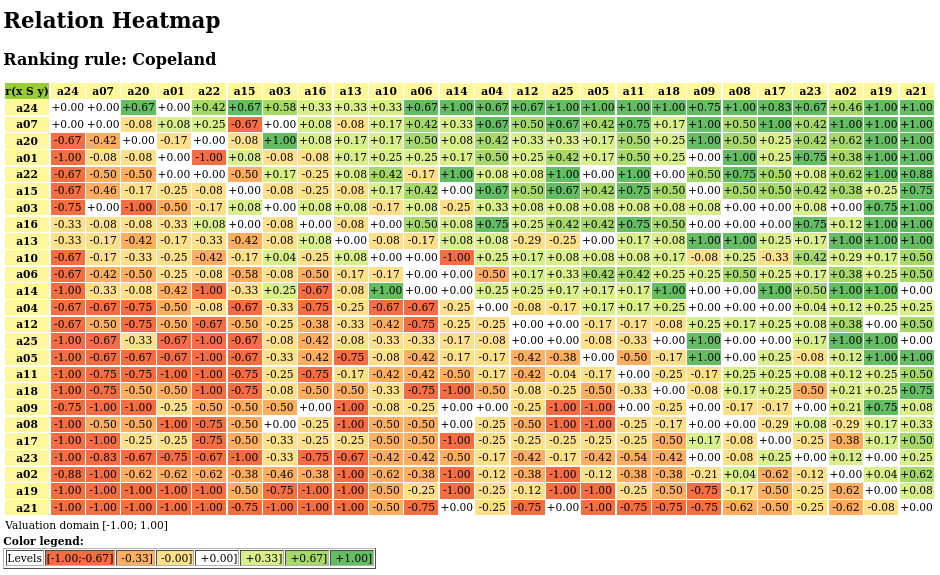

2. Technical Reference of the Digraph3 modules
- Author:
Raymond Bisdorff, Emeritus Professor of Computer Science and Applied Mathematics, University of Luxembourg
- Url:
- Version:
Python 3.13 (release: 3.13.7)
- Copyright:
R. Bisdorff 2013-2025
- New:
Added a new
transitiveDigraphs.PartialBachetRankingclass using the newlinearOrders.PolarisedBachetRankingclass for generating highly correlated partial rankings from a given outranking digraph instance.In order to explore potential run time accelerations with CUDA on GPUs, a new cythonized cnpBipolarDigraphs module with a numpy integer array implementation of the bipolar-valued characteristic valuation has been added to the cythonized collection of Digraph3 modules.
Following a Python 3.12 recommendation, all multiprocessing resources have been refactored to use by default, instead of the traditional fork, the safer spawn threading start method. As a consequence, main program code of multiprocessing Digraph3 Python scripts must now start with a __name__==__main__ test in order to avoid its recursive execution in each started thread (see the
multiprocessingmodule).A
pairingsmodule for solving fair intergroup and intragroup pairing problemsA
dynamicProgrammingmodule for solving dynamic programming problemsThe
digraphsTools.computeSequenceAlignment()method implements the Needlemann % Wunsch dynamic programming algorithm for computing DNA sequence alignments
Preface
It is necessary to mention that the Digraph3 Python resources do not provide a professional Python software library. The collection of Python modules was not built following any professional software development methodology. The design of classes and methods was kept as simple and elementary as was opportune for the author. Sophisticated and cryptic overloading of classes, methods and variables is more or less avoided all over. A simple copy, paste and ad hoc customisation development strategy was generally preferred. As a consequence, the Digraph3 modules keep a large part of independence.
Furthermore, the development of the Digraph3 modules being spread over two decades, the programming style did evolve with growing experience and the changes and enhancement coming up with the ongoing new releases first, of the standard Python2, and later of the standard Python3 libraries. The backward compatibility requirements necessarily introduced so with time different notation and programming techniques.
Note
Two deviating features from the usually recommended Python source coding style must be mentioned. We do not use only lowercase function names and avoid all underscore separators because of Latex editing problems. Same rule is applied to variable names, except Boolean method parameters like Debug or Comments where we prefer using semiotic names starting with an uppercase letter.
2.1. Installation
Dowloading the Digraph3 resources
Three download options are given:
Recommended: With a browser access, download and extract the latest distribution zip archive either, from
By using a git client and cloning either, from github.com:
...$ git clone https://github.com/rbisdorff/Digraph3
Or, from sourceforge.net:
...$ git clone https://git.code.sf.net/p/digraph3/code Digraph3
On Linux or Mac OS, ..$ cd to the extracted <Digraph3> directory. From Python3.10.4 on, the distutils package and the direct usage of setup.py are deprecated. The instead recommended installation via the pip module is provided with:
../Digraph3$ make installPip
This make command launches in fact a ${PYTHON} -m pip -v install upgrade scr = . command that installs the Digraph3 modules in the running virtual environment (recommended option) or the users local site-packages directory. A system wide installation is possible with prefixing the make installPip commad with sudo. As of Python 3.11, it is necessary to previously install the wheel package ( $ python3.11 -m pip install wheel).
For earlier Python3 version:
../Digraph3$ make installVenv
installs the Digraph3 modules in an activated virtual Python environment (the Python recommended option), or in the users local python3 site-packages.
Whereas:
../Digraph3$ make install
installs (with sudo ${PYTHON} setup.py) the Digraph3 modules system wide in the current running python environment. Python 3.8 (or later) environment is recommended (see the makefile for adapting to your PYTHON make constant).
If the cython (https://cython.org/) C-compiled modules for Big Data applications are required, it is necessary to previously install the cython package and, if not yet installed, the wheel package in the running Python environment:
...$ python3 -m pip install cython wheel
It is recommended to run a test suite:
.../Digraph3$ make tests
Test results are stored in the <Digraph3/test/results> directory. Notice that the python3 pytest package is therefore required:
...$ python3 -m pip install pytest pytest-xdist
A verbose (with stdout not captured) pytest suite may be run as follows:
.../Digraph3$ make verboseTests
Individual module pytest suites are also provided (see the makefile), like the one for the outrankingDigraphs module:
../Digraph3$ make outrankingDigraphsTests
When the GNU parallel shell tool is installed and multiple processor cores are detected, the tests may be executed in multiprocessing mode:
../Digraph3$ make pTests
If the pytest-xdist package is installed (see above), it is also possible to set as follws a number of pytests to be run in parallel (see the makefile):
../Digraph3$ make tests JOBS="-n 8"
The pytest module is by default ignoring Python run time warnings. It is possible to activate default warnings as follows (see the makefile):
../Digraph3$ make tests PYTHON="python3 -Wd"
Dependencies
To be fully functional, the Digraph3 resources mainly need the graphviz tools and the R statistics resources to be installed.
When exploring digraph isomorphisms, the nauty isomorphism testing program is required.
2.2. Organisation of the Digraph3 modules
The Digraph3 source code is split into several interdependent modules of which the digraphs.py module is the master module.
2.2.1. Basic modules
- digraphs module
Main part of the Digraph3 source code with the generic root Digraph class.
- graphs module
Resources for handling undirected graphs with the generic root Graph class and a brigde to the
digraphsmodule resources.
- perfTabs module
Tools for handling multiple criteria performance tableaux with the generic root PerformanceTableau class.
- outrankingDigraphs module
Root module for handling outranking digraphs with the abstract generic root
OutrankingDigraphclasss and the main BipolarOutrankingDigraph class. Notice that the outrankingDigraph class defines a hybrid object type, inheriting conjointly from theDigraphclass and thePerformanceTableauclass.
- votingProfiles module
Classes and methods for handling voting ballots and computing election results with main LinearVotingProfile class.
- pairings module
Classes and methods for computing fair pairings solutions with abstract generic root
Pairingclass.
- dynamicProgramming module
Classes and methods for solving dynamic programming problems with generic root
DynamicProgrammingDigraphclass.
2.2.2. Various Random generators
- randomDigraphs module
Various implemented random digraph models.
- randomPerfTabs module
Various implemented random performance tableau models.
- randomNumbers module
Additional random number generators, not available in the standard python random.py library.
2.2.3. Handling big data
- performanceQuantiles module
Incremental representation of large performance tableaux via binned cumulated density functions per criteria. Depends on the
randomPerfTabsmodule.
- sparseOutrankingDigraphs module
Sparse implementation design for large bipolar outranking digraphs (order > 1000);
- mpOutrankingDigraphs module
New variable start-methods based multiprocessing construction of genuine bipolar-valued outranking digraphs.
- Cythonized modules for big digraphs
Cythonized C implementation for handling big performance tableaux and bipolar outranking digraphs (order > 1000).
- cRandPerfTabs module
Integer and float valued C version of the
randomPerfTabsmodule- cIntegerOutrankingDigraphs module
Integer and float valued C version of the
BipolarOutrankingDigraphclass- cIntegerSortingDigraphs module
Integer and float valued C version of the
QuantilesSortingDigraphclass- cSparseIntegerOutrankingDigraphs module
Integer and float valued C version of sparse outranking digraphs.
- cQuantilesRankingDigraphs module
Integer and float valued C version of sparse outranking digraphs.
- cnpBipolarDigraphs module
New numpy integer arrays implemented bipolar outrankingDigraphs.
2.2.4. Sorting, rating and ranking tools
- ratingDigraphs module
Tools for solving relative and absolute rating problems with the abstract generic root
RatingDigraphclass;
- sortingDigraphs module
Additional tools for solving sorting problems with the generic root
SortingDigraphclass and the main QuantilesSortingDigraph class;
- linearOrders module
Additional tools for solving linearly ranking problems with the abstract generic root LinearOrder class;
- transitiveDigraphs module
Additional tools for solving pre-ranking problems with abstract generic root TransitiveDigraph class.
2.2.5. Miscellaneous tools
- digraphsTools module
Various generic methods and tools for handling digraphs.
- arithmetics module
Some common methods and tools for computing with integer numbers.
2.3. digraphs module
A tutorial with coding examples is available here: Working with the Digraph3 software resources
Inheritance Diagram
Python3+ implementation of the digraphs module, root module of the Digraph3 resources.
Copyright (C) 2006-2025 Raymond Bisdorff
This program is free software; you can redistribute it and/or modify it under the terms of the GNU General Public License as published by the Free Software Foundation; either version 3 of the License, or (at your option) any later version.
This program is distributed in the hope that it will be useful, but WITHOUT ANY WARRANTY; without even the implied warranty of MERCHANTABILITY or FITNESS FOR A PARTICULAR PURPOSE. See the GNU General Public License for more details.
You should have received a copy of the GNU General Public License along with this program; if not, write to the Free Software Foundation, Inc., 51 Franklin Street, Fifth Floor, Boston, MA 02110-1301 USA.
- class digraphs.AsymmetricPartialDigraph(digraph)[source]
Renders the asymmetric part of a Digraph instance.
Note
The non asymmetric and the reflexive links are all put to the median indeterminate characteristic value!
The constructor makes a deep copy of the given Digraph instance!
- class digraphs.BipartitePartialDigraph(digraph, partA, partB, Partial=True)[source]
Renders the bipartite part of a Digraph instance.
Note
partA and partB must be parts of the actions attribute of the given Digraph instance
The non-bipartite links are all put to the median indeterminate characteristic value
The constructor makes a deep copy of the given Digraph instance
- class digraphs.BreakAddCocsDigraph(digraph=None, Piping=False, Comments=False, Threading=False, nbrOfCPUs=1)[source]
Specialization of general Digraph class for instantiation of chordless odd circuits augmented digraphs.
Parameters:
digraph: Stored or memory resident digraph instance.
Piping: using OS pipes for data in- and output between Python and C++.
A chordless odd circuit is added if the cumulated credibility of the circuit supporting arcs is larger or equal to the cumulated credibility of the converse arcs. Otherwise, the circuit is broken at the weakest asymmetric link, i.e. a link (x, y) with minimal difference between r(x S y) - r(y S x).
- addCircuits(Comments=False)[source]
Augmenting self with self.circuits.
- closureChordlessOddCircuits(Piping=False, Comments=True, Debug=False, Threading=False, nbrOfCPUs=1)[source]
Closure of chordless odd circuits extraction.
- showCircuits(credibility=None, Debug=False)[source]
show methods for chordless odd circuits in CocaGraph
- showComponents()[source]
Shows the list of connected components of the digraph instance.
- class digraphs.BrokenChordlessCircuitsDigraph(digraph=None, Comments=False)[source]
Terminology requirement
- class digraphs.BrokenCocsDigraph(digraph=None, Comments=False)[source]
Specialization of general Digraph class for instantiation of chordless odd circuits broken digraphs.
Parameters:
digraph: stored or memory resident digraph instance.
All chordless odd circuits are broken at the weakest asymmetric link, i.e. a link
 with minimal difference between and .
with minimal difference between and .- breakChordlessOddCircuits(Comments=True, Debug=False)[source]
Breaking of chordless odd circuits extraction.
- breakCircuits(Comments=False, Debug=False)[source]
Break all cricuits in self.circuits.
- showComponents()[source]
Shows the list of connected components of the digraph instance.
- class digraphs.CSVDigraph(fileName='temp', valuationMin=-1, valuationMax=1)[source]
Specialization of the general Digraph class for reading stored csv formatted digraphs. Using the inbuilt module csv.
- Param:
fileName (without the extension .csv).
- showAll()[source]
Detailed show method for genuine digraphs.
- class digraphs.CirculantDigraph(order=7, valuationdomain={'max': Decimal('1.0'), 'min': Decimal('-1.0')}, circulants=[-1, 1], IndeterminateInnerPart=False)[source]
Specialization of the general Digraph class for generating temporary circulant digraphs.
- Parameters:
- order > 0;valuationdomain ={min:m, max:M};circulant connections = list of positive and/or negative circular shifts of value 1 to n.
- Default instantiation C_7:
- order = 7,valuationdomain = {min:-1.0,max:1.0},circulants = [-1,1].
Example session:
>>> from digraphs import CirculantDigraph >>> c8 = CirculantDigraph(order=8,circulants=[1,3]) >>> c8.exportGraphViz('c8') *---- exporting a dot file for GraphViz tools ---------* Exporting to c8.dot circo -Tpng c8.dot -o c8.png # see below the graphviz drawing >>> c8.showChordlessCircuits() No circuits yet computed. Run computeChordlessCircuits()! >>> c8.computeChordlessCircuits() ... >>> c8.showChordlessCircuits() *---- Chordless circuits ----* ['1', '4', '7', '8'] , credibility : 1.0 ['1', '4', '5', '6'] , credibility : 1.0 ['1', '4', '5', '8'] , credibility : 1.0 ['1', '2', '3', '6'] , credibility : 1.0 ['1', '2', '5', '6'] , credibility : 1.0 ['1', '2', '5', '8'] , credibility : 1.0 ['2', '3', '6', '7'] , credibility : 1.0 ['2', '3', '4', '7'] , credibility : 1.0 ['2', '5', '6', '7'] , credibility : 1.0 ['3', '6', '7', '8'] , credibility : 1.0 ['3', '4', '7', '8'] , credibility : 1.0 ['3', '4', '5', '8'] , credibility : 1.0 12 circuits. >>>
![circulant [1,3] digraph](_images/c8.png)
- showShort()[source]
concise presentation method for genuine digraphs.
- class digraphs.CoDualDigraph(other, Debug=False)[source]
Instantiates the associated codual -converse of the negation- from a deep copy of a given Digraph instance called other.
Note
Instantiates self as other.__class__ ! And, deepcopies, the case given, the other.description, the other.criteria and the other.evaluation dictionaries into self.
- class digraphs.CocaDigraph(digraph=None, Piping=False, Comments=False)[source]
Old CocaDigraph class without circuit breakings; all circuits and circuits of circuits are added as hyper-nodes.
Warning
May sometimes give inconsistent results when an autranking digraph shows loads of chordless cuircuits. It is recommended in this case to use instead either the BrokenCocsDigraph class (preferred option) or the BreakAddCocsDigraph class.
Parameters:
digraph: Stored or memory resident digraph instance.
Piping: using OS pipes for data in- and output between Python and C++.
Specialization of general Digraph class for instantiation of chordless odd circuits augmented digraphs.
- addCircuits(Comments=False)[source]
Augmenting self with self.circuits.
- closureChordlessOddCircuits(Piping=False, Comments=False)[source]
Closure of chordless odd circuits extraction.
- showCircuits(credibility=None)[source]
show methods for chordless odd circuits in CocaGraph
- showComponents()[source]
Shows the list of connected components of the digraph instance.
- class digraphs.CompleteDigraph(order=5, valuationdomain=(-1.0, 1.0))[source]
Specialization of the general Digraph class for generating temporary complete graphs of order 5 in {-1,0,1} by default.
- Parameters:
order > 0; valuationdomain=(Min,Max).
- class digraphs.ConverseDigraph(other)[source]
Instantiates the associated converse or reciprocal version from a deep copy of a given Digraph called other.
Instantiates as other.__class__ !
Deep copies, the case given, the description, the criteria and the evaluation dictionaries into self.
- class digraphs.CoverDigraph(other, Debug=False)[source]
Instantiates the associated cover relation -immediate neighbours- from a deep copy of a given Digraph called other. The Hasse diagram for instance is the cover relation of a transitive digraph.
Note
Instantiates as other.__class__ ! Copies the case given the other.description, the other.criteria and the other.evaluation dictionaries into self.
- class digraphs.CriteriaCorrelationDigraph(outrankingDigraph, ValuedCorrelation=True, WithMedian=False)[source]
Renders the ordinal criteria correlation digraph from the given outranking digraph.
If ValuedCorrelation==True, the correlation indexes represent the bipolar-valued p airwise relational equivalence between the marginal criteria outranking relation: that is tau * determination
Otherwise, the valuation represents the ordinal correlation index tau
If WithMedian==True, the correlation of the marginal criteria outranking with the global outranking relation, denoted m, is included.
- exportPrincipalImage(plotFileName=None, pictureFormat='pdf', bgcolor='cornsilk', fontcolor='red3', fontsize='0.85', tempDir='.', Comments=False)[source]
Export the principal projection of the absolute correlation distances using the three principal eigen vectors.
Implemeted picture formats are: pdf (default), png, jpeg and xfig.
The background, resp. font color is set by default to cornsilk, resp. red3.
_Colwise and _Reduced parameters are deprecated.
Warning
The method, writing and reading temporary files: tempCol.r and rotationCol.csv, resp. tempRow.r and rotationRow.csv, by default in the working directory (./), is hence not safe for multiprocessing programs, unless a temporary directory tempDir is provided.
- class digraphs.Digraph(file=None, order=7)[source]
Genuine root class of all Digraph3 modules. See Digraph3 tutorials.
All instances of the
digraphs.Digraphclass contain at least the following components:A collection of digraph nodes called actions (decision alternatives): a list, set or (ordered) dictionary of nodes with name and shortname attributes,
A logical characteristic valuationdomain, a dictionary with three decimal entries: the minimum (-1.0, means certainly false), the median (0.0, means missing information) and the maximum characteristic value (+1.0, means certainly true),
The digraph relation : a double dictionary indexed by an oriented pair of actions (nodes) and carrying a characteristic value in the range of the previous valuation domain,
Its associated gamma function : a dictionary containing the direct successors, respectively predecessors of each action, automatically added by the object constructor,
Its associated notGamma function : a dictionary containing the actions that are not direct successors respectively predecessors of each action, automatically added by the object constructor.
A previously stored
digraphs.Digraphinstance may be reloaded with the file argument:>>> from randomDigraphs import RandomValuationDigraph >>> dg = RandomValuationDigraph(order=3,Normalized=True,seed=1) >>> dg.save('testdigraph') Saving digraph in file: <testdigraph.py> >>> from digraphs import Digraph >>> dg = Digraph(file='testdigraph') # without the .py extenseion >>> dg.__dict__ {'name': 'testdigraph', 'actions': {'a1': {'name': 'random decision action', 'shortName': 'a1'}, 'a2': {'name': 'random decision action', 'shortName': 'a2'}, 'a3': {'name': 'random decision action', 'shortName': 'a3'}}, 'valuationdomain': {'min': Decimal('-1.0'), 'med': Decimal('0.0'), 'max': Decimal('1.0'), 'hasIntegerValuation': False,}, 'relation': {'a1': {'a1': Decimal('0.0'), 'a2': Decimal('-0.66'), 'a3': Decimal('0.44')}, 'a2': {'a1': Decimal('0.94'), 'a2': Decimal('0.0'), 'a3': Decimal('-0.84')}, 'a3': {'a1': Decimal('-0.36'), 'a2': Decimal('-0.70'), 'a3': Decimal('0.0')}}, 'order': 3, 'gamma': {'a1': ({'a3'}, {'a2'}), 'a2': ({'a1'}, set()), 'a3': (set(), {'a1'})}, 'notGamma': {'a1': ({'a2'}, {'a3'}), 'a2': ({'a3'}, {'a1', 'a3'}), 'a3': ({'a1', 'a2'}, {'a2'})}} >>>
- MISgen(S, I)[source]
- generator of maximal independent choices (voir Byskov 2004):
S ::= remaining nodes;
I ::= current independent choice
Note
Inititalize: self.MISgen(set(self.actions),frozenset()), (see self.showMIS() method)
- absirred(choice)[source]
Renders the crips -irredundance degree of a choice.
- absirredundant(U)[source]
Generates all -irredundant choices of a digraph.
- absirredval(choice, relation)[source]
Renders the valued -irredundance degree of a choice.
- absirredx(choice, x)[source]
Computes the crips -irredundance degree of node x in a choice.
- abskernelrestrict(prekernel)[source]
Parameter: prekernel Renders absorbent prekernel restricted relation.
- absorb(choice)[source]
Renders the absorbency degree of a choice.
- absorbentChoices(S)[source]
Generates all minimal absorbent choices of a bipolar valued digraph.
- addValuationAttribute()[source]
Adds the numpy valuation attribute
- agglomerationDistribution()[source]
Output: aggloCoeffDistribution, meanCoeff Renders the distribution of agglomeration coefficients.
- aneighbors(node)[source]
Renders the set of absorbed in-neighbors of a node.
- automorphismGenerators()[source]
Adds automorphism group generators to the digraph instance.
Note
Dependency: Uses the dreadnaut command from the nauty software package. See https://www3.cs.stonybrook.edu/~algorith/implement/nauty/implement.shtml
- On Ubuntu Linux:
$ sudo apt-get install nauty
- averageCoveringIndex(choice, direction='out')[source]
Renders the average covering index of a given choice in a set of objects, ie the average number of choice members that cover each non selected object.
- bipolarKCorrelation(digraph, Debug=False)[source]
Renders the bipolar Kendall correlation between two bipolar valued digraphs computed from the average valuation of the XORDigraph(self,digraph) instance.
Warning
Obsolete! Is replaced by the self.computeBipolarCorrelation(other) Digraph method
- bipolarKDistance(digraph, Debug=False)[source]
Renders the bipolar crisp Kendall distance between two bipolar valued digraphs.
Warning
Obsolete! Is replaced by the self.computeBipolarCorrelation(other, MedianCut=True) Digraph method
- chordlessPaths(Pk, n2, Odd=False, Comments=False, Debug=False)[source]
New procedure from Agrum study April 2009 recursive chordless path extraction starting from path Pk = [n2, ., n1] and ending in node n2. Optimized with marking of visited chordless P1s.
- circuitAverageCredibility(circ)[source]
Renders the average linking credibility of a Chordless Circuit.
- circuitCredibilities(circuit, Debug=False)[source]
Renders the average linking credibilities and the minimal link of a Chordless Circuit.
- circuitMaxCredibility(circ)[source]
Renders the maximal linking credibility of a Chordless Circuit.
- circuitMinCredibility(circ)[source]
Renders the minimal linking credibility of a Chordless Circuit.
- closeSymmetric(InSite=True)[source]
Produces the symmetric closure of self.relation.
- closeTransitive(Reverse=False, InSite=True, Comments=False)[source]
Produces the transitive closure of self.relation.
Parameters:
If Reverse == True (False default) all transitive links are dropped, otherwise all transitive links are closed with min[r(x,y),r(y,z)];
If Insite == False (True by default) the methods return a modified copy of self.relation without altering the original self.relation, otherwise self.relation is modified.
- components()[source]
Renders the list of connected components.
- computeAllDensities(choice=None)[source]
parameter: choice in self renders six densitiy parameters: arc density, double arc density, single arc density, strict single arc density, absence arc density, strict absence arc densitiy.
- computeArrowRaynaudOrder()[source]
Renders a linear ordering from worst to best of the actions following Arrow&Raynauds rule.
- computeArrowRaynaudRanking()[source]
renders a linear ranking from best to worst of the actions following Arrow&Raynauds rule.
- computeAverageValuation()[source]
Computes the bipolar average correlation between self and the crisp complete digraph of same order of the irreflexive and determined arcs of the digraph
- computeBadChoices(Comments=False)[source]
Computes characteristic values for potentially bad choices.
Note
Returns a tuple with following content:
[(0)-determ,(1)degirred,(2)degi,(3)degd,(4)dega,(5)str(choice),(6)absvec]
- computeBadPirlotChoices(Comments=False)[source]
Characteristic values for potentially bad choices using the Pirlots fixpoint algorithm.
- computeBestChoiceRecommendation(Verbose=False, Comments=False, ChoiceVector=False, CoDual=True, Debug=False, _OldCoca=False, BrokenCocs=True)[source]
Sets self.bestChoice, self.bestChoiceData, self.worstChoice and self.worstChoiceData with the showBestChoiceRecommendation method.
First and last choices data is the following: [(0)-determ,(1)degirred,(2)degi,(3)degd,(4)dega,(5)str(choice),(6)domvec,(7)cover]
self.bestChoice = self.bestChoiceData[5] self.worstChoice = self.worstChoiceData[5]
- computeBipolarCorrelation(other, MedianCut=False, filterRelation=None, Debug=False)[source]
obsolete: dummy replacement for Digraph.computeOrdinalCorrelation method
- computeChordlessCircuits(Odd=False, Comments=False, Debug=False)[source]
Renders the set of all chordless circuits detected in a digraph. Result is stored in <self.circuitsList> holding a possibly empty list of tuples with at position 0 the list of adjacent actions of the circuit and at position 1 the set of actions in the stored circuit.
When Odd is True, only chordless circuits with an odd length are collected.
- computeChordlessCircuitsMP(Odd=False, Threading=False, nbrOfCPUs=None, startMethod=None, Comments=False, Debug=False)[source]
Multiprocessing version of computeChordlessCircuits().
Renders the set of all chordless odd circuits detected in a digraph. Result (possible empty list) stored in <self.circuitsList> holding a possibly empty list tuples with at position 0 the list of adjacent actions of the circuit and at position 1 the set of actions in the stored circuit. Inspired by Dias, Castonguay, Longo, Jradi, Algorithmica (2015).
Returns a possibly empty list of tuples (circuit,frozenset(circuit)).
If Odd == True, only circuits of odd length are retained in the result.
- computeCoSize()[source]
Renders the number of non validated non reflexive arcs
- computeConcentrationIndex(X, N)[source]
Renders the Gini concentration index of the X serie. N contains the partial frequencies. Based on the triangle summation formula.
- computeConcentrationIndexTrapez(X, N)[source]
Renders the Gini concentration index of the X serie. N contains the partial frequencies. Based on the triangles summation formula.
- computeCondorcetLosers()[source]
Wrapper for condorcetLosers().
- computeCondorcetWinners()[source]
Wrapper for condorcetWinners().
- computeCopelandOrder()[source]
renders a linear ordering from worst to best of the actions following Arrow&Raynauds rule.
- computeCopelandRanking()[source]
renders a linear ranking from best to worst of the actions following Arrow&Raynauds rule.
- computeCutLevelDensities(choice, level)[source]
parameter: choice in self, robustness level renders three robust densitiy parameters: robust double arc density, robust single arc density, robust absence arc densitiy.
- computeDensities(choice)[source]
parameter: choice in self renders the four densitiy parameters: arc density, double arc density, single arc density, absence arc density.
- computeDeterminateness(InPercents=False)[source]
Computes the Kendalll distance of self with the all median-valued indeterminate digraph of order n.
Return the average determination of the irreflexive part of the digraph.
determination = sum_(x,y) { abs[ r(xRy) - Med ] } / n(n-1)
If InPercents is True, returns the average determination in percentage of (Max - Med) difference.
>>> from outrankingDigraphs import BipolarOutrankingDigraph >>> from randomPerfTabs import Random3ObjectivesPerformanceTableau >>> t = Random3ObjectivesPerformanceTableau(numberOfActions=7,numberOfCriteria=7,seed=101) >>> g = BipolarOutrankingDigraph(t,Normalized=True) >>> g *------- Object instance description ------* Instance class : BipolarOutrankingDigraph Instance name : rel_random3ObjectivesPerfTab Actions : 7 Criteria : 7 Size : 27 Determinateness (%) : 65.67 Valuation domain : [-1.00;1.00] >>> print(g.computeDeterminateness()) 0.3134920634920634920634920638 >>> print(g.computeDeterminateness(InPercents=True)) 65.67460317460317460317460320 >>> g.recodeValuation(0,1) >>> g *------- Object instance description ------* Instance class : BipolarOutrankingDigraph Instance name : rel_random3ObjectivesPerfTab Actions : 7 Criteria : 7 Size : 27 Determinateness (%) : 65.67 Valuation domain : [0.00;1.00] >>> print(g.computeDeterminateness()) 0.1567460317460317460317460318 >>> print(g.computeDeterminateness(InPercents=True)) 65.67460317460317460317460320
- computeDiameter(Oriented=True)[source]
Renders the (by default oriented) diameter of the digraph instance
- computeDigraphCentres(WeakDistances=False, Comments=False)[source]
The centers of a digraph are the nodes with finite minimal shortes path lengths.
The maximal neighborhood distances are stored in self.maximalNeighborhoodDistances.
The corresponding digraph radius and diameter are stored respectively in self.radius and self.diameter.
With Comments = True, all these results are printed out.
Source: Claude Berge, The Theory of Graphs, Dover (2001) pp. 119, original in French Dunod (1958)
- computeDynamicProgrammingStages(source, sink, Debug=False)[source]
Renders the discrete stages of the optimal substructure for dynamic pogramming digrahs from a given source node to a given sink sink node.
Returns a list of list of action identifyers.
- computeGoodChoiceVector(ker, Comments=False)[source]
- Computing Characteristic values for dominant pre-kernelsusing the von Neumann dual fixoint equation
- computeGoodChoices(Comments=False)[source]
Computes characteristic values for potentially good choices.
..note:
Return a tuple with following content: [(0)-determ,(1)degirred,(2)degi,(3)degd,(4)dega,(5)str(choice),(6)domvec,(7)cover]
- computeGoodPirlotChoices(Comments=False)[source]
Characteristic values for potentially good choices using the Pirlot fixpoint algorithm.
- computeIncomparabilityDegree(InPercents=False, Comments=False)[source]
Renders the incomparability degree (Decimal), i.e. the relative number of symmetric indeterminate relations of the irreflexive part of a digraph.
- computeIntransitiveTriples()[source]
Renders the list of intransitive triples detected in self.
- computeKemenyIndex(otherRelation)[source]
renders the Kemeny index of the self.relation compared with a given crisp valued relation of a compatible other digraph (same nodes or actions).
- computeKemenyOrder(orderLimit=7, Debug=False)[source]
Renders a ordering from worst to best of the actions with maximal Kemeny index. Return a tuple: kemenyOrder (from worst to best), kemenyIndex
- computeKemenyRanking(orderLimit=7, seed=None, sampleSize=1000, Debug=False)[source]
Renders a ranking from best to worst of the actions with maximal Kemeny index.
Note
Returns a tuple: kemenyRanking (from best to worst), kemenyIndex.
- computeKernelVector(kernel, Initial=True, Comments=False)[source]
- Computing Characteristic values for dominant pre-kernelsusing the von Neumann dual fixpoint equation
- computeKohlerOrder()[source]
Renders an ordering (worst to best) of the actions following Kohlers rule.
- computeKohlerRanking()[source]
Renders a ranking (best to worst) of the actions following Kohlers rule.
- computeMaxHoleSize(Comments=False)[source]
Renders the length of the largest chordless cycle in the corresponding disjunctive undirected graph.
- computeMeanInDegree()[source]
Renders the mean indegree of self. !!! self.size must be set previously !!!
- computeMeanOutDegree()[source]
Renders the mean degree of self. !!! self.size must be set previously !!!
- computeMeanSymDegree()[source]
Renders the mean degree of self. !!! self.size must be set previously !!!
- computeMedianOutDegree()[source]
Renders the median outdegree of self. !!! self.size must be set previously !!!
- computeMedianSymDegree()[source]
Renders the median symmetric degree of self. !!! self.size must be set previously !!!
Renders a list of more or less unrelated pairs.
- computeNetFlowsOrder()[source]
Renders an ordered list (from best to worst) of the actions following the net flows ranking rule.
- computeNetFlowsOrderDict()[source]
Renders an ordered list (from worst to best) of the actions following the net flows ranking rule.
- computeNetFlowsRanking()[source]
Renders an ordered list (from best to worst) of the actions following the net flows ranking rule.
- computeNetFlowsRankingDict()[source]
Renders an ordered list (from best to worst) of the actions following the net flows ranking rule.
- computeODistance(op2, comments=False)[source]
renders the squared normalized distance of two digraph valuations.
Note
op2 = digraphs of same order as self.
- computeOrbit(choice, withListing=False)[source]
renders the set of isomorph copies of a choice following the automorphism of the digraph self
- computeOrderCorrelation(order, Debug=False)[source]
Renders the ordinal correlation K of a digraph instance when compared with a given linear order (from worst to best) of its actions
K = sum_{x != y} [ min( max(-self.relation(x,y)),other.relation(x,y), max(self.relation(x,y),-other.relation(x,y)) ]
K /= sum_{x!=y} [ min(abs(self.relation(x,y),abs(other.relation(x,y)) ]
Note
Renders a dictionary with the key correlation containing the actual bipolar correlation index and the key determination containing the minimal determination level D of self and the other relation.
D = sum_{x != y} min(abs(self.relation(x,y)),abs(other.relation(x,y)) / n(n-1)
where n is the number of actions considered.
The correlation index with a completely indeterminate relation is by convention 0.0 at determination level 0.0 .
Warning
self must be a normalized outranking digraph instance !
- computeOrdinalCorrelation(other, MedianCut=False, filterRelation=None, Debug=False)[source]
Renders the bipolar correlation K of a self.relation when compared with a given compatible (same actions set)) digraph or a [-1,1] valued compatible relation (same actions set).
If MedianCut=True, the correlation is computed on the median polarized relations.
If filterRelation is not None, the correlation is computed on the partial domain corresponding to the determined part of the filter relation.
Warning
Notice that the other relation and/or the filterRelation, the case given, must both be normalized, ie [-1,1]-valued !
K = sum_{x != y} [ min( max(-self.relation[x][y]),other.relation[x][y]), max(self.relation[x][y],-other.relation[x][y]) ]
K /= sum_{x!=y} [ min(abs(self.relation[x][y]),abs(other.relation[x][y])) ]
Note
Renders a tuple with at position 0 the actual bipolar correlation index and in position 1 the minimal determination level D of self and the other relation.
D = sum_{x != y} min(abs(self.relation[x][y]),abs(other.relation[x][y])) / n(n-1)
where n is the number of actions considered.
The correlation index with a completely indeterminate relation is by convention 0.0 at determination level 0.0 .
- computeOrdinalCorrelationMP(other, MedianCut=False, Threading=False, nbrOfCPUs=None, startMethod=None, Comments=False, Debug=False)[source]
Multi processing version of the digraphs.computeOrdinalCorrelation() method.
Note
The relation filtering and the MedinaCut option are not implemented in the MP version.
- computePairwiseClusterComparison(K1, K2, Debug=False)[source]
Computes the pairwise cluster comparison credibility vector from bipolar-valued digraph g. with K1 and K2 disjoint lists of action keys from g actions disctionary. Returns the dictionary {I: Decimal(),P+:Decimal(),P-:Decimal(),R :Decimal()} where one and only one item is strictly positive.
- computePreKernels()[source]
- computing dominant and absorbent preKernels:
Result in self.dompreKernels and self.abspreKernels
- computePreRankingRelation(preRanking, Normalized=True, Debug=False)[source]
Renders the bipolar-valued relation obtained from a given preRanking in decreasing levels (list of lists) result.
- computePreorderRelation(preorder, Normalized=True, Debug=False)[source]
Renders the bipolar-valued relation obtained from a given preordering in increasing levels (list of lists) result.
- computePrincipalOrder(Colwise=False, Comments=False)[source]
Rendesr an ordering from wrost to best of the decision actions.
- computePrincipalRanking(Colwise=False, Comments=False)[source]
Rendesr a ranking from best to worst of the decision actions.
- computePrincipalScores(plotFileName=None, Colwise=False, imageType=None, tempDir=None, bgcolor='cornsilk', Comments=False, Debug=False)[source]
Renders a ordered list of the first principal eigenvector of the covariance of the valued outdegrees of self.
Note
The method, relying on writing and reading temporary files by default in a temporary directory is threading and multiprocessing safe ! (see Digraph.exportPrincipalImage method)
- computePrudentBetaLevel(Debug=False)[source]
computes alpha, ie the lowest valuation level, for which the bipolarly polarised digraph doesnt contain a chordless circuit.
- computeRankingByBestChoosing(CoDual=False, Debug=False)[source]
Computes a weak preordering of the self.actions by recursive best choice elagations.
Stores in self.rankingByBestChoosing[result] a list of (P+,bestChoice) tuples where P+ gives the best choice complement outranking average valuation via the computePairwiseClusterComparison method.
If self.rankingByBestChoosing[CoDual] is True, the ranking-by-choosing was computed on the codual of self.
- computeRankingByBestChoosingRelation(rankingByBestChoosing=None, Debug=False)[source]
Renders the bipolar-valued relation obtained from the self.rankingByBestChoosing result.
- computeRankingByChoosing(actionsSubset=None, Debug=False, CoDual=False)[source]
Computes a weak preordring of the self.actions by iterating jointly first and last choice elagations.
Stores in self.rankingByChoosing[result] a list of ((P+,bestChoice),(P-,worstChoice)) pairs where P+ (resp. P-) gives the best (resp. worst) choice complement outranking (resp. outranked) average valuation via the computePairwiseClusterComparison method.
If self.rankingByChoosing[CoDual] is True, the ranking-by-choosing was computed on the codual of self.
- computeRankingByChoosingRelation(rankingByChoosing=None, actionsSubset=None, Debug=False)[source]
Renders the bipolar-valued relation obtained from the self.rankingByChoosing result.
- computeRankingByLastChoosing(CoDual=False, Debug=False)[source]
Computes a weak preordring of the self.actions by iterating worst choice elagations.
Stores in self.rankingByLastChoosing[result] a list of (P-,worstChoice) pairs where P- gives the worst choice complement outranked average valuation via the computePairwiseClusterComparison method.
If self.rankingByChoosing[CoDual] is True, the ranking-by-last-chossing was computed on the codual of self.
- computeRankingByLastChoosingRelation(rankingByLastChoosing=None, Debug=False)[source]
Renders the bipolar-valued relation obtained from the self.rankingByLastChoosing result.
- computeRankingCorrelation(ranking, Debug=False)[source]
Renders the ordinal correlation K of a digraph instance when compared with a given linear ranking of its actions
K = sum_{x != y} [ min( max(-self.relation(x,y)),other.relation(x,y), max(self.relation(x,y),-other.relation(x,y)) ]
K /= sum_{x!=y} [ min(abs(self.relation(x,y),abs(other.relation(x,y)) ]
Note
Renders a tuple with at position 0 the actual bipolar correlation index and in position 1 the minimal determination level D of self and the other relation.
D = sum_{x != y} min(abs(self.relation(x,y)),abs(other.relation(x,y)) / n(n-1)
where n is the number of actions considered.
The correlation index with a completely indeterminate relation is by convention 0.0 at determination level 0.0 .
- computeRelationalStructure(Debug=False)[source]
Renders the counted decomposition of the valued relations into the following type of links: gt >, eq =, lt <, incomp <>, leq <=, geq >=, indeterm ?
- computeRubisChoice(Comments=False, _OldCoca=False, BrokenCocs=True)[source]
Renders self.strictGoodChoices, self.nullChoices self.strictBadChoices, self.nonRobustChoices.
Warning
Changes in site the outranking digraph by adding or braking chordless odd outranking circuits.
- computeRubyChoice(Comments=False, _OldCoca=False)[source]
dummy for computeRubisChoice() old versions compatibility.
- computeShortestPathLengths(WeakPaths=False, Comments=False, Debug=False)[source]
Renders a double dictionary with the directed distances, i.e. the shortest path lengths between all self.actions.
Equals None if there does not exist a directed path between two actions.
Source: Claude Berge, The Theory of Graphs, Dover (2001) pp. 119, original in French Dunod (1958)
- computeSingletonRanking(Comments=False, Debug=False)[source]
Renders the sorted bipolar net determinatation of outrankingness minus outrankedness credibilities of all singleton choices.
res = ((netdet,singleton,dom,absorb)+)
- computeSize()[source]
Renders the number of validated non reflexive arcs
- computeSizeTransitiveClosure()[source]
Renders the size of the transitive closure of a digraph.
- computeSlaterOrder(isProbabilistic=False, seed=None, sampleSize=1000, Debug=False)[source]
Reversed return from computeSlaterRanking method.
- computeSlaterRanking(isProbabilistic=False, seed=None, sampleSize=1000, Debug=False)[source]
Renders a ranking of the actions with minimal Slater index. Return a tuple: slaterOrder, slaterIndex
- computeSymmetryDegree(InPercents=False, Comments=False)[source]
Renders the symmetry degree (Decimal) of the irreflexive part of a digraph.
Note
Empty and indeterminate digraphs are considered to be symmetric.
- computeTopologicalRanking(Debug=False)[source]
Mimetic Wrapper of the topologicalSort() method.
- computeTransitivityDegree(InPercents=False, Comments=False, ReturnIntransitiveTriples=False)[source]
Renders the transitivity degree (Decimal) of a digraph.
Note
An empty or indeterminate digraph is considered to be transitive.
Renders a list of more or less unrelated pairs.
- computeValuationLevels(choice=None, Debug=False)[source]
renders the symmetric closure of the apparent valuations levels of self in an increasingly ordered list. If parameter choice is given, the computation is limited to the actions of the choice.
- computeValuationPercentages(choice, percentiles, withValues=False)[source]
Parameters: choice and list of percentiles. renders a series of percentages of the characteristics valuation of the arcs in the digraph.
- computeValuationPercentiles(choice, percentages, withValues=False)[source]
Parameters: choice and list of percentages. renders a series of quantiles of the characteristics valuation of the arcs in the digraph.
- computeValuationStatistics(Sampling=False, Comments=False)[source]
Renders the mean and variance of the valuation of the non reflexive pairs.
- computeValuedRankingRelation(ranking)[source]
Renders the valued relation characteristics compatible with the given linar ranking. Discordant charcateristics are set to the indeterminate value.
- computeWeakCondorcetLosers()[source]
Wrapper for weakCondorcetLosers().
- computeWeakCondorcetWinners()[source]
Wrapper for weakCondorcetWinners().
- computeWeakTransitivityDegree(InPercents=False, Comments=False, ReturnWeakIntransitiveTriples=False)[source]
Renders the strict and the weak transitivity degrees (Decimal) of a digraph, i.e. the ratio of the number of closed x>z , respt. weakly-closed (x>z and x<>y) triples over the number of x>y>z triples of the transitive closure of the digraph.
With ReturnWeakIntransitiveTriples=True returns a tuple with a list of intransitive triples and a list of weakly intransitive triples.
Note
Digraphs without connected triples, like empty or indeterminate digraphs are considered to be weakly transitive.
>>> from outrankingDigraphs import BipolarOutrankingDigraph >>> from randomDigraphs import RandomCBPerformanceTableau >>> t = RandomCBPerformanceTableau( ... weightDistribution="equiobjectives", ... numberOfActions=10,numberOfCriteria=11, ... missingDataProbability=0.05,seed=2) >>> g = BipolarOutrankingDigraph(t) >>> g.computeWeakTransitivityDegree(Comments=True) Transitivity degree of digraph <rel_randomCBperftab>: #triples x>y>z: 720, #closed: 400, #weakly-closed: 80,#open: 240 (#closed/#triples) = 0.556 (#weakly-closed/#triples) = 0.667
- computeupdown1(s, S)[source]
Help method for show_MIS_HB2 method. fills self.newmisset, self.upmis, self.downmis.
- computeupdown2(s, S)[source]
Help method for show_MIS_HB1 method. Fills self.newmisset, self.upmis, self.downmis.
- computeupdown2irred(s, S)[source]
Help method for show_MIS_HB1 method. Fills self.newmisset, self.upmis, self.downmis.
- condorcetLosers()[source]
Renders the set of decision actions x such that self.relation[x][y] < self.valuationdomain[med] for all y != x.
- condorcetWinners()[source]
Renders the set of decision actions x such that self.relation[x][y] > self.valuationdomain[med] for all y != x.
- contra(v)[source]
Parameter: choice. Renders the negation of a choice v characteristics vector.
- convertRelationToDecimal()[source]
Converts the float valued self.relation in a decimal valued one.
- convertValuation2Integer(InSite=True, Comments=False)[source]
Converts the self.relation valuation to integer values by converting the Decimals to Fractions and multiply by the least commun multiple of the fraction denominators.
Parameters:
If Insite == False (True by default) the method returns a modified copy of self.relation without altering the original self.relation, otherwise self.relation and self.valuationdomain is modified.
- convertValuationToDecimal()[source]
Convert the float valuation limits to Decimals.
- coveringIndex(choice, direction='out')[source]
Renders the covering index of a given choice in a set of objects, ie the minimum number of choice members that cover each non selected object.
- crispKDistance(digraph, Debug=False)[source]
Renders the crisp Kendall distance between two bipolar valued digraphs.
Warning
Obsolete! Is replaced by the self.computeBipolarCorrelation(other, MedianCut=True) Digraph method
- detectChordlessCircuits(Comments=False, Debug=False)[source]
Detects a chordless circuit in a digraph. Returns a Boolean
- detectChordlessPath(Pk, n2, Comments=False, Debug=False)[source]
New procedure from Agrum study April 2009 recursive chordless path extraction starting from path Pk = [n2, ., n1] and ending in node n2. Optimized with marking of visited chordless P1s.
- determinateness(vec, inPercent=True)[source]
Renders the determinateness of a characteristic vector vec = [(r(x),x),(r(y),y), ] of length n in valuationdomain [Min,Med,Max]:
result = sum_x( abs(r(x)-Med) ) / ( n*(Max-Med) )
If inPercent, result shifted (+1) and reduced (/2) to [0,1] range.
- digraph2Graph(valuationDomain={'max': 1, 'med': 0, 'min': -1}, Debug=False, ConjunctiveConversion=True)[source]
Convert a Digraph instance to a Graph instance.
- dneighbors(node)[source]
Renders the set of dominated out-neighbors of a node.
- domin(choice)[source]
Renders the dominance degree of a choice.
- dominantChoices(S)[source]
Generates all minimal dominant choices of a bipolar valued digraph.
Note
Initiate with S = self.actions.copy().
- domirred(choice)[source]
Renders the crips +irredundance degree of a choice.
- domirredval(choice, relation)[source]
Renders the valued +irredundance degree of a choice.
- domirredx(choice, x)[source]
Renders the crips +irredundance degree of node x in a choice.
- domkernelrestrict(prekernel)[source]
Parameter: dominant prekernel Renders dominant prekernel restricted relation.
- exportGraphViz(fileName=None, actionsSubset=None, bestChoice={}, worstChoice={}, firstChoice={}, lastChoice={}, Comments=True, graphType='png', pictureFormat=None, graphSize='7,7', relation=None, bgcolor='cornsilk')[source]
export GraphViz dot file for graph drawing filtering.
- exportPrincipalImage(plotFileName=None, pictureFormat='pdf', bgcolor='cornsilk', fontcolor='red3', fontsize='0.75', Reduced=False, Colwise=False, tempDir='.', Comments=False)[source]
Export as PDF (default) the principal projection of the valued relation using the three principal eigen vectors.
Implemeted picture formats are: pdf (default), png, jpeg and xfig.
The background color is set by default to cornsilk.
Font size and color are set by default to red3, resp. 0.75.
When Reduced==True, the valued relation characeteristics are centered and reduced.
When Colwise==True, the column vectors of the adjacency table are used for the principal projection, otherwise the rows (default) are used. Has no incidence when the Digraph instance self is symmetric.
Warning
The method, writing and reading temporary files: tempCol.r and rotationCol.csv, resp. tempRow.r and rotationRow.csv, by default in the working directory (./), is hence not safe for multiprocessing programs, unless a temporary directory tempDir is provided.
- flatChoice(ch, Debug=False)[source]
Converts set or list ch recursively to a flat list of items.
- forcedBestSingleChoice()[source]
Renders the set of most determined outranking singletons in self.
- gammaSets()[source]
Renders the dictionary of neighborhoods {node: (dx,ax)} with set dx gathering the dominated, and set ax gathering the absorbed neighborhood.
- generateAbsPreKernels()[source]
Generate all absorbent prekernels from independent choices generator.
- generateDomPreKernels()[source]
Generate all dominant prekernels from independent choices generator.
- htmlChoiceVector(ch, ChoiceVector=True, choiceType='good')[source]
Show procedure for annotated bipolar choices.
- inDegrees()[source]
renders the median cut indegrees
- inDegreesDistribution()[source]
Renders the distribution of indegrees.
- independentChoices(U)[source]
Generator for all independent choices with neighborhoods of a bipolar valued digraph:
Note
Initiate with U = self.singletons().
Yields [(independent choice, domnb, absnb, indnb)].
- inner_prod(v1, v2)[source]
Parameters: two choice characteristic vectors Renders the inner product of two characteristic vetors.
- intstab(choice)[source]
Computes the independence degree of a choice.
- irreflex(mat)[source]
Puts diagonal entries of mat to valuationdomain[min]
- isAsymmetricIndeterminate(Debug=False)[source]
Checks the self.relation for assymmetric indeterminateness!!
Warning
The reflexive links are ignored !!
- isComplete(Debug=False)[source]
checks the completeness property of self.relation by checking for the absence of a link between two actions!!
Warning
The reflexive links are ignored !!
- isCyclic(Debug=False)[source]
checks the cyclicity of self.relation by checking for a reflexive loop in its transitive closure-
Warning
self.relation is supposed to be irreflexive !
- isIntegerValued(Debug=False)[source]
Checks whether the decimal valuation of self is integer-valued be using the as_integer_ratio() method of a Decimal giving a tuple (numerator,denominator). If denominator == 1, the number is an integer.
- isOutrankingDigraph(Comments=True, Debug=False)[source]
Checks the outranking digraph characteristic condition (3.3).
relation[x][y] + relation[y][x)[y] >= 0.0
Warning
The reflexive links are ignored and the valuation must be bipolar !!
- isStrictOutrankingDigraph(Comments=True, Debug=False)[source]
Checks the strict outranking digraph characteristic condition (3.1).
-(relation[x][y] + relation[y][x]) <= 0.0 , x != y
Warning
The reflexive links are ignored and the valuation must be bipolar !!
- isStronglyAsymmetric(Debug=False)[source]
checks the strong assymetric property of self.relation by checking for r(x>y) + r(y>x) <= Med !
Warning
The reflexive links are ignored !!
- isStronglyComplete(Debug=False)[source]
checks the strongly completeness property of self.relation by checking for r(x>=y) + r(y>=x) >= Med !
Warning
The reflexive links are ignored !!
- isSymmetric(Comments=False)[source]
True if symmetry degree == 1.0.
- isTransitive(Comments=False)[source]
True if transitivity degree == 1.0.
- isWeaklyComplete(Debug=False)[source]
checks the weakly completeness property of self.relation by checking for the absence of a link between two actions!!
Warning
The reflexive links are ignored !!
- iterateRankingByChoosing(Odd=False, CoDual=False, Comments=True, Debug=False, Limited=None)[source]
Renders a ranking by choosing result when progressively eliminating all chordless (odd only) circuits with rising valuation cut levels.
- Parameters
CoDual = False (default)/True Limited = proportion (in [0,1]) * (max - med) valuationdomain
- kChoices(A, k)[source]
Renders all choices of length k from set A
- matmult2(m, v)[source]
Parameters: digraph relation and choice characteristic vector matrix multiply vector by inner production
- meanDegree()[source]
Renders the mean degree of self. !!! self.size must be set previously !!!
- meanLength(Oriented=False)[source]
Renders the (by default non-oriented) mean neighbourhoor depth of self. !!! self.order must be set previously !!!
- minimalChoices(S)[source]
Generates all dominant or absorbent choices of a bipolar valued digraph.
- minimalValuationLevelForCircuitsElimination(Odd=True, Debug=False, Comments=False)[source]
renders the minimal valuation level <lambda> that eliminates all self.circuitsList stored odd chordless circuits from self.
Warning
The <lambda> level polarised may still contain newly appearing chordless odd circuits !
- neighbourhoodCollection(Oriented=False, Potential=False)[source]
Renders the neighbourhood.
- neighbourhoodDepthDistribution(Oriented=False)[source]
Renders the distribtion of neighbourhood depths.
- notGammaSets()[source]
Renders the dictionary of neighborhoods {node: (dx,ax)} with set dx gathering the not dominated, and set ax gathering the not absorbed neighborhood.
- notaneighbors(node)[source]
Renders the set of absorbed not in-neighbors of a node.
- notdneighbors(node)[source]
Renders the set of not dominated out-neighbors of a node.
- outDegrees()[source]
renders the median cut outdegrees
- outDegreesDistribution()[source]
Renders the distribution of outdegrees.
- plusirredundant(U)[source]
Generates all +irredundant choices of a digraph.
- powerset(U)[source]
Generates all subsets of a set.
- readPerrinMisset(file='curd.dat')[source]
read method for 0-1-char-coded MISs by default from the perrinMIS.c curd.dat result file.
- readabsvector(x, relation)[source]
Parameter: action x absorbent in vector.
- readdomvector(x, relation)[source]
Parameter: action x dominant out vector.
- recodeValuation(newMin=-1.0, newMax=1.0, ndigits=4, Debug=False)[source]
Recodes the characteristic valuation domain according to the parameters given.
ndigits indicates the number of decimal digits of the valuation.
- relationFct(x, y)[source]
wrapper for self.relation dictionary access to ensure interoperability with the sparse and big outranking digraph implementation model.
- save(fileName='tempdigraph', option=None, DecimalValuation=True, decDigits=2)[source]
Persistent storage of a Digraph class instance in the form of a python source code file
- saveCSV(fileName='tempdigraph', Normalized=False, Dual=False, Converse=False, Diagonal=False, Debug=False)[source]
Persistent storage of a Digraph class instance in the form of a csv file.
- saveXMCDA2(fileName='temp', fileExt='xmcda2', Comments=True, relationName='R', relationType='binary', category='random', subcategory='valued', author='digraphs Module (RB)', reference='saved from Python', valuationType='standard', digits=2, servingD3=False)[source]
save digraph in XMCDA 2.0 format. Deprecated now.
- savedre(fileName='temp')[source]
save digraph in nauty format.
- sharp(x, y)[source]
Paramaters: choice characteristic values. Renders the sharpest of two characteristic values x and y.
- sharpvec(v, w)[source]
Paramaters: choice characteristic vectors. Renders the sharpest of two characteristic vectors v and w.
- showActions()[source]
presentation methods for digraphs actions
- showAll()[source]
Detailed show method for genuine digraphs.
- showAttributes()[source]
Prints out the attributes of self.
- showAutomorphismGenerators()[source]
Renders the generators of the automorphism group.
- showBachetChoiceRecommendation(randomized=100, maxNbrOfRankings=5, seed=None, Comments=False, ChoiceVector=False, CoDual=True, Debug=False)[source]
Shows a choice recommendation from the partial transitive Bachet ranking.
Usage example:
>>> from outrankingDigraphs import * >>> t = Random3ObjectivesPerformanceTableau(seed=5) >>> g = BipolarOutrankingDigraph(t) >>> g.showBachetChoiceRecommendation(randomized=100, ... maxNbrOfRankings=5,seed=1) *---- Bachet Choice Recommendations ----* Ranking by recursively first and last choosing 1st ranked ['p11', 'p19', 'p20'] 2nd ranked ['p06', 'p13', 'p14'] 3rd ranked ['p04', 'p05', 'p07', 'p18'] 4th ranked ['p15'] 4th last ranked ['p15'] 3rd last ranked ['p08', 'p09', 'p10', 'p16'] 2nd last ranked ['p01', 'p02', 'p12', 'p17'] 1st last ranked ['p03'] Quality of partial Bachet ranking Crisp ordinal correlation : +0.954 Epistemic determination : +0.383 Bipolar-valued equivalence : +0.365 Execution time: 0.673 seconds *****************************
- showBadChoices(Recompute=True)[source]
Characteristic values for potentially bad choices.
- showBestChoiceRecommendation(Verbose=False, Comments=True, ChoiceVector=False, CoDual=True, Debug=False, _OldCoca=False, BrokenCocs=True)[source]
Shows a best choice recommendation.
Note
Computes by default a best choice recommendation on the corresponding strict (codual) outranking digraph.
By default, with BrokenCocs=True, we brake all chordless circuits at their weakest determined ( abs(r(x>y)) + abs(r(y>x)) ) link.
When BrokenCocs=False we proceed like follows:
In case of chordless circuits, if supporting arcs are more credible than the reversed negating arcs, we collapse the circuits into hyper nodes. Inversely, if supporting arcs are not more credible than the reversed negating arcs, we brake the circuits on their weakest arc.
Usage example:
>>> from outrankingDigraphs import * >>> t = Random3ObjectivesPerformanceTableau(seed=5) >>> g = BipolarOutrankingDigraph(t) >>> g.showBestChoiceRecommendation() *********************** Best Choice Recommendation (BCR) (in decreasing order of determinateness) Credibility domain: [-100.0, 100.0] === >> potential first choices * choice : ['a04', 'a14', 'a19', 'a20'] independence : 1.19 dominance : 4.76 absorbency : -59.52 covering (%) : 75.00 determinateness (%) : 57.86 - most credible action(s) = { 'a14': 23.81, 'a19': 11.90, 'a04': 2.38, 'a20': 1.19, } === >> potential last choices * choice : ['a03', 'a12', 'a17'] independence : 4.76 dominance : -76.19 absorbency : 4.76 covering (%) : 0.00 determinateness (%) : 65.39 - most credible action(s) = { 'a03': 38.10, 'a12': 13.10, 'a17': 4.76, } Execution time: 0.024 seconds *****************************
- showChoiceVector(ch, choiceType='good', ChoiceVector=True)[source]
Show procedure for annotated bipolar choices.
- showChordlessCircuits(Recompute=False)[source]
Show method for chordless circuits observed in a Digraph instance.
If previous computation is required, stores the detected circuits in self.circuitsList attribute.
- showComponents()[source]
Shows the list of connected components of the digraph instance.
- showCorrelation(corr=None, ndigits=3)[source]
Renders the valued ordinal correlation index, the crisp Kendall tau index and their epistemic determination degree.
- showFirstChoiceRecommendation(Verbose=False, Comments=True, ChoiceVector=False, CoDual=True, Debug=False, _OldCoca=False, BrokenCocs=True)[source]
Shows a first choice recommendation.
Note
Computes by default a first-choice recommendation on the corresponding strict (codual) outranking digraph.
By default, with BrokenCocs=True, we brake all chordless circuits at their weakest determined ( abs(r(x>y)) + abs(r(y>x)) ) link.
When BrokenCocs=False we proceed like follows:
In case of chordless circuits, if supporting arcs are more credible than the reversed negating arcs, we collapse the circuits into hyper nodes. Inversely, if supporting arcs are not more credible than the reversed negating arcs, we brake the circuits on their weakest arc.
Usage example:
>>> from outrankingDigraphs import * >>> t = Random3ObjectivesPerformanceTableau(seed=5) >>> g = BipolarOutrankingDigraph(t) >>> g.showFirstChoiceRecommendation() *********************** First Choice Recommendation (BCR) (in decreasing order of determinateness) Credibility domain: [-100.0, 100.0] === >> potential first choices * choice : ['a04', 'a14', 'a19', 'a20'] independence : 1.19 dominance : 4.76 absorbency : -59.52 covering (%) : 75.00 determinateness (%) : 57.86 - most credible action(s) = { 'a14': 23.81, 'a19': 11.90, 'a04': 2.38, 'a20': 1.19, } === >> potential last choices * choice : ['a03', 'a12', 'a17'] independence : 4.76 dominance : -76.19 absorbency : 4.76 covering (%) : 0.00 determinateness (%) : 65.39 - most credible action(s) = { 'a03': 38.10, 'a12': 13.10, 'a17': 4.76, } Execution time: 0.024 seconds *****************************
- showGoodChoices(Recompute=True)[source]
Characteristic values for potentially good choices.
- showHTMLRelationHeatmap(actionsList=None, rankingRule='NetFlows', colorLevels=7, tableTitle='Relation Heatmap', relationName='r(x S y)', ndigits=2, fromIndex=None, toIndex=None, htmlFileName=None)[source]
Launches a browser window with the colored relation map of self.
See corresponding
showHTMLRelationMapmethod.The colorLevels parameter may be set to 3, 5, 7 (default) or 9.
When the actionsList parameter is None (default), the digraphs actions list may be ranked with the rankingRule parameter set to the Copeland (default) or to the Netlows ranking rule.
When the htmlFileName parameter is set to a string value xxx, a html file named xxx.html will be generated in the current working directory. Otherwise, a temporary file named tmp*.html will be generated there.
Example:
>>> from outrankingDigraphs import * >>> t = RandomCBPerformanceTableau(numberOfActions=25,seed=1) >>> g = BipolarOutrankingDigraph(t,ndigits=2) >>> gcd = ~(-g) # strict outranking relation >>> gcd.showHTMLRelationHeatmap(colorLevels=7,ndigits=2)
- showHTMLRelationMap(actionsList=None, rankingRule='Copeland', Colored=True, tableTitle='Relation Map', relationName='r(x S y)', symbols=['+', '·', ' ', '–', '—'], fromIndex=None, toIndex=None, htmlFileName=None)[source]
Launches a browser window with the colored relation map of self. See corresponding Digraph.showRelationMap() method.
When htmlFileName parameter is set to a string value, a html file with that name will be stored in the current working directory.
By default, a temporary file named: tmp*.html will be generated instead in the current working directory.
Example:
>>> from outrankingDigraphs import * >>> t = RandomCBPerformanceTableau(numberOfActions=25,seed=1) >>> g = BipolarOutrankingDigraph(t,Normalized=True) >>> gcd = ~(-g) # strict outranking relation >>> gcd.showHTMLRelationMap(rankingRule="NetFlows")
- showHTMLRelationTable(actionsList=None, relation=None, IntegerValues=False, ndigits=2, Colored=True, tableTitle='Valued Adjacency Matrix', relationName='r(x S y)', ReflexiveTerms=False, htmlFileName=None, fromIndex=None, toIndex=None)[source]
Launches a browser window with the colored relation table of self.
- showMIS(withListing=True)[source]
- Prints all maximal independent choices:
Result in self.misset.
- showMIS_AH(withListing=True)[source]
Prints all MIS using the Hertz method.
Result saved in self.hertzmisset.
- showMIS_HB2(withListing=True)[source]
Prints all MIS using the Hertz-Bisdorff method.
Result saved in self.newmisset.
- showMIS_RB(withListing=True)[source]
Prints all MIS using the Bisdorff method.
Result saved in self.newmisset.
- showMIS_UD(withListing=True)[source]
Prints all MIS using the Hertz-Bisdorff method.
Result saved in self.newmisset.
- showMaxAbsIrred(withListing=True)[source]
- Computing maximal -irredundant choices:
Result in self.absirset.
- showMaxDomIrred(withListing=True)[source]
- Computing maximal +irredundant choices:
Result in self.domirset.
- showMinAbs(withListing=True)[source]
- Prints minimal absorbent choices:
Result in self.absset.
- showMinDom(withListing=True)[source]
- Prints all minimal dominant choices:
Result in self.domset.
- showNeighborhoods()[source]
Lists the gamma and the notGamma function of self.
- showOrbits(InChoices, withListing=True)[source]
Prints the orbits of Choices along the automorphisms of the Digraph instance.
Example Python session for computing the non isomorphic MISs from the 12-cycle graph:
>>> from digraphs import * >>> c12 = CirculantDigraph(order=12,circulants=[1,-1]) >>> c12.automorphismGenerators() ... Permutations {'1': '1', '2': '12', '3': '11', '4': '10', '5': '9', '6': '8', '7': '7', '8': '6', '9': '5', '10': '4', '11': '3', '12': '2'} {'1': '2', '2': '1', '3': '12', '4': '11', '5': '10', '6': '9', '7': '8', '8': '7', '9': '6', '10': '5', '11': '4', '12': '3'} Reflections {} >>> print('grpsize = ', c12.automorphismGroupSize) grpsize = 24 >>> c12.showMIS(withListing=False) *--- Maximal independent choices ---* number of solutions: 29 cardinality distribution card.: [0, 1, 2, 3, 4, 5, 6, 7, 8, 9, 10, 11, 12] freq.: [0, 0, 0, 0, 3, 24, 2, 0, 0, 0, 0, 0, 0] Results in c12.misset >>> c12.showOrbits(c12.misset,withListing=False) ... *---- Global result ---- Number of MIS: 29 Number of orbits : 4 Labelled representatives: 1: ['2','4','6','8','10','12'] 2: ['2','5','8','11'] 3: ['2','4','6','9','11'] 4: ['1','4','7','9','11'] Symmetry vector stabilizer size: [1, 2, 3, 4, 5, 6, 7, 8, 9, 10, 11, 12, ...] frequency : [0, 2, 0, 0, 0, 0, 0, 1, 0, 0, 0, 1, ...]
Figure: The symmetry axes of the non isomorphic MISs of the 12-cycle:

Reference: R. Bisdorff and J.L. Marichal (2008). Counting non-isomorphic maximal independent sets of the n-cycle graph. Journal of Integer Sequences, Vol. 11 Article 08.5.7 (openly accessible here)
- showOrbitsFromFile(InFile, withListing=True)[source]
Prints the orbits of Choices along the automorphisms of the digraph self by reading in the 0-1 misset file format. See the
digraphs.Digraph.readPerrinMisset()method.
- showPreKernels(withListing=True)[source]
- Printing dominant and absorbent preKernels:
Result in self.dompreKernels and self.abspreKernels
- showRankingByBestChoosing(rankingByBestChoosing=None)[source]
A show method for self.rankinByBestChoosing result.
Warning
The self.computeRankingByBestChoosing(CoDual=False/True) method instantiating the self.rankingByBestChoosing slot is pre-required !
- showRankingByChoosing(rankingByChoosing=None, WithCoverCredibility=False)[source]
A show method for self.rankinByChoosing result.
When parameter WithCoverCredibility is set to True, the credibility of outranking, respectively being outranked is indicated at each selection step.
Warning
The self.computeRankingByChoosing(CoDual=False/True) method instantiating the self.rankingByChoosing slot is pre-required !
- showRankingByLastChoosing(rankingByLastChoosing=None, Debug=None)[source]
A show method for self.rankinByChoosing result.
Warning
The self.computeRankingByLastChoosing(CoDual=False/True) method instantiating the self.rankingByChoosing slot is pre-required !
- showRelation()[source]
prints the relation valuation in ##.## format.
- showRelationMap(symbols=None, rankingRule='Copeland', fromIndex=None, toIndex=None, actionsList=None)[source]
Prints on the console, in text map format, the location of certainly validated and certainly invalidated outranking situations.
- By default, symbols = {max:,positive: +, median: ,
negative: -, min: }
The default ordering of the output is following the Copeland ranking rule from best to worst actions. Further available ranking rule is the NetFlows net flows rule.
Example:
>>> from outrankingDigraphs import * >>> t = RandomCBPerformanceTableau(numberOfActions=25,seed=1) >>> g = BipolarOutrankingDigraph(t,Normalized=True) >>> gcd = ~(-g) # strict outranking relation >>> gcd.showRelationMap(rankingRule="NetFlows") - ++++++++ +++++++ - - + +++++ ++++++++ + + ++ +++++++++ - ++ - ++++-+++++++++ - - - ++- - + -++- ----- - --+ - ---- --+-+++++++++++++ -- --+- --++ ++ +++-+- ---- - -+-- ++--+++++ + ----- ++- --- +---++++ + -- -- ---+ -++-+++-+ +-++ -- -----+ + +-++-+ - + ---- ---+-- ++--++++ - + ---- --- - --+ -- ---------+--+ ----- +- ----- ---+- + ---+++ + ------+--- ++ -++--+++ -------- ---+-+- ++---+ ---------------- --++ ------------------ --+ -- ---- --++ ++-+ ------------------- - ----+-+----+---+ + --- - ----+ - ------------- - -- Ranking rule: NetFlows >>>
- showRelationTable(Sorted=False, rankingRule=None, IntegerValues=False, actionsSubset=None, relation=None, ndigits=2, ReflexiveTerms=True, fromIndex=None, toIndex=None)[source]
Prints the relation valuation in actions X actions table format. Copeland and NetFlows rankings may be used.
- showRubisBestChoiceRecommendation(**kwargs)[source]
Dummy for backward portable showBestChoiceRecommendation().
- showRubyChoice(Verbose=False, Comments=True, _OldCoca=True)[source]
Dummy for showBestChoiceRecommendation() needed for older versions compatibility.
- showShort()[source]
concise presentation method for genuine digraphs.
- showSingletonRanking(Comments=True, Debug=False)[source]
Calls self.computeSingletonRanking(comments=True,Debug = False). Renders and prints the sorted bipolar net determinatation of outrankingness minus outrankedness credibilities of all singleton choices.
res = ((netdet,sigleton,dom,absorb)+)
- showStatistics()[source]
Computes digraph statistics like order, size and arc-density.
- showdre()[source]
Shows relation in nauty format.
- singletons()[source]
list of singletons and neighborhoods [(singx1, +nx1, -nx1, not(+nx1 or -nx1)),. ]
- sizeSubGraph(choice)[source]
Output: (size, undeterm,arcDensity). Renders the arc density of the induced subgraph.
- strongComponents(setPotential=False)[source]
Renders the set of strong components of self.
- symDegreesDistribution()[source]
Renders the distribution of symmetric degrees.
- topologicalSort(Debug=False)[source]
If self is acyclic, adds topological sort number to each node of self and renders ordered list of nodes. Otherwise renders None. Source: M. Golumbic Algorithmic Graph heory and Perfect Graphs, Annals Of Discrete Mathematics 57 2nd Ed. , Elsevier 2004, Algorithm 2.4 p.44.
- weakAneighbors(node)[source]
Renders the set of absorbed in-neighbors of a node.
- weakCondorcetLosers()[source]
Renders the set of decision actions x such that self.relation[x][y] <= self.valuationdomain[med] for all y != x.
- weakCondorcetWinners()[source]
Renders the set of decision actions x such that self.relation[x][y] >= self.valuationdomain[med] for all y != x.
- weakDneighbors(node)[source]
Renders the set of dominated out-neighbors of a node.
- weakGammaSets()[source]
Renders the dictionary of neighborhoods {node: (dx,ax)}
- zoomValuation(zoomFactor=1.0)[source]
Zooms in or out, depending on the value of the zoomFactor provided, the bipolar valuation of a digraph.
{kind=link}
{kind=link}
- class digraphs.DualDigraph(other)[source]
Instantiates the dual ( = negated valuation) Digraph object from a deep copy of a given other Digraph instance.
The relation constructor returns the dual (negation) of self.relation with generic formula:
relationOut[a][b] = Max - self.relation[a][b] + Min, where Max (resp. Min) equals valuation maximum (resp. minimum).
Note
In a bipolar valuation, the dual operator corresponds to a simple changing of signs.
- class digraphs.EmptyDigraph(order=5, valuationdomain=(-1.0, 1.0))[source]
- Parameters:
order > 0 (default=5); valuationdomain =(Min,Max).
Specialization of the general Digraph class for generating temporary empty graphs of given order in {-1,0,1}.
- class digraphs.EquivalenceDigraph(d1, d2, Debug=False)[source]
Instantiates the logical equivalence digraph of two bipolar digraphs d1 and d2 of same order. Returns None if d1 and d2 are of different order
- computeCorrelation()[source]
Renders a dictionary with slots: correlation (tau) and determination (d), representing the ordinal correlation between the two digraphs d1 and d2 given as arguments to the EquivalenceDigraph constructor.
See the corresponding advanced topic in the Digraph3 documentation.
- class digraphs.FusionDigraph(dg1, dg2, operator='o-max', weights=None)[source]
Instantiates the epistemic fusion of two given Digraph instances called dg1 and dg2.
Parameter:
operator := o-max (default) | o-min | o-average : symmetrix disjunctive, resp. conjunctive, resp. avarage fusion operator.
weights := [a,b]: if None weights = [1,1]
- class digraphs.FusionLDigraph(L, operator='o-max', weights=None)[source]
Instantiates the epistemic fusion a list L of Digraph instances.
Parameter:
operator := o-max (default) | o-min | o-average: epistemic disjunctive, conjunctive or symmetric average fusion.
weights := [a,b, ]: len(weights) matching len(L). If None, weights = [1 for i in range(len(L))].
- class digraphs.GraphBorder(other, Debug=False)[source]
Instantiates the partial digraph induced by its border, i.e. be the union of its initial and terminal kernels.
- class digraphs.GraphInner(other, Debug=False)[source]
Instantiates the partial digraph induced by the complement of its border, i.e. the nodes not included in the union of its initial and terminal kernels.
- class digraphs.GridDigraph(n=5, m=5, valuationdomain={'max': 1.0, 'min': -1.0}, hasRandomOrientation=False, hasMedianSplitOrientation=False)[source]
Specialization of the general Digraph class for generating temporary Grid digraphs of dimension n times m.
- Parameters:
n,m > 0; valuationdomain ={min:m, max:M}.
- Default instantiation (5 times 5 Grid Digraph):
n = 5, m=5, valuationdomain = {min:-1.0,max:1.0}.
Randomly orientable with hasRandomOrientation=True (default=False).
- showShort()[source]
concise presentation method for genuine digraphs.
- class digraphs.IndeterminateDigraph(other=None, nodes=None, order=5, valuationdomain=(-1, 1))[source]
Parameters: order > 0; valuationdomain =(Min,Max). Specialization of the general Digraph class for generating temporary empty graphs of order 5 in {-1,0,1}.
- class digraphs.KneserDigraph(n=5, j=2, valuationdomain={'max': 1.0, 'min': -1.0})[source]
Specialization of the general Digraph class for generating temporary Kneser digraphs
- Parameters:
- n > 0; n > j > 0;valuationdomain ={min:m, max:M}.
- Default instantiation as Petersen graph:
n = 5, j = 2, valuationdomain = {min:-1.0,max:1.0}.
- showShort()[source]
concise presentation method for genuine digraphs.
- class digraphs.PolarisedDigraph(digraph=None, level=None, KeepValues=True, AlphaCut=False, StrictCut=False)[source]
Renders the polarised valuation of a Digraph class instance:
- Parameters:
If level = None, a default strict 50% cut level (0 in a normalized [-1,+1] valuation domain) is used.
If KeepValues = False, the polarisation results in a crisp {-1,0,1}-valued result.
If AlphaCut = True a genuine one-sided True-oriented cut is operated.
If StrictCut = True, the cut level value is excluded resulting in an open polarised valuation domain. By default the polarised valuation domain is closed and the complementary indeterminate domain is open.
- class digraphs.RedhefferDigraph(order=5, valuationdomain=(-1.0, 1.0))[source]
Specialization of the general Digraph class for generating temporary Redheffer digraphs.
https://en.wikipedia.org/wiki/Redheffer_matrix
- Parameters:
order > 0; valuationdomain=(Min,Max).
- class digraphs.StrongComponentsCollapsedDigraph(digraph=None)[source]
Reduction of Digraph object to its strong components.
- showComponents()[source]
Shows the list of connected components of the digraph instance.
- class digraphs.SymmetricPartialDigraph(digraph)[source]
Renders the symmetric part of a Digraph instance.
Note
The not symmetric and the reflexive links are all put to the median indeterminate characteristics value!.
The constructor makes a deep copy of the given Digraph instance!
- class digraphs.XMCDA2Digraph(fileName='temp')[source]
Specialization of the general Digraph class for reading stored XMCDA-2.0 formatted digraphs. Using the inbuilt module xml.etree (for Python 2.5+).
- Param:
fileName (without the extension .xmcda).
- showAll()[source]
Detailed show method for genuine digraphs.
- class digraphs.XORDigraph(d1, d2, Debug=False)[source]
Instantiates the XOR digraph of two bipolar digraphs d1 and d2 of same order.
- class digraphs.kChoicesDigraph(digraph=None, k=3)[source]
Specialization of general Digraph class for instantiation a digraph of all k-choices collapsed actions.
- Parameters:
- digraph := Stored or memory resident digraph instancek := cardinality of the choices
Back to the Table of Contents
2.4. randomDigraphs module
Inheritance Diagram
Python3+ implementation of some models of random digraphs Based on Digraphs3 ressources Copyright (C) 2015-2025 Raymond Bisdorff
This program is free software; you can redistribute it and/or modify it under the terms of the GNU General Public License as published by the Free Software Foundation; either version 3 of the License, or (at your option) any later version.
This program is distributed in the hope that it will be useful, but WITHOUT ANY WARRANTY; without even the implied warranty of MERCHANTABILITY or FITNESS FOR A PARTICULAR PURPOSE. See the GNU General Public License for more details.
You should have received a copy of the GNU General Public License along with this program; if not, write to the Free Software Foundation, Inc., 51 Franklin Street, Fifth Floor, Boston, MA 02110-1301 USA.
- class randomDigraphs.RandomDigraph(order=9, arcProbability=0.5, namePrefix='a', missingRelationProbability=0.0, IntegerValuation=True, Bipolar=True, seed=None)[source]
Specialization of the general Digraph class for generating temporary random crisp digraphs.
The charcateristic values of the reflexive relations are set to the indeterminate value (default = Decimal(0)
- Parameters:
order (integer, default = 10);
arcProbability (float in [0.,1.], default=0.5)
missingRelationProbability (float in [0.,1.], default=0.0)
namePrefix (str, default = a)
IntegerValuation (default = True);
If Bipolar=True, valuation domain = {-1,0,1} otherwise = {0,0.5,1}
If seed is not None, the random generator is seeded
- class randomDigraphs.RandomFixedDegreeSequenceDigraph(order=7, degreeSequence=[3, 3, 2, 2, 1, 1, 0], seed=None)[source]
Specialization of the general Digraph class for generating temporary random crisp graphs (symmetric digraphs) with a fixed sequence of degrees.
- Parameters:
order=n and degreeSequence=[degree_1, ,degree_n]>
Warning
The implementation is not guaranteeing a uniform choice among all potential valid graph instances.
- class randomDigraphs.RandomFixedSizeDigraph(order=7, size=14, seed=None)[source]
Generates a random crisp digraph with a fixed size, by instantiating a fixed numbers of arcs from random choices in the set of potential oriented pairs of nodes numbered from 1 to order.
- class randomDigraphs.RandomGridDigraph(n=5, m=5, valuationdomain={'max': 1.0, 'min': -1.0}, seed=None, Debug=False)[source]
Specialization of the general Digraph class for generating temporary randomly oriented Grid digraphs of dimension n time m (default 5x5).
- Parameters:
n,m > 0;
valuationdomain = {min:-1 (default),max: 1 (default)}.
- class randomDigraphs.RandomOutrankingValuationDigraph(order=5, weightsSum=10, distribution='uniform', incomparabilityProbability=0.1, polarizationProbability=0.05, ndigits=4, seed=None, Debug=False)[source]
Specialization of the general Digraph class for generating temporary uniform random outranking valuation digraphs.
Note
The valuation verifies the characteristic condition: r(x,y) >= -r(y,x) for x neq y
- Parameters:
weightsSum := integer (default = 10), supposed sum of criteria significance weights)
distribution := uniform (default) | triangular
incomparabilityProbability := float (default = 0.05),
polarizationProbability := float (default = 0.05).
- class randomDigraphs.RandomPartialTournament(order=10, ndigits=2, Crisp=True, missingRelationProbability=0.3, seed=None, Debug=False)[source]
Specialization of the general Digraph class for generating temporary partial bipolar-valued tournaments.
- Parameter:
order := integer > 0 (default = 10)
ndigits := integer (default = 2
If Crisp = True, valuation domain is polarized to min (-1) and max (+1) values
missingRelationProbability := 0 < float < 1 (default 0.3)
- class randomDigraphs.RandomRegularDigraph(order=7, degree=2, seed=None)[source]
Specialization of Digraph class for random regular symmetric instances.
- Parameters:
order and degree.
- class randomDigraphs.RandomTournament(order=10, ndigits=2, Crisp=True, valuationDomain=[-1, 1], seed=None)[source]
Specialization of the general Digraph class for generating temporary complete tournaments.
- Parameter:
order := integer > 0
If valuationDomain = None, valuation is normalized (in [-1.0,1.0])
If is Crisp = True, valuation is polarized to min and max values
- class randomDigraphs.RandomValuationDigraph(order=9, ndigits=2, Normalized=True, IntegerValuation=False, seed=None)[source]
Specialization of the general Digraph class for generating temporary uniformly valuated random digraphs.
- Parameters:
order > 0, number of arcs;
ndigits > 0, number of digits if IntegerValuation = True, otherwise number of decimals;
Normalized = True (r in [-1,1] (default), r in [0,1] if False);
IntegerValuation = False (default)
If seed is not None, the random generator is seeded
- Example python3 session:
>>> from randomDigraphs import RandomValuationDigraph >>> dg = RandomValuationDigraph(order=5,Normalized=True) >>> dg.showAll() *----- show detail -------------* Digraph : randomValuationDigraph *---- Actions ----* ['1', '2', '3', '4', '5'] *---- Characteristic valuation domain ----* {'max': Decimal('1.0'), 'min': Decimal('-1.0'), 'med': Decimal('0.0'), 'hasIntegerValuation': False} * ---- Relation Table ----- S | '1' '2' '3' '4' '5' -----|----------------------------------- '1' | 0.00 0.28 0.46 -0.66 0.90 '2' | -0.08 0.00 -0.46 -0.42 0.52 '3' | 0.84 -0.10 0.00 -0.54 0.58 '4' | 0.90 0.88 0.90 0.00 -0.38 '5' | -0.50 0.64 0.42 -0.94 0.00 *--- Connected Components ---* 1: ['1', '2', '3', '4', '5'] Neighborhoods: Gamma : '4': in => set(), out => {'1', '2', '3'} '5': in => {'1', '2', '3'}, out => {'2', '3'} '1': in => {'4', '3'}, out => {'5', '2', '3'} '2': in => {'4', '5', '1'}, out => {'5'} '3': in => {'4', '5', '1'}, out => {'5', '1'} Not Gamma : '4': in => {'5', '1', '2', '3'}, out => {'5'} '5': in => {'4'}, out => {'4', '1'} '1': in => {'5', '2'}, out => {'4'} '2': in => {'3'}, out => {'4', '1', '3'} '3': in => {'2'}, out => {'4', '2'}
>>> dg.exportGraphViz()

- class randomDigraphs.RandomWeakTournament(order=10, ndigits=2, IntegerValuation=False, weaknessDegree=0.25, indeterminatenessProbability=0.0, seed=None, Comments=False)[source]
Specialization of the general Digraph class for generating temporary bipolar-valued weak, i.e. partially determinate, tournaments.
- Parameters:
order = n > 0
weaknessDegree in [0.0,1.0]: proportion of indeterminate links (default = 0.25)
If IntegerValuation = True, valuation domain = [-pow(10,ndigits); + pow(10,ndigits)] else valuation domain = [-1.0,1.0]
If seed is not None, the random number generator is seeded
Back to the Table of Contents
2.5. perfTabs module
Inheritance Diagram
Python3 implementation of digraphs Module for working with performance tableaux Copyright (C) 2011-2025 Raymond Bisdorff
This program is free software; you can redistribute it and/or modify it under the terms of the GNU General Public License as published by the Free Software Foundation; either version 3 of the License, or (at your option) any later version.
This program is distributed in the hope that it will be useful, but WITHOUT ANY WARRANTY; without even the implied warranty of MERCHANTABILITY or FITNESS FOR A PARTICULAR PURPOSE. See the GNU General Public License for more details.
You should have received a copy of the GNU General Public License along with this program; if not, write to the Free Software Foundation, Inc., 51 Franklin Street, Fifth Floor, Boston, MA 02110-1301 USA.
- class perfTabs.CSVPerformanceTableau(fileName='temp', Debug=False)[source]
Reading stored CSV encoded actions x criteria PerformanceTableau instances, Using the inbuilt module csv.
- Param:
fileName (without the extension .csv).
- class perfTabs.CircularPerformanceTableau(order=5, scale=(0.0, 100.0), NoPolarisation=True)[source]
Constructor for circular performance tableaux.
- class perfTabs.ConstantPerformanceTableau(inPerfTab, actionsSubset=None, criteriaSubset=None, position=0.5)[source]
Constructor for (partially) constant performance tableaux.
Parameter:
actionsSubset selects the actions to be set at equal constant performances,
criteriaSubset select the concerned subset of criteria,
The position parameter (default = median performance) selects the constant performance in the respective scale of each performance criterion.
- class perfTabs.EmptyPerformanceTableau[source]
Template for PerformanceTableau objects.
- class perfTabs.NormalizedPerformanceTableau(argPerfTab=None, lowValue=0, highValue=100, coalition=None, Debug=False)[source]
specialsation of the PerformanceTableau class for constructing normalized, 0 - 100, valued PerformanceTableau instances from a given argPerfTab instance.
- class perfTabs.PartialPerformanceTableau(inPerfTab, actionsSubset=None, criteriaSubset=None, objectivesSubset=None)[source]
Constructor for partial performance tableaux concerning a subset of actions and/or criteria and/or objectives
- class perfTabs.PerformanceTableau(filePerfTab=None, isEmpty=False)[source]
In this Digraph3 module, the root
perfTabs.PerformanceTableauclass provides a generic performance table model. A given object of this class consists in:A set of potential decision actions : an ordered dictionary describing the potential decision actions or alternatives with name and comment attributes,
An optional set of decision objectives: an ordered dictionary with name, comment, weight and list of concerned criteria per objective,
A coherent family of criteria: a ordered dictionary of criteria functions used for measuring the performance of each potential decision action with respect to the preference dimension captured by each criterion,
The evaluation: a dictionary of performance evaluations for each decision action or alternative on each criterion function,
The NA numerical symbol: Decimal(-999) by default representing missing evaluation data.
Structure:
actions = OrderedDict([('a1', {'name': ..., 'comment': ...}), ('a2', {'name': ..., 'comment': ...}), ...]) objectives = OrderedDict([ ('obj1', {'name': ..., 'comment': ..., 'weight': ..., 'criteria': ['g1', ...]}), ('obj2', {'name': ..., 'comment', ..., 'weight': ..., 'criteria': ['g2', ...]}), ...]) criteria = OrderedDict([ ('g1', {'weight':Decimal("3.00"), 'scale': (Decimal("0.00"),Decimal("100.00")), 'thresholds' : {'pref': (Decimal('20.0'), Decimal('0.0')), 'ind': (Decimal('10.0'), Decimal('0.0')), 'veto': (Decimal('80.0'), Decimal('0.0'))}, 'objective': 'obj1', }), ('g2', {'weight':Decimal("5.00"), 'scale': (Decimal("0.00"),Decimal("100.00")), 'thresholds' : {'pref': (Decimal('20.0'), Decimal('0.0')), 'ind': (Decimal('10.0'), Decimal('0.0')), 'veto': (Decimal('80.0'), Decimal('0.0'))}, 'objective': 'obj2', }), ...]) evaluation = {'g1': {'a1':Decimal("57.28"),'a2':Decimal("99.85"), ...}, 'g2': {'a1':Decimal("88.12"),'a2':Decimal("-999"), ...}, ...}
- With the help of the
perfTabs.RandomPerformanceTableauclass let us generate for illustration a random performance tableau concerning 7 decision actions or alternatives denoted a01, a02, , a07: >>> from randomPerfTabs import RandomPerformanceTableau >>> rt = RandomPerformanceTableau(seed=100) >>> rt.showActions() *----- show decision action --------------* key: a01 short name: a01 name: random decision action comment: RandomPerformanceTableau() generated. key: a02 short name: a02 name: random decision action comment: RandomPerformanceTableau() generated. key: a03 short name: a03 name: random decision action comment: RandomPerformanceTableau() generated. ... ... key: a07 name: random decision action comment: RandomPerformanceTableau() generated.
- In this example we consider furthermore a family of seven equisignificant cardinal criteria functions g01, g02, , g07, measuring the performance of each alternative on a rational scale form 0.0 to 100.00. In order to capture the evaluations uncertainty and imprecision, each criterion function g1 to g7 admits three performance discrimination thresholds of 10, 20 and 80 pts for warranting respectively any indifference, preference and veto situations:
>>> rt.showCriteria(IntegerWeights=True) *---- criteria -----* g1 RandomPerformanceTableau() instance Preference direction: max Scale = (0.00, 100.00) Weight = 1 Threshold ind : 2.50 + 0.00x ; percentile: 6.06 Threshold pref : 5.00 + 0.00x ; percentile: 12.12 Threshold veto : 80.00 + 0.00x ; percentile: 100.00 g2 RandomPerformanceTableau() instance Preference direction: max Scale = (0.00, 100.00) Weight = 1 Threshold ind : 2.50 + 0.00x ; percentile: 7.69 Threshold pref : 5.00 + 0.00x ; percentile: 14.10 Threshold veto : 80.00 + 0.00x ; percentile: 100.00 g3 RandomPerformanceTableau() instance Preference direction: max Scale = (0.00, 100.00) Weight = 1 Threshold ind : 2.50 + 0.00x ; percentile: 6.41 Threshold pref : 5.00 + 0.00x ; percentile: 6.41 Threshold veto : 80.00 + 0.00x ; percentile: 100.00 ... ... g7 RandomPerformanceTableau() instance Preference direction: max Scale = (0.00, 100.00) Weight = 1 Threshold ind : 2.50 + 0.00x ; percentile: 3.85 Threshold pref : 5.00 + 0.00x ; percentile: 11.54 Threshold veto : 80.00 + 0.00x ; percentile: 100.00
- The performance evaluations of each decision alternative on each criterion are gathered in a performance tableau:
>>> rt.showPerformanceTableau() *---- performance tableau -----* Criteria | 'g1' 'g2' 'g3' 'g4' 'g5' 'g6' 'g7' Actions | 1 1 1 1 1 1 1 ---------|------------------------------------------------------- 'a01' | 15.17 62.22 39.35 31.83 38.81 56.93 64.96 'a02' | 44.51 44.23 32.06 69.98 67.45 65.57 79.38 'a03' | 57.87 19.10 47.67 48.80 38.93 83.87 75.11 'a04' | 58.00 27.73 14.81 82.88 19.26 34.99 49.30 'a05' | 24.22 41.46 79.70 41.66 94.95 49.56 43.74 'a06' | 29.10 22.41 67.48 12.82 65.63 79.43 15.31 'a07' | NA 21.52 13.97 21.92 48.00 42.37 59.94 'a08' | 82.29 56.90 90.72 75.74 7.97 42.39 31.39 'a09' | 43.90 46.37 80.16 15.45 34.86 33.75 26.80 'a10' | 38.75 16.22 69.62 6.05 71.81 38.60 59.02 'a11' | 35.84 21.53 45.49 9.96 31.66 57.38 40.85 'a12' | 29.12 51.16 22.03 60.55 41.14 62.34 49.12 'a13' | 34.79 77.01 33.83 27.88 53.58 34.95 45.20
- computeActionCriterionPerformanceDifferences(refAction, refCriterion, comments=False, Debug=False)[source]
computes the performances differences observed between the reference action and the others on the given criterion
- computeActionCriterionQuantile(action, criterion, strategy='average', Debug=False)[source]
renders the quantile of the performance of action on criterion
- computeActionQuantile(action, Debug=False)[source]
renders the overall performance quantile of action
- computeAllQuantiles(Sorted=True, Comments=False)[source]
renders a html string showing the table of the quantiles matrix action x criterion
- computeCriterionPerformanceDifferences(c, Comments=False, Debug=False)[source]
Renders the ordered list of all observed performance differences on the given criterion.
- computeDefaultDiscriminationThresholds(criteriaList=None, quantile={'ind': 10, 'pref': 20, 'veto': 80, 'weakVeto': 60}, Debug=False, Comments=False)[source]
updates the discrimination thresholds with the percentiles from the performance differences. Parameters: quantile = {ind: 10, pref: 20, weakVeto: 60, veto: 80}.
- computeMinMaxEvaluations(criteria=None, actions=None)[source]
renders minimum and maximum performances on each criterion in dictionary form: {g: {minimum: x, maximum: x}}
- computeMissingDataProportion(InPercents=False, Comments=False)[source]
Renders the proportion of missing data, i.e. NA == Decimal(-999) entries in self.evaluation.
- computeNormalizedDiffEvaluations(lowValue=0.0, highValue=100.0, withOutput=False, Debug=False)[source]
renders and csv stores (withOutput=True) the list of normalized evaluation differences observed on the family of criteria Is only adequate if all criteria have the same evaluation scale. Therefore the performance tableau is normalized to 0.0-100.0 scales.
- computePerformanceDifferences(Comments=False, Debug=False, NotPermanentDiffs=True, WithMaxMin=False)[source]
Adds to the criteria dictionary the ordered list of all observed performance differences.
- computeQuantileOrder(q0=3, q1=0, Threading=False, nbrOfCPUs=None, startMethod=None, Comments=False)[source]
Renders a linear ordering of the decision actions from a simulation of pre-ranked outranking digraphs.
The pre-ranking simulations range by default from quantiles=q0 to quantiles=min( 100, max(10,len(self.actions)/10]) ).
The actions are ordered along a decreasing Borda score of their ranking results.
- computeQuantilePreorder(Comments=True, Debug=False)[source]
computes the preorder of the actions obtained from decreasing majority quantiles. The quantiles are recomputed with a call to the self.computeQuantileSort() method.
- computeQuantileRanking(q0=3, q1=0, Threading=False, nbrOfCPUs=None, startMethod=None, Comments=False)[source]
Renders a linear ranking of the decision actions from a simulation of pre-ranked outranking digraphs.
The pre-ranking simulations range by default from quantiles=q0 to qantiles=min( 100, max(10,len(self.actions)/10) ).
The actions are ordered along an increasing Borda score of their ranking results.
- computeQuantileSort()[source]
shows a sorting of the actions from decreasing majority quantiles
- computeQuantiles(Debug=False)[source]
renders a quantiles matrix action x criterion with the performance quantile of action on criterion
- computeRankingConsensusQuality(ranking, Comments=False, Threading=False, nbrOfCPUs=1)[source]
Renders the marginal criteria correlations with a given ranking with summary.
- computeThresholdPercentile(criterion, threshold, Debug=False)[source]
computes for a given criterion the quantile of the performance differences of a given constant threshold.
- computeVariableThresholdPercentile(criterion, threshold, Debug=False)[source]
computes for a given criterion the quantile of the performance differences of a given threshold.
- computeWeightPreorder()[source]
renders the weight preorder following from the given criteria weights in a list of increasing equivalence lists of criteria.
- computeWeightedAveragePerformances(isNormalized=False, lowValue=0.0, highValue=100.0, isListRanked=False)[source]
Compute normalized weighted average scores by ignoring missing data. When isNormalized == True (False by default), transforms all the scores into a common 0-100 scale. A lowValue and highValue parameter can be provided for a specific normalisation.
- convert2BigData()[source]
Renders a cPerformanceTableau instance, by converting the action keys to integers and evaluations to floats, including the discrimination thresholds, the case given.
- convertEvaluation2Decimal()[source]
Convert evaluations from obsolete float format to decimal format
- convertEvaluation2Float()[source]
Convert evaluations from decimal format to float
- convertInsite2BigData()[source]
Convert in site a standard formated Performance tableau into a bigData formated instance.
- convertInsite2Standard()[source]
Convert in site a bigData formated Performance tableau back into a standard formated PerformanceTableau instance.
- convertWeight2Decimal()[source]
Convert significance weights from obsolete float format to decimal format.
- convertWeight2Integer()[source]
Convert significance weights from Decimal format to int format.
- convertWeights2Negative()[source]
Negates the weights of criteria to be minimzed.
- convertWeights2Positive()[source]
Sets negative weights back to positive weights and negates corresponding evaluation grades.
- csvAllQuantiles(fileName='quantiles')[source]
save quantiles matrix criterionxaction in CSV format
- hasOddWeightAlgebra(Debug=False)[source]
Verify if the given criteria[self][weight] are odd or not. Return a Boolen value.
- normalizeEvaluations(lowValue=0.0, highValue=100.0, Debug=False)[source]
recode the evaluations between lowValue and highValue on all criteria
- quantizeCriterionEvaluations(g, q, ndigits=2, Debug=True)[source]
q-tile evaluation of criterion q
- replaceNA(newNA=None, Comments=False)[source]
Replaces the current self.NA symbol with the newNA symbol of type <Decimal>. If newNA is None, the defauklt value Decimal(-999) is used.
- restoreOriginalEvaluations(lowValue=0.0, highValue=100.0, Debug=False)[source]
recode the evaluations to their original values on all criteria
- save(fileName='tempperftab', isDecimal=True, valueDigits=2, Comments=True)[source]
Persistant storage of Performance Tableaux.
- saveCSV(fileName='tempPerfTab', Sorted=True, criteriaList=None, actionsList=None, ndigits=2, Debug=False)[source]
1 Store the performance Tableau self Actions x Criteria in CSV format.
- saveXMCDA2(fileName='temp', category='XMCDA 2.0 Extended format', user='digraphs Module (RB)', version='saved from Python session', title='Performance Tableau in XMCDA-2.0 format.', variant='Rubis', valuationType='bipolar', servingD3=False, isStringIO=False, stringNA='NA', comment='produced by saveXMCDA2()', hasVeto=True)[source]
save performance tableau object self in XMCDA 2.0 format including decision objectives, the case given.
- saveXMCDA2String(fileName='temp', category='XMCDA 2.0 format', user='digraphs Module (RB)', version='saved from Python session', title='Performance Tableau in XMCDA-2.0 format.', variant='Rubis', valuationType='bipolar', servingD3=True, comment='produced by stringIO()', stringNA='NA')[source]
save performance tableau object self in XMCDA 2.0 format. !!! obsolete: replaced by the isStringIO in the saveXMCDA2 method !!!
- setObjectiveWeights(Debug=False)[source]
Set the objective weights to the sum of the corresponding criteria significance weights.
- showActions(Alphabetic=False)[source]
presentation methods for decision actions or alternatives
- showAll()[source]
Show fonction for performance tableau
- showAllQuantiles(Sorted=True)[source]
prints the performance quantiles tableau in the session console.
- showCriteria(IntegerWeights=False, Alphabetic=False, ByObjectives=False, Debug=False)[source]
print Criteria with thresholds and weights.
- showEvaluationStatistics()[source]
renders the variance and standard deviation of the values observed in the performance Tableau.
- showHTMLCriteria(criteriaSubset=None, Sorted=True, ndigits=2, title=None, htmlFileName=None)[source]
shows the criteria in the system browser view.
- showHTMLPerformanceHeatmap(actionsList=None, WithActionNames=False, fromIndex=None, toIndex=None, Transposed=False, criteriaList=None, colorLevels=7, pageTitle=None, ndigits=2, SparseModel=False, outrankingModel='standard', minimalComponentSize=1, rankingRule='NetFlows', StoreRanking=True, quantiles=None, strategy='average', Correlations=False, htmlFileName=None, Threading=False, startMethod=None, nbrOfCPUs=None, Debug=False)[source]
shows the html heatmap version of the performance tableau in a browser window (see perfTabs.htmlPerformanceHeatMap() method ).
Parameters:
actionsList and criteriaList, if provided, give the possibility to show the decision alternatives, resp. criteria, in a given ordering.
WithActionNames = True (default False) will show the action names instead of the short names or the identifyers.
ndigits = 0 may be used to show integer evaluation values.
colorLevels may be 3, 5, 7, or 9.
When no actionsList is provided, the decision actions are ordered from the best to the worst. This ranking is obtained by default with the Copeland rule applied on a standard BipolarOutrankingDigraph.
When the SparseModel flag is put to True, a sparse PreRankedOutrankingDigraph construction is used instead.
the outrankingModel parameter (default = standard) allows to switch to alternative BipolarOutrankingDigraph constructors, like confident or robust models. When called from a bipolar-valued outrankingDigraph instance, outrankingModel = this keeps the current outranking model without recomputing by default the standard outranking model.
The minimalComponentSize allows to control the fill rate of the pre-ranked model. When minimalComponentSize = n (the number of decision actions) both the pre-ranked model will be in fact equivalent to the standard model.
rankingRule = NetFlows (default) | Copeland | Kohler | RankedPairs | ArrowRaymond | IteratedNetFlows | IteraredCopeland. See tutorial on ranking mith multiple incommensurable criteria.
when the StoreRanking flag is set to True, the ranking result is storted in self.
Quantiles used for the pre-ranked decomposition are put by default to n (the number of decision alternatives) for n < 50. For larger cardinalities up to 1000, quantiles = n /10. For bigger performance tableaux the quantiles parameter may be set to a much lower value not exceeding usually 10.
The pre-ranking may be obtained with three ordering strategies for the quantiles equivalence classes: average (default), optimistic or pessimistic.
With Correlations = True and criteriaList = None, the criteria will be presented from left to right in decreasing order of the correlations between the marginal criterion based ranking and the global ranking used for presenting the decision alternatives.
For large performance Tableaux, multiprocessing techniques may be used by setting Threading = True in order to speed up the computations; especially when Correlations = True.
By default, the number of cores available, will be detected. It may be necessary in a HPC context to indicate the exact number of singled threaded cores in fact allocated to the multiprocessing job.
>>> from randomPerfTabs import RandomPerformanceTableau >>> rt = RandomPerformanceTableau(seed=100) >>> rt.showHTMLPerformanceHeatmap(colorLevels=5,Correlations=True)
- showHTMLPerformanceQuantiles(Sorted=True, htmlFileName=None)[source]
shows the performance quantiles tableau in a browser window.
- showHTMLPerformanceTableau(actionsSubset=None, fromIndex=None, toIndex=None, isSorted=False, Transposed=False, ndigits=2, ContentCentered=True, title=None, htmlFileName=None)[source]
shows the html version of the performance tableau in a browser window.
- showPairwiseComparison(a, b, Debug=False, isReturningHTML=False, hasSymmetricThresholds=True)[source]
renders the pairwise comprison parameters on all criteria in html format
- showPerformanceTableau(Transposed=False, actionsSubset=None, fromIndex=None, toIndex=None, Sorted=True, ndigits=2)[source]
Print the performance Tableau.
- showQuantileSort(Debug=False)[source]
Wrapper of computeQuantilePreorder() for the obsolete showQuantileSort() method.
- showRankingConsensusQuality(ranking)[source]
shows the marginal criteria correlations with a given ranking with summary.
- showStatistics(Debug=False)[source]
show statistics concerning the evaluation distributions on each criteria.
- showWeightPreorder()[source]
Renders a preordering of the the criteria signficance weights.
{kind=link}
- class perfTabs.XMCDA2PerformanceTableau(fileName='temp', HasSeparatedWeights=False, HasSeparatedThresholds=False, stringInput=None, Debug=False)[source]
For reading stored XMCDA 2.0 formatted instances with exact decimal numbers. Using the inbuilt module xml.etree (for Python 2.5+).
- Parameters:
fileName is given without the extension
.xmlor.xmcda,HasSeparatedWeights in XMCDA 2.0.0 encoding (default = False),
HasSeparatedThresholds in XMCDA 2.0.0 encoding (default = False),
stringInput: instantiates from an XMCDA 2.0 encoded string argument.
!! Obsolete by now !!
Back to the Table of Contents
2.6. randomPerfTabs module
A tutorial with coding examples is available here: Generating random performance tableaux with the randPerfTabs module
Inheritance Diagram
Python implementation of digraphs Module for generating random performance tableaux Copyright (C) 2015-2025 Raymond Bisdorff
This program is free software; you can redistribute it and/or modify it under the terms of the GNU General Public License as published by the Free Software Foundation; either version 3 of the License, or (at your option) any later version.
This program is distributed in the hope that it will be useful, but WITHOUT ANY WARRANTY; without even the implied warranty of MERCHANTABILITY or FITNESS FOR A PARTICULAR PURPOSE. See the GNU General Public License for more details.
You should have received a copy of the GNU General Public License along with this program; if not, write to the Free Software Foundation, Inc., 51 Franklin Street, Fifth Floor, Boston, MA 02110-1301 USA.
- class randomPerfTabs.Random3ObjectivesPerformanceTableau(numberOfActions=20, shortNamePrefix='p', numberOfCriteria=13, weightDistribution='equiobjectives', weightScale=None, IntegerWeights=True, OrdinalScales=False, NegativeWeights=False, negativeWeightProbability=0.0, commonScale=None, commonThresholds=None, commonMode=None, valueDigits=2, vetoProbability=0.5, missingDataProbability=0.05, NA=-999, BigData=False, seed=None, Debug=False)[source]
For geneating random 3 objectives: Eco, Soc and Env multile-criteria performance records. Each decision action is qualified randomly as weak (-), fair (~) or good (+) on each of the three objectives.
- Generator arguments:
numberOf Actions := 20 (default)
shortNamePrefix := a (default)
number of Criteria := 13 (default)
- weightDistribution := equiobjectives (default)
- equisignificant (weights set all to 1)random (in the range 1 to numberOfCriteria)
weightScale := [1,numerOfCriteria] (random default)
IntegerWeights := True (default) / False
OrdinalScales := True / False (default), if True commonScale is set to (0,10)
NegativeWeights := True (default) / False. If False, evaluations to be minimized are negative.
negativeWeightProbability := [0,1] (default 0.10), min preference direction probability
- commonScale := (Min, Max)
- when commonScale is None, (Min=0.0,Max=10.0) by default if OrdinalScales == True and (Min=0.0,Max=100.0) by default otherwise
- commonThresholds := ((Ind,Ind_slope),(Pref,Pref_slope),(Veto,Veto_slope)) with
- Ind < Pref < Veto in [0.0,100.0] such that(Ind/100.0*span + Ind_slope*x) < (Pref/100.0*span + Pref_slope*x) < (Pref/100.0*span + Pref_slope*x)By default [(0.05*span,0.0),(0.10*span,0.0),(0.60*span,0.0)] if OrdinalScales=FalseBy default [(0.1*span,0.0),(0.2*span,0.0),(0.8*span,0.0)] otherwisewith span = commonScale[1] - commonScale[0].
- commonMode := [triangular,variable,0.50] (default), A constant mode may be provided.
- [uniform,variable,None], a constant range may be provided.[beta,variable,None] (three alpha, beta combinations:(5.8661,2.62203),(5.05556,5.05556) and (2.62203, 5.8661)chosen by default for good, fair and weak evaluations.Constant parameters may be provided.
valueDigits := 2 (default)
vetoProbability := x in ]0.0-1.0[ (0.5 default), probability that a cardinal criterion shows a veto preference discrimination threshold.
Debug := True / False (default)
Warning
Minimal number required of criteria is 3!
>>> from randomPerfTabs import Random3ObjectivesPerformanceTableau >>> t = Random3ObjectivesPerformanceTableau(numberOfActions=5,numberOfCriteria=3,seed=1) >>> t *------- PerformanceTableau instance description ------* Instance class : Random3ObjectivesPerformanceTableau Seed : 1 Instance name : random3ObjectivesPerfTab # Actions : 5 # Objectives : 3 # Criteria : 3 Attributes : ['name', 'valueDigits', 'BigData', 'OrdinalScales', 'missingDataProbability', 'negativeWeightProbability', 'randomSeed', 'sumWeights', 'valuationPrecision', 'commonScale', 'objectiveSupportingTypes', 'actions', 'objectives', 'criteriaWeightMode', 'criteria', 'evaluation', 'weightPreorder'] >>> t.showObjectives() *------ show objectives -------" Eco: Economical aspect ec1 criterion of objective Eco 1 Total weight: 1.00 (1 criteria) Soc: Societal aspect so2 criterion of objective Soc 1 Total weight: 1.00 (1 criteria) Env: Environmental aspect en3 criterion of objective Env 1 Total weight: 1.00 (1 criteria) >>> t.showActions() *----- show decision action --------------* key: p1 short name: p1 name: random public policy Eco+ Soc- Env+ profile: {'Eco': 'good', 'Soc': 'weak', 'Env': 'good'} key: p2 short name: p2 name: random public policy Eco~ Soc+ Env~ profile: {'Eco': 'fair', 'Soc': 'good', 'Env': 'fair'} key: p3 short name: p3 name: random public policy Eco~ Soc~ Env- profile: {'Eco': 'fair', 'Soc': 'fair', 'Env': 'weak'} key: p4 short name: p4 name: random public policy Eco~ Soc+ Env+ profile: {'Eco': 'fair', 'Soc': 'good', 'Env': 'good'} key: p5 short name: p5 name: random public policy Eco~ Soc+ Env~ profile: {'Eco': 'fair', 'Soc': 'good', 'Env': 'fair'} >>> t.showPerformanceTableau() *---- performance tableau -----* criteria | weights | 'p1' 'p2' 'p3' 'p4' 'p5' ---------|--------------------------------------------- 'ec1' | 1 | 36.29 85.17 34.49 NA 56.58 'so2' | 1 | 55.00 56.33 NA 67.36 72.22 'en3' | 1 | 66.58 48.71 21.59 NA NA >>>
- showActions(Alphabetic=False)[source]
presentation methods for decision actions or alternatives
- class randomPerfTabs.RandomAcademicPerformanceTableau(numberOfStudents=10, numberOfCourses=5, weightDistribution='random', weightScale=(1, 5), commonScale=(0, 20), ndigits=0, WithTypes=False, commonMode=('triangular', 12, 0.25), commonThresholds=None, IntegerWeights=True, BigData=False, missingDataProbability=0.0, NA=-999, seed=None, Debug=False)[source]
For generating a temporary academic performance tableau with random grading results performances of a number of students in different academic courses (see Lecture 4: Grading of the Algorithmic decision Theory Course http://hdl.handle.net/10993/37933 )
- Parameters:
number of students,
number of courses,
weightDistribution := equisignificant | random (default, see RandomPerformanceTableau)
weightScale := (1, 1 | numberOfCourses (default when random))
IntegerWeights := Boolean (True = default)
commonScale := (0,20) (default)
ndigits := 0
WithTypes := Boolean (False = default)
commonMode := (triangular,xm=14,r=0.25)
- commonThresholds (default) := {
- ind:(0,0),pref:(1,0),} (default)
When parameter WithTypes is set to True, the students are randomly allocated to one of the four categories: weak (1/6), fair (1/3), good (1/3), and excellent (1/3), in the bracketed proportions. In a default 0-20 grading range, the random range of a weak student is 0-10, of a fair student 4-16, of a good student 8-20, and of an excellent student 12-20. The random grading generator follows a double triangular probablity law with mode equal to the middle of the random range and median repartition of probability each side of the mode.
>>> from randomPerfTabs import RandomAcademicPerformanceTableau >>> t = RandomAcademicPerformanceTableau(numberOfStudents=7, ... numberOfCourses=5, missingDataProbability=0.03, ... WithTypes=True, seed=100) >>> t *------- PerformanceTableau instance description ------* Instance class : RandomAcademicPerformanceTableau Seed : 100 Instance name : randstudPerf Actions : 7 Criteria : 5 Attributes : ['randomSeed', 'name', 'actions', 'criteria', 'evaluation', 'weightPreorder'] >>> t.showPerformanceTableau() *---- performance tableau -----* Courses | 'm1' 'm2' 'm3' 'm4' 'm5' ECTS | 5 1 5 4 3 ---------|-------------------------- 's1f' | 12 10 14 14 13 's2g' | 14 12 16 12 14 's3g' | 13 10 NA 12 17 's4f' | 10 13 NA 13 12 's5e' | 17 12 16 17 12 's6g' | 17 17 12 16 14 's7e' | 12 13 13 16 NA >>> t.weightPreorder [['m2'], ['m5'], ['m4'], ['m1', 'm3']]
The random instance generated here with seed = 100 results in a set of only excellent (2), good (3) and fair (2) student performances. We observe 3 missing grades (NA). We may show a statistical summary per course (performance criterion) with more than 5 grades.
>>> t.showStatistics() *-------- Performance tableau summary statistics -------* Instance name : randstudPerf #Actions : 7 #Criteria : 5 *Statistics per Criterion* Criterion name : g1 Criterion weight : 5 criterion scale : 0.00 - 20.00 # missing evaluations : 0 mean evaluation : 13.57 standard deviation : 2.44 maximal evaluation : 17.00 quantile Q3 (x_75) : 17.00 median evaluation : 13.50 quantile Q1 (x_25) : 12.00 minimal evaluation : 10.00 mean absolute difference : 2.69 standard difference deviation : 3.45 Criterion name : g2 Criterion weight : 1 criterion scale : 0.00 - 20.00 # missing evaluations : 0 mean evaluation : 12.43 standard deviation : 2.19 maximal evaluation : 17.00 quantile Q3 (x_75) : 14.00 median evaluation : 12.50 quantile Q1 (x_25) : 11.50 minimal evaluation : 10.00 mean absolute difference : 2.29 standard difference deviation : 3.10 Criterion name : g3 Criterion weight : 5 criterion scale : 0.00 - 20.00 # missing evaluations : 2 Criterion name : g4 Criterion weight : 4 criterion scale : 0.00 - 20.00 # missing evaluations : 0 mean evaluation : 14.29 standard deviation : 1.91 maximal evaluation : 17.00 quantile Q3 (x_75) : 16.25 median evaluation : 15.00 quantile Q1 (x_25) : 12.75 minimal evaluation : 12.00 mean absolute difference : 2.12 standard difference deviation : 2.70 Criterion name : g5 Criterion weight : 3 criterion scale : 0.00 - 20.00 # missing evaluations : 1 mean evaluation : 13.67 standard deviation : 1.70 maximal evaluation : 17.00 quantile Q3 (x_75) : 15.50 median evaluation : 14.00 quantile Q1 (x_25) : 12.50 minimal evaluation : 12.00 mean absolute difference : 1.78 standard difference deviation : 2.40
- showCourseStatistics(courseID, Debug=False)[source]
show statistics concerning the grades distributions in the given course.
- showCourses(coursesSubset=None, ndigits=0, pageTitle='List of Courses')[source]
Print a list of the courses.
- showHTMLPerformanceTableau(studentsSubset=None, isSorted=True, Transposed=False, ndigits=0, ContentCentered=True, title=None, fromIndex=None, toIndex=None, htmlFileName=None)[source]
shows the html version of the academic performance tableau in a browser window.
- showPerformanceTableau(Transposed=False, studentsSubset=None, fromIndex=None, toIndex=None, Sorted=True, ndigits=0)[source]
Print the performance Tableau.
- showStatistics()[source]
Obsolete
- showStudents(WithComments=False)[source]
Print a list of the students.
- class randomPerfTabs.RandomCBPerformanceTableau(numberOfActions=13, numberOfCriteria=7, name='randomCBperftab', weightDistribution='equiobjectives', weightScale=None, IntegerWeights=True, NegativeWeights=False, commonPercentiles=None, samplingSize=100000, commonMode=None, valueDigits=2, missingDataProbability=0.01, NA=-999, BigData=False, seed=None, Debug=False, Comments=False)[source]
Full automatic generation of random multiple-criteria Cost-Benefit performance tableaux.
Parameters:
If numberOfActions is None, a uniform random number between 10 and 31 of cheap, neutral or advantageous actions (equal 1/3 probability each type) actions is instantiated.
If numberOfCriteria is None, a uniform random number between 5 and 21 of cost or benefit criteria. Cost criteria have probability 1/3, whereas benefit criteria respectively 2/3 probability to be generated. However, at least one criterion of each kind is always instantiated.
weightDistribution := {equiobjectives (default)|fixed|random|equisignificant} By default, the sum of significance of the cost criteria is set equal to the sum of the significance of the benefit criteria.
Default weightScale for random weightDistribution is 1 - numberOfCriteria.
If NegativeWeights = True | False (default), the performance evaluation of the criteria with a min preference direction will be positive, otherwise they will be negative.
Parameter commonScale is not used. The scale of cost criteria is cardinal or ordinal (0-10) with probability 1/4, respectively 3/4, whereas the scale of benefit criteria is ordinal or cardinal with probabilities 2/3, respectively 1/3.
All cardinal criteria are evaluated with decimals between 0.0 and 100.0 wheras all ordinal criteria are evaluated with integers between 0 and 10.
commonThresholds parameter is not used. Preference discrimination is specified as percentiles of concerned performance differences (see below).
commonPercentiles = {ind:0.05, pref:0.10, veto:0.95} are expressed in percentiles of the observed performance differences and only concern cardinal criteria.
Note
Minimal number required of criteria is 2, and minimal number required of decision actions is 6!
>>> from randomPerfTabs import RandomCBPerformanceTableau >>> pt = RandomCBPerformanceTableau(numberOfActions=6,numberOfCriteria=3,seed=2) >>> pt *------- PerformanceTableau instance description ------* Instance class : RandomCBPerformanceTableau Seed : 1 Instance name : randomCBperftab Actions : 6 Objectives : 2 Criteria : 3 NaN proportion (%) : 0.0 Attributes : ['randomSeed', 'name', 'digits', 'BigData', 'missingDataProbability', 'NA', 'commonPercentiles', 'samplingSize', 'Debug', 'actionsTypesList', 'sumWeights', 'valuationPrecision', 'actions', 'objectives', 'criteriaWeightMode', 'criteria', 'evaluation', 'weightPreorder'] >>> pt.showObjetives() *------ decision objectives -------" C: Costs c1 random cardinal cost criterion 1 c2 random cardinal cost criterion 1 Total weight: 2.00 (2 criteria) B: Benefits b1 random ordinal benefit criterion 2 Total weight: 2.00 (1 criteria) >>> pt.showCriteria() *---- criteria -----* c1 random cardinal cost criterion Preference direction: min Scale = (0.00, 100.00) Weight = 0.250 Threshold ind : 1.98 + 0.00x ; percentile: 6.67 Threshold pref : 8.48 + 0.00x ; percentile: 13.33 Threshold veto : 60.79 + 0.00x ; percentile: 100.00 b1 random ordinal benefit criterion Preference direction: max Scale = (0.00, 10.00) Weight = 0.500 c2 random cardinal cost criterion Preference direction: min Scale = (0.00, 100.00) Weight = 0.250 Threshold ind : 3.34 + 0.00x ; percentile: 6.67 Threshold pref : 4.99 + 0.00x ; percentile: 13.33 Threshold veto : 63.75 + 0.00x ; percentile: 100.00 >>> pt.showActions *----- show decision action --------------* key: a1 short name: a1c name: action a1 comment: Cost-Benefit key: a2 short name: a2c name: action a2 comment: Cost-Benefit key: a3 short name: a3c name: action a3 comment: Cost-Benefit key: a4 short name: a4n name: action a4 comment: Cost-Benefit key: a5 short name: a5c name: action a5 comment: Cost-Benefit key: a6 short name: a6a name: action a6 comment: Cost-Benefit >>> pt.showPerformanceTableau() *---- performance tableau -----* Criteria | 'b1' 'c1' 'c2' Actions | 2 1 1 ---------|----------------------------------------- 'a1c' | 9.00 -37.92 -7.03 'a2c' | 8.00 -35.94 -28.93 'a3c' | 3.00 -16.88 -23.94 'a4n' | 5.00 -46.40 -43.59 'a5c' | 2.00 -26.61 -67.44 'a6a' | 2.00 -77.67 -70.78
- updateDiscriminationThresholds(Comments=False, Debug=False)[source]
Recomputes performance discrimination thresholds from commonPercentiles.
Note
Overwrites all previous criterion discrimination thresholds !
- class randomPerfTabs.RandomPerformanceGenerator(argPerfTab, actionNamePrefix='a', instanceCounter=None, seed=None)[source]
Generic wrapper for generating new decision actions or performance tableaux with random evaluations generated with a given performance tableau model of type: RandomPerformanceTableau, RandomCBPerformanceTableau, or Random3ObjectivesPerformanceTableau.
The return format of generated new set of random actions is schown below. This return may be directly feeded to the PerformanceQuantiles.updateQuantiles() method.
>>> from randomPerfTabs import * >>> t = RandomPerformanceTableau(seed=100) >>> t *------- PerformanceTableau instance description ------* Instance class : RandomPerformanceTableau Seed : 100 Instance name : randomperftab Actions : 13 Criteria : 7 Attributes : [ 'randomSeed', 'name', 'BigData', 'sumWeights', 'digits', 'commonScale', 'commonMode', 'missingDataProbability', 'actions', 'criteria', 'evaluation', 'weightPreorder'] >>> rpg = RandomPerformanceGenerator(t,seed= 100) >>> newActions = rpg.randomActions(2) >>> print(newActions) {'actions': OrderedDict([ ('a14', {'shortName': 'a14', 'name': 'random decision action', 'comment': 'RandomPerformanceGenerator'}), ('a15', {'shortName': 'a15', 'name': 'random decision action', 'comment': 'RandomPerformanceGenerator'})]), 'evaluation': { 'g1': {'a14': Decimal('15.17'), 'a15': Decimal('80.87')}, 'g2': {'a14': Decimal('44.51'), 'a15': Decimal('62.74')}, 'g3': {'a14': Decimal('57.87'), 'a15': Decimal('64.24')}, 'g4': {'a14': Decimal('58.0'), 'a15': Decimal('26.99')}, 'g5': {'a14': Decimal('24.22'), 'a15': Decimal('21.18')}, 'g6': {'a14': Decimal('29.1'), 'a15': Decimal('73.09')}, 'g7': {'a14': Decimal('96.58'), 'a15': Decimal('-999')}}} >>> newTab = rpg.randomPerformanceTableau(2) >>> newTab.showPerformanceTableau() *---- performance tableau -----* criteria | weights | 'a17' 'a18' ---------|----------------------------------------- 'g1' | 1 | 55.80 22.03 'g2' | 1 | 57.78 33.83 'g3' | 1 | 80.54 31.83 'g4' | 1 | 31.15 69.98 'g5' | 1 | 46.25 48.80 'g6' | 1 | 42.24 82.88 'g7' | 1 | 57.31 41.66
- randomActions(nbrOfRandomActions=1)[source]
Generates nbrOfRandomActions.
- randomPerformanceTableau(nbrOfRandomActions=1)[source]
Generates nbrOfRandomActions.
- class randomPerfTabs.RandomPerformanceTableau(numberOfActions=13, actionNamePrefix='a', numberOfCriteria=7, weightDistribution='equisignificant', weightScale=None, IntegerWeights=True, commonScale=(0.0, 100.0), commonThresholds=((2.5, 0.0), (5.0, 0.0), (80.0, 0.0)), commonMode=('beta', None, (2, 2)), valueDigits=2, missingDataProbability=0.025, NA=-999, BigData=False, seed=None, Debug=False)[source]
For generating a random standard performance tableau.
- Parameters:
numberOfActions := nbr of decision actions.
numberOfCriteria := number performance criteria.
- weightDistribution := random (default) | fixed | equisignificant.
- If random, weights are uniformly selected randomlyform the given weight scale;If fixed, the weightScale must provided a corresponding weightsdistribution;If equisignificant, all criterion weights are put to unity.
weightScale := [Min,Max] (default =[1,numberOfCriteria].
IntegerWeights := True (default) | False (normalized to proportions of 1.0).
commonScale := [Min;Max]; common performance measuring scales (default = [0;100])
commonThresholds := [(q0,q1),(p0,p1),(v0,v1)]; common indifference(q), preference (p) and considerable performance difference discrimination thresholds. q0, p0 and v0 are expressed in percentige of the common scale amplitude: Max - Min.
- commonMode := common random distribution of random performance measurements (default = (beta,None,(2,2)) ):
- (uniform,None,None), uniformly distributed between min and max values.(normal,mu,sigma), truncated Gaussion distribution.(triangular,mode,repartition), generalized triangular distribution(beta,mod,(alpha,beta)), mode in ]0,1[.
valueDigits := <integer>, precision of performance measurements (2 decimal digits by default).
missingDataProbability := 0 <= x <= 1.0; probability of missing performance evaluation on a criterion for an alternative (default 0.025).
Default NA symbol == Decimal(-999)
- Code example:
>>> from randomPerfTabs import RandomPerformanceTableau >>> t = RandomPerformanceTableau(numberOfActions=3,numberOfCriteria=1,seed=100) >>> t.actions {'a1': {'comment': 'RandomPerformanceTableau() generated.', 'name': 'random decision action'}, 'a2': {'comment': 'RandomPerformanceTableau() generated.', 'name': 'random decision action'}, 'a3': {'comment': 'RandomPerformanceTableau() generated.', 'name': 'random decision action'}} >>> t.criteria {'g1': {'thresholds': {'ind' : (Decimal('10.0'), Decimal('0.0')), 'veto': (Decimal('80.0'), Decimal('0.0')), 'pref': (Decimal('20.0'), Decimal('0.0'))}, 'scale': [0.0, 100.0], 'weight': Decimal('1'), 'name': 'digraphs.RandomPerformanceTableau() instance', 'comment': 'Arguments: ; weightDistribution=random; weightScale=(1, 1); commonMode=None'}} >>> t.evaluation {'g01': {'a01': Decimal('45.95'), 'a02': Decimal('95.17'), 'a03': Decimal('17.47') } }
- class randomPerfTabs.RandomRankPerformanceTableau(numberOfActions=13, numberOfCriteria=7, weightDistribution='equisignificant', weightScale=None, commonThresholds=None, IntegerWeights=True, BigData=False, seed=None, Debug=False)[source]
For generating multiple-criteria ranked (without ties) performances of a given number of decision actions. On each criterion, all decision actions are hence lineraly ordered. The
randomPerfTabs.RandomRankPerformanceTableauclass is matching thevotingDigraphs.RandomLinearVotingProfilesclass (see http://hdl.handle.net/10993/37933 Lecture 2 : Voting of the Algorithmic Decision Theory Course)- Parameters:
number of actions,
number of performance criteria,
weightDistribution := equisignificant | random (default, see RandomPerformanceTableau)
weightScale := (1, 1 | numberOfCriteria (default when random))
IntegerWeights := Boolean (True = default). Weights are negative, as all the criteria preference directions are min, as the rank performance is to be minimized.
- commonThresholds (default) := {
- ind:(0,0),pref:(1,0),veto:(numberOfActions,0)} (default)
>>> t = RandomRankPerformanceTableau(numberOfActions=3,numberOfCriteria=2) >>> t.showObjectives() The performance tableau does not contain objectives. >>> t.showCriteria() *---- criteria -----* g1 'Random criteria (voter)' Scale = (Decimal('0'), Decimal('3')) Weight = -1 # ranks to be minimal Threshold ind : 0.00 + 0.00x ; percentile: 0.0 Threshold pref : 1.00 + 0.00x ; percentile: 0.667 Threshold veto : 3.00 + 0.00x ; percentile: 1.0 g2 'Random criteria (voter)' Scale = (Decimal('0'), Decimal('3')) Weight = -1 # ranks to be minimal Threshold ind : 0.00 + 0.00x ; percentile: 0.0 Threshold pref : 1.00 + 0.00x ; percentile: 0.667 Threshold veto : 3.00 + 0.00x ; percentile: 1.0 >>> t.showActions() *----- show decision action --------------* key: a1 short name: a1 name: random decision action (candidate) comment: RandomRankPerformanceTableau() generated. key: a2 short name: a2 name: random decision action (candidate) comment: RandomRankPerformanceTableau() generated. key: a3 short name: a3 name: random decision action (candidate) comment: RandomRankPerformanceTableau() generated. >>> t.showPerformanceTableau() *---- performance tableau -----* criteria | weights | 'a1' 'a2' 'a3' ---------|-------------------------- 'g1' | -1 | 3 1 2 'g2' | -1 | 2 1 3
Back to the Table of Contents
2.7. outrankingDigraphs module
A tutorial with coding examples is available here: Working with the outrankingDigraphs module
Inheritance Diagram
Python3 implementation of outranking digraphs. Copyright (C) 2006-2025 Raymond Bisdorff
This program is free software; you can redistribute it and/or modify it under the terms of the GNU General Public License as published by the Free Software Foundation; either version 3 of the License, or (at your option) any later version.
This program is distributed in the hope that it will be useful, but WITHOUT ANY WARRANTY; without even the implied warranty of MERCHANTABILITY or FITNESS FOR A PARTICULAR PURPOSE. See the GNU General Public License for more details.
You should have received a copy of the GNU General Public License along with this program; if not, write to the Free Software Foundation, Inc., 51 Franklin Street, Fifth Floor, Boston, MA 02110-1301 USA.
- class outrankingDigraphs.BipolarOutrankingDigraph(argPerfTab=None, objectivesSubset=None, criteriaSubset=None, coalition=None, actionsSubset=None, hasNoVeto=False, hasBipolarVeto=True, Normalized=True, ndigits=4, CopyPerfTab=True, BigData=False, Threading=False, startMethod=None, tempDir=None, WithConcordanceRelation=True, WithVetoCounts=True, nbrCores=None, Debug=False, Comments=False)[source]
Specialization of the abstract OutrankingDigraph root class for generating bipolarly-valued outranking digraphs.
- Parameters:
argPerfTab: instance of PerformanceTableau class. If a file name string is given, the performance tableau will directly be loaded first.
coalition: subset of criteria to be used for contructing the outranking digraph.
hasNoVeto: veto desactivation flag (False by default).
hasBipolarVeto: bipolar versus electre veto activation (true by default).
Normalized: the valuation domain is set by default to [-100,+100] (bipolar percents). If True, the valuation domain is recoded to [-1.0,+1.0].
WithConcordanceRelation: True by default when not threading. The self.concordanceRelation contains the significance majority margin of the at least as good relation as without the large performance difference polarization.
WithVetoCounts: True by default when not threading. All vetos and countervetos are stored in self.vetos and self.negativeVetos slots, as well the counts of large performance differences in self.largePerformanceDifferencesCount slot.
Threading: False by default. Allows to profit from SMP machines via the Python multiprocessing module.
startMethod: spawn (default), forkserver or fork (not safe against dead locks)
nbrCores: controls the maximal number of cores that will be used in the multiprocessing phases. If None is given, the os.cpu_count method is used in order to determine the number of available CPU cores on the SMP machine.
Warning
The multiprocessing
BipolarOutrankingDigraphconstructor uses by default the spawn start-mathod for threading. When not using the fork start method in a python script file, the main entry code must hence be protected with the __name__==__main__ test in order to avoid a recursive re-execution of the whole script. (see the documentation of themultiprocessingmodule.If Threading is True, WithConcordanceRelation and WithVetoCounts flags are automatically set both to False.
- computeCriterionRelation(c, a, b, hasSymmetricThresholds=True)[source]
Compute the outranking characteristic for actions x and y on criterion c.
- computeSingleCriteriaNetflows()[source]
renders the Promethee single criteria netflows matrix M
- criterionCharacteristicFunction(c, a, b, hasSymmetricThresholds=True)[source]
Renders the characteristic value of the comparison of a and b on criterion c.
- saveSingleCriterionNetflows(fileName='tempnetflows.prn', delimiter=' ', Comments=True)[source]
Delimited save of single criteria netflows matrix
- class outrankingDigraphs.CoalitionsOutrankingsFusionDigraph(argPerfTab, coalitionsList=None, actionsSubset=None, CopyPerfTab=True, Comments=False)[source]
With a list of criteria coalitions, a fusion digraph is constructed form the fusion of the corresponding marginal coalitions restricted bipolar outranking digraphs.
When coalitionsList is None, an o-average fusion of the decision objectives restricted outranking digraphs is produced (see UnOpposedBipolarOutrankingDigraph class).
- class outrankingDigraphs.ConfidentBipolarOutrankingDigraph(argPerfTab=None, distribution='triangular', betaParameter=2, confidence=90.0, coalition=None, hasNoVeto=False, hasBipolarVeto=True, Normalized=True, Debug=False)[source]
Confident bipolar outranking digraph based on multiple criteria of uncertain significance.
The digraphs bipolar valuation represents the bipolar outranking relation based on a sufficient likelihood of the at least as good as relation that is outranking without veto and counterveto.
By default, each criterion i significance weight is supposed to be a triangular random variable of mode w_i in the range 0 to 2*w_i.
Parameters:
argPerfTab: PerformanceTableau instance or the name (without extension) of a stored one. If None, a random instance is generated.
distribution: {triangular|uniform|beta}, probability distribution used for generating random weights
betaParameter: a = b (default = 2)
confidence: required likelihood (in %) of the outranking relation
other standard parameters from the BipolarOutrankingDigraph class (see documentation).
- computeCLTLikelihoods(distribution='triangular', betaParameter=None, Debug=False)[source]
Renders the pairwise CLT likelihood of the at least as good as relation neglecting all considerable large performance differences polarisations.
- showRelationTable(IntegerValues=False, actionsSubset=None, Sorted=True, LikelihoodDenotation=True, hasLatexFormat=False, hasIntegerValuation=False, relation=None, Debug=False)[source]
prints the relation valuation in actions X actions table format.
- class outrankingDigraphs.DissimilarityOutrankingDigraph(argPerfTab=None, Debug=False)[source]
- Parameters:
performanceTableau (fileName of valid py code)
Specialization of the OutrankingDigraph class for generating temporary dissimilarity random graphs
- showAll()[source]
specialize the general showAll method for the dissimilarity case
- class outrankingDigraphs.EquiSignificanceMajorityOutrankingDigraph(argPerfTab=None, coalition=None, hasNoVeto=False)[source]
- Parameters:
performanceTableau (fileName of valid py code)
Specialization of the general OutrankingDigraph class for temporary outranking digraphs with equisignificant criteria.
- class outrankingDigraphs.MultiCriteriaDissimilarityDigraph(perfTab=None, filePerfTab=None)[source]
- Parameters:
performanceTableau (fileName of valid py code)
Specialization of the OutrankingDigraph class for generating temporary multiple criteria based dissimilarity graphs.
- class outrankingDigraphs.OldRobustOutrankingDigraph(filePerfTab=None, Debug=False, hasNoVeto=True)[source]
- Parameters:
performanceTableau (fileName of valid py code)
Specialization of the general OutrankingDigraph class for robustness analysis distinguishing 3 levels of stability.
- saveAMPLDataFile(name='temp', Unique=False, Comments=True)[source]
save the ampl reverse data for cplex
- saveXMLRubisOutrankingDigraph(name='temp', category='Rubis outranking robustness digraph', subcategory='Choice recommendation', author='digraphs Module (RB)', reference='saved from Python', comment=True, servingD3=True)[source]
save complete robust Rubis problem and result in XML format with unicode encoding.
- showRelationTable()[source]
specialisation for integer values
- class outrankingDigraphs.OrdinalOutrankingDigraph(argPerfTab=None, coalition=None, hasNoVeto=False)[source]
- Parameters:
performanceTableau (fileName of valid py code)
Specialization of the general OutrankingDigraph class for temporary ordinal outranking digraphs
- class outrankingDigraphs.OutrankingDigraph(file=None, order=7)[source]
Abstract root class for outranking digraphs inheritating methods both from the generic
digraphs.Digraphand from the genericperfTabs.PerformanceTableauroot classes. As such, our genuine outranking digraph model is a hybrid object appearing on the one side as digraph with a nodes set (the decision alternatives) and a binary relation (outranking situations) and, on the other side, as a performance tableau with a set of decision alternatives, performance criteria and a table of performance measurements.Provides common methods to all specialized models of outranking digraphs, the standard outranking digraph model being provided by the
outrankingDigraphs.BipolarOutrankingDigraphclass.A given object of this class consists at least in:
a potential set of decision actions : an (ordered) dictionary describing the potential decision actions or alternatives with name and comment attributes,
a coherent family of criteria: an (ordered) dictionary of criteria functions used for measuring the performance of each potential decision action with respect to the preference dimension captured by each criterion,
the evaluations: a dictionary of performance evaluations for each decision action or alternative on each criterion function.
the digraph valuationdomain, a dictionary with three entries: the minimum (-100, means certainly no link), the median (0, means missing information) and the maximum characteristic value (+100, means certainly a link),
the outranking relation : a double dictionary defined on the Cartesian product of the set of decision alternatives capturing the credibility of the pairwise outranking situation computed on the basis of the performance differences observed between couples of decision alternatives on the given family if criteria functions.
Warning
Cannot be called directly ! No __init__(self,) method defined.
- computeAMPLData(OldValuation=False)[source]
renders the ampl data list
- computeActionsComparisonCorrelations()[source]
renders the comparison correlations between the actions
- computeActionsCorrelationDigraph()[source]
renders the pairwise actions comparison digraph
- computeCriteriaComparisonCorrelations()[source]
renders the comparison correlations between the criteria
- computeCriteriaCorrelationDigraph(ValuedCorrelation=True, WithMedian=False)[source]
renders the ordinal criteria correlation digraph.
- computeCriteriaCorrelations(ValuedCorrelation=False)[source]
renders the relation equivalence or correlation between the criteria
- computeCriterionCorrelation(criterion, Threading=False, nbrOfCPUs=None, Debug=False, Comments=False)[source]
Renders the ordinal correlation coefficient between the global outranking and the marginal criterion relation.
Uses the digraphs.computeOrdinalCorrelationMP().
Note
Renders a dictionary with the key correlation containing the actual bipolar correlation index and the key determination containing the minimal determination level D of the self outranking and the marginal criterion relation.
D = sum_{x != y} min(abs(self.relation(x,y)),abs(marginalCriterionRelation(x,y)) / n(n-1)
where n is the number of actions considered.
The correlation index with a completely indeterminate relation is by convention 0.0 at determination level 0.0 .
- computeCriterionRelation(c, a, b)[source]
compute the outranking characteristic for actions x and y on criterion c.
- computeMarginalCorrelation(args, Threading=False, nbrOfCPUs=None, Debug=False, Comments=False)[source]
Renders the ordinal correlation coefficient between the marginal criterion relation and a given normalized outranking relation.
args = (criterion,relation)
- computeMarginalObjectiveCorrelation(args, Threading=False, nbrOfCPUs=None, Debug=False, Comments=False)[source]
Renders the ordinal correlation coefficient between the marginal criterion relation and a given normalized outranking relation.
args = (objective,relation)
- computeMarginalObjectivesVersusGlobalRankingCorrelations(ranking, Sorted=True, ValuedCorrelation=False, Threading=False, nbrCores=None, startMethod=None, Comments=False)[source]
Method for computing correlations between each individual objectives outranking relation and the given global ranking relation.
Returns a list of tuples (correlation,objectiveKey) sorted by default in decreasing order of the correlation.
If Threading is True, a multiprocessing Pool class is used with a parallel equivalent of the built-in map function.
If nbrCores is not set, the os.cpu_count() function is used to determine the number of available cores.
Usage example:
>>> from outrankingDigraphs import * >>> t = Random3ObjectivesPerformanceTableau( numberOfActions=21, numberOfCriteria=17, vetoProbability=0.2, seed=12) >>> g = BipolarOutrankingDigraph(t) >>> ranking = g.computeNetFlowsRanking() >>> g.computeMarginalObjectivesVersusGlobalRankingCorrelations( ranking,Threading=False,Comments=True) Marginal objective ordinal correlation with given ranking ------------------------------------------------- Given ranking: ['p04', 'p09', 'p01', 'p08', 'p16', 'p03', 'p13', 'p20', 'p15', 'p10', 'p18', 'p19', 'p06', 'p02', 'p07', 'p11', 'p05', 'p12', 'p14', 'p21', 'p17'] Objective (weight): correlation Soc (135.00): +0.473 Eco (135.00): +0.457 Env (135.00): +0.326
- computeMarginalVersusGlobalOutrankingCorrelations(Sorted=True, ValuedCorrelation=False, Threading=False, nbrCores=None, startMethod=None, Comments=False)[source]
Method for computing correlations between each individual criterion relation with the corresponding global outranking relation.
Returns a list of tuples (correlation,criterionKey) sorted by default in decreasing order of the correlation.
If Threading is True, a multiprocessing Pool class is used with a parallel equivalent of the built-in map function.
If nbrCores is not set, the os.cpu_count() function is used to determine the number of available cores.
- computeMarginalVersusGlobalRankingCorrelations(ranking, Sorted=True, ValuedCorrelation=False, Threading=False, nbrCores=None, startMethod=None, Comments=False)[source]
Method for computing correlations between each individual criterion relation with the corresponding global ranking relation.
Returns a list of tuples (correlation,criterionKey) sorted by default in decreasing order of the correlation.
If Threading is True, a multiprocessing Pool class is used with a parallel equivalent of the built-in map function.
If nbrCores is not set, the os.cpu_count() function is used to determine the number ofavailable cores.
- computeOutrankingConsensusQuality(Sorted=True, ValuedCorrelation=True, Threading=False, nbrCores=None, Comments=False)[source]
Renders the marginal criteria correlations with the corresponding global outranking relation with summary.
- computePairwiseComparisons(hasSymmetricThresholds=True)[source]
renders pairwise comparison parameters for all pairs of actions
- computePairwiseCompleteComparison(a, b, c)[source]
renders pairwise complete comparison parameters for actions a and b on criterion c.
- computePairwiseOddsMatrix()[source]
renders a double dictionary with odds: (positive chaacteristics, negative characteristics) per actions pair.
- computePartialOutrankingConsensusQuality(Sorted=True, ValuedCorrelation=True, Threading=False, nbrCores=None, Comments=False)[source]
Renders the marginal criteria correlations with a partial ranking relation with summary.
- computeQuantileSortRelation(Debug=False)[source]
Renders the bipolar-valued relation obtained from the self quantile sorting result.
- computeSingletonRanking(Comments=False, Debug=False)[source]
Renders the sorted bipolar net determinatation of outrankingness minus outrankedness credibilities of all singleton choices.
res = ((netdet,singleton,dom,absorb)+)
- computeVetoesStatistics(level=None)[source]
renders the cut level vetos in dictionary format: vetos = {all: n0, strong: n1, weak:n2}.
- computeVetosShort()[source]
renders the number of vetoes and real vetoes in an OutrankingDigraph.
- computeWeightsConcentrationIndex()[source]
Renders the Gini concentration index of the weight distribution
Based on the triangle summation formula.
- defaultDiscriminationThresholds(quantile={'ind': 10, 'pref': 20, 'veto': 80, 'weakVeto': 60}, Debug=False, comments=False)[source]
updates the discrimination thresholds with the percentiles from the performance differences.
- Parameters:
quantile = {ind: 10, pref: 20, weakVeto: 60, veto: 80}.
- export3DplotOfActionsCorrelation(plotFileName='actCorr', graphType=None, pictureFormat='pdf', bgcolor='cornsilk', Comments=False)[source]
Using R for producing a plot -pdf format by default- of the principal components of the actions ordinal correlation table.
See export3DplotCriteriaCorrelation()
- export3DplotOfCriteriaCorrelation(plotFileName='critCorr', tempDir='.', graphType=None, pictureFormat='pdf', bgcolor='cornsilk', ValuedCorrelation=False, WithMedian=False, Comments=False)[source]
Using R for producing a plot (pdf format by default) of the principal components of the criteria ordinal correlation table.
Parameters:
plotFileName := name of the created R plot image,
pictureFormat := png (default) | pdf | jpeg | xfig,
graphType := deprecated
bgcolor := cornsilk by default | None,
ValuedCorrelation := False (tau by default) | True (r(<=>) otherwise,
WithMedian includes the marginal correlation with the global outranking relation
tempDir := . : default current working directory.
- saveActionsCorrelationTable(fileName='tempcorr.prn', delimiter=' ', Bipolar=True, Silent=False, Centered=False)[source]
Delimited save of correlation table
- saveCriteriaCorrelationTable(fileName='tempcorr.prn', delimiter=' ', ValuedCorrelation=False, Bipolar=True, Silent=False, Centered=False)[source]
Delimited save of correlation table
- saveXMCDA2RubisChoiceRecommendation(fileName='temp', category='Rubis', subcategory='Choice Recommendation', author='digraphs Module (RB)', reference='saved from Python', comment=True, servingD3=False, relationName='Stilde', graphValuationType='bipolar', variant='standard', instanceID='void', stringNA='NA', _OldCoca=True, Debug=False)[source]
save complete Rubis problem and result in XMCDA 2.0 format with unicode encoding.
Warning: obsolete now!
- showAll()[source]
specialize the general showAll method with criteria and performance tableau output
- showConsiderablePerformancesPolarisation()[source]
prints all considerable performance polarisations.
- showCriteriaCorrelationTable(ValuedCorrelation=False, isReturningHTML=False, ndigits=3)[source]
prints the ordinal correlation index tau between criteria in table format.
- showCriteriaHierarchy()[source]
shows the Rubis clustering of the ordinal criteria correlation table
- showCriterionRelationTable(criterion, actionsSubset=None)[source]
prints the relation valuation in actions X actions table format.
- showHTMLPairwiseComparison(a, b, htmlFileName=None)[source]
Exporting the pairwise comparison table of actions a and b in the default system browser. A specific file name may be provided.
- showHTMLPairwiseOutrankings(a, b, htmlFileName=None)[source]
Exporting the pairwise outrankings table of actions a and b in the default system browser. A specific file name may be provided.
- showMarginalObjectivesVersusGlobalRankingCorrelations(ranking, Sorted=True, ValuedCorrelation=False, Threading=False, nbrCores=None)[source]
Corresponding compute method with Comments = True flag.
- showMarginalVersusGlobalOutrankingCorrelation(Sorted=True, ValuedCorrelation=False, Threading=False, nbrOfCPUs=None, Comments=True)[source]
Show method for computeCriterionCorrelation results.
- showOldPairwiseComparison(a, b, Debug=False, isReturningHTML=False, hasSymmetricThresholds=True)[source]
Obsolete: Renders the pairwise comprison parameters on all criteria with weak preference and weak veto thresholds.
- showOutrankingConsensusQuality(Sorted=True, ValuedCorrelation=True, Threading=False, nbrCores=None, Comments=True)[source]
Show method for the computeOutrankingConsensusQuality() method.
- showPairwiseComparison(a, b, Debug=False, isReturningHTML=False, hasSymmetricThresholds=True)[source]
Renders the pairwise comprison parameters on all criteria in html format
- showPairwiseComparisonsDistributions()[source]
Renders the lt,leq, eq, geq, gt distributions for all pairs
- showPairwiseOutrankings(a, b, Debug=False, isReturningHTML=False, hasSymmetricThresholds=True)[source]
Renders the pairwise outrankings table for actions a and b.
- showPerformanceTableau(actionsSubset=None)[source]
Print the performance Tableau.
- showPolarisations(cutLevel=None, realVetosOnly=False)[source]
prints all negative and positive polarised situations observed in the OutrankingDigraph instance.
- showRelationTable(IntegerValues=False, actionsSubset=None, rankingRule=None, Sorted=False, hasLPDDenotation=False, OddsDenotation=False, StabilityDenotation=False, hasLatexFormat=False, hasIntegerValuation=False, relation=None, ReflexiveTerms=True, fromIndex=None, toIndex=None)[source]
Prints the relation valuation in actions X actions table format. Copeland and NetFlows ranking rule may be applied.
- showShort()[source]
specialize the general showShort method with the criteria.
- showSingletonRanking(Comments=True, Debug=False)[source]
Calls self.computeSingletonRanking(comments=True,Debug = False). Renders and prints the sorted bipolar net determinatation of outrankingness minus outrankedness credibilities of all singleton choices. res = ((netdet,sigleton,dom,absorb)+)
- showVetos(cutLevel=None, realVetosOnly=False)[source]
prints all veto and counter-veto situations observed in the OutrankingDigraph instance.
- class outrankingDigraphs.PolarisedOutrankingDigraph(digraph=None, level=None, KeepValues=True, AlphaCut=False, StrictCut=False)[source]
Specilised
digraphs.PolarisedDigraphinstance for Outranking Digraphs.Warning
If called with argument digraph=None, a RandomBipolarOutrankingDigraph instance is generated first.
- class outrankingDigraphs.RandomBipolarOutrankingDigraph(numberOfActions=7, numberOfCriteria=7, weightDistribution='random', weightScale=[1, 10], commonScale=[0.0, 100.0], commonThresholds=[(10.0, 0.0), (20.0, 0.0), (80.0, 0.0), (80.0, 0.0)], commonMode=('uniform', None, None), hasBipolarVeto=True, Normalized=True, seed=None)[source]
Specialization of the BipolarOutrankingDigraph class for generating temporary Digraphs from RandomPerformanceTableau instances.
- Parameters:
See
randomPerfTabs.RandomPerformanceTableauclass.
- class outrankingDigraphs.RandomOutrankingDigraph(numberOfActions=7, numberOfCriteria=7, weightDistribution='random', weightScale=[1, 10], commonScale=[0.0, 100.0], commonThresholds=[(10.0, 0.0), (20.0, 0.0), (80.0, 0.0), (80.0, 0.0)], commonMode=('uniform', None, None), hasBipolarVeto=True, Normalized=True, seed=None)[source]
Dummy for obsolete RandomOutrankingDigraph Class
- class outrankingDigraphs.RobustOutrankingDigraph(filePerfTab=None, Debug=False, hasNoVeto=True)[source]
- Parameters:
performanceTableau (fileName or valid py code)
Specialization of the general OutrankingDigraph class for new robustness analysis distinguishing between three nested stability levels:
+4 (resp. -4) : unanimous outranking (resp. outranked;
+3 (resp. -3) : majority outranking (resp. outranked) situation in all coalitions of equi-ignificant citeria;
+2 (resp. -2) : validated outranking (resp. outranked) situation with all potential weights compatible with the criteria significance preorder;
+1 (resp. -1) : validated outranking (resp. outranked) situation with the given criteria significances;
0 : indeterminate preferential situation-
Sematics:
alternative x robustly outranks alternative y when the outranking situation is qualified greater or equal to level +2 and there is no considerable counter-performance observed on a discordant criteria;
alternative x robustly does not outrank alternative y when the outranking situation is qualified lower or equal to level -2 and there is no considerable performance observed on a discordant criteria.
Usage example:
>>> from outrankingDigraphs import * >>> t = RandomPerformanceTableau(numberOfActions=7,weightDistribution='random',seed=100) >>> t.showPerformanceTableau() *---- performance tableau -----* Criteria | 'g1' 'g2' 'g3' 'g4' 'g5' 'g6' 'g7' Actions | 4 6 2 7 4 4 2 ---------|------------------------------------------------------- 'a1' | 44.51 43.90 19.10 16.22 14.81 45.49 41.66 'a2' | NA 38.75 27.73 21.53 79.70 22.03 12.82 'a3' | 58.00 35.84 41.46 51.16 67.48 33.83 21.92 'a4' | 24.22 29.12 22.41 NA 13.97 31.83 75.74 'a5' | 29.10 34.79 21.52 39.35 NA 69.98 15.45 'a6' | 96.58 62.22 56.90 32.06 80.16 48.80 6.05 'a7' | 82.29 44.23 46.37 47.67 69.62 82.88 9.96 >>> t.showWeightPreorder() *------- weights preordering --------* ['g3', 'g7'] (2) < ['g1', 'g5', 'g6'] (4) < ['g2'] (6) < ['g4'] (7) >>> g = RobustOutrankingDigraph(t) >>> g *------- Object instance description ------* Instance class : RobustOutrankingDigraph Instance name : robust_randomperftab Actions : 7 Criteria : 7 Size : 19 Determinateness (%) : 67.53 Valuation domain : [-1.00;1.00] Attributes : ['name', 'methodData', 'actions', 'order', 'criteria', 'evaluation', 'vetos', 'valuationdomain', 'relation', 'concordanceRelation', 'largePerformanceDifferencesCount', 'ordinalRelation', 'equisignificantRelation', 'unanimousRelation', 'stability', 'gamma', 'notGamma'] >>> g.showRelationTable(StabilityDenotation=True) * ---- Relation Table ----- r/(stab) | 'a1' 'a2' 'a3' 'a4' 'a5' 'a6' 'a7' ---------|------------------------------------------------------------ 'a1' | +1.00 -0.03 -0.17 +0.55 +0.00 -0.72 -0.45 | (+4) (-2) (-2) (+2) (+1) (-2) (-2) 'a2' | +0.03 +1.00 -0.17 +0.21 -0.10 -0.45 -0.45 | (+2) (+4) (-2) (+2) (-2) (-2) (-2) 'a3' | +0.17 +0.38 +1.00 +0.62 +0.59 +0.00 +0.00 | (+2) (+2) (+4) (+2) (+2) (-1) (-1) 'a4' | -0.21 -0.21 -0.34 +1.00 -0.21 -0.62 -0.62 | (-2) (-2) (-2) (+4) (-2) (-2) (-2) 'a5' | +0.03 +0.38 -0.17 +0.48 +1.00 +0.03 -0.72 | (+2) (+2) (-2) (+2) (+4) (+2) (-2) 'a6' | +0.86 +0.72 +0.00 +0.62 -0.03 +1.00 +0.00 | (+2) (+2) (+1) (+2) (-2) (+4) (+1) 'a7' | +0.86 +0.52 +0.62 +0.62 +0.72 +0.00 +1.00 | (+2) (+2) (+2) (+2) (+2) (-1) (+4)
- showRelationTable(IntegerValues=False, actionsSubset=None, rankingRule=None, Sorted=True, hasLPDDenotation=False, StabilityDenotation=True, hasLatexFormat=False, hasIntegerValuation=False, relation=None, ReflexiveTerms=True)[source]
prints the relation valuation in actions X actions table format by default with the stability denotation in brackets:
+4 | -4 : unanimous outranking | outranked situation;
+3 | -3 : validated outranking | outranked situation in each coalition of equisignificant criteria;
+2 | -2 : outranking | outranked situation validated with all potential significance weights that are compatible with the given significance preorder;
+1 | -1 : validated outranking | outranked situation with the given significance weights;
0 : indeterminate relational situation.
- class outrankingDigraphs.StochasticBipolarOutrankingDigraph(argPerfTab=None, sampleSize=50, samplingSeed=None, distribution='triangular', spread=1.0, likelihood=0.9, coalition=None, hasNoVeto=False, hasBipolarVeto=True, Normalized=False, Debug=False, SeeSampleCounter=False)[source]
Stochastic bipolar outranking digraph based on multiple criteria of uncertain significance.
The digraphs bipolar valuation represents the median of sampled outranking relations with a sufficient likelihood (default = 90%) to remain positive, repectively negative, over the possible criteria significance ranges.
Each criterion i significance weight is supposed to be a triangular random variables of mode w_i in the range 0 to 2*w_i.
Parameters:
argPerfTab: PerformanceTableau instance or the name of a stored one. If None, a random instance is generated.
sampleSize: number of random weight vectors used for Monte Carlo simulation.
distribution: {triangular|extTriangular|uniform|beta(2,2)|beta(4,4)}, probability distribution used for generating random weights
spread: weight range = weight mode +- (weight mode * spread)
likelihood: 1.0 - frequency of valuations of opposite sign compared to the median valuation.
other standard parameters from the BipolarOutrankingDigraph class (see documentation).
- computeCDF(x, y, rValue)[source]
computes by interpolation the likelihood of a given rValue with respect to the sampled r(x,y) valuations.
Parameters:
action key x
action key y
r(x,y)
- computeCLTLikelihoods(distribution='triangular', Debug=False)[source]
Renders the pairwise CLT likelihood of the at least as good as relation neglecting all considerable large performance differences polarisations.
- showRelationStatistics(argument='likelihoods', actionsSubset=None, hasLatexFormat=False, Bipolar=False)[source]
prints the relation statistics in actions X actions table format.
- showRelationTable(IntegerValues=False, actionsSubset=None, hasLPDDenotation=False, hasLatexFormat=False, hasIntegerValuation=False, relation=None)[source]
specialising BipolarOutrankingDigraph.showRelationTable() for stochstic instances.
- class outrankingDigraphs.SymmetricAverageFusionOutrankingDigraph(argPerfTab, actionsSubset=None, coalition=None, CopyPerfTab=True, Normalized=True, Comments=False)[source]
in development !
- class outrankingDigraphs.UnOpposedBipolarOutrankingDigraph(argPerfTab, actionsSubset=None, CopyPerfTab=True, Comments=False)[source]
When operating an o-average fusion of the mariginal outranking digraphs restricted to the coalition of criteria supporting each decision objective, we obtain unopposed outranking situtations, namely validated by one or more decision objectives without being invalidated by any other decision objective.
These positive, as well as negative outranking characteristics, appear hence stable with respect to the importance of the decision objectives when proportional criteria significances are given.
Furthermore, polarising the outranking digraph with considerable performance differences is here restricted to each decision objective, which makes it easier to decide on veto discrimination thresholds.
- computeOppositeness(InPercents=False)[source]
Computes the degree in [0.0, 1.0] of oppositeness preferential disagreement of the multiple decision objectives.
Renders a dictionary with three entries:
standardSize : size of the corresponding standard bipolar-valued outranking digraph;
unopposedSize : size of the the corresponding unopposed bipolar-valued outranking digraph;
oppositeness : (1.0 - unopposedSize/standardSize); if InPercents has value True, the oppositeness is rendered in percents format.
- class outrankingDigraphs.UnanimousOutrankingDigraph(argPerfTab=None, coalition=None, hasNoVeto=False)[source]
- Parameters:
performanceTableau (fileName of valid py code)
Specialization of the general OutrankingDigraph class for temporary unanimous outranking digraphs
Back to the Table of Contents
2.8. mpOutrankingDigraphs module
Inheritance Diagram
Digraph3 collection of python3 modules for Algorithmic Decision Theory applications.
New Python3.12+ compatible multiprocessing implementation of bipolar-valued outranking digraphs for Linux and MacOS. The potentially unsafe default fork multiprocessing start-method may be either set to spawn (default) or to forkserver. Copyright (C) 2023-2025 Raymond Bisdorff
This program is free software; you can redistribute it and/or modify it under the terms of the GNU General Public License as published by the Free Software Foundation; either version 3 of the License, or (at your option) any later version.
This program is distributed in the hope that it will be useful, but WITHOUT ANY WARRANTY; without even the implied warranty of MERCHANTABILITY or FITNESS FOR A PARTICULAR PURPOSE. See the GNU General Public License for more details.
You should have received a copy of the GNU General Public License along with this program; if not, write to the Free Software Foundation, Inc., 51 Franklin Street, Fifth Floor, Boston, MA 02110-1301 USA.
- class mpOutrankingDigraphs.MPBipolarOutrankingDigraph(argPerfTab, WithGammaSets=True, Normalized=True, ndigits=4, startMethod=None, nbrCores=None, Comments=False)[source]
New variable start-method based MP implementation of the BipolarOutrankingDigraph class.
- Parameters:
argPerfTab: may be eithet the name of a PerformanceTableau object or the file name without extension of a previously saved PerformanceTableau instance
Normalized: the valuation domain is set by default to the sum of the criteria weights. If True, the valuation domain is recoded to [-1.0,+1.0].
ndigits: number of decimal digits of the characteristic valuation, by default set to 4.
nbrCores: controls the maximal number of cores that will be used in the multiprocessing phases. If None is given, the os.cpu_count() method is used in order to determine the number of available cores on the SMP machine.
startMethod: spawn (default) | forkserver | fork
Usage example
(11th Gen Intel Core i5-11400 12, 16.0 GiB memory, Ubuntu 23.10, Python3.12.0):
>>> from randomPerfTabs import RandomCBPerformanceTableau >>> pt = RandomCBPerformanceTableau( ... numberOfActions=1000,numberOfCriteria=13, ... seed=10) >>> from mpOutrankingDigraphs import MPBipolarOutrankingDigraph >>> bg = MPBipolarOutrankingDigraph(pt,Normalized=True,ndigits=2, ... nbrCores=8,startMethod='spawn') >>> bg *------- Object instance description ------* Instance class : MPBipolarOutrankingDigraph Instance name : rel_sharedPerfTab Actions : 1000 Criteria : 13 Size : 517128 Determinateness (%) : 66.83 Valuation domain : [-1.00;1.00] Attributes : ['name', 'actions', 'order', 'criteria', 'objectives', 'NA', 'evaluation', 'nbrThreads', 'relation', 'largePerformanceDifferencesCount', 'valuationdomain', 'gamma', 'notGamma', 'runTimes', 'startMethod'] ---- Constructor run times (in sec.) ---- Threads : 8 Start method : 'spawn' Total time : 4.06436 Data input : 0.00000 Compute relation : 2.79447 Normalize relation : 0.72327 Gamma sets : 0.54659
Warning
When using the forkserver or the spawn multiprocessing start-methods in a python script file, mind that both start-methods re-import into every multiprocessing thread the submitted program file. In order to avoid hence the program script from being recursively executed and producing loads of zombie threads before being killed by the OS, it is compulsory necessary to always explicitely protect the entry point of the main program code with the if __name__ == __main__: test. This is not necessary when using instead the classical Unix fork start-method where multiprocessing threads continue in fact the main program code from the point on where they were launched.
Example Python script:
from randomPerfTabs import Random3ObjectivesPerformanceTableau from mpOutrankingDigraphs import MPBipolarOutrankingDigraph if __name__ == '__main__': pt = Random3ObjectivesPerformanceTableau( numberOfActions=500,seed=2) bg = MPBipolarOutrankingDigraph(pt,Normalized=True, startMethod='spawn', nbrCores=8) print(bg)
- showPolarisations()[source]
Prints out all negative and positive polarised outranking situations observed in the MPBipolarOutrankingDigraph instance.
2.9. ratingDigraphs module
Inheritance Diagram
Digraph3 collection of python3 modules for Algorithmic Decision Theory applications.
Module for relative and absolute rating of multicriteria performance records with abstract RatingDigraph root class.
The module, better suitable for rating problems of small sizes (< 500 mulicriteria performance records), reimplements a simpler and more consistent version
of the MP optimised QuantilesSortingDigraph and the
LearnedQuantilesRatingDigraph classes from the
sortingDigraphs module.
Copyright (C) 2016-2025 Raymond Bisdorff.
This program is free software; you can redistribute it and/or modify it under the terms of the GNU General Public License as published by the Free Software Foundation; either version 3 of the License, or (at your option) any later version.
This program is distributed in the hope that it will be useful, but WITHOUT ANY WARRANTY; without even the implied warranty of MERCHANTABILITY or FITNESS FOR ANY PARTICULAR PURPOSE. See the GNU General Public License for more details.
You should have received a copy of the GNU General Public License along with this program; if not, write to the Free Software Foundation, Inc., 51 Franklin Street, Fifth Floor, Boston, MA 02110-1301 USA.
Note
The actions attribute of RatingDigraph instances contains besides the standard Digraph.actions (stored in self.actionsOrig) also the quantile limit profiles (stored in self.profiles).
The ratingDigraphs module is not optimised for BigData applications. In such cases, it is recommended to use instead the MP optimised sortingDigraph module.
- class ratingDigraphs.RatingByLearnedQuantilesDigraph(argPerfQuantiles=None, newData=None, quantiles=None, rankingRule='NetFlows', outrankingModel='standard', distribution='triangular', betaParameter=2, confidence=90.0, Threading=False, startMethod=None, nbrCores=None, CopyPerfTab=True, Debug=False)[source]
Constructor for a learned quantiles rating-by sorting and rating-by-ranking digraph. See the
sortingDigraphs.LearnedQuantilesRatingDigraphclass.Parameters
argPerfQuantiles: valid stored
PerformanceQuantilesinstance,newData: new random actions or performance tableau generated with the
RandomPerformanceGeneratorclass,quantiles: integer number of quantile classes,
LowerClosed: {True | False (default upper closed quantiles)},
rankingRule: NetFlows (default).
outrankingModel: {standard (default) | mp | confident | robust},
Parameters for the confident outranking model:
distribution: {triangular (default)| uniform | beta},
betaParameter : 2 (default),
confidence: alpha% confidence level (in percents, 90.0 default).
startMethod: {spawn (default) | forkserver | fork }
Example usage:
>>> # generating random historical performance records and quantiles >>> from randomPerfTabs import RandomPerformanceTableau >>> hpt = RandomPerformanceTableau(numberOfActions=1000,seed=1) >>> from performanceQuantiles import PerformanceQuantiles >>> pq = PerformanceQuantiles(hpt,numberOfBins=7,LowerClosed=True,Debug=False) >>> # generating new incoming performance records of the same kind >>> from randomPerfTabs import RandomPerformanceGenerator >>> tpg = RandomPerformanceGenerator(hpt,instanceCounter=0,seed=1) >>> newRecords = tpg.randomActions(10) >>> # updating the historical performance quantiles >>> pq.updateQuantiles(newRecords,historySize=None) >>> # rating the new set of performance records after >>> from ratingDigraphs import RatingByLearnedQuantilesDigraph >>> lqr = RatingByLearnedQuantilesDigraph(pq,newRecords,Debug=False) >>> lqr.showRatingByQuantilesSorting(strategy='average') *---- rating by quantiles sorting result----* [0.86-<[ : ['a06'] [0.71-0.86[ : ['a04'] [0.57-0.71[ : ['a07'] [0.43-0.57[ : ['a03', 'a05', 'a08'] [0.29-0.43[ : ['a02', 'a09'] [0.14-0.29[ : ['a01', 'a10'] >>> lqr.showRatingByQuantilesRanking(Descending=True) *-------- rating by quantiles ranking result --------- [0.57 - 0.71[ ['a06'] [0.43 - 0.57[ ['a07', 'a04', 'a05', 'a09'] [0.29 - 0.43[ ['a08', 'a03', 'a02', 'a01'] [0.14 - 0.29[ ['a10']
Note
Mind that when setting Threading to True in a Python script file, the main program code entry must start with a __name__==__main__ test in order to avoid recursive execution of the submitted script.
- class ratingDigraphs.RatingByRelativeQuantilesDigraph(argPerfTab, quantiles=None, LowerClosed=False, outrankingModel='standard', distribution='triangular', betaParameter=2, confidence=90.0, rankingRule='NetFlows', Threading=False, startMethod=None, nbrCores=None, CopyPerfTab=True, Debug=False)[source]
Constructor for a relative quantiles rating-by sorting and rating-by-ranking digraph. See the
sortingDigraphs.QuantilesSortingDigraphclass.Parameters
argPerfTab: valid stored PerformanceTableau instance,
quantiles: integer number of quantile classes,
LowerClosed: {True | False (default upper closed quantiles)},
rankingRule: NetFlows (default).
outrankingModel: {standard (default) | confident | robust | mp },
Parameters for the confident outranking model:
distribution: {triangular (default)| uniform | beta},
betaParameter : 2 (default),
confidence: alpha% confidence level (in percents, 90.0 default).
startMethod: {spawn (default) | forkserver | fork }
Example usage:
>>> # generating random multicriteria performance records >>> from randomPerfTabs import RandomPerformanceTableau >>> pt = RandomPerformanceTableau(numberOfActions=50,seed=3) >>> # rating-by-sorting with relative quantiles >>> from ratingDigraphs import RatingByRelativeQuantilesDigraph >>> g = RatingByRelativeQuantilesDigraph(pt,7,LowerClosed=True) >>> g.showRatingByQuantileSorting(strategy='average') *---- rating by quantiles sorting result----* [0.71-<[ : ['a07'] [0.71-0.86[ : ['a08', 'a48'] [0.57-0.71[ : ['a04', 'a06', 'a09', 'a12', 'a19', 'a23', 'a27', 'a33', 'a38', 'a39', 'a43'] [0.43-0.71[ : ['a11', 'a18'] [0.43-0.57[ : ['a03', 'a20', 'a22', 'a29', 'a30', 'a31', 'a41', 'a47', 'a49'] [0.29-0.57[ : ['a01', 'a26', 'a46', 'a50'] [0.29-0.43[ : ['a05', 'a10', 'a13', 'a16', 'a17', 'a21', 'a28', 'a32', 'a37'] [0.14-0.43[ : ['a40'] [0.14-0.29[ : ['a15', 'a24', 'a25', 'a34', 'a35', 'a36', 'a42', 'a44', 'a45'] [0.00-0.29[ : ['a14'] [0.00-0.14[ : ['a02'] >>> g.showRatingByQuantilesRanking() *-------- rating by quantiles ranking result --------- [0.57 - 0.71[ ['a48', 'a23', 'a07'] [0.43 - 0.57[ ['a04', 'a27', 'a33', 'a38', 'a09', 'a08', 'a41', 'a11', 'a06', 'a46', 'a19', 'a47', 'a49', 'a39', 'a43', 'a12', 'a22', 'a20', 'a32'] [0.29 - 0.43[ ['a01', 'a18', 'a17', 'a37', 'a16', 'a30', 'a31', 'a21', 'a50', 'a05', 'a29', 'a02', 'a13', 'a26', 'a40'] [0.14 - 0.29[ ['a03', 'a42', 'a28', 'a10', 'a36', 'a45', 'a44', 'a34', 'a25', 'a24', 'a35', 'a14', 'a15']
Warning
Mind that when executing a multiprocessing (Threading = True) Python script file and not using the fork threading start method, the main program code entry must be protected with a __name__==__main__ test in order to avoid the recursive re-execution of the script in every started thread.
- class ratingDigraphs.RatingDigraph[source]
Abstract root class with generic private and public methods
- exportRatingByRankingGraphViz(fileName=None, Comments=True, graphType='png', graphSize='7,7', fontSize=10, bgcolor='cornsilk', Debug=False)[source]
export GraphViz dot file for Hasse diagram drawing filtering.
- exportRatingBySortingGraphViz(fileName=None, direction='decreasing', Comments=True, graphType='png', bgcolor='cornsilk', graphSize='7,7', fontSize=10, relation=None, Debug=False)[source]
export GraphViz dot file for weak order (Hasse diagram) drawing filtering from SortingDigraph instances.
- showAllQuantiles()[source]
prints the performance quantiles tableau in the session console.
- showCriteriaQuantileLimits(ByCriterion=False)[source]
Shows category minimum and maximum limits for each criterion.
- showHTMLPerformanceHeatmap()[source]
shows the html heatmap version of the performance tableau in a browser window (see perfTabs.htmlPerformanceHeatMap() method ).
Parameters:
actionsList and criteriaList, if provided, give the possibility to show the decision alternatives, resp. criteria, in a given ordering.
WithActionNames = True (default False) will show the action names instead of the short names or the identifyers.
ndigits = 0 may be used to show integer evaluation values.
colorLevels may be 3, 5, 7, or 9.
When no actionsList is provided, the decision actions are ordered from the best to the worst. This ranking is obtained by default with the Copeland rule applied on a standard BipolarOutrankingDigraph.
When the SparseModel flag is put to True, a sparse PreRankedOutrankingDigraph construction is used instead.
the outrankingModel parameter (default = standard) allows to switch to alternative BipolarOutrankingDigraph constructors, like confident or robust models. When called from a bipolar-valued outrankingDigraph instance, outrankingModel = this keeps the current outranking model without recomputing by default the standard outranking model.
The minimalComponentSize allows to control the fill rate of the pre-ranked model. When minimalComponentSize = n (the number of decision actions) both the pre-ranked model will be in fact equivalent to the standard model.
rankingRule = NetFlows (default) | Copeland | Kohler | RankedPairs | ArrowRaymond | IteratedNetFlows | IteraredCopeland. See tutorial on ranking mith multiple incommensurable criteria.
when the StoreRanking flag is set to True, the ranking result is storted in self.
Quantiles used for the pre-ranked decomposition are put by default to n (the number of decision alternatives) for n < 50. For larger cardinalities up to 1000, quantiles = n /10. For bigger performance tableaux the quantiles parameter may be set to a much lower value not exceeding usually 10.
The pre-ranking may be obtained with three ordering strategies for the quantiles equivalence classes: average (default), optimistic or pessimistic.
With Correlations = True and criteriaList = None, the criteria will be presented from left to right in decreasing order of the correlations between the marginal criterion based ranking and the global ranking used for presenting the decision alternatives.
For large performance Tableaux, multiprocessing techniques may be used by setting Threading = True in order to speed up the computations; especially when Correlations = True.
By default, the number of cores available, will be detected. It may be necessary in a HPC context to indicate the exact number of singled threaded cores in fact allocated to the multiprocessing job.
>>> from randomPerfTabs import RandomPerformanceTableau >>> rt = RandomPerformanceTableau(seed=100) >>> rt.showHTMLPerformanceHeatmap(colorLevels=5,Correlations=True)
- showHTMLRatingByQuantileSorting(title='Quantiles Preordering', Descending=True, strategy='average', htmlFileName=None)[source]
Shows the html version of the quantile preordering in a browser window.
- The ordring strategy is either:
average (default), following the averag of the upper and lower quantile limits,
optimistic, following the upper quantile limits (default),
pessimistic, following the lower quantile limits.
- showHTMLRatingHeatmap(WithActionNames=False, colorLevels=7, pageTitle=None, ndigits=2, rankingRule=None, Correlations=False, Threading=False, nbrOfCPUs=None, startMethod=None, Debug=False, htmlFileName=None)[source]
Specialisation of html heatmap version showing the performance tableau in a browser window; see
perfTabs.showHTMLPerformanceHeatMap()method.- Parameters:
ndigits = 0 may be used to show integer evaluation values.
If no actionsList is provided, the decision actions are ordered from the best to the worst following the ranking of the LearnedQuatilesRatingDigraph instance.
It may interesting in some cases to use RankingRule = NetFlows.
With Correlations = True and criteriaList = None, the criteria will be presented from left to right in decreasing order of the correlations between the marginal criterion based ranking and the global ranking used for presenting the decision alternatives.
Computing the marginal correlations may be boosted with Threading = True, if multiple parallel computing cores are available.
- showHTMLSorting(Reverse=True, htmlFileName=None)[source]
shows the html version of the sorting result in a browser window.
- showRatingByQuantilesRanking(Descending=True, Debug=False)[source]
Show rating-by-ranking result.
- showRatingByQuantilesSorting(strategy='average')[source]
Dummy show method for the commenting _computeQuantileOrdering() method.
- showSorting(Reverse=True, isReturningHTML=False, Debug=False)[source]
Shows sorting results in decreasing or increasing (Reverse=False) order of the categories. If isReturningHTML is True (default = False) the method returns a htlm table with the sorting result.
- showSortingCharacteristics(action=None)[source]
Renders a bipolar-valued bi-dictionary relation representing the degree of credibility of the assertion that action x in A belongs to category c in C, ie x outranks low category limit and does not outrank the high category limit.
Back to the Table of Contents
2.10. sortingDigraphs module
A tutorial with coding examples for solving multi-criteria rating problems is available here: Rating into relative performance quantiles
Inheritance Diagram
Digraph3 collection of python3 modules for Algorithmic Decision Theory applications.
Module for sorting and rating applications.
Copyright (C) 2016-2025 Raymond Bisdorff.
This program is free software; you can redistribute it and/or modify it under the terms of the GNU General Public License as published by the Free Software Foundation; either version 3 of the License, or (at your option) any later version.
This program is distributed in the hope that it will be useful, but WITHOUT ANY WARRANTY; without even the implied warranty of MERCHANTABILITY or FITNESS FOR ANY PARTICULAR PURPOSE. See the GNU General Public License for more details.
You should have received a copy of the GNU General Public License along with this program; if not, write to the Free Software Foundation, Inc., 51 Franklin Street, Fifth Floor, Boston, MA 02110-1301 USA.
- class sortingDigraphs.ConfidentQuantilesSortingDigraph(argPerfTab=None, limitingQuantiles=None, LowerClosed=False, PrefThresholds=True, hasNoVeto=False, outrankingType='confident', distribution='triangular', betaParameter=2, confidence=90.0, WithSortingRelation=True, StoreSorting=False, CopyPerfTab=False, Comments=False, Debug=False)[source]
Specialisation of the root
QuantilesSortingDigraphclass for sorting of a large set of alternatives into confident quantiles delimited ordered classes.Note
The constructor requires a valid PerformanceTableau instance. If no number of limiting quantiles is given, then a default profile with the limiting quartiles Q0,Q1,Q2, Q3 and Q4 is used on each criteria. By default upper closed limits of categories are supposed to be used in the sorting.
Example Python3 session:
>>> from sortingDigraphs import ConfidentQuantilesSortingDigraph >>> from randomPerfTabs import RandomCBPerformanceTableau >>> t = RandomCBPerformanceTableau(numberOfActions=7,numberOfCriteria=5, ... weightDistribution='equiobjectives') >>> cqs = ConfidentQuantilesSortingDigraph(t,limitingQuantiles=7) >>> cqs.showSorting() *--- Sorting results in descending order ---* ]0.86 - 1.00]: [] ]0.71 - 0.86]: ['a03'] ]0.57 - 0.71]: ['a04'] ]0.43 - 0.57]: ['a04', 'a05', 'a06'] ]0.29 - 0.43]: ['a01', 'a02', 'a06', 'a07'] ]0.14 - 0.29]: [] ]< - 0.14]: [] >>> cqs.showQuantileOrdering() ]0.71-0.86] : ['a03'] ]0.43-0.71] : ['a04'] ]0.43-0.57] : ['a05'] ]0.29-0.57] : ['a06'] ]0.29-0.43] : ['a07', 'a02', 'a01']
- class sortingDigraphs.LearnedQuantilesRatingDigraph(argPerfQuantiles=None, newData=None, quantiles=None, hasNoVeto=False, valuationScale=(-1, 1), rankingRule='NetFlows', WithSorting=True, Threading=False, tempDir=None, nbrOfCPUs=None, Comments=False, Debug=False)[source]
Specialisation of the root
sortingDigraphs.SortingDigraphclass for absolute rating of a new set of decision actions with normed performance quantiles gathered from historical data.Note
The constructor requires a valid
performanceQuantiles.PerformanceQuantilesinstance.Mind that setting Threading to True when running from a python script file the main program entry must be started with a *__name__==__main__ test.
- Example Python session:
>>> from sortingDigraphs import * >>> # historical data >>> from randomPerfTabs import RandomCBPerformanceTableau >>> nbrActions=1000 >>> nbrCrit = 13 >>> seed = 100 >>> tp = RandomCBPerformanceTableau(numberOfActions=nbrActions,numberOfCriteria=nbrCrit,seed=seed) >>> pq = PerformanceQuantiles(tp,numberOfBins='deciles',LowerClosed=True,Debug=False) >>> # new incoming decision actions of the same kind >>> from randomPerfTabs import RandomPerformanceGenerator as PerfTabGenerator >>> tpg = PerfTabGenerator(tp,instanceCounter=0,seed=seed) >>> newActions = tpg.randomActions(10) >>> # rating the new set of decision actions after >>> # updating the historical performance quantiles >>> pq.updateQuantiles(newActions,historySize=None) >>> nqr = LearnedQuantilesRatingDigraph(pq,newActions) >>> # inspecting the rating result >>> nqr.showQuantilesRating() *-------- Learned quantiles rating result --------- [0.60 - 0.70[ ['a01'] [0.50 - 0.60[ ['a07', 'a10', 'a02', 'a08', 'a09'] [0.40 - 0.50[ ['a03', 'a06', 'a05'] [0.30 - 0.40[ ['a04'] >>> nqr.showHTMLRatingHeatmap(pageTitle='Heatmap of Quantiles Rating')

- computeCategoryContents(Debug=False)[source]
Computes the quantiles sorting results per quantile category.
- computeQuantileOrdering(strategy=None, Descending=True, HTML=False, Comments=False, Debug=False)[source]
Orders the quantiles sorting result of self.newActions.
- Parameters:
Descending: listing in decreasing (default) or increasing quantile order.
strategy: ordering in an {optimistic (default) | pessimistic | average} in the uppest, the lowest or the average potential quantile.
- computeQuantilesRating(Debug=False)[source]
Renders an ordered dictionary of non empty quantiles in ascending order.
- computeRatingRelation(Debug=False, StoreRating=True)[source]
Computes a bipolar rating relation using a pre-ranking (list of lists) of the self-actions (self.newActions + self.profiles).
- computeSortingCharacteristics(action=None, Debug=False)[source]
Renders a bipolar-valued bi-dictionary relation (newActions x profiles) representing the degree of credibility of the assertion that action x in A belongs to quantile category c profiles, If LowerClosed is True, x outranks the category low limit and x does not outrank the category high limit, or If LowerClosed is False, ie UPPERCLosed is True, the category low limit does not outrank x and the category high limit does outrank x.
- exportRatingByRankingGraphViz(fileName=None, Comments=True, graphType='png', graphSize='7,7', fontSize=10, bgcolor='cornsilk', Debug=False)[source]
export GraphViz dot file for Hasse diagram drawing filtering.
- exportRatingBySortingGraphViz(fileName=None, Comments=True, graphType='png', graphSize='12,12', fontSize=10, bgcolor='cornsilk')[source]
Graphviz drawing of the rating-by-sorting digraph
- exportRatingGraphViz(fileName=None, Comments=True, graphType='png', graphSize='7,7', fontSize=10, bgcolor='cornsilk')[source]
Dummy for self.exportRatingByRankingGraphViz()
- showActionCategories(action, Debug=False, Comments=True)[source]
Renders the union of categories in which the given action is sorted positively or null into. Returns a tuple : action, lowest category key, highest category key, membership credibility !
- showActionsSortingResult(actionsSubset=None, Debug=False)[source]
Shows the quantiles sorting result of all (default) or a subset of the decision actions.
- showHTMLPerformanceHeatmap()[source]
shows the html heatmap version of the performance tableau in a browser window (see perfTabs.htmlPerformanceHeatMap() method ).
Parameters:
actionsList and criteriaList, if provided, give the possibility to show the decision alternatives, resp. criteria, in a given ordering.
WithActionNames = True (default False) will show the action names instead of the short names or the identifyers.
ndigits = 0 may be used to show integer evaluation values.
colorLevels may be 3, 5, 7, or 9.
When no actionsList is provided, the decision actions are ordered from the best to the worst. This ranking is obtained by default with the Copeland rule applied on a standard BipolarOutrankingDigraph.
When the SparseModel flag is put to True, a sparse PreRankedOutrankingDigraph construction is used instead.
the outrankingModel parameter (default = standard) allows to switch to alternative BipolarOutrankingDigraph constructors, like confident or robust models. When called from a bipolar-valued outrankingDigraph instance, outrankingModel = this keeps the current outranking model without recomputing by default the standard outranking model.
The minimalComponentSize allows to control the fill rate of the pre-ranked model. When minimalComponentSize = n (the number of decision actions) both the pre-ranked model will be in fact equivalent to the standard model.
rankingRule = NetFlows (default) | Copeland | Kohler | RankedPairs | ArrowRaymond | IteratedNetFlows | IteraredCopeland. See tutorial on ranking mith multiple incommensurable criteria.
when the StoreRanking flag is set to True, the ranking result is storted in self.
Quantiles used for the pre-ranked decomposition are put by default to n (the number of decision alternatives) for n < 50. For larger cardinalities up to 1000, quantiles = n /10. For bigger performance tableaux the quantiles parameter may be set to a much lower value not exceeding usually 10.
The pre-ranking may be obtained with three ordering strategies for the quantiles equivalence classes: average (default), optimistic or pessimistic.
With Correlations = True and criteriaList = None, the criteria will be presented from left to right in decreasing order of the correlations between the marginal criterion based ranking and the global ranking used for presenting the decision alternatives.
For large performance Tableaux, multiprocessing techniques may be used by setting Threading = True in order to speed up the computations; especially when Correlations = True.
By default, the number of cores available, will be detected. It may be necessary in a HPC context to indicate the exact number of singled threaded cores in fact allocated to the multiprocessing job.
>>> from randomPerfTabs import RandomPerformanceTableau >>> rt = RandomPerformanceTableau(seed=100) >>> rt.showHTMLPerformanceHeatmap(colorLevels=5,Correlations=True)
- showHTMLQuantilesSorting(Descending=True, strategy='average', htmlFileName=None)[source]
Shows the html version of the quantile sorting result in a browser window.
- The ordring strategy is either:
optimistic, following the upper quantile limits (default),
pessimistic, following the lower quantile limits,
average, following the averag of the upper and lower quantile limits.
- showHTMLRatingHeatmap(actionsList=None, WithActionNames=False, criteriaList=None, colorLevels=7, pageTitle=None, ndigits=2, rankingRule=None, Correlations=False, Threading=False, nbrOfCPUs=None, Debug=False, htmlFileName=None)[source]
Specialisation of html heatmap version showing the performance tableau in a browser window; see
perfTabs.showHTMLPerformanceHeatMap()method.Parameters:
actionsList and criteriaList, if provided, give the possibility to show the decision alternatives, resp. criteria, in a given ordering.
ndigits = 0 may be used to show integer evaluation values.
If no actionsList is provided, the decision actions are ordered from the best to the worst following the ranking of the LearnedQuatilesRatingDigraph instance.
It may interesting in some cases to use RankingRule = NetFlows.
With Correlations = True and criteriaList = None, the criteria will be presented from left to right in decreasing order of the correlations between the marginal criterion based ranking and the global ranking used for presenting the decision alternatives.
Computing the marginal correlations may be boosted with Threading = True, if multiple parallel computing cores are available.
Suppose we observe the following rating result:
>>> nqr.showQuantilesRating() [0.50 - 0.75[ ['a1005', 'a1010', 'a1008', 'a1002', 'a1006'] [0.25 - 0.50[ ['a1003', 'a1001', 'a1007', 'a1004', 'a1009'] >>> nqr.showHTMLRatingHeatmap(pageTitle='Heat map of the ratings', ... Correlations=True, ... colorLevels = 5)
- showOrderedRelationTable(relation=None, direction='decreasing')[source]
Showing the relation table in decreasing (default) or increasing order.
- showQuantilesSorting(strategy='average')[source]
Dummy show method for the commenting computeQuantileOrdering() method.
- showRankingScores(direction='descending')[source]
Shows the ranking scores of the Copeland or the netflows ranking rule, the number of incoming arcs minus the number of outgoing arcs, resp. the sum of inflows minus the outflows.
{kind=link}
- class sortingDigraphs.NormedQuantilesRatingDigraph(argPerfQuantiles=None, newData=None, quantiles=None, hasNoVeto=False, valuationScale=(-1, 1), rankingRule='NetFlows', WithSorting=True, Threading=False, tempDir=None, nbrOfCPUs=None, Comments=False, Debug=False)[source]
Obsolete name for backward compatibility
- class sortingDigraphs.QuantilesSortingDigraph(argPerfTab=None, limitingQuantiles=None, LowerClosed=False, PrefThresholds=True, hasNoVeto=False, outrankingType='bipolar', WithSortingRelation=True, CompleteOutranking=False, StoreSorting=False, CopyPerfTab=False, Threading=False, startMethod=None, tempDir=None, nbrCores=None, nbrOfProcesses=None, Comments=False, Debug=False)[source]
Specialisation of the root
sortingDigraphs.SortingDigraphclass for sorting of a large set of alternatives into quantiles delimited ordered classes.Note
The constructor requires a valid PerformanceTableau instance. If no number of limiting quantiles is given, then a default profile with the limiting quartiles Q0,Q1,Q2, Q3 and Q4 is used on each criteria. By default upper closed limits of categories are supposed to be used in the sorting.
Mind that setting Threading to True when running from a python script file the main program entry must be started with a *__name__==__main__ test.
Example Python3 session:
>>> from sortingDigraphs import QuantilesSortingDigraph >>> from randomPerfTabs import RandomCBPerformanceTableau >>> t = RandomCBPerformanceTableau(numberOfActions=7,numberOfCriteria=5, ... weightDistribution='equiobjectives') >>> qs = QuantilesSortingDigraph(t,limitingQuantiles=7) >>> qs.showSorting() *--- Sorting results in descending order ---* ]0.86 - 1.00]: [] ]0.71 - 0.86]: ['a03'] ]0.57 - 0.71]: ['a04'] ]0.43 - 0.57]: ['a04', 'a05', 'a06'] ]0.29 - 0.43]: ['a01', 'a02', 'a06', 'a07'] ]0.14 - 0.29]: [] ]< - 0.14]: [] >>> qs.showQuantileOrdering() ]0.71-0.86] : ['a03'] ]0.43-0.71] : ['a04'] ]0.43-0.57] : ['a05'] ]0.29-0.57] : ['a06'] ]0.29-0.43] : ['a07', 'a02', 'a01'] >>> qs.exportGraphViz('quantilesSorting')

Warning
The multiprocessing
QuantilesSortingDigraphconstructor uses the spwan start-mathod for threading. In a python script, the main entry code must hence be protected with the __name__==__main__ test (see the documentation of themultiprocessingmodule.- computeCategoryContents(Reverse=False, Comments=False, StoreSorting=True, Threading=False, nbrOfCPUs=None)[source]
Computes the sorting results per category.
- computeQuantileOrdering(strategy='average', Descending=True, HTML=False, title='Quantiles Preordering', Comments=False, Debug=False)[source]
- Parameters:
Descending: listing in decreasing (default) or increasing quantile order.
strategy: ordering in an {optimistic | pessimistic | average (default)} in the uppest, the lowest or the average potential quantile.
- computeSortingCharacteristics(action=None, Comments=False, StoreSorting=False, Debug=False, Threading=False, nbrOfCPUs=None)[source]
Renders a bipolar-valued bi-dictionary relation representing the degree of credibility of the assertion that action x in A belongs to category c in C, ie x outranks low category limit and does not outrank the high category limit.
- computeSortingRelation(categoryContents=None, Debug=False, StoreSorting=True, Threading=False, nbrOfCPUs=None, Comments=False)[source]
constructs a bipolar sorting relation using the category contents.
- computeWeakOrder(Descending=True, Debug=False)[source]
Specialisation for QuantilesSortingDigraphs.
- getActionsKeys(action=None, withoutProfiles=True)[source]
extract normal actions keys()
- showActionCategories(action, Debug=False, Comments=True, Threading=False, nbrOfCPUs=None)[source]
Renders the union of categories in which the given action is sorted positively or null into. Returns a tuple : action, lowest category key, highest category key, membership credibility !
- showActionsSortingResult(actionSubset=None, Debug=False)[source]
shows the quantiles sorting result all (default) of a subset of the decision actions.
- showCriteriaCategoryLimits(ByCriterion=False)[source]
Dummy for showCriteriaQuantileLimits()
- showCriteriaQuantileLimits(ByCriterion=False)[source]
Shows category minimum and maximum limits for each criterion.
- showHTMLQuantileOrdering(title='Quantiles Preordering', Descending=True, strategy='average', htmlFileName=None)[source]
Shows the html version of the quantile preordering in a browser window.
- The ordring strategy is either:
average (default), following the averag of the upper and lower quantile limits,
optimistic, following the upper quantile limits (default),
pessimistic, following the lower quantile limits.
- showHTMLSorting(Reverse=True, htmlFileName=None)[source]
shows the html version of the sorting result in a browser window.
- showOrderedRelationTable(direction='decreasing')[source]
Showing the relation table in decreasing (default) or increasing order.
- showQuantileOrdering(strategy='average')[source]
Dummy show method for the commenting computeQuantileOrdering() method.
- showSorting(Reverse=True, isReturningHTML=False, Debug=False)[source]
Shows sorting results in decreasing or increasing (Reverse=False) order of the categories. If isReturningHTML is True (default = False) the method returns a htlm table with the sorting result.
- showSortingCharacteristics(action=None)[source]
Renders a bipolar-valued bi-dictionary relation representing the degree of credibility of the assertion that action x in A belongs to category c in C, ie x outranks low category limit and does not outrank the high category limit.
- showWeakOrder(Descending=True)[source]
Specialisation for QuantilesSortingDigraphs.
- class sortingDigraphs.SortingDigraph(argPerfTab=None, argProfile=None, scaleSteps=5, minValuation=-100.0, maxValuation=100.0, isRobust=False, hasNoVeto=False, LowerClosed=True, StoreSorting=True, Threading=False, startMethod=None, tempDir=None, nbrCores=None, Debug=False)[source]
Specialisation of the digraphs.BipolarOutrankingDigraph Class for Condorcet based multicriteria sorting of alternatives.
Besides a valid PerformanceTableau instance we require a sorting profile, i.e.:
a dictionary <categories> of categories with name, order and comment
a dictionary <criteriaCategoryLimits> with double entry:
[criteriakey][categoryKey] containing a [minimum] and a [maximum] value in the scale of the criterion respecting the order of the categories.
Template of required data for a 4-sorting:
categories = { 'c1': { 'name': 'week','order': 1, 'lowLimit': 0,'highLimit': 25, 'comment': 'lowest category',}, 'c2': { 'name': 'ok','order': 2, 'lowLimit': 25,'highLimit': 50, 'comment': 'medium category',}, 'c3': { 'name': 'good','order': 3, 'lowLimit': 50,'highLimit': 75, 'comment': 'highest category',}, 'c4': { 'name': 'excellent','order': 4, 'lowLimit': 75,'highLimit': 100, 'comment': 'highest category',}, } criteriaCategoryLimits['LowerClosed'] = True # default criteriaCategoryLimits[g] = { 'c1': {'minimum':0, 'maximum':25}, 'c2': {'minimum':25, 'maximum':50}, 'c3': {'minimum':50, 'maximum':75}, 'c4': {'minimum':75, 'maximum':200}, }
A template named tempProfile.py is providied in the digraphs module distribution.
Note
We generally require a performanceTableau instance and a filename where categories and a profile my be read from. If no such filename is given, then a default profile with five, equally spaced, categories is used on each criteria. By default lower-closed limts of categories are supposed to be used in the sorting.
Example Python3 session:
>>> from sortingDigraphs import SortingDigraph >>> from randomPerfTabs import RandomPerformanceTableau >>> t = RandomPerformanceTableau(seed=100) >>> [x for x in t.actions] ['a01', 'a02', 'a03', 'a04', 'a05', 'a06', 'a07', 'a08', 'a09', 'a10', 'a11', 'a12', 'a13'] >>> so = SortingDigraph(t,scaleSteps=5) >>> # so gives a sorting result into five lower closed ordered >>> # categories enumerated from 0 to 5. >>> so.showSorting() *--- Quantiles Sorting results in descending order ---* ]> - c5]: [] ]c5 - c4]: ['a02', 'a08'] ]c4 - c3]: ['a01', 'a03', 'a05', 'a07', 'a08', 'a10', 'a11', 'a12'] ]c3 - c2]: ['a04', 'a06', 'a07', 'a09', 'a11', 'a13'] ]c2 - c1]: [] >>> # Notice that some alternatives, like a07, a08, and a11 are sorted >>> # into more than one adjacent category. Weak ordering the sorting result >>> # into ordered adjacent categories gives following result: >>> so.showWeakOrder(strategy='average',Descending=True) Weak ordering with average normalized 5-sorting limits [c4] : ['a02'] [c4-c3] : ['a08'] [c3] : ['a01', 'a03', 'a05', 'a10', 'a12'] [c3-c2] : ['a07', 'a11'] [c2] : ['a04', 'a06', 'a09', 'a13']
- computeCategoryContents(Reverse=False, StoreSorting=True, Comments=False)[source]
Computes the sorting results per category.
- computeSortingCharacteristics(action=None, StoreSorting=True, Comments=False, Debug=False, Threading=False, nbrOfCPUs=None, startMethod=None)[source]
Renders a bipolar-valued bi-dictionary relation representing the degree of credibility of the assertion that action x in A belongs to category c in C, ie x outranks low category limit and does not outrank the high category limit.
- computeSortingRelation(categoryContents=None, StoreSorting=True, Debug=False)[source]
constructs a bipolar sorting relation using the category contents.
- computeWeakOrder(Descending=False, strategy='average', Comments=False, Debug=False)[source]
specialisation of the showWeakOrder method. The weak ordering strategy may be:
optimistic (ranked by highest category limits), pessimistic (ranked by lowest category limits) or average (ranked by average category limits)
- exportDigraphGraphViz(fileName=None, bestChoice={}, worstChoice={}, Comments=True, graphType='png', graphSize='7,7', bgcolor='cornsilk')[source]
export GraphViz dot file for digraph drawing filtering.
- exportGraphViz(fileName=None, direction='decreasing', Comments=True, graphType='png', bgcolor='cornsilk', graphSize='7,7', fontSize=10, relation=None, Debug=False)[source]
export GraphViz dot file for weak order (Hasse diagram) drawing filtering from SortingDigraph instances.
- getActionsKeys(action=None, withoutProfiles=True)[source]
extract normal actions keys()
- htmlCriteriaCategoryLimits(tableTitle='Category limits')[source]
Renders category minimum and maximum limits for each criterion as a html table.
- orderedCategoryKeys(Reverse=False)[source]
Renders the ordered list of category keys based on self.categories[order] numeric values.
- saveProfilesXMCDA2(fileName='temp', category='XMCDA 2.0 format', user='sortinDigraphs Module (RB)', version='saved from Python session', title='Sorting categories in XMCDA-2.0 format.', variant='Rubis', valuationType='bipolar', isStringIO=False, stringNA='NA', comment='produced by saveProfilesXMCDA2()')[source]
Save profiles object self in XMCDA 2.0 format.
- showActionCategories(action, Debug=False, Comments=True, Threading=False, nbrOfCPUs=None)[source]
Renders the union of categories in which the given action is sorted positively or null into. Returns a tuple : action, lowest category key, highest category key, membership credibility !
- showActionsSortingResult(actionSubset=None, Debug=False)[source]
shows the quantiles sorting result all (default) of a subset of the decision actions.
- showCriteriaCategoryLimits()[source]
Shows category minimum and maximum limits for each criterion.
- showOrderedRelationTable(direction='decreasing')[source]
Showing the relation table in decreasing (default) or increasing order.
- showSorting(Reverse=True, isReturningHTML=False)[source]
Shows sorting results in decreasing or increasing (Reverse=False) order of the categories. If isReturningHTML is True (default = False) the method returns a htlm table with the sorting result.
- showSortingCharacteristics(action=None)[source]
Renders a bipolar-valued bi-dictionary relation representing the degree of credibility of the assertion that action x in A belongs to category c in C, ie x outranks low category limit and does not outrank the high category limit.
- showWeakOrder(Descending=False, strategy='average')[source]
dummy for computeWeakOrder with Comments=True
Back to the Table of Contents
2.11. sparseOutrankingDigraphs module
Inheritance Diagram
Digraph3 collection of python3 modules for Algorithmic Decision Theory applications
Module for sparse outranking digraph model implementations
Copyright (C) 2016-2025 Raymond Bisdorff
This program is free software; you can redistribute it and/or modify it under the terms of the GNU General Public License as published by the Free Software Foundation; either version 3 of the License, or (at your option) any later version.
This program is distributed in the hope that it will be useful, but WITHOUT ANY WARRANTY; without even the implied warranty of MERCHANTABILITY or FITNESS FOR ANY PARTICULAR PURPOSE. See the GNU General Public License for more details.
You should have received a copy of the GNU General Public License along with this program; if not, write to the Free Software Foundation, Inc., 51 Franklin Street, Fifth Floor, Boston, MA 02110-1301 USA.
- class sparseOutrankingDigraphs.PreRankedConfidentOutrankingDigraph(argPerfTab, quantiles=None, quantilesOrderingStrategy='average', LowerClosed=False, componentRankingRule='Copeland', minimalComponentSize=1, distribution='triangular', betaParameter=2, confidence=90.0, Threading=False, startMethod=None, tempDir=None, nbrOfCPUs=None, nbrOfThreads=0, save2File=None, CopyPerfTab=True, Comments=False, Debug=False)[source]
Main class for the implementation of sparse confident outranking digraphs.
The sparse outranking digraph instance is decomposed with a confident q-tiling sort into a partition of quantile equivalence classes which are linearly ordered by average quantile limits (default).
With each quantile equivalence class is associated a ConfidentBipolarOutrankingDigraph object which is restricted to the decision actions gathered in this quantile equivalence class.
By default, the number of quantiles is set to 5 when the numer of actions is less than 100, to 10 when the number of actions is less than 1000, or otherwise to 0.5% of the numer of decision actions. The number of quantiles can be set much lower for bigger orders. Mind the effective availability of CPU memory when tackling big digraph orders.
For other parameters settings, see the corresponding classes:
sortingDigraphs.QuantilesSortingDigraphandoutrankingDigraphs.ConfidentBipolarOutrankingDigraph.- computeCLTLikelihoods(distribution='triangular', betaParameter=None, Debug=False)[source]
Renders the pairwise CLT likelihood of the at least as good as relation neglecting all considerable large performance differences polarisations.
- showRelationTable(IntegerValues=False, actionsSubset=None, Sorted=True, LikelihoodDenotation=True, hasLatexFormat=False, hasIntegerValuation=False, relation=None, Debug=False)[source]
prints the relation valuation in actions X actions table format.
- class sparseOutrankingDigraphs.PreRankedOutrankingDigraph(argPerfTab, quantiles=None, quantilesOrderingStrategy='average', LowerClosed=False, componentRankingRule='Copeland', minimalComponentSize=1, Threading=False, startMethod=None, tempDir=None, nbrOfCPUs=None, nbrOfThreads=0, save2File=None, CopyPerfTab=True, Comments=False, Debug=False)[source]
Main class for the multiprocessing implementation of sparse outranking digraphs.
The associated performance tableau instance is decomposed with a q-tiling sort into a partition of quantile equivalence classes which are linearly ordered by average quantile limits (default).
With each quantile equivalence class is associated a BipolarOutrankingDigraph object which is restricted to the decision actions gathered in this quantile equivalence class.
See https://rbisdorff.github.io/documents/DA2PL-RB-2016.pdf
By default, the number of quantiles is set to 5 when the numer of actions is less than 100, to 10 when the number of actions is less than 1000, or otherwise to 0.5% of the numer of decision actions. The number of quantiles can be set much lower for bigger orders. Mind the effective availability of CPU memory when tackling big digraph orders.
For other parameters settings, see the corresponding
sortingDigraphs.QuantilesSortingDigraphclass.- actionOrder(action, ordering=None)[source]
Renders the order of a decision action in a given ordering
If ordering is None, the self.boostedOrder attribute is used.
- actionRank(action, ranking=None)[source]
Renders the rank of a decision action in a given ranking
If ranking is None, the self.boostedRanking attribute is used.
- computeActionCategories(action, Show=False, Debug=False, Comments=False, Threading=False, nbrOfCPUs=None, startMethod=None)[source]
Renders the union of categories in which the given action is sorted positively or null into. Returns a tuple : action, lowest category key, highest category key, membership credibility !
- computeBoostedOrdering(orderingRule='Copeland')[source]
Renders an ordred list of decision actions ranked in increasing preference direction following the orderingRule on each component.
- computeBoostedRanking(rankingRule='Copeland')[source]
Renders an ordred list of decision actions ranked in decreasing preference direction following the rankingRule on each component.
- computeCategoryContents(Reverse=False, Comments=False, StoreSorting=True, Threading=False, nbrOfCPUs=None, startMethod=None)[source]
Computes the sorting results per category.
- computeCriterion2RankingCorrelation(criterion, Threading=False, nbrOfCPUs=None, startMethod=None, Debug=False, Comments=False)[source]
Renders the ordinal correlation coefficient between the global linar ranking and the marginal criterion relation.
- computeMarginalVersusGlobalRankingCorrelations(Sorted=True, ValuedCorrelation=False, Threading=False, nbrCores=None, startMethod=None, Comments=False)[source]
Method for computing correlations between each individual criterion relation with the corresponding global ranking relation.
Returns a list of tuples (correlation,criterionKey) sorted by default in decreasing order of the correlation.
If Threading is True, a multiprocessing Pool class is used with a parallel equivalent of the built-in map function.
If nbrCores is not set, the os.cpu_count() function is used to determine the number of available cores.
- computeNewActionCategories(action, sorting, Debug=False, Comments=False)[source]
Renders the union of categories in which the given action is sorted positively or null into. Returns a tuple : action, lowest category key, highest category key, membership credibility !
- computeNewSortingCharacteristics(actions, relation, Comments=False)[source]
Renders a bipolar-valued bi-dictionary relation representing the degree of credibility of the assertion that actions x in A belongs to category c in C, i.e. x outranks low category limit and does not outrank the high category limit (if LowerClosed).
- showActionSortingResult(action)[source]
shows the quantiles sorting result all (default) of a subset of the decision actions.
- showActions()[source]
Prints out the actions disctionary.
- showComponents(direction='increasing')[source]
Shows the list of connected components of the digraph instance.
- showCriteria(IntegerWeights=False, Debug=False)[source]
print Criteria with thresholds and weights.
- showDecomposition(direction='decreasing')[source]
Prints on the console the decomposition structure of the sparse outranking digraph instance in decreasing (default) or increasing preference direction.
- showMarginalVersusGlobalRankingCorrelation(Sorted=True, Threading=False, nbrOfCPUs=None, startMehod=None, Comments=True)[source]
Show method for computeCriterionCorrelation results.
- showNewActionCategories(action, sorting)[source]
Prints the union of categories in which the given action is sorted positively or null into.
- showNewActionsSortingResult(actions, sorting, Debug=False)[source]
shows the quantiles sorting result all (default) of a subset of the decision actions.
- showRelationTable(compKeys=None)[source]
Specialized for showing the quantiles decomposed relation table. Components are stored in an ordered dictionary.
- showShort(fileName=None, WithFileSize=True)[source]
Default (__repr__) presentation method for big outranking digraphs instances:
>>> from sparseOutrankingDigraphs import * >>> t = RandomCBPerformanceTableau(numberOfActions=100,seed=1) >>> g = PreRankedOutrankingDigraph(t,quantiles=10) >>> print(g) *----- show short --------------* Instance name : randomCBperftab_mp Actions : 100 Criteria : 7 Sorting by : 10-Tiling Ordering strategy : average Ranking rule : Copeland Components : 19 Minimal size : 1 Maximal size : 22 Median size : 2 fill rate : 0.116 ---- Constructor run times (in sec.) ---- Total time : 0.14958 QuantilesSorting : 0.06847 Preordering : 0.00071 Decomposing : 0.07366 Ordering : 0.00130
- showSorting(Descending=True, isReturningHTML=False, Debug=False)[source]
Shows sorting results in decreasing or increasing (Reverse=False) order of the categories. If isReturningHTML is True (default = False) the method returns a htlm table with the sorting result.
- class sparseOutrankingDigraphs.SparseOutrankingDigraph[source]
Abstract root class for linearly decomposed sparse digraphs.
- computeDecompositionSummaryStatistics()[source]
Returns the summary of the distribution of the length of the components as follows:
summary = {'max': maxLength, 'median':medianLength, 'mean':meanLength, 'stdev': stdLength, 'fillrate': fillrate, (see computeFillRate()}
- computeDeterminateness()[source]
Computes the Kendalll distance in % of self with the all median valued (indeterminate) digraph.
- computeFillRate()[source]
Renders the sum of the squares (without diagonal) of the orders of the components subgraphs over the square (without diagonal) of the big digraph order.
- computeOrderCorrelation(order, Debug=False)[source]
Renders the ordinal correlation K of a sparse digraph instance when compared with a given linear order (from worst to best) of its actions
K = sum_{x != y} [ min( max(-self.relation(x,y)),other.relation(x,y), max(self.relation(x,y),-other.relation(x,y)) ]
K /= sum_{x!=y} [ min(abs(self.relation(x,y),abs(other.relation(x,y)) ]
Note
Renders a dictionary with the key correlation containing the actual bipolar correlation index and the key determination containing the minimal determination level D of self and the other relation.
D = sum_{x != y} min(abs(self.relation(x,y)),abs(other.relation(x,y)) / n(n-1)
where n is the number of actions considered.
The correlation index with a completely indeterminate relation is by convention 0.0 at determination level 0.0 .
Warning
self must be a normalized outranking digraph instance !
- computeOrdinalCorrelation(other, Debug=False)[source]
Renders the ordinal correlation K of a SpareOutrakingDigraph instance when compared with a given compatible (same actions set) other Digraph instance.
K = sum_{x != y} [ min( max(-self.relation(x,y)),other.relation(x,y), max(self.relation(x,y),-other.relation(x,y)) ]
K /= sum_{x!=y} [ min(abs(self.relation(x,y),abs(other.relation(x,y)) ]
Note
The global outranking relation of SparesOutrankingDigraph instances is contructed on the fly from the ordered dictionary of the components.
Renders a dictionary with a correlation key containing the actual bipolar correlation index K and a determination key containing the minimal determination level D of self and the other relation, where
D = sum_{x != y} min(abs(self.relation(x,y)),abs(other.relation(x,y)) / n(n-1)
and where n is the number of actions considered.
The correlation index K with a completely indeterminate relation is by convention 0.0 at determination level 0.0 .
- exportGraphViz(fileName=None, actionsSubset=None, direction='decreasing', Comments=True, graphType='pdf', graphSize='7,7', fontSize=10, bgcolor='cornsilk', relation=None, Debug=False)[source]
Dummy for exportSortingDigraph.
- exportSortingGraphViz(fileName=None, actionsSubset=None, direction='decreasing', Comments=True, graphType='pdf', graphSize='7,7', fontSize=10, bgcolor='cornsilk', relation=None, Debug=False)[source]
export GraphViz dot file for weak order (Hasse diagram) drawing filtering from SortingDigraph instances.
Example:
>>> # Testing graph viz export of sorting Hasse diagram >>> MP = True >>> nbrActions=100 >>> tp = RandomCBPerformanceTableau(numberOfActions=nbrActions, ... Threading=MP, ... seed=100) >>> bg = PreRankedOutrankingDigraph(tp,CopyPerfTab=True,quantiles=20, ... quantilesOrderingStrategy='average', ... componentRankingRule='Copeland', ... LowerClosed=False, ... minimalComponentSize=1, ... Threading=MP,nbrOfCPUs=8, ... #tempDir='.', ... nbrOfThreads=8, ... Comments=False,Debug=False) >>> print(bg) *----- show short --------------* Instance name : randomCBperftab_mp # Actions : 100 # Criteria : 7 Sorting by : 20-Tiling Ordering strategy : average Ranking rule : Copeland # Components : 36 Minimal order : 1 Maximal order : 11 Average order : 2.8 fill rate : 4.121% ---- Constructor run times (in sec.) ---- Total time : 0.15991 QuantilesSorting : 0.11717 Preordering : 0.00066 Decomposing : 0.04009 Ordering : 0.00000 >>> bg.showComponents() *--- Relation decomposition in increasing order---* 35: ['a010'] 34: ['a024', 'a060'] 33: ['a012'] 32: ['a018'] 31: ['a004', 'a054', 'a075', 'a082'] 30: ['a099'] 29: ['a065'] 28: ['a025', 'a027', 'a029', 'a041', 'a059'] 27: ['a063'] 26: ['a047', 'a066'] 25: ['a021'] 24: ['a007'] 23: ['a044'] 22: ['a037', 'a062', 'a090', 'a094', 'a098', 'a100'] 21: ['a005', 'a040', 'a051', 'a093'] 20: ['a015', 'a030', 'a052', 'a055', 'a064', 'a077'] 19: ['a006', 'a061'] 18: ['a049'] 17: ['a001', 'a033'] 16: ['a016', 'a028', 'a032', 'a035', 'a057', 'a079', 'a084', 'a095'] 15: ['a043'] 14: ['a002', 'a017', 'a023', 'a034', 'a067', 'a072', 'a073', 'a074', 'a088', 'a089', 'a097'] 13: ['a048'] 12: ['a078', 'a092'] 11: ['a070'] 10: ['a014', 'a026', 'a039', 'a058', 'a068', 'a083', 'a086'] 9: ['a008', 'a022', 'a038', 'a081', 'a091', 'a096'] 8: ['a020'] 7: ['a069'] 6: ['a045'] 5: ['a003', 'a009', 'a013', 'a031', 'a036', 'a056', 'a076'] 4: ['a042', 'a071'] 3: ['a085'] 2: ['a019', 'a080', 'a087'] 1: ['a046'] 0: ['a011', 'a050', 'a053'] >>> bg.exportSortingGraphViz(actionsSubset=bg.boostedRanking[:100])
- htmlRelationMap(actionsSubset=None, tableTitle='Relation Map', relationName='r(x R y)', symbols=['+', '·', ' ', '-', '_'], Colored=True, ContentCentered=True)[source]
renders the relation map in actions X actions html table format.
- ordering2Preorder(ordering)[source]
Renders a preordering (a list of list) of a linar order (worst to best) of decision actions in increasing preference direction.
- ranking2Preorder(ranking)[source]
Renders a preordering (a list of list) of a ranking (best to worst) of decision actions in increasing preference direction.
- recodeValuation(newMin=-1, newMax=1, Debug=False)[source]
Specialization for recoding the valuation of all the partial digraphs and the component relation. By default the valuation domain is normalized to [-1;1]
- relation(x, y, Debug=False)[source]
Dynamic construction of the global outranking characteristic function r(x S y).
- showBestChoiceRecommendation(Comments=False, ChoiceVector=False, Debug=False)[source]
- Parameters:
Comments=False,
ChoiceVector=False,
Debug=False.
Update of rubisBestChoice Recommendation for big digraphs. To do: limit to best choice; worst choice should be a separate method()
- showDecomposition(direction='decreasing')[source]
Prints on the console the decomposition structure of the sparse outranking digraph instance in decreasing (default) or increasing preference direction.
- showHTMLMarginalQuantileLimits(htmlFileName=None)[source]
shows the marginal quantiles limits.
- showHTMLRelationMap(actionsSubset=None, Colored=True, tableTitle='Relation Map', relationName='r(x S y)', symbols=['+', '·', ' ', '–', '—'], htmlFileName=None)[source]
Launches a browser window with the colored relation map of self.
- showHTMLRelationTable(actionsList=None, IntegerValues=False, ndigits=2, Colored=True, tableTitle='Valued Sparse Relation Table', relationName='r(x,y)', ReflexiveTerms=False, fromIndex=None, toIndex=None, htmlFileName=None)[source]
Launches a browser window with the colored relation table of self.
- showRelationMap(fromIndex=None, toIndex=None, symbols=None, actionsList=None)[source]
Prints on the console, in text map format, the location of the diagonal outranking components of the sparse outranking digraph.
- By default, symbols = {max:,positive: +, median: ,
negative: -, min: }
Example:
>>> from sparseOutrankingDigraphs import * >>> t = RandomCBPerformanceTableau(numberOfActions=50,seed=1) >>> bg = PreRankedOutrankingDigraph(t,quantiles=10,minimalComponentSize=5) >>> print(bg) *----- show short --------------* Instance name : randomCBperftab_mp # Actions : 50 # Criteria : 7 Sorting by : 10-Tiling Ordering strategy : average Ranking Rule : Copeland # Components : 7 Minimal size : 5 Maximal size : 13 Median size : 6 fill rate : 16.898% ---- Constructor run times (in sec.) ---- Total time : 0.08494 QuantilesSorting : 0.04339 Preordering : 0.00034 Decomposing : 0.03989 Ordering : 0.00024 >>> bg.showRelationMap() +++ ++ + ++ --- - --+ -++ + + + -+- ++ + - +++-+++++ + +++++++++-+ +- +--+++++++ --+ -++++++-+ ++++ +- ++ --+-+ +++++++ -+-++- ++++-- -++-++- + -+- ---- ++- + ++ -+--++++- -++ --- --+++ ++ +-+-++-+-+ + -+- -+++-++ - + + -+ + ++++ ++ +++++++++ -- -+-++ ++++ ++++++- ----- ++-+ +++- -++-+ -----++ -++ +-+-+-+ -++ + +++ + -- --+++ - --+ ---+ +++++++ + +++-+ -- +++ -- ++ +-+ +++ +- + -- ---+++ + - -+++ ++ - - -+ Component ranking rule: Copeland >>>
- showRubisBestChoiceRecommendation(Comments=False, ChoiceVector=False, Debug=False)[source]
Dummy for self.showBestChoiceRecommendation() method.
- sortingRelation(x, y, Debug=False)[source]
Dynamic construction of the quantiles sorting characteristic function r(x QS y).
{kind=link}
Back to the Table of Contents
2.12. performanceQuantiles module
Inheritance Diagram
Digraph3 collection of python3 modules for Algorithmic Decision Theory applications
Module for incremental performance quantiles computation
Copyright (C) 2016-2025 Raymond Bisdorff
This program is free software; you can redistribute it and/or modify it under the terms of the GNU General Public License as published by the Free Software Foundation; either version 3 of the License, or (at your option) any later version.
This program is distributed in the hope that it will be useful, but WITHOUT ANY WARRANTY; without even the implied warranty of MERCHANTABILITY or FITNESS FOR ANY PARTICULAR PURPOSE. See the GNU General Public License for more details.
You should have received a copy of the GNU General Public License along with this program; if not, write to the Free Software Foundation, Inc., 51 Franklin Street, Fifth Floor, Boston, MA 02110-1301 USA.
__version__ = $Revision: Python 3.13.13
- class performanceQuantiles.PerformanceQuantiles(perfTab=None, numberOfBins=4, LowerClosed=True, Debug=False)[source]
Implements the incremental performance quantiles representation of a given performance tableau.
Parameters:
perfTab: may be either a PerformanceTableau object or the name of a previously saved PerformanceQuantiles instance
NumberOfBins may be either quartiles, deciles, or n, the integer number of bins.
- Example python session:
>>> import performanceQuantiles >>> from randomPerfTabs import RandomCBPerformanceTableau >>> from randomPerfTabs import RandomPerformanceGenerator as PerfTabGenerator >>> nbrActions=1000 >>> nbrCrit = 7 >>> tp = RandomCBPerformanceTableau(numberOfActions=nbrActions, ... numberOfCriteria=nbrCrit,seed=105) >>> pq = performanceQuantiles.PerformanceQuantiles(tp,'quartiles', ... LowerClosed=True,Debug=False) >>> pq.showLimitingQuantiles(ByObjectives=True) *---- performance quantiles -----* Costs criteria | weights | '0.0' '0.25' '0.5' '0.75' '1.0' ---------|-------------------------------------------------- 'c1' | 6 | -97.12 -65.70 -46.08 -24.96 -1.85 Benefits criteria | weights | '0.0' '0.25' '0.5' '0.75' '1.0' ---------|-------------------------------------------------- 'b1' | 1 | 2.11 27.92 48.76 68.94 98.69 'b2' | 1 | 0.00 3.00 5.00 7.00 10.00 'b3' | 1 | 1.08 30.41 50.57 69.01 97.23 'b4' | 1 | 0.00 3.00 5.00 7.00 10.00 'b5' | 1 | 1.84 29.77 50.62 70.14 96.40 'b6' | 1 | 0.00 3.00 5.00 7.00 10.00 >>> tpg = PerfTabGenerator(tp,seed=105) >>> newActions = tpg.randomActions(100) >>> pq.updateQuantiles(newActions,historySize=None) >>> pq.showHTMLLimitingQuantiles(Transposed=True)
- computeQuantileProfile(p, qFreq=None, Debug=False)[source]
Renders the quantile q(p) on all the criteria.
- save(fileName='tempPerfQuant', valueDigits=2)[source]
Persistant storage of a PerformanceQuantiles instance.
- showActions()[source]
presentation methods for decision actions or alternatives
- showCriteria(IntegerWeights=False, Alphabetic=False, ByObjectives=True, Debug=False)[source]
print Criteria with thresholds and weights.
- showCriterionStatistics(g, Debug=False)[source]
show statistics concerning the evaluation distributions on each criteria.
- showHTMLLimitingQuantiles(Sorted=True, Transposed=False, ndigits=2, ContentCentered=True, title=None, htmlFileName=None)[source]
shows the html version of the limiting quantiles in a browser window.
- showLimitingQuantiles(ByObjectives=False, Sorted=False, ndigits=2)[source]
Prints the performance quantile limits in table format: criteria x limits.
- updateQuantiles(newData, historySize=None, Debug=False)[source]
Update the PerformanceQuantiles with a set of new random decision actions. Parameter historysize allows to take more or less into account the historical situation. For instance, historySize=0 does not take into account at all any past observations. Otherwise, if historySize=None (the default setting), the new observations become less and less influential compared to the historical data.
{kind=link}
Back to the Table of Contents
2.13. votingProfiles module
Inheritance Diagram
A tutorial with coding examples is available here: Computing the winner of an election with the votingProfiles module
Python 3 implementation of voting digraphs Refactored from revision 1.549 of the digraphs module Copyright (C) 2011-2025 Raymond Bisdorff
This program is free software; you can redistribute it and/or modify it under the terms of the GNU General Public License as published by the Free Software Foundation; either version 3 of the License, or (at your option) any later version.
This program is distributed in the hope that it will be useful, but WITHOUT ANY WARRANTY; without even the implied warranty of MERCHANTABILITY or FITNESS FOR A PARTICULAR PURPOSE. See the GNU General Public License for more details.
You should have received a copy of the GNU General Public License along with this program; if not, write to the Free Software Foundation, Inc., 51 Franklin Street, Fifth Floor, Boston, MA 02110-1301 USA.
- class votingProfiles.BipolarApprovalVotingProfile(fileVotingProfile=None, seed=None)[source]
A specialised class for approval-disapproval voting profiles.
Structure:
candidates = OrderedDict([('a', {'name': ...}), ('b', {'name': ...}), ..., ... ]) voters = OrderedDict([('v1',{'weight':1.0}),('v2':{'weight':1.0}), ...]) ## each voter characterises the candidates ## he approves (+1), disapproves (-1) or ignores (0). approvalBallot = { 'v1' : {'a': Decima('1'), 'b': Decimal('0'), ...}, 'v2' : {'a': Decima('0'), 'b': Decimal('-1'), ...}, ... } ...
- computeBallot(Debug=True)[source]
Computes a complete ballot from the approval Ballot.
- computeNetApprovalScores(Debug=False)[source]
Computes the approvals - disapprovals score obtained by each candidate.
- save(fileName='tempAVprofile')[source]
Persistant storage of a bipolar approval voting profile.
- Parameter:
name of file (without <.py> extension!).
- save2PerfTab(fileName='votingPerfTab', valueDigits=2)[source]
Persistant storage of an approval voting profile in the format of a standard performance tableau. For each voter v, the performance of candidate x corresponds to:
1, if approved; -1, if disapproved; NA, missing evaluation otherwise,
- showApprovalResults()[source]
Renders the number of approvals obtained by each candidate.
- showBipolarApprovals()[source]
Renders the approval and disapprovals per voter
- showDisapprovalResults()[source]
Renders the number of disapprovals obtained by each candidate.
- showHTMLVotingHeatmap(criteriaList=None, actionsList=None, fromIndex=None, toIndex=None, Transposed=True, rankingRule='NetFlows', quantiles=None, strategy='average', ndigits=0, colorLevels=3, pageTitle='Voting Heatmap', Correlations=True, Threading=False, nbrOfCPUs=None, Debug=False)[source]
Show the linear voting profile as a rank performance heatmap. The linear voting profile is previously saved to a stored Performance Tableau.
(see perfTabs.PerformanceTableau.showHTMLPerformanceHeatmap() )
- showNetApprovalScores()[source]
Prints the approval - disapproval scores obtained by each candidate.
- class votingProfiles.CondorcetDigraph(argVotingProfile=None, coalition=None, IntegerValuation=True, Debug=False)[source]
Dummy obsolete class name for MajorityMarginsDigraph class.
- class votingProfiles.LinearVotingProfile(fileVotingProfile=None, numberOfCandidates=5, numberOfVoters=9)[source]
A specialised class for linear voting profiles
Structure:
candidates = OrderedDict([('a', ...) ,('b', ...),('c', ...), ...]) voters = OrderedDict([('1',{'weight':1.0}), ('2',{'weight':1.0}), ...]) ## each specifies a a ranked list of candidates ## from the best to the worst linearBallot = { '1' : ['b','c','a', ...], '2' : ['a','b','c', ...], ... }
Sample Python3 session
>>> from votingProfiles import * >>> v = RandomLinearVotingProfile(numberOfVoters=5,numberOfCandidates=3) >>> v.showLinearBallots() voters marginal (weight) candidates rankings v1(1): ['c1', 'c3', 'c2'] v2(1): ['c2', 'c1', 'c3'] v3(1): ['c1', 'c3', 'c2'] v4(1): ['c2', 'c1', 'c3'] v5(1): ['c3', 'c1', 'c2'] # voters: 5 >>> v.computeRankAnalysis() {'c1': [Decimal('2'), Decimal('3'), 0], 'c2': [Decimal('2'), 0, Decimal('3')], 'c3': [Decimal('1'), Decimal('2'), Decimal('2')]} >>> v.showRankAnalysisTable() *---- Borda rank analysis tableau -----* candi- | alternative-to-rank | Borda dates | 1 2 3 | score average -------|------------------------------------- 'c1' | 2 3 0 | 8 1.60 'c2' | 2 0 3 | 11 2.20 'c3' | 1 2 2 | 11 2.20 >>> v.computeUninominalVotes() {'c1': Decimal('2'), 'c2': Decimal('2'), 'c3': Decimal('1')} >>> v.computeSimpleMajorityWinner() ['c1', 'c2'] >>> v.computeBordaScores() OrderedDict([ ('c1', {'BordaScore': Decimal('8'), 'averageBordaScore': Decimal('1.6')}), ('c2', {'BordaScore': Decimal('11'), 'averageBordaScore': Decimal('2.2')}), ('c3', {'BordaScore': Decimal('11'), 'averageBordaScore': Decimal('2.2')})]) >>> v.computeBordaWinners() ['a1'] >>> v.computeInstantRunoffWinner() ['c1']
- computeBallot()[source]
Computes a complete ballot from the linear Ballot.
- computeBordaScores()[source]
compute Borda scores from the rank analysis
- computeBordaWinners()[source]
compute the Borda winner from the Borda scores, ie the list of candidates with the minimal Borda score.
- computeInstantRunoffWinner(Comments=False)[source]
compute the instant runoff winner from a linear voting ballot
- computeRankAnalysis()[source]
compute the number of ranks each candidate obtains
- computeSimpleMajorityWinner(Comments=False)[source]
compute the winner in a uninominal Election from a linear ballot
- computeUninominalVotes(candidates=None, linearBallot=None)[source]
compute uninominal votes for each candidate in candidates sublist and restricted linear ballots
- save(fileName='templinearprofile')[source]
Persistant storage of a linear voting profile.
- Parameter:
name of file (without <.py> extension!).
- save2PerfTab(fileName='votingPerfTab', isDecimal=True, NA=-9999, valueDigits=2, NegativeWeights=True, Comments=False)[source]
Persistant storage of a linear voting profile in the format of a rank performance Tableau. For each voter v, the rank performance of candidate x corresponds to:
number of candidates - linearProfile[v].index(x)
- showBordaRanking()[source]
show Borda ranking in increasing order of the Borda score
- showHTMLVotingHeatmap(criteriaList=None, actionsList=None, fromIndex=None, toIndex=None, Transposed=True, SparseModel=False, minimalComponentSize=1, rankingRule='Copeland', quantiles=None, strategy='average', ndigits=0, colorLevels=None, pageTitle='Voting Heatmap', Correlations=True, Threading=False, nbrOfCPUs=None, Debug=False)[source]
Show the linear voting profile as a rank performance heatmap. The linear voting profile is previously saved to a stored Performance Tableau.
(see perfTabs.PerformanceTableau.showHTMLPerformanceHeatmap() )
- showLinearBallots(IntegerWeights=True)[source]
show the linear ballots
- showRankAnalysisTable(Sorted=True, ndigits=0, Debug=False)[source]
Print the rank analysis tableau.
If Sorted (True by default), the candidates are ordered by increasing Borda Scores.
In case of decimal voters weights, ndigits allows to format the decimal precision of the numerical output.
- class votingProfiles.MajorityMarginsDigraph(argVotingProfile=None, coalition=None, IntegerValuation=True, Debug=False)[source]
Specialization of the general Digraph class for generating bipolar-valued marginal pairwise majority margins digraphs.
Parameters:
stored voting profile (fileName of valid py code) or voting profile objectoptional, coalition (sublist of voters)Example Python3 session
>>> from votingProfiles import * >>> v = RandomLinearVotingProfile(numberOfVoters=101, ... numberOfCandidates=5) >>> v.showLinearBallots() voters marginal (weight) candidates rankings v001(1): ['c5', 'c3', 'c1', 'c4', 'c2'] v002(1): ['c1', 'c3', 'c2', 'c5', 'c4'] v003(1): ['c5', 'c1', 'c2', 'c4', 'c3'] v004(1): ['c5', 'c1', 'c4', 'c2', 'c3'] v005(1): ['c4', 'c5', 'c3', 'c1', 'c2'] v006(1): ['c5', 'c1', 'c2', 'c4', 'c3'] ... ... >>> g = MajorityMarginsDigraph(v,IntegerValuation=True) >>> g.showRelationTable() * ---- Relation Table ----- S | 'c1' 'c2' 'c3' 'c4' 'c5' ------|-------------------------------- 'c1' | 0 -3 -9 -11 1 'c2' | 3 0 -7 7 -3 'c3' | 9 7 0 17 -9 'c4' | 11 -7 -17 0 -1 'c5' | -1 3 9 1 0 Valuation domain: [-101;+101] >>> g.computeCondorcetWinners() ['] >>> g.exportGraphViz() *---- exporting a dot file for GraphViz tools ---------* Exporting to rel_randLinearProfile.dot dot -Grankdir=BT -Tpng rel_randLinearProfile.dot -o rel_randLinearProfile.png

- showMajorityMargins(**args)[source]
Wrapper for the Digraph.showRelationTable(Sorted=True, IntegerValues=False, actionsSubset=None, relation=None, ndigits=2, ReflexiveTerms=True, fromIndex=None, toIndex=None)
See the
digraphs.Digraph.showRelationTable()description.
- class votingProfiles.PrerankedVotingProfile(fileVotingProfile=None)[source]
A specialised class for preranked voting profiles
Structure:
candidates = OrderedDict([('a', ...) ,('b', ...),('c', ...), ...]) voters = OrderedDict([('1',{'weight':1.0}), ('2',{'weight':1.0}), ...]) ## each specifies a a ranked list of lists of candidates ## from the best to the worst preorderBallot = { '1' : [['b','c'],['a'], ...], '2' : [['a'],['b','c'], ...], ... }
- computeBallot(Debug=False)[source]
compute ballots from the prerankeds
- save(fileName='tempPreRankedProfile')[source]
Persistant storage of a preranked voting profile.
- Parameter:
name of file (without <.py> extension!).
- showPrerankedBallots(IntegerWeights=True)[source]
show the preranked ballots
- class votingProfiles.RandomBipolarApprovalVotingProfile(numberOfVoters=100, votersIdPrefix='v', IntraGroup=False, numberOfCandidates=15, candidatesIdPrefix='c', approvalProbability=0.25, disapprovalProbability=0.3, WithPolls=False, partyRepartition=0.5, other=0.05, DivisivePolitics=False, votersWeights=None, RandomWeights=False, seed=None, Debug=False)[source]
A specialized class for generating random approval-disapproval voting profiles with the help of random linear voting profiles.
approvalProbability determines the number of first-ranked candidates approved disapprovalProbability determines the number of last-ranked candidates disapproved
- class votingProfiles.RandomLinearVotingProfile(numberOfVoters=10, numberOfCandidates=5, IntraGroup=False, votersIdPrefix='v', candidatesIdPrefix='c', PartialLinearBallots=False, lengthProbability=0.5, WithPolls=False, partyRepartition=0.5, other=0.05, DivisivePolitics=False, votersWeights=None, RandomWeights=False, seed=None, Debug=False)[source]
A specialized class for generating random liwear voting profiles.
- Parameters
When WithPolls is True, each party supporting voters linear ballot is randomly oriented by one of two random exponential poll results. The corresponding polls are stored in self.poll1, respectively self.poll2.
The partyRepartition sets the theoretical distribution of the two polls over the set of voters. If set to 0.0 or 1.0, only self.poll2, resp. self.poll1, will orient the respective party supporters.
The other paraemter sets the theoretical proportion of non party supporters.
The DivisivePolitics flag provides, if True, two reversed polls for generating the random linear ballots.
The votersWeights parameter may be a list of positive integers in order to deterministically attribute weights to the voters. Is ignored when RandomWeights is True.
When voterWeights are None and RandomWeights is False, each voter obtains a single vote (default setting).
With PartialLnearBallots set to True, the linear voting ballots will be randomly shortened with the lengthProbability parameter.
- generateRandomLinearBallot(PartialLinearBallots=False, lengthProbability=0.5, seed=None, Debug=False)[source]
Renders a randomly generated linear ballot.
- generateRandomLinearBallotWithPoll(partyRepartition, other, DivisivePolitics, seed=None, Debug=False)[source]
Renders a random linear ballot in accordance with the given polls: self.poll1 and self.poll2.
Polls are distributed in the bipartisan proportion.
- showRandomPolls(Debug=False)[source]
Shows the random polls, the case given.
- class votingProfiles.RandomPrerankedVotingProfile(numberOfVoters=10, numberOfCandidates=5, votersIdPrefix='v', candidatesIdPrefix='c', votersWeights=None, RandomWeights=False, lengthProbability=0.4, seed=None, Debug=False)[source]
A specialized class for generating random preranked voting profiles.
- Parameters
The votersWeights parameter may be a list of positive integers in order to deterministically attribute weights to the voters Is ignored when RandomWeights is True
When voterWeights are None and RandomWeights is False, each voter obtains a single vote (default setting)
the lengthProbability influences the expected cardinalities of the equivalence classes
- generateRandomPrerankedBallot(seed=None, Debug=False)[source]
Renders a randomly generated preranked ballot.
- class votingProfiles.RandomVotingProfile(numberOfVoters=9, votersIdPrefix='v', IntraGroup=False, numberOfCandidates=5, candidatesIdPrefix='c', hasRandomWeights=False, maxWeight=10, seed=None, Debug=False)[source]
A subclass for generating random voting profiles.
When IntraGroup is set to True, the candidates are the voters themselves
- generateRandomBallot(seed, Debug=False)[source]
Renders a randomly generated approval ballot from a list of candidates for each voter.
- class votingProfiles.VotingProfile(fileVotingProfile=None, seed=None)[source]
A generic class for storing voting profiles.
General structure:
candidates = OrderedDict([('a', ...),('b', ...),('c', ...), ( ... ) ]) voters = OrderedDict([ ('1', {'weight':1.0}), ('2', {'weight':1.0}), ..., ]) ballot = { # voters x candidates x candidates '1': { # bipolar characteristic {-1,0,1} of each voter's 'a': { 'a':0,'b':-1,'c':0, ...}, # pairwise preferences 'b': { 'a':1,'b':0, 'c':1, ...}, 'c': { 'a':0,'b':-1,'c':0, ...}, ..., }, '2': { 'a': { 'a':0, 'b':0, 'c':1, ...}, 'b': { 'a':0, 'b':0, 'c':1, ...}, 'c': { 'a':-1,'b':-1,'c':0, ...}, ..., }, ..., }
- computePrerankedBallot(preranking, Debug=False)[source]
Renders the bipolar-valued ballot obtained from given preorderings of the candidates per voter
- save(fileName='tempVotingProfile')[source]
Persistant storage of an approval voting profile.
- showAll(WithBallots=True)[source]
Show method for <VotingProfile> instances.
- showVoterBallot(voter, hasIntegerValuation=False)[source]
Show the actual voting of a voter.
Back to the Table of Contents
2.14. linearOrders module
A tutorial with coding examples is available here: Ranking with multiple incommensurable criteria
Inheritance Diagram
Python3 implementation of linear orders Dependancy: digraphs module Copyright (C) 2011-2025 Raymond Bisdorff
This program is free software; you can redistribute it and/or modify it under the terms of the GNU General Public License as published by the Free Software Foundation; either version 3 of the License, or (at your option) any later version.
This program is distributed in the hope that it will be useful, but WITHOUT ANY WARRANTY; without even the implied warranty of MERCHANTABILITY or FITNESS FOR A PARTICULAR PURPOSE. See the GNU General Public License for more details.
You should have received a copy of the GNU General Public License along with this program; if not, write to the Free Software Foundation, Inc., 51 Franklin Street, Fifth Floor, Boston, MA 02110-1301 USA.
- class linearOrders.BachetRanking[source]
abstract class for Bachet ranking rules.
- class linearOrders.CopelandOrder(other, CoDual=False, Gamma=False, Valued=False, Comments=False, Debug=False)[source]
Dummy for CopelandRanking class
- class linearOrders.CopelandRanking(other, CoDual=False, Gamma=False, Valued=False, Comments=False, Debug=False)[source]
Instantiates the Copeland Ranking and Order from a given bipolar-valued Digraph instance other.
When Gamma == True, the Copeland scores for each action x are computed with the help of the other.gamma attribute as the difference between outdegrees gamma[x][0] and indegrees gamma[x][1]. If False, they are computed as the sum of the differences between the polarised other outranking characteristics.
The Copeland ranking and the Copeland ordering are stored in the attributes self.copelandRanking and self.copelandOrder.
When Valued == *True, the other outranking characteristic values, concordant with the Copeland ranking, are kept whereas the discordant ones are set to the indeterminate value.
Note
The Copeland ranking rule is invariant under the codual transform and Condorcet consistent.
- class linearOrders.IteratedCopelandRanking(other, CoDual=False, Valued=False, Comments=False, Debug=False)[source]
instantiates the iterated Copeland ranking from a given bipolar-valued Digraph instance
- class linearOrders.IteratedNetFlowsRanking(other, CoDual=False, Valued=False, Comments=False, Debug=False)[source]
instantiates the iterated NetFlows order from a given bipolar-valued Digraph instance
- class linearOrders.KemenyOrder(other, orderLimit=7, Valued=False, Debug=False)[source]
Dummy class
- class linearOrders.KemenyRanking(other, orderLimit=7, Valued=False, Debug=False)[source]
Instantiates the Kemeny Ranking wrt the outranking relation from a given bipolar-valued Digraph instance of small order. Multiple Kemeny rankings are sorted in decreasing order of their mean marginal correlations and the resulting Kemeny ranking is the first one in this list.
- class linearOrders.KohlerOrder(other, Valued=False, CoDual=False, Debug=False, Comments=False)[source]
Dummy for KohlerRanking class
- class linearOrders.KohlerRanking(other, Valued=False, CoDual=False, Debug=False, Comments=False)[source]
instantiates the Kohler Order from a given bipolar-valued Digraph instance.
The ranking and ordering results are stored respectively in the self.kohlerRanking and the self.kohlerOrder attributes.
Note
The Kohler ranking rule is not invariant under the codual transform
- class linearOrders.LinearOrder[source]
abstract class for digraphs which represent linear orders.
- computeKemenyIndex(other)[source]
renders the Kemeny index of the self.relation (linear order) compared with a given bipolar-valued relation of a compatible other digraph (same nodes or actions).
- computeOrder()[source]
computes the linear ordering from lowest (worst) to highest (best) of an instance of the LinearOrcer class by sorting by indegrees (gamma[x][1]).
- computeRanking()[source]
computes the linear ordering from lowest (best, rank = 1) to highest (worst rank=n) of an instance of the LinearOrcer class by sorting by outdegrees (gamma[x][0]).
- exportDigraphGraphViz(fileName=None, firstChoice={}, bestChoice={}, lastChoice={}, worstChoice={}, Comments=True, graphType='png', graphSize='7,7')[source]
export GraphViz dot file for digraph drawing filtering.
- exportGraphViz(fileName=None, isValued=True, firstChoice={}, lastChoice={}, bestChoice={}, worstChoice={}, Comments=True, graphType='png', graphSize='7,7', bgcolor='cornsilk')[source]
export GraphViz dot file for linear order drawing filtering.
- htmlOrder()[source]
returns the html encoded presentation of a linear order
- htmlRanking()[source]
returns the html encoded presentation of a linear order
- showOrdering()[source]
shows the linearly ordered actions in list format.
- showRanking()[source]
shows the linearly ordered actions in list format.
- class linearOrders.NetFlowsOrder(other, CoDual=False, Valued=False, Comments=False, Debug=False)[source]
Dummy for NetFlowsRanking class
- class linearOrders.NetFlowsRanking(other, CoDual=False, Valued=False, Comments=False, Debug=False)[source]
instantiates the NetFlows ranking and ordering from a given bipolar-valued Digraph instance other.
The ranking and ordering results are stored in the self.netFlowsRanking, respectively self.netFlowsOrder, attributes.
When Valued==True, the ranked relation keeps the concordantly oriented other outranking characteristic values. The discordant characteritic values are set to the indeterminate value.
Note
The NetFlows ranking rule is invariant under the codual transform
- class linearOrders.PolarisedBachetOrder(other, CoDual=False, actionsList=None, orderLimit=50, BestQualified=True, randomized=0, seed=None, Optimal=False, Polarised=False, Comments=False, Debug=False)[source]
Dummy for PolarisedBachetRanking class
- class linearOrders.PolarisedBachetRanking(other, CoDual=False, actionsList=None, orderLimit=50, BestQualified=True, randomized=0, seed=None, Optimal=False, Polarised=False, Comments=False, Debug=False)[source]
Instantiates the Bachet Ranking and Ordering from a given bipolar-valued Digraph instance other.
Parameters
orderLimit : maximal length of the other.actions dictionary.
actionsList : a given ordering of the other.actions dictionary.
BestQualified: if True (default) both the given actionsList and its reversed version are ranked and the best correlated of both rankings is returned.
randomized: integer number (default = 0) of random orderings of the other.actions that are ranked and the best correlated is eventually returned.
Optimal: (False by default) all possible permutations of the given other.actions ordering are ranked and the best correlated ranking is eventually returned.
For each action x in other.actions, the polarised integer row vector of the other.relation attribute without the reflexive terms defines a Bachet vector which correponds to a significance weight rbx of its outrankingness credibility. Similarly, the corresponding polarised integer column vector in the other.relation attribute without the reflexive terms defines a Bachet vector whose negation correponds to a significance weight -cbx of its not outrankedness credibility.
Taking now the sum rbx + (-cbx) of both credibilities gives us per action x a Bachet fitness score of the statement that x may be first-ranked. Sorting in decreasing (resp. increasing) order these Bachet fitness scores gives the Bachet ranking, respective ordering, result. Both results are stored in the self.bachetRanking resp. self.bachetOrder attribute.
Like the Copeland and the NetFlows rules, the Bachet ranking rule is invariant under the codual transform. The Bachet rule is furthermore, like the Copeland rule, also Condorcet consistent, i.e. when the outranking digraph models a linear relation, its Bachet ranking result will be consistent with this linear outranking relation.
>>> print("*==>> testing BachetRanking Class ----*") >>> from outrankingDigraphs import RandomBipolarOutrankingDigraph >>> g = RandomBipolarOutrankingDigraph(numberOfActions=9,seed=1) >>> from linearOrders import PolarisedBachetRanking >>> print('*---- solely given ordering of the actions') >>> ba1 = PolarisedBachetRanking(g,BestQualified=False) >>> ba1.showScores() Bachet scores in descending order action score a2 6020.00 a8 3353.00 a9 3088.00 a3 2379.00 a6 476.00 a7 435.00 a4 322.00 a5 -1254.00 a1 -5849.00 >>> print(g.computeRankingCorrelation(ba1.bachetRanking)) {'correlation': 0.3935624213996805, 'determination': 0.408625} >>> print('*---- given and reversed ordering of the actions') >>> ba2 = PolarisedBachetRanking(g,BestQualified=True) >>> ba2.showScores() Bachet scores in descending order action score a2 6380.00 a9 2480.00 a5 1830.00 a8 -877.00 a3 -1399.00 a6 -1764.00 a7 -2039.00 a4 -4410.00 a1 -6083.00 >>> print(g.computeRankingCorrelation(ba2.bachetRanking)) {'correlation': 0.6314945107236328, 'determination': 0.408625} >>> print('*---- using 10 random ordering and their reversed versions') >>> ba3 = PolarisedBachetRanking(g,BestQualified=True,randomized=10) >>> ba3.showScores() Bachet scores in descending order action score a2 6540.00 a5 3016.00 a9 802.00 a6 -106.00 a4 -534.00 a8 -4719.00 a3 -5741.00 a7 -5891.00 a1 -6405.00 >>> print(g.computeRankingCorrelation(ba3.bachetRanking)) {'correlation': 0.7441963223547806, 'determination': 0.408625}
Note
Mind that the Bachet numbering system is a positional {-1,0,+1} numeral system that is isomorphic to the {0,1,2} base 3 numeral system. A Bachet ranking result is therefore depending on the very ordering of the rows and columns of the other.relation attribute when there is a lack of transitivity observed in the relation. It is hence recommended (BestQualified=True setting by default) to compute a first Bachet ranking result with the given order of the other.actions atribute and a second one with the reversed order. The best qualified of both ranking results is eventually returned.
Mind also that the integer value range of Bachet numbers gets quickly huge with the length of the given row and column chracteristic vectors. The digraph orderLimit parameter is therefore set by default to 50, allowing to tackle integer values in the huge integer range +-358948993845926294385124. When there is need to tackle digraphs of larger order, this orderLimit parameter may be adjusted.
When the ranking result appears suspiciously uncorrelated with the given outranking digraph, it is recommended to set the randomized parameter to a positive integer n. In this case, n random orderings of the decision actions with their reversed versions will be used for generating Bachet rankings. The best correlated ranking will eventually be returned.
- class linearOrders.PrincipalOrder(other, Colwise=True, imageType=None, plotFileName='principalOrdering', tempDir=None, Comments=False, Debug=False)[source]
instantiates the order from the scores obtained by the first princiapl axis of the eigen deomposition of the covariance of the outdegrees of the valued digraph other.
- class linearOrders.RandomLinearOrder(numberOfActions=10, Debug=False, OutrankingModel=False, Valued=False, seed=None)[source]
Instantiates random linear orders
- class linearOrders.RankedPairsOrder(other, Dual=False, Valued=False, Debug=False)[source]
Dummy for RankedPairsRanking class
- class linearOrders.RankedPairsRanking(other, Dual=False, Valued=False, Debug=False)[source]
instantiates the Ranked Pairs Ranking from a given bipolar-valued Digraph instance
- class linearOrders.SlaterOrder(other, orderLimit=7, Debug=False)[source]
Dummy class
- class linearOrders.SlaterRanking(other, orderLimit=7, Debug=False)[source]
Instantiates a Slater ranking by instantiating a KemenyRanking from the Condorcet Digraph -the median cut polarised digraph- of a given bipolar-valued Digraph instance.
- class linearOrders.SmartBachetOrder(other, actionsList=None, orderLimit=50, Polarised=True, sampleSize=100, Debug=False)[source]
Dummy for RandomizedBachetRanking class
- class linearOrders.SmartBachetRanking(other, actionsList=None, orderLimit=50, Polarised=True, sampleSize=100, Debug=False)[source]
Smart sampling of the permutohedron of the actions list
Parameters
Polarised : if True (default), the PolarisedBachetRanking contructor is used, if False the ValuedBachetRanking constructor is used.
orderLimit : maximal length of the other.actions dictionary.
actionsList : a given ordering of the other.actions dictionary. If None the list of other.actions is used.
sampleSize: number > 0 of intransitive tripes to permute, the potential list of intransitive triples is ranked by decreasing epistemic determination. If None all intransitive tripes are permuted.
Useage example
>>> from outrankingDigraphs import RandomBipolarOutrankingDigraph >>> g = RandomBipolarOutrankingDigraph(numberOfActions=9,seed=1) >>> g.computeTransitivityDegree(Comments=True) Transitivity degree of digraph <rel_randomperftab>: #triples x>y>z: 504, #closed: 343, #open: 161 (#closed/#triples) = 0.681 >>> from linearOrders import SmartBachetRanking >>> sba = SmartBachetRanking(g,Polarised=True,sampleSize=3) >>> sba *------- Digraph instance description ------* Instance class : SmartBachetRanking Instance name : rel_randomperftab_best_ranked Digraph Order : 9 Digraph Size : 36 Valuation domain : [-1.00;1.00] Determinateness (%) : 100.00 Attributes : ['intransitiveTriples', 'sampleSize', 'bachetRanking', 'bachetOrder', 'decBachetScores', 'incBachetScores', 'name', 'actions', 'order', 'valuationdomain', 'relation', 'correlation', 'gamma', 'notGamma', 'runTimes'] >>> sba.showScores() Bachet scores in descending order action score a2 6056.00 a5 4746.00 a9 2966.00 a6 -306.00 a4 -1494.00 a8 -1849.00 a3 -4801.00 a7 -4955.00 a1 -5921.00 >>> sba.bachetRanking ['a2', 'a5', 'a9', 'a6', 'a4', 'a8', 'a3', 'a7', 'a1'] >>> sba.correlation 0.7441963223547806
- class linearOrders.ValuedBachetOrder(other, CoDual=False, actionsList=None, orderLimit=50, BestQualified=True, randomized=0, seed=None, Optimal=False, Comments=False, Debug=False)[source]
Dummy for ValuedBachetRanking class
- class linearOrders.ValuedBachetRanking(other, CoDual=False, actionsList=None, orderLimit=50, BestQualified=True, randomized=0, seed=None, Optimal=False, Comments=False, Debug=False)[source]
Instantiates the Bachet Ranking and Ordering from a given bipolar-valued Digraph instance other.
Parameters
orderLimit : maximal length of the other.actions dictionary.
actionsList : a given ordering of the other.actions dictionary.
BestQualified: if True (default) both the given actionsList and its reversed version are ranked and the best correlated of both rankings is returned.
randomized: integer number (default = 0) of random orderings of the other.actions that are ranked and the best correlated is eventually returned.
Optimal: (False by default) all possible permutations of the given other.actions ordering are ranked and the best correlated ranking is eventually returned.
For each action x in other.actions, the row vector of the other.relation attribute without the reflexive terms defines a Bachet vector which correponds to a significance weight rbx of its outrankingness credibility. Similarly, the corresponding column vector in the other.relation attribute without the reflexive terms defines a Bachet vector whose negation correponds to a significance weight -cbx of its negated outrankedness credibility.
Taking now the sum rbx + (-cbx) of both credibilities gives us per action x a valued Bachet fitness score of the statement that x may be first-ranked. Sorting in decreasing (resp. increasing) order these Bachet fitness scores gives the Bachet ranking, respective ordering, result. Both results are stored in the self.bachetRanking resp. self.bachetOrder attribute.
Like the Copeland and the NetFlows rules, the Bachet ranking rule is invariant under the codual transform. The Bachet rule is however, unlike the Copeland rule, not necessarily Condorcet consistent.
>>> print("*==>> testing ValuedBachetRanking Class ----*") >>> from outrankingDigraphs import RandomBipolarOutrankingDigraph >>> g = RandomBipolarOutrankingDigraph(numberOfActions=9,seed=1) >>> from linearOrders import ValuedBachetRanking >>> print('*---- solely given ordering and the reverse of the actions') >>> ba1 = ValuedBachetRanking(g,BestQualified=True) >>> ba1.showScores() Bachet scores in descending order action score a2 3126.01 a5 1660.68 a9 1439.05 a3 490.35 a6 288.43 a4 -59.94 a8 -107.58 a7 -270.58 a1 -2948.69 >>> print(g.computeRankingCorrelation(ba1.bachetRanking)) {'correlation': 0.6314945107236328, 'determination': 0.408625} >>> print('*---- using 100 random orderings and their reversed versions') >>> ba2 = ValuedBachetRanking(g,randomized=100) >>> ba2.showScores() Bachet scores in descending order action score a2 3580.93 a9 2725.92 a5 1773.33 a6 672.79 a8 -115.16 a4 -489.13 a3 -652.16 a7 -1102.77 a1 -1550.40 >>> print(g.computeRankingCorrelation(ba3.bachetRanking)) {'correlation': 0.7459841609734544, 'determination': 0.408625}
Note
Mind that the Bachet numbering system is a positional {-1,0,+1} numeral system that is isomorphic to the {0,1,2} base 3 numeral system. A Bachet ranking result is therefore depending on the very ordering of the rows and columns of the other.relation attribute when there is a lack of transitivity observed in the relation. It is hence recommended (BestQualified=True setting by default) to compute a first Bachet ranking result with the given order of the other.actions atribute and a second one with the reversed order. The best qualified of both ranking results is eventually returned.
Mind also that the integer value range of Bachet numbers gets quickly huge with the length of the given row and column chracteristic vectors. The digraph orderLimit parameter is therefore set by default to 50, allowing to tackle integer values in the huge integer range +-358948993845926294385124. When there is need to tackle digraphs of larger order, this orderLimit parameter may be adjusted.
When the ranking result appears suspiciously uncorrelated with the given outranking digraph, it is recommended to set the randomized parameter to a positive integer n. In this case, n random orderings of the decision actions with their reversed versions will be used for generating Bachet rankings. The best correlated ranking will eventually be returned.
Back to the Table of Contents
2.15. dynamicProgramming module
Inheritance Diagram
Python3 implementation of a solver for dynamic programming problems.
Copyright (C) 2024-2025 Raymond Bisdorff
This program is free software; you can redistribute it and/or modify it under the terms of the GNU General Public License as published by the Free Software Foundation; either version 3 of the License, or (at your option) any later version.
This program is distributed in the hope that it will be useful, but WITHOUT ANY WARRANTY; without even the implied warranty of MERCHANTABILITY or FITNESS FOR A PARTICULAR PURPOSE. See the GNU General Public License for more details.
You should have received a copy of the GNU General Public License along with this program; if not, write to the Free Software Foundation, Inc., 51 Franklin Street, Fifth Floor, Boston, MA 02110-1301 USA.
- class dynamicProgramming.DynamicProgrammingDigraph(fileName=None, Debug=False)[source]
Implementation of the Bellman, Dijkstra, or Viterbi min-sum algorithm for solving the canonical dynamic programming problem (see Numerical Recipes, the Art of Scientific Computing 3rd Ed. (2007), W.H. Press, S.A. Teukolsky, W.T: Vetterling and B.P. Flannery, Cambridge Unviersity Press, ISBN 978-0-521-88068-8, pp 555-562).
We provide the lowest cost, respectively highest benefit, path from a single source node to a single sink node via an integer number nstages of execution stages characterized by finite subsets of execution states.
Each forward arc from a state x in stage i to a state y in stage i+1 is labelled with a decimal value stored, like the digraph relation, in a double dictionary self.costs attribute.
- computeDynamicProgrammingSolution(Debug=False)[source]
The Bellmann, Dijkstra, or Viterbi dynamic programming algorithms a.o., all proceed with a recursive forward-computing of best paths from stage i-1 to stage i.
In a second step, the overall best path is determined by backwards-selecting in each stage the best predecessor state.
The resulting optimal path is stored in the self.optimalPath attribute and its global sum of costs (prefernceDirection == min), respectively benefits (prefernceDirection == max, negative costs) is stored in the self.bestSum attribute.
- computeStages(Debug=False)[source]
Renders the decomposition of a
DynamicProgrammingDigraphobject into a list of successive stages subsets of states by taking the progessive union of the gama sets, starting from a single self.source node and ending in a single self.sink node.
- save(fileName='tempDPdigraph', decDigits=2)[source]
Persistent storage of a dynamic programming problem in the format of a python source code file. The stored file may be reloaded with the
DynamicProgrammingDigraphclass.self.stages, self.optimalPath and self.bestSum* attributes are automatically added by the class constructor.
- class dynamicProgramming.RandomDynamicProgrammingDigraph(order=12, maxStages=4, costsRange=(5, 10), preferenceDirection='min', seed=None, Debug=False)[source]
Generator for creating random dynamic programming digraphs.
preferenceDirection = min (default) | max
maxStages = maximal number of stages
costsRange(a,b) : integer limits (a < b) for the random generation of arc labels
Example Python session:
>>> from dynamicProgramming import RandomDynamicProgrammingDigraph >>> dg = RandomDynamicProgrammingDigraph( ... order=12, ... maxStages=4, ... costsRange=(5,10), ... preferenceDirection='min', ... seed=2) >>> dg *------- Digraph instance description ------* Instance class : RandomDynamicProgrammingDigraph Instance name : randomDPdigraph Digraph Order : 12 Digraph Size : 28 Valuation domain : [-1.00;1.00] Determinateness (%) : 80.30 Attributes : ['name', 'order', 'actions', 'valuationdomain', 'relation', 'gamma', 'notGamma', 'costsRange', 'preferenceDirection', 'costs', 'source', 'sink', 'shortestPathLengths', 'stages', 'nstages', 'bestSum', 'optimalPath'] >>> print(dg.optimalPath) ['a01', 'a09', 'a02', 'a05', 'a12'] >>> print(dg.bestSum) 25.0 >>> dg.exportGraphViz('testDP',WithBestPathDecoration=True) *---- exporting a dot file for GraphViz tools ---------* Exporting to testDP.dot dot -Grankdir=TB -Tpng testDP.dot -o testDP.png
Figure: The path that minimizes the sum of the costs labels
{kind=link}
Back to the Table of Contents
2.16. transitiveDigraphs module
Inheritance Diagram
Digraph3 module for working with transitive digraphs. Copyright (C) 2006-2025 Raymond Bisdorff
This program is free software; you can redistribute it and/or modify it under the terms of the GNU General Public License as published by the Free Software Foundation; either version 3 of the License, or (at your option) any later version.
This program is distributed in the hope that it will be useful, but WITHOUT ANY WARRANTY; without even the implied warranty of MERCHANTABILITY or FITNESS FOR A PARTICULAR PURPOSE. See the GNU General Public License for more details.
You should have received a copy of the GNU General Public License along with this program; if not, write to the Free Software Foundation, Inc., 51 Franklin Street, Fifth Floor, Boston, MA 02110-1301 USA.
- class transitiveDigraphs.KemenyOrdersFusion(other, orderLimit=7, fusionOperator='o-max', Debug=False)[source]
Specialization of the abstract TransitiveDigraph class for transitive digraphs resulting from the epistemic disjunctive (default) or conjunctive fusion of all potential Kemeny linear orderings.
Parameter:
fusionOperator = o-max (default) | o-min : Disjunctive, resp. conjuntive epistemic fusion.
- class transitiveDigraphs.KemenyWeakOrder(other, orderLimit=7, fusionOperator='o-max', Debug=False)[source]
dummy class for backward compatibility.
- class transitiveDigraphs.KohlerArrowRaynaudFusion(outrankingDigraph, fusionOperator='o-max', Threading=True, Debug=False)[source]
Specialization of the abstract TransitiveDigraph class for ranking-by-choosing orderings resulting from the epistemic disjunctive (o-max) or conjunctive (o-min) fusion of a Kohler linear best ordering and an Arrow-Raynaud linear worst ordering.
- class transitiveDigraphs.PartialBachetRanking(g, randomized=100, maxNbrOfRankings=5, seed=None, Polarised=True, Comments=False, Debug=False)[source]
Uses ba default the
linearOrders.PolarisedBachetRankingclass for generating a number of best correlated Bachet rankings.The
transitiveDigraphs.RankingsFusionDigraphuses these Bachet rankings for contructing a partial Bachet ranking result.g is a valid BipolarOutrankingDigraph instance.
randomized = integer (default = 100) gives the number of random permutations used for generating different Bachet ranking results.
maxNbrOfRanking = integer (defaut = 5) is the number of best correlated rankings that are used for constructing the RankingsFusionDigraph instance.
Polarised = {True (default) | False}, When Polarised = False, the
linearOrders.ValuedBachetRankingclass is used.
>>> from randomPerfTabs import RandomCBPerformanceTableau >>> t = RandomCBPerformanceTableau(numberOfActions=20, ... numberOfCriteria=13,seed=100) >>> from outrankingDigraphs import BipolarOutrankingDigraph >>> g = BipolarOutrankingDigraph(t) >>> from transitiveDigraphs import PartialBachetRanking >>> pbr = PartialBachetRanking(g,randomized=100,seed=100, ... maxNbrOfRankings=10) >>> pbr.showTransitiveDigraph(WithCoverCredibility=True) Ranking by Choosing and Rejecting 1st ranked ['a04'] (1.00) 2nd ranked ['a02', 'a05', 'a06', 'a11', 'a18', 'a20'] (0.70) 3rd ranked ['a09', 'a14', 'a16'] (0.33) 3rd last ranked ['a09', 'a10', 'a14']) (0.33) 2nd last ranked ['a01', 'a03', 'a12', 'a13', 'a15']) (0.60) 1st last ranked ['a07', 'a08', 'a17', 'a19']) (0.80) >>> vpbr = PartialBachetRanking(g,Polarised=False,randomized=100, ... seed=100,maxNbrOfRankings=10) >>> vpbr.showTransitiveDigraph(WithCoverCredibility=True) Ranking by Choosing and Rejecting 1st ranked ['a04'] (1.00) 2nd ranked ['a02', 'a05', 'a06', 'a18'] (0.77) 3rd ranked ['a09', 'a11', 'a16', 'a20'] (0.55) 4th ranked ['a14'] (1.00) 4th last ranked ['a14'] (1.00) 3rd last ranked ['a01', 'a12', 'a13', 'a15'] (0.55) 2nd last ranked ['a03', 'a07', 'a08', 'a10', 'a17'] (0.69) 1st last ranked ['a19'] (1.00)
The cover credibities shown above represent in fact the mean outranking, respectively outranked, characteristic value of the complement of the nth choice or rejection.
- computePartialOutrankingConsensusQuality(Sorted=True, Comments=False)[source]
Renders or shows the consensus data of apartial Bachet ranking
- exportGraphViz(fileName=None, ArrowHeads=False, Comments=True, graphType='png', graphSize='7,7', bgcolor='cornsilk', fontSize=10, Debug=False)[source]
export GraphViz dot file for Hasse diagram drawing filtering.
- class transitiveDigraphs.PartialRanking(other, rankings, fusionOperator='o-max', Debug=False)[source]
dummy class for backward compatibility.
- class transitiveDigraphs.PrincipalInOutDegreesOrdering(other, fusionOperator='o-max', imageType=None, plotFileName=None, Threading=True, Debug=False)[source]
dummy class for backward compatibility.
- class transitiveDigraphs.PrincipalInOutDegreesOrderingFusion(other, fusionOperator='o-max', imageType=None, plotFileName=None, Threading=True, Debug=False)[source]
Specialization of abstract TransitiveDigraph class for ranking by fusion of the principal orders of the variance-covariance of in- (Colwise) and outdegrees (Rowwise).
Example Python3 session with same outranking digraph g as shown in the RankingByChoosingDigraph example session (see below).
>>> from transitiveDigraphs import * >>> from votingProfiles import * >>> v = RandomLinearVotingProfile(numberOfVoters=99, ... numberOfCandidates=9,seed=201) >>> g = CondorcetDigraph(v) >>> pro = PrincipalInOutDegreesOrdering(g,imageType="png", ... plotFileName="proTransitiveDigraphing") Threading ... Exiting both computing threads >>> pro.showTransitiveDigraph() Ranking by Choosing and Rejecting 1st ranked ['c9'] 2nd ranked ['c8'] 3rd ranked ['c4'] 4th ranked ['c5'] 5th ranked ['c2'] 5th last ranked ['c2']) 4th last ranked ['c3']) 3rd last ranked ['c6']) 2nd last ranked ['c7']) 1st last ranked ['c1']) >>> pro.showPrincipalScores(ColwiseOrder=True) List of principal scores Column wise covariance ordered action colwise rowwise c9 0.23974 0.23974 c8 0.15961 0.15961 c4 0.14299 0.14299 c5 0.04205 0.04205 c2 -0.04186 -0.04186 c3 -0.04552 -0.04552 c6 -0.11143 -0.11143 c7 -0.16567 -0.16567 c1 -0.21991 -0.21991
- computeTransitiveDigraph(ColwiseOrder=False)[source]
Specialisation for PrincipalInOutDegreesOrderings.
- exportGraphViz(fileName=None, direction='ColwiseOrder', Comments=True, graphType='png', graphSize='7,7', fontSize=10)[source]
Specialisation for PincipalInOutDegrees class.
direction = Colwise (best to worst, default) | Rowwise (worst to best)
- showPrincipalScores(ColwiseOrder=False, RowwiseOrder=False)[source]
showing the principal in- (Colwise) and out-degrees (Rowwise) scores.
- showTransitiveDigraph(ColwiseOrder=False, WithCoverCredibility=False)[source]
Specialisation for PrincipalInOutDegreesOrderings.
- class transitiveDigraphs.RankingByBestChoosingDigraph(digraph, Normalized=True, CoDual=False, Debug=False)[source]
Specialization of abstract TransitiveDigraph class for computing a ranking by best-choosing.
- showTransitiveDigraph(WithCoverCredibility=False)[source]
Specialisation of showTransitiveDigraph() for ranking-by-best-choosing results.
- class transitiveDigraphs.RankingByChoosingDigraph(other, fusionOperator='o-max', CoDual=False, Debug=False, Threading=True)[source]
Specialization of the abstract TransitiveDigraph class for ranking-by-Rubis-choosing orderings.
Example python3 session:
>>> from outrankingDigraphs import * >>> t = RandomCBPerformanceTableau(numberOfActions=7, ... numberOfCriteria=5, ... weightDistribution='equiobjectives') >>> g = BipolarOutrankingDigraph(t,Normalized=True) >>> g.showRelationTable() * ---- Relation Table ----- r | 'a1' 'a2' 'a3' 'a4' 'a5' 'a6' 'a7' -----|------------------------------------------------------------ 'a1' | +1.00 +1.00 +0.67 +0.33 +0.33 -0.17 +0.00 'a2' | -1.00 +1.00 +0.00 +0.00 +1.00 +0.00 +0.50 'a3' | -0.33 +0.00 +1.00 +0.17 +0.17 -0.17 +0.00 'a4' | +0.00 +0.00 +0.50 +1.00 +0.17 -0.33 -0.50 'a5' | -0.33 -1.00 +0.00 -0.17 +1.00 +0.17 +0.00 'a6' | +0.17 +0.00 +0.42 +0.33 -0.17 +1.00 +0.00 'a7' | +0.00 +0.42 +0.00 +0.50 +0.00 +0.00 +1.00 Valuation domain: [-1.000; 1.000] >>> from transitiveDigraphs import RankingByChoosingDigraph >>> rbc = RankingByChoosingDigraph(g) Threading ... Exiting computing threads >>> rbc.showTransitiveDigraph() Ranking by Choosing and Rejecting 1st ranked ['a3', 'a5', 'a6'] 2nd ranked ['a4'] 2nd last ranked ['a7']) 1st last ranked ['a1', 'a2']) >>> rbc.showOrderedRelationTable(direction="decreasing") Decreasing Weak Ordering Ranking by recursively best-choosing 1st Best Choice ['a3', 'a6'] (0.07) 2nd Best Choice ['a5'] (0.08) 3rd Best Choice ['a1', 'a4'] (0.17) 4th Best Choice ['a7'] (-0.67) 5th Best Choice ['a2'] (1.00) * ---- Relation Table ----- S | 'a3' 'a6' 'a5' 'a1' 'a4' 'a7' 'a2' ------|------------------------------------------- 'a3' | - 0.00 0.00 0.67 0.33 0.00 1.00 'a6' | 0.00 - 0.00 0.00 0.00 0.00 0.17 'a5' | 0.00 0.00 - 0.33 0.25 0.17 0.17 'a1' | -0.67 0.00 -0.33 - 0.00 0.00 0.00 'a4' | 0.00 0.00 0.00 0.00 - 0.33 0.33 'a7' | 0.00 0.00 0.00 0.00 0.00 - 0.67 'a2' | -1.00 -0.17 -0.17 0.00 -0.33 -0.67 - Valuation domain: [-1.00;1.00]
- computeRankingByBestChoosing(Forced=False)[source]
Dummy for blocking recomputing without forcing.
- computeRankingByLastChoosing(Forced=False)[source]
Dummy for blocking recomputing without forcing.
- showRankingByChoosing(rankingByChoosing=None, rankingStrategy='optimistic', WithCoverCredibility=False)[source]
Dummy for showTransitiveDigraph method
- showTransitiveDigraph(rankingByChoosing=None, rankingStrategy='optimistic', WithCoverCredibility=False)[source]
Specialization of generic method. Without argument, a weak ordering is recomputed from the valued self relation.
- class transitiveDigraphs.RankingByLastChoosingDigraph(digraph, Normalized=True, CoDual=False, Debug=False)[source]
Specialization of abstract TransitiveDigraph class for computing a ranking by rejecting.
- showTransitiveDigraph(WithCoverCredibility=False)[source]
Specialisation of showTransitiveDigraph() for ranking-by-last-choosing results.
- class transitiveDigraphs.RankingByPrudentChoosingDigraph(digraph, CoDual=False, Normalized=True, Odd=True, Limited=0.2, Comments=False, Debug=False, SplitCorrelation=True)[source]
Specialization for ranking-by-rejecting results with prudent single elimination of chordless circuits. By default, the cut level for circuits elimination is set to 20% of the valuation domain maximum (1.0).
- class transitiveDigraphs.RankingsFusion(other, rankings, fusionOperator='o-max', Debug=False)[source]
Obsolete dummy for the RankingsFusionDigraph class
- class transitiveDigraphs.RankingsFusionDigraph(other, rankings, fusionOperator='o-max', Debug=False)[source]
Specialization of the abstract TransitiveDigraph class for digraphs resulting from the epistemic disjunctive or conjunctive fusion (omax|omin operator) of a list of rankings.
Parameters:
other = either a Digraph or a PerformanceTableau object;
fusionOperator = o-max (default) | o-min : Disjunctive, resp. conjuntive epistemic fusion.
Example application:
>>> from transitiveDigraphs import RankingsFusionDigraph >>> from sparseOutrankingDigraphs import PreRankedOutrankingDigraph >>> t = RandomPerformanceTableau(seed=1) >>> pr = PreRankedOutrankingDigraph(t,10,quantilesOrderingStrategy='average') >>> r1 = pr.boostedRanking >>> pro = PreRankedOutrankingDigraph(t,10,quantilesOrderingStrategy='optimistic') >>> r2 = pro.boostedRanking >>> prp = PreRankedOutrankingDigraph(t,10,quantilesOrderingStrategy='pessimistic') >>> r3 = prp.boostedRanking >>> wqr = RankingsFusionDigraph(pr,[r1,r2,r3]) >>> wqr.boostedRanking ['a07', 'a10', 'a06', 'a11', 'a02', 'a08', 'a04', 'a03', 'a01', 'a09', 'a12', 'a13', 'a05']
- class transitiveDigraphs.TransitiveDigraph[source]
Abstract class for specialized methods addressing transitive digraphs.
- computeBoostedOrdering(orderingRule='Copeland')[source]
Renders an ordred list of decision actions ranked in increasing preference direction following the orderingRule on each component.
- exportDigraphGraphViz(fileName=None, bestChoice={}, worstChoice={}, Comments=True, graphType='png', graphSize='7,7')[source]
export GraphViz dot file for digraph drawing filtering.
- exportGraphViz(fileName=None, direction='best', WithBestPathDecoration=False, WithRatingDecoration=False, ArrowHeads=False, Comments=True, graphType='png', graphSize='7,7', bgcolor='cornsilk', fontSize=10, Debug=False)[source]
export GraphViz dot file for Hasse diagram drawing filtering.
- showOrderedRelationTable(direction='decreasing', originalRelation=False)[source]
Showing the relation table in decreasing (default) or increasing order.
- showPartialOrder(rankingByChoosing=None, WithCoverCredibility=False)[source]
A dummy for the showTransitiveDigraph() method.
- showPartialRanking(rankingByChoosing=None, WithCoverCredibility=False)[source]
A dummy for the showTransitiveDigraph() method.
- showRankingByChoosing(actionsList=None, rankingByChoosing=None, WithCoverCredibility=False)[source]
Dummy name for showTransitiveDigraph() method
- showTransitiveDigraph(rankingByChoosing=None, WithCoverCredibility=False)[source]
A show method for self.rankinByChoosing result.
- class transitiveDigraphs.WeakCopelandOrder(other, WithFairestRanking=False, SelfCoDual=True, Debug=False)[source]
instantiates the Weak Copeland Order from a given bipolar-valued Digraph instance
If SelfCoDual == True, strict incomparabilities are coded as indeterminate situations. Only the asymmetric part of the preorder is instantiated. Otherwise, the classic definition of the weak order as complement of the preorder is instantiated.
Note: WithFairestRanking=True, requires other to be a valid outranking digraph.
- class transitiveDigraphs.WeakNetFlowsOrder(other, SelfCoDual=True, Debug=False)[source]
Instantiates the Weak NetFlows Order from a given bipolar-valued Digraph instance.
If SelfCoDual == True, strict incomparabilities are coded as indeterminate situations. Only the asymmetric part of the preorder is instantiated. Otherwise, the classic definition of the weak order as complement of the preorder is instantiated.
- class transitiveDigraphs.WeakOrder[source]
dummy class for backward compatibility.
Back to the Table of Contents
2.17. graphs module
A tutorial with coding examples is available here: Working with the graphs module
Inheritance Diagram
Digraph3 graphs.py module Copyright (C) 2011-2025 Raymond Bisdorff
This program is free software; you can redistribute it and/or modify it under the terms of the GNU General Public License as published by the Free Software Foundation; either version 3 of the License, or (at your option) any later version.
This program is distributed in the hope that it will be useful, but WITHOUT ANY WARRANTY; without even the implied warranty of MERCHANTABILITY or FITNESS FOR A PARTICULAR PURPOSE. See the GNU General Public License for more details.
You should have received a copy of the GNU General Public License along with this program; if not, write to the Free Software Foundation, Inc., 51 Franklin Street, Fifth Floor, Boston, MA 02110-1301 USA.
- class graphs.BestDeterminedSpanningForest(g, seed=None, Debug=False)[source]
Constructing the most determined spanning tree (or forest if not connected) using Kruskals greedy algorithm on the dual valuation.
- Example Python session:
>>> from graphs import * >>> g = RandomValuationGraph(seed=2) >>> g.showShort() *---- short description of the graph ----* Name : 'randomGraph' Vertices : ['v1', 'v2', 'v3', 'v4', 'v5'] Valuation domain : {'med': Decimal('0'), 'min': Decimal('-1'), 'max': Decimal('1')} Gamma function : v1 -> ['v2', 'v3'] v2 -> ['v4', 'v1', 'v5', 'v3'] v3 -> ['v1', 'v5', 'v2'] v4 -> ['v5', 'v2'] v5 -> ['v4', 'v2', 'v3'] >>> mt = BestDeterminedSpanningForest(g) >>> mt.exportGraphViz('spanningTree',WithSpanningTree=True) *---- exporting a dot file for GraphViz tools ---------* Exporting to spanningTree.dot [['v4', 'v2', 'v1', 'v3', 'v1', 'v2', 'v5', 'v2', 'v4']] neato -Tpng spanningTree.dot -o spanningTree.png

- class graphs.BipartiteGraph[source]
Abstract root class for bipartite graph instances
- computeBestDeterminedMaximalMatching(Comments=True, Debug=True)[source]
Using the ranked pairs rule for assembling a best determined maximal matching
- exportGraphViz(fileName=None, Comments=True, graphType='png', graphSize='7,7', edgeColor='blue', bgcolor='cornsilk', lineWidth=1, Debug=True)[source]
Exports GraphViz dot file for bipartite graph drawing filtering.
- showEdgesCharacteristicValues(ndigits=2)[source]
Prints the edge links of the bipartite graph instance
- class graphs.CompleteBipartiteGraph(verticesKeysA, verticesKeysB, Debug=True)[source]
Instances of complete bipartite graphs bipolarly valuated in {-1,0,+1}. Each vertex x in part A is positively linked to each vertex y in part B, i.e edges[frozenset({x,y})] = +1 for all x in part A and all y in part B.
- Parameter:
verticesKeysA is the list of vertex keys of part A
verticesKeysB is the list of vertex keys of part B
- class graphs.CompleteGraph(order=5, verticesKeys=None, verticesIdPrefix='v', seed=None)[source]
Instances of complete graphs bipolarly valuated in {-1,0,+1}. Each vertex x is positively linked to all the other vertices (edges[frozenset({x,y})] = +1)
- Parameter:
order (positive integer)
verticesKeys is a list of vertex keys. When given, the order and the verticesIdPrefix parameters are ignored and the order is the length of the given list.
- class graphs.CycleGraph(order=5, seed=None, Debug=False)[source]
Instances of cycle graph characterized in [-1,1].
- Parameter:
order (positive integer)
Example of 7-cycle graph instance:
{kind=link}
- class graphs.DualGraph(other)[source]
Instantiates the dual Graph object of a given other Graph instance.
- The relation constructor returns the dual of self.relation with formula:
relationOut[a][b] = Max - self.relation[a][b] + Min where Max (resp. Min) equals valuation maximum (resp. minimum).
- class graphs.EmptyGraph(order=5, seed=None)[source]
Intantiates graph of given order without any positively valued edge.
- Parameter:
order (positive integer)
- class graphs.Graph(fileName=None, Empty=False, numberOfVertices=7, edgeProbability=0.5)[source]
In the graphs module, the root
graphs.Graphclass provides a generic graph model. A given object consists in:a vertices dictionary
a characteristic valuation domain, {-1,0,+1} by default
an edges dictionary, characterising each edge in the given valuation domain
a gamma function dictionary, holding the neighborhood vertices of each vertex
General structure:
vertices = {'v1': {'name': ...,'shortName': ...}, 'v2': {'name': ...,'shortName': ...}, 'v3': {'name': ...,'shortName': ...}, ... } valuationDomain = {'min': -1, 'med': 0, 'max': 1} edges = {frozenset({'v1','v2'}): 1, frozenset({'v1','v3'}): 1, frozenset({'v2','v3'}): -1, ...} ## links from each vertex to its neighbors gamma = {'v1': {'v2',v3'}, 'v2': {'v1'}, 'v3': {'v1'}, ... }
- Example python3 session:
>>> from graphs import Graph >>> g = Graph(numberOfVertices=5,edgeProbability=0.5) # random instance >>> g.showShort() *----- show short --------------* *---- short description of the graph ----* Name : 'random' Vertices : ['v1', 'v2', 'v3', 'v4', 'v5'] Valuation domain : {'med': 0, 'max': 1, 'min': -1} Gamma function : v1 -> ['v4'] v2 -> [] v3 -> ['v4'] v4 -> ['v1', 'v3'] v5 -> []
- breadthFirstSearch(s, alphabeticOrder=True, Warnings=True, Debug=False)[source]
Breadth first search through a graph in lexicographical order of the vertex keys.
Renders a list of vertice keys in increasing distance from the origin s. Ties in the distances are resolved by alphabetic ordering of the vertice keys.
A warning is issued when the graph is not connected and the resulting search does not cover the whole set of graph vertices.
Source: Cormen, Leiserson, Rivest & Stein, Introduction to Algorithms 2d Ed., MIT Press 2001.
- computeChordlessCycles(Cycle3=False, Comments=False, Debug=False)[source]
Renders the set of all chordless cycles observed in a Graph intance. Inspired from Dias, Castonguay, Longo & Jradi, Algorithmica 2015.
Note
By default, a chordless cycle must have at least length 4.If the Cycle3 flag is set to True, the cyclicly closed triplets will be inserted as 3-cycles in the result.
- computeCliques(Comments=False)[source]
Computes all cliques, ie maximal complete subgraphs in self:
Note
Computes the maximal independent vertex sets in the dual of self.
Result is stored in self.cliques.
- computeComponents()[source]
Computes the connected components of a graph instance. Returns a partition of the vertices as a list
- computeDegreeDistribution(Comments=False)[source]
Renders the distribution of vertex degrees.
- computeDiameter(Oriented=False)[source]
Renders the diameter (maximal neighbourhood depth) of the digraph instance.
Note
The diameter of a disconnected graph is considered to be infinite (results in a value -1) !
- computeGirth(girthType='any', Comments=False)[source]
Renders the girth of self, i.e. the length of the shortest chordless cycle in the graph.
- Parameter:
girthType = any (default) | odd | even
- computeGraphCentres()[source]
Renders the vertices of minimal Neighborhood depth.
- computeMIS(Comments=False)[source]
Prints all maximal independent vertex sets:
Note
Result is stored in self.misset !
- computeMaximumMatching(Comments=False)[source]
Renders a maximum matching in self by computing a maximum MIS of the line graph of self.
- computeNeighbourhoodDepth(vertex, Debug=False)[source]
Renders the distribtion of neighbourhood depths.
- computeNeighbourhoodDepthDistribution(Comments=False, Debug=False)[source]
Renders the distribtion of neighbourhood depths.
- computeOrientedDigraph(PartiallyDetermined=False)[source]
Renders a digraph where each edge of the permutation graph self is converted into an arc oriented in increasing order of the adjacent vertices numbers. If self is a PermutationGraph instance, the orientation will be transitive.
The parameter PartiallyDetermined: {True|False by default], converts if True all absent edges of the graph into indeterminate symmetric relations in the resulting digraph.
>>> from graphs import RandomGraph >>> g = RandomGraph(order=6,seed=101) >>> dg = g.computeOrientedDigraph() >>> dg *------- Digraph instance description ------* Instance class : Digraph Instance name : oriented_randomGraph Digraph Order : 6 Digraph Size : 5 Valuation domain : [-1.00; 1.00] Determinateness : 100.000 Attributes : ['name','order','actions','valuationdomain', 'relation', 'gamma', 'notGamma', 'size', 'transitivityDegree'] >>> dg.transitivityDegree Decimal('0.7142857142857142857142857143')
- computePermutation(seq1=None, seq2=None, Comments=True)[source]
Tests whether the graph instance self is a permutation graph and renders, in case the test is positive, the corresponding permutation.
- computeSize()[source]
Renders the number of positively characterised edges of this graph instance (result is stored in self.size).
- computeTransitivelyOrientedDigraph(PartiallyDetermined=False, Debug=False)[source]
Renders a digraph where each edge of the permutation graph self is converted into an arc oriented in increasing order of the ranks of implication classes detected with the
digraphs.Digraph.isComparabilityGraph()test and stored in self.edgeOrientations.The parameter PartiallyDetermined: {True|False (by default), converts if True all absent edges of the graph into indeterminate symmetric relations in the resulting digraph. Verifies if the graph instance is a comparability graph.
Source: M. Ch. Golumbic (2004) Algorithmic Graph Thery and Perfect Graphs, Annals of Discrete Mathematics 57, Elsevier, p. 129-132.
>>> from graphs import RandomGraph >>> g = RandomGraph(order=6,edgeProbability=0.5,seed=100) >>> og = g.computeTransitivelyOrientedDigraph() >>> if og is not None: ... print(og) ... print('Transitivity degree: %.3f' % og.transitivityDegree) *------- Digraph instance description ------* Instance class : TransitiveDigraph Instance name : trans_oriented_randomGraph Digraph Order : 6 Digraph Size : 7 Valuation domain : [-1.00 - 1.00] Determinateness : 46.667 Attributes : ['name', 'order', 'actions', 'valuationdomain', 'relation', 'gamma', 'notGamma', 'size', 'transitivityDegree'] Transitivity degree: 1.000
>>> gd = -g >>> ogd = gd.computeTransitivelyOrientedDigraph() >>> if ogd is not None: ... print(ogd) ... print('Dual transitivity degree: %.3f' % ogd.transitivityDegree) *------- Digraph instance description ------* Instance class : TransitiveOrder Instance name : trans_oriented_dual_randomGraph Digraph Order : 6 Digraph Size : 8 Valuation domain : [-1.00 - 1.00] Determinateness : 53.333 Attributes : ['name', 'order', 'actions', 'valuationdomain', 'relation', 'gamma', 'notGamma', 'size', 'transitivityDegree'] Dual transitivity degree: 1.000
- depthFirstSearch(Debug=False)[source]
Depth first search through a graph in lexicographical order of the vertex keys.
- exportEdgeOrientationsGraphViz(fileName=None, verticesSubset=None, Comments=True, graphType='png', graphSize='7,7', layout=None, arcColor='black', lineWidth=1, palette=1, bgcolor='cornsilk', Debug=False)[source]
Exports GraphViz dot file for oriented graph drawing filtering.
- Example:
>>> from graphs import * >>> g = RandomGraph(order=6,seed=100) >>> if g.isComparabilityGraph(): ... g.exportEdgeOrientationsGraphViz('orientedGraph')

- exportGraphViz(fileName=None, verticesSubset=None, Comments=True, graphType='png', graphSize='7,7', WithSpanningTree=False, WithVertexColoring=False, matching=None, layout=None, arcColor='black', bgcolor='cornsilk', lineWidth=1)[source]
Exports GraphViz dot file for graph drawing filtering.
- Example:
>>> g = Graph(numberOfVertices=5,edgeProbability=0.3) >>> g.exportGraphViz('randomGraph')

- exportPermutationGraphViz(fileName=None, permutation=None, Comments=True, WithEdgeColoring=True, hspace=100, vspace=70, graphType='png', graphSize='7,7', arcColor='black', bgcolor='cornsilk', lineWidth=1)[source]
Exports GraphViz dot file for permutation drawing filtering.
Horizontal (default=100) and vertical (default=75) spaces betwen the vertices positions may be explicitely given in hspace and vspace parameters.
Note
If no permutation is provided, it is supposed to exist a self.permutation attribute.
- gammaSets(Debug=False)[source]
renders the gamma function as dictionary
- generateIndependent(U)[source]
Generator for all independent vertices sets with neighborhoods of a graph instance:
Note
Initiate with U = self._singletons().
Yields [independent set, covered set, all vertices - covered set)].
If independent set == (all vertices - covered set), the given independent set is maximal !
- graph2Digraph()[source]
Converts a Graph object into a symmetric Digraph object.
- isComparabilityGraph(Debug=False)[source]
Verifies if the graph instance is a comparability graph. If yes, a tranditive orientation of the edges is stored in self.edgeOrientations.
Source: M. Ch. Golumbic (2004) Algorithmic Graph Thery and Perfect Graphs, Annals of Discrete Mathematics 57, Elsevier, p. 129-132.
- isConnected()[source]
Cheks if self is a connected graph instance.
- isIntervalGraph(Comments=False)[source]
Checks whether the graph self is triangulated and its dual is a comparability graph.
Source: M. Ch. Golumbic (2004) Algorithmic Graph Thery and Perfect Graphs, Annals of Discrete Mathematics 57, Elsevier, p. 16.
- isPerfectGraph(Comments=False, Debug=False)[source]
A graph g is perfect when neither g, nor -g, contain any chordless cycle of odd length.
- isPermutationGraph(Comments=False)[source]
Checks whether the graph self and its dual are comparability graphs.
Source: M. Ch. Golumbic (2004) Algorithmic Graph Thery and Perfect Graphs, Annals of Discrete Mathematics 57, Elsevier, p. 16.
- isSplitGraph(Comments=False)[source]
Checks whether the graph self and its dual -self are triangulated graphs
- isTree()[source]
Checks if self is a tree by verifing the required number of edges: order-1; and the existence of leaves.
- isTriangulated()[source]
Checks if a graph contains no chordless cycle of length greater or equal to 4.
- randomDepthFirstSearch(seed=None, Debug=False)[source]
Depth first search through a graph in random order of the vertex keys.
Note
The resulting spanning tree (or forest) is by far not uniformly selected among all possible trees. Spanning stars will indeed be much less probably selected then streight walks !
- recodeValuation(newMin=-1, newMax=1, ndigits=2, Debug=False)[source]
Recodes the characteristic valuation domain according to the parameters given.
Note
Default values gives a normalized valuation domain
- save(fileName='tempGraph', Debug=False)[source]
Persistent storage of a Graph class instance in the form of a python source code file.
- setEdgeValue(edge, value, Comments=False)[source]
Wrapper for updating the characteristic valuation of a Graph instance. The egde parameter consists in a pair of vertices; edge = (v1,v2) for instance. The new value must be in the limits of the valuation domain.
- showEdgesCharacteristicValues(ndigits=2)[source]
Prints the edge links of the bipartite graph instance
- showMore()[source]
Generic show method for Graph instances.
- showShort()[source]
Generic show method for Graph instances.
- class graphs.GridGraph(n=5, m=5, valuationMin=-1, valuationMax=1)[source]
Specialization of the general Graph class for generating temporary Grid graphs of dimension n times m.
- Parameters:
n,m > 0
valuationDomain ={min:-1, med:0, max:+1}
- Default instantiation (5 times 5 Grid Digraph):
n = 5,
m=5,
valuationDomain = {min:-1.0,max:1.0}.
Example of 5x5 GridGraph instance:

- showShort()[source]
Generic show method for Graph instances.
- class graphs.IntervalIntersectionsGraph(intervals, Debug=False)[source]
Inveral graph constructed from a list of n intervals, ie pairs (a,b) of integer numbers where a < b.
- class graphs.IsingModel(g, beta=0, nSim=None, Debug=False)[source]
Specialisation of a Gibbs Sampler for the Ising model
- Example:
>>> from graphs import GridGraph, IsingModel >>> g = GridGraph(n=15,m=15) >>> g.showShort() *----- show short --------------* Grid graph : grid-15-15 n : 15 m : 15 order : 225 size : 420 >>> im = IsingModel(g,beta=0.3,nSim=100000,Debug=False) Running a Gibbs Sampler for 100000 step ! >>> im.exportGraphViz(colors=['lightblue','lightcoral']) *---- exporting a dot file for GraphViz tools ---------* Exporting to grid-15-15-ising.dot fdp -Tpng grid-15-15-ising.dot -o grid-15-15-ising.png

- computeSpinEnergy()[source]
Spin energy H(c) of a spin configuration is H(c) = -sum_{{x,y} in self.edges}[spin_c(x)*spin_c(y)]
- exportGraphViz(fileName=None, Comments=True, graphType='png', graphSize='7,7', edgeColor='black', bgcolor='cornsilk', colors=['gold', 'lightblue'])[source]
Exports GraphViz dot file for Ising models drawing filtering.
- class graphs.LineGraph(graph)[source]
Line graphs represent the adjacencies between edges of a graph instance.
Iterated line graph constructions are usually expanding, except for chordless cycles, where the same cycle is repeated. And, for non-closed paths (interupted cycles), where iterated line graphs progressively reduce one by one the number of vertices and edges and become eventually an empty graph.
>>> g = CycleGraph(order=5) >>> g *------- Graph instance description ------* Instance class : CycleGraph Instance name : cycleGraph Graph Order : 5 Graph Size : 5 Valuation domain : [-1.00; 1.00] Attributes : ['name', 'order', 'vertices', 'valuationDomain', 'edges', 'size', 'gamma'] g.showShort() *---- short description of the graph ----* Name : 'cycleGraph' Vertices : ['v1', 'v2', 'v3', 'v4', 'v5'] Valuation domain : {'min': Decimal('-1'), 'med': Decimal('0'), 'max': Decimal('1')} Gamma function : v1 -> ['v2', 'v5'] v2 -> ['v1', 'v3'] v3 -> ['v2', 'v4'] v4 -> ['v3', 'v5'] v5 -> ['v4', 'v1'] degrees : [0, 1, 2, 3, 4] distribution : [0, 0, 5, 0, 0] nbh depths : [0, 1, 2, 3, 4, 'inf.'] distribution : [0, 0, 5, 0, 0, 0] # the line graph of the 5-cycle graph >>> lg = LineGraph(g) >>> lg *------- Graph instance description ------* Instance class : LineGraph Instance name : line-cycleGraph Graph Order : 5 Graph Size : 5 Valuation domain : [-1.00; 1.00] Attributes : ['name', 'graph', 'valuationDomain', 'vertices', 'order', 'edges', 'size', 'gamma'] >>> lg.showShort() *---- short description of the graph ----* Name : 'line-cycleGraph' Vertices : [frozenset({'v2', 'v1'}), frozenset({'v1', 'v5'}), frozenset({'v2', 'v3'}), frozenset({'v4', 'v3'}), frozenset({'v4', 'v5'})] Valuation domain : {'min': Decimal('-1'), 'med': Decimal('0'), 'max': Decimal('1')} Gamma function : frozenset({'v2', 'v1'}) -> [frozenset({'v2', 'v3'}), frozenset({'v1', 'v5'})] frozenset({'v1', 'v5'}) -> [frozenset({'v2', 'v1'}), frozenset({'v4', 'v5'})] frozenset({'v2', 'v3'}) -> [frozenset({'v2', 'v1'}), frozenset({'v4', 'v3'})] frozenset({'v4', 'v3'}) -> [frozenset({'v2', 'v3'}), frozenset({'v4', 'v5'})] frozenset({'v4', 'v5'}) -> [frozenset({'v4', 'v3'}), frozenset({'v1', 'v5'})] degrees : [0, 1, 2, 3, 4] distribution : [0, 0, 5, 0, 0] nbh depths : [0, 1, 2, 3, 4, 'inf.'] distribution : [0, 0, 5, 0, 0, 0]
MISs in line graphs provide maximal matchings - maximal sets of independent edges - in the original graph.
>>> c8 = CycleGraph(order=8) >>> lc8 = LineGraph(c8) >>> lc8.showMIS() *--- Maximal Independent Sets ---* [frozenset({'v3', 'v4'}), frozenset({'v5', 'v6'}), frozenset({'v1', 'v8'})] [frozenset({'v2', 'v3'}), frozenset({'v5', 'v6'}), frozenset({'v1', 'v8'})] [frozenset({'v8', 'v7'}), frozenset({'v2', 'v3'}), frozenset({'v5', 'v6'})] [frozenset({'v8', 'v7'}), frozenset({'v2', 'v3'}), frozenset({'v4', 'v5'})] [frozenset({'v7', 'v6'}), frozenset({'v3', 'v4'}), frozenset({'v1', 'v8'})] [frozenset({'v2', 'v1'}), frozenset({'v8', 'v7'}), frozenset({'v4', 'v5'})] [frozenset({'v2', 'v1'}), frozenset({'v7', 'v6'}), frozenset({'v4', 'v5'})] [frozenset({'v2', 'v1'}), frozenset({'v7', 'v6'}), frozenset({'v3', 'v4'})] [frozenset({'v7', 'v6'}), frozenset({'v2', 'v3'}), frozenset({'v1', 'v8'}), frozenset({'v4', 'v5'})] [frozenset({'v2', 'v1'}), frozenset({'v8', 'v7'}), frozenset({'v3', 'v4'}), frozenset({'v5', 'v6'})] number of solutions: 10 cardinality distribution card.: [0, 1, 2, 3, 4, 5, 6, 7, 8] freq.: [0, 0, 0, 8, 2, 0, 0, 0, 0] execution time: 0.00029 sec.
The two last MISs of cardinality 4 (see Lines 14-15 above) give isomorphic perfect maximum matchings of the 8-cycle graph. Every vertex of the cycle is adjacent to a matching edge. Odd cyle graphs do not admid any perfect matching.
>>> maxMatching = c8.computeMaximumMatching() >>> c8.exportGraphViz(fileName='maxMatchingcycleGraph', ... matching=maxMatching) *---- exporting a dot file for GraphViz tools ---------* Exporting to maxMatchingcyleGraph.dot Matching: {frozenset({'v1', 'v2'}), frozenset({'v5', 'v6'}), frozenset({'v3', 'v4'}), frozenset({'v7', 'v8'}) } circo -Tpng maxMatchingcyleGraph.dot -o maxMatchingcyleGraph.png

- class graphs.MISModel(g, nSim=None, maxIter=20, seed=None, Debug=False)[source]
Specialisation of a Gibbs Sampler for the hard code model, that is a random MIS generator.
- Example:
>>> from graphs import MISModel >>> from digraphs import CirculantDigraph >>> dg = CirculantDigraph(order=15) >>> g = dg.digraph2Graph() >>> g.showShort() *---- short description of the graph ----* Name : 'c15' Vertices : ['1', '10', '11', '12', '13', '14', '15', '2', '3', '4', '5', '6', '7', '8', '9'] Valuation domain : {'med': 0, 'min': -1, 'max': 1} Gamma function : 1 -> ['2', '15'] 10 -> ['11', '9'] 11 -> ['10', '12'] 12 -> ['13', '11'] 13 -> ['12', '14'] 14 -> ['15', '13'] 15 -> ['1', '14'] 2 -> ['1', '3'] 3 -> ['2', '4'] 4 -> ['3', '5'] 5 -> ['6', '4'] 6 -> ['7', '5'] 7 -> ['6', '8'] 8 -> ['7', '9'] 9 -> ['10', '8'] >>> mis = MISModel(g) Running a Gibbs Sampler for 1050 step ! >>> mis.checkMIS() {'2','4','7','9','11','13','15'} is maximal ! >>> mis.exportGraphViz() *---- exporting a dot file for GraphViz tools ---------* Exporting to c15-mis.dot fdp -Tpng c15-mis.dot -o c15-mis.png

- checkMIS(Comments=True)[source]
Verify maximality of independent set.
Note
Returns three sets: an independent choice, the covered vertices, and the remaining uncovered vertices. When the last set is empty, the independent choice is maximal.
- exportGraphViz(fileName=None, Comments=True, graphType='png', graphSize='7,7', misColor='lightblue', bgcolor='cornsilk')[source]
Exports GraphViz dot file for MIS models drawing filtering.
- class graphs.MetropolisChain(g, probs=None)[source]
Specialisation of the graph class for implementing a generic Metropolis Markov Chain Monte Carlo sampler with a given probability distribution probs = {v1: x, v2: y, }
- Usage example:
>>> from graphs import * >>> g = Graph(numberOfVertices=5,edgeProbability=0.5) >>> g.showShort() *---- short description of the graph ----* Name : 'randomGraph' Vertices : ['v1', 'v2', 'v3', 'v4', 'v5'] Valuation domain : {'max': 1, 'med': 0, 'min': -1} Gamma function : v1 -> ['v2', 'v3', 'v4'] v2 -> ['v1', 'v4'] v3 -> ['v5', 'v1'] v4 -> ['v2', 'v5', 'v1'] v5 -> ['v3', 'v4'] >>> probs = {} >>> n = g.order >>> i = 0 >>> verticesList = [x for x in g.vertices] >>> verticesList.sort() >>> for v in verticesList: ... probs[v] = (n - i)/(n*(n+1)/2) ... i += 1 >>> met = MetropolisChain(g,probs) >>> frequency = met.checkSampling(verticesList[0],nSim=30000) >>> for v in verticesList: ... print(v,probs[v],frequency[v]) v1 0.3333 0.3343 v2 0.2666 0.2680 v3 0.2 0.2030 v4 0.1333 0.1311 v5 0.0666 0.0635 >>> met.showTransitionMatrix() * ---- Transition Matrix ----- Pij | 'v1' 'v2' 'v3' 'v4' 'v5' -----|------------------------------------- 'v1' | 0.23 0.33 0.30 0.13 0.00 'v2' | 0.42 0.42 0.00 0.17 0.00 'v3' | 0.50 0.00 0.33 0.00 0.17 'v4' | 0.33 0.33 0.00 0.08 0.25 'v5' | 0.00 0.00 0.50 0.50 0.00
- saveCSVTransition(fileName='transition', Debug=False)[source]
Persistent storage of the transition matrix in the form of a csv file.
- showTransitionMatrix(Sorted=True, IntegerValues=False, vertices=None, relation=None, ndigits=2, ReflexiveTerms=True)[source]
Prints on stdout the transition probabilities in vertices X vertices table format.
- class graphs.PermutationGraph(permutation=[4, 3, 6, 1, 5, 2], Debug=False)[source]
Martin Ch. Gulombic, Agorithmic Graph Theory and Perfect Graphs 2nd Ed., Annals of Discrete Mathematics 57, Elsevier, Chapter 7, pp 157-170.
>>> from graphs import PermutationGraph >>> g = PermutationGraph() >>> g *------- Graph instance description ------* Instance class : PermutationGraph Instance name : permutationGraph Graph Order : 6 Permutation : [4, 3, 6, 1, 5, 2] Graph Size : 9 Valuation domain : [-1.00; 1.00] Attributes : ['name', 'vertices', 'order', 'permutation', 'valuationDomain', 'edges', 'size', 'gamma'] >>> g.exportGraphViz() *---- exporting a dot file for GraphViz tools ---------* Exporting to permutationGraph.dot fdp -Tpng permutationGraph.dot -o permutationGraph.png

- computeMinimalVertexColoring(colors=None, Comments=False, Debug=False)[source]
Computes a vertex coloring by using a minimal number of color queues for sorting the given permutation. Sets by the way the chromatic number of the graph.
- transitiveOrientation()[source]
Renders a digraph where each edge of the permutation graph self is converted into an arc oriented in increasing order of the adjacent vertices numbers. This orientation is always transitive and delivers a weak ordering of the vertices.
>>> from graphs import PermutationGraph >>> g = PermutationGraph() >>> dg = g.transitiveOrientation() >>> dg *------- Digraph instance description ------* Instance class : TransitiveDigraph Instance name : oriented_permutationGraph Digraph Order : 6 Digraph Size : 9 Valuation domain : [-1.00; 1.00] Determinateness : 100.000 Attributes : ['name', 'order', 'actions', 'valuationdomain', 'relation', 'gamma', 'notGamma', 'size'] >>> dg.exportGraphViz() *---- exporting a dot file for GraphViz tools ---------* Exporting to oriented_permutationGraph.dot 0 { rank = same; 1; 2; } 1 { rank = same; 5; 3; } 2 { rank = same; 4; 6; } dot -Grankdir=TB -Tpng oriented_permutationGraph.dot -o oriented_permutationGraph.png

- class graphs.Q_Coloring(g, colors=['gold', 'lightcoral', 'lightblue'], nSim=None, maxIter=20, seed=None, Comments=True, Debug=False)[source]
Generate a q-coloring of a Graph instance via a Gibbs MCMC sampler in nSim simulation steps (default = len(graph.edges)).
- Example 3-coloring of a grid 6x6 :
>>> from graphs import * >>> g = GridGraph(n=6,m=6) >>> g.showShort() *----- show short --------------* Grid graph : grid-6-6 n : 6 m : 6 order : 36 size : 60 >>> g.exportGraphViz() *---- exporting a dot file for GraphViz tools ---------* Exporting to grid-6-6.dot neato -Tpng grid-6-6.dot -o grid-6-6.png >>> qc = Q_Coloring(g,colors=['gold','lightblue','lightcoral']) Iteration: 1 Running a Gibbs Sampler for 1260 step ! The q-coloring with 3 colors is feasible !! >>> qc.exportGraphViz() *---- exporting a dot file for GraphViz tools ---------* Exporting to grid-6-6-qcoloring.dot fdp -Tpng grid-6-6-qcoloring.dot -o grid-6-6-qcoloring.png

- exportGraphViz(fileName=None, Comments=True, graphType='png', graphSize='7,7', bgcolor='cornsilk', layout=None)[source]
Exports GraphViz dot file for q-coloring drawing filtering.
The graph drawing layout is depending on the graph type, but can be forced to either fdp, circo or neato with the layout parameter.
- Example:
>>> g = Graph(numberOfVertices=10,edgeProbability=0.4) >>> g.showShort() *---- short description of the graph ----* Name : 'randomGraph' Vertices : ['v1','v10','v2','v3','v4','v5','v6','v7','v8','v9'] Valuation domain : {'max': 1, 'min': -1, 'med': 0} Gamma function : v1 -> ['v7', 'v2', 'v3', 'v5'] v10 -> ['v4'] v2 -> ['v1', 'v7', 'v8'] v3 -> ['v1', 'v7', 'v9'] v4 -> ['v5', 'v10'] v5 -> ['v6', 'v7', 'v1', 'v8', 'v4'] v6 -> ['v5', 'v8'] v7 -> ['v1', 'v5', 'v8', 'v2', 'v3'] v8 -> ['v6', 'v7', 'v2', 'v5'] v9 -> ['v3'] >>> qc = Q_Coloring(g,nSim=1000) Running a Gibbs Sampler for 1000 step ! >>> qc.checkFeasibility() The q-coloring with 3 colors is feasible !! >>> qc.exportGraphViz() *---- exporting a dot file for GraphViz tools ---------* Exporting to randomGraph-qcoloring.dot fdp -Tpng randomGraph-qcoloring.dot -o randomGraph-qcoloring.png

- class graphs.RandomFixedDegreeSequenceGraph(order=7, degreeSequence=[3, 3, 2, 2, 1, 1, 0], seed=None)[source]
Specialization of the general Graph class for generating temporary random graphs with a fixed sequence of degrees.
Warning
The implementation is not guaranteeing a uniform choice among all potential valid graph instances.
- class graphs.RandomFixedSizeGraph(order=7, size=14, seed=None, Debug=False)[source]
Generates a random graph with a fixed size (number of edges), by instantiating a fixed numbers of arcs from random choices in the set of potential pairs of vertices numbered from 1 to order.
- class graphs.RandomGraph(order=5, edgeProbability=0.4, seed=None)[source]
Random instances of the Graph class
- Parameters:
order (positive integer)
edgeProbability (in [0,1])
- class graphs.RandomIntervalIntersectionsGraph(order=5, seed=None, m=0, M=10, Debug=False)[source]
Random generator for IntervalIntersectionsGraph intances.
- class graphs.RandomPermutationGraph(order=6, seed=None)[source]
A generator for random permutation graphs.
- class graphs.RandomRegularGraph(order=7, degree=2, seed=None)[source]
Specialization of the general Graph class for generating temporary random regular graphs of fixed degrees.
- class graphs.RandomSpanningForest(g, seed=None, Debug=False)[source]
Random instance of a spanning forest (one or more trees) generated from a random depth first search graph g traversal.

- computeAverageTreeDetermination(dfs=None)[source]
Renders the mean average determinations of the spanning trees.
- class graphs.RandomSpanningTree(g, seed=None, Debug=False)[source]
Uniform random instance of a spanning tree generated with Wilsons algorithm from a connected Graph g instance.
Note
Wilsons algorithm only works for connecte graphs.

- class graphs.RandomTree(order=None, vertices=None, prueferCode=None, seed=None, Debug=False)[source]
Instance of a tree generated from a random Prfer code.

- class graphs.RandomValuationGraph(order=5, ndigits=2, seed=None)[source]
Specialization of the genuine Graph class for generating temporary randomly valuated graphs in the range [-1.0;1.0].
- Parameter:
order (positive integer)
ndigits (decimal precision)
- class graphs.SnakeGraph(p, q)[source]
Snake graphs S(p/q) are made up of all the integer grid squares between the lower and upper Christofel paths of the rational number p/q, where p and q are two coprime integers such that 0 <= p <= q, i.e. p/q gives an irreducible ratio between 0 and 1.
Reference: M. Aigner, Markovs Theorem and 100 Years of the Uniqueness Conjecture, Springer, 2013, p. 141-149
S(4/7) snake graph instance:
>>> from graphs import SnakeGraph >>> s4_7 = SnakeGraph(p=4,q=7) >>> s4_7.showShort() *---- short description of the snake graph ----* Name : 'snakeGraph' Rational p/q : 4/7 Christoffel words: Upper word : BBABABA Lower word : ABABABB >>> s4_7.exportGraphViz('4_7_snake',lineWidth=3,arcColor='red')

- showShort(WithVertices=False)[source]
Show method for SnakeGraph instances.
- class graphs.TreeGraph(graph)[source]
Tree graphs generated from a given Prfer code
- computeTreeCenters()[source]
Renders the centre(s) of the tree, i.e. the vertices with minimal maximal neighbourhood depths.
- exportOrientedTreeGraphViz(root=None, direction='downward', fileName=None, graphType='png', graphSize='7,7', fontSize=10, Comments=True)[source]
Graphviz drawing of the rooted and oriented tree.
When root == None, the first in alphabetic order of the tree centre(s) is chosen. If direction = best, the tree grows downwards, otherwise it grows upwards.
- tree2OrientedTree(root=None, Debug=False)[source]
Converts a TreeGraph object into a rooted and oriented tree digraph.
When root == None, the first in alphabetic order of the tree centre(s) is chosen.
- tree2Pruefer(vertices=None, Debug=False)[source]
Renders the Pruefer code of a given tree.
- class graphs.TriangulatedGrid(n=5, m=5, valuationMin=-1, valuationMax=1)[source]
Specialization of the general Graph class for generating temporary triangulated grids of dimension n times m.
- Parameters:
n,m > 0
valuationDomain = {min:m, max:M}
Example of 5x5 triangulated grid instance:

- showShort()[source]
Generic show method for Graph instances.
Back to the Table of Contents
2.18. pairings module
Inheritance Diagram
Two tutorials with coding examples are provided: On computing fair intergroup pairings and On computing fair intragroup pairings
Python3 implementation of solvers for fair inter- and intragroup pairing problems
Copyright (C) 2023-2025 Raymond Bisdorff
This program is free software; you can redistribute it and/or modify it under the terms of the GNU General Public License as published by the Free Software Foundation; either version 3 of the License, or (at your option) any later version.
This program is distributed in the hope that it will be useful, but WITHOUT ANY WARRANTY; without even the implied warranty of MERCHANTABILITY or FITNESS FOR A PARTICULAR PURPOSE. See the GNU General Public License for more details.
You should have received a copy of the GNU General Public License along with this program; if not, write to the Free Software Foundation, Inc., 51 Franklin Street, Fifth Floor, Boston, MA 02110-1301 USA.
- class pairings.BestCopelandInterGroupMatching(vpA, vpB, Comments=False, Debug=False)[source]
The class computes the individual Copeland ranking scores and constructs a best determined perfect intergroup matching with a ranked pairs rule
Parameters:
vpA : any VotingProfile instance
vpB : reciprocal VotingProfile instance
- class pairings.BestCopelandIntraGroupMatching(vpA, Comments=False, Debug=False)[source]
The class computes the individual Copeland ranking scores and construct the best determined perfect matching with a ranked pairs rule from the reciprocal Copeland ranking scores graph
Parameters:
vpA : intragroup VotingProfile instance
- class pairings.FairestGaleShapleyMatching(lvA, lvB, Comments=False)[source]
The class computes both Gale-Shapley matchings group A proposes and group B proposes and renders the fairest of both.
Parameters:
lvA : LinearVotingProfile instance
lvB : reciprocal LinearVotingProfile
- class pairings.FairestInterGroupPairing(vpA, vpB, orderLimit=6, StableMatchings=False, Comments=False, Debug=False)[source]
The class computes the fitness scores of the complete set of maximal matchings between two groups A and B of persons of equal number k and delivers, based on these fitness scores, a fairest pairing of the persons of both groups.
Parameters:
vpA : any type of VotingProfile instance
vpB : reciprocal VotingProfile instance
oderLimit : preventing a potential CPU memory or time overflow
StableMatchings : False (default) / True limits to only stable matchings
See the tutorial on computing fair intergroup pairings.
- computeMatchingFairnessIndex(matching, Comments=False)[source]
Renders the index position of the given matching in the fairness ranked self.pairings list.
- showFairestPairing(rank=1, WithIndividualCorrelations=False)[source]
Setting the rank parameter to a value > 1, gives access to lesser fitting pairings.
The WithIndividualCorrelations flag shows the correlations with the individual pairing preferences.
- class pairings.FairestIntraGroupPairing(vp, orderLimit=6, Comments=False, Debug=False)[source]
The class computes average ordinal correlations for the complete set of maximal IntraGroup matchings of an een-sized set of persons and delivers, based on these correlations scores, a fairest possible pairing of the persons
Parameters:
vpA : any type of VotingProfile instance
oderLimit : preventing a potential CPU memory or time overflow
See the tutorial on computing fair intragroup pairings.
- computeMatchingFairnessIndex(matching, Comments=False)[source]
Renders the index position of the given matching in the fairness ranked self.pairings list.
- class pairings.FairnessEnhancedInterGroupMatching(vpA, vpB, initialMatching=None, seed=None, maxIterations=None, Comments=False, Debug=False)[source]
The class enhances the fairness of a given matching.
Parameters:
vpA : any VotingProfile instance
vpB : reciprocal VotingProfile instance
initialMatching : a given perfect matching if None a matching is being previously constructed elif bestCopeland a best Copeland intergroup matching is used, elif Random a shuffled version of the bi is matched to the ai,
The seed parameter is used for allowing to repete the same experiment
- class pairings.FairnessEnhancedIntraGroupMatching(intraVp=None, maxIterations=None, initialMatching=None, _nbrOfSwappingRetrials=None, seed=None, Comments=True, Debug=False)[source]
Solver for computing fair IntraGroup pairings using a similar hill climbing heuristic as the one for the intergroup pairing problem. The enhancing is guided by Copeland ranking scores.
- Parameters:
intraVp : a IntraGroup voting profile instance with 2k voters where the 2k-1 candidates of each person are the other persons
initialMatching : the matching from which the fairness enhancing algorithm is starting If None, a right [pi,pi+1] for i = 1..2k-1 step 3 and a left [pi,p-i] for i = 1..k initial matching will be used elif random a random maximal matching will be used with given seed elif bestCopeland the best Copeland matching will be used as initial matching
- class pairings.InterGroupPairing[source]
Abstract root class with private and public methods for intergroup pairing graphs
- computeCopelandScore(vpA, a, b)[source]
Replacement for the linear voting profiles information when searching for promising swapping candidates
- computeGaleShapleyMatching(Reverse=False)[source]
Documentation: https://en.wikipedia.org/wiki/Gale%E2%80%93Shapley_algorithm Our implementation is inspired by https://johnlekberg.com/blog/2020-08-22-stable-matching.html
When Reverse==False, group A is proposing. Otherwise, group B is proposing
- computeIndividualCorrelations(matching, Debug=False)[source]
Individual correlations for groups A and B returns a tuple called fitness with following content fitness=(matching,avgCorr,stdCorr,avgCorr-stdCorr, groupAScores,groupBScores, abs(avgCorrA-avgCorrB))
- computePermutation(matching)[source]
Renders the matchings permutation of A and B indexes.
Note
The prefix of group A voters must preceed the prefix of the group B voters in alphabetic order
- computePermutationGraph(matching)[source]
Renders the permutation graph of the matching
- enhanceMatchingGeneralFairness(matching, maxIterations=10, Comments=False, Debug=False)[source]
Enahance fairness of a given matching using any reciprocal voting profiles
- enhanceMatchingLVFairness(matching, Reversed=False, maxIterations=10, Comments=False, Debug=False)[source]
Enhance fairness of given matching by using reciprocal linear voting profiles
- exportPairingGraphViz(fileName=None, Comments=True, graphType='png', graphSize='7,7', matching=None, edgeColor='blue', bgcolor='cornsilk', lineWidth=1)[source]
Exports GraphViz dot file for bipartite graph drawing filtering.
- isStableMatching(matching, Comments=True, Debug=False)[source]
Test for the existance of matching instabilities. Our implementation is inspired by https://johnlekberg.com/blog/2020-08-22-stable-matching.html
- showCopelandRankingScores()[source]
Print the individual Copeland ranking scores
- class pairings.IntraGroupPairing[source]
Abstract root class for IntraGroup pairing solutions
- computeCopelandScore(a, b)[source]
Computes fitness of swapping candidates
- computeIndividualCorrelations(matching=None, Debug=False)[source]
Individual correlations for intragroup pairing solution returns a tuple called fitness with following content avgCorr,stdCorr, groupScores
- enhanceMatchingFairness(matching, Comments=False, Debug=False)[source]
Heuristic for fairness enhancing of given matching
- exportPairingGraphViz(fileName=None, Comments=True, graphType='png', graphSize='7,7', matching=None, edgeColor='blue', bgcolor='cornsilk', lineWidth=2)[source]
Exports GraphViz dot file for pairing graph drawing filtering.
- showMatchingFairness(matching=None, WithIndividualCorrelations=True)[source]
Shows the intragroup faines of a given matching. When matching is None the fairest matching of the class is used
- showPairing(matching=None)[source]
shows the intragroup pairing solution when matching is None
Back to the Table of Contents
2.19. randomNumbers module
Inheritance Diagram
Python3+ implementation of random number generators Copyright (C) 2014-2025 Raymond Bisdorff
This program is free software; you can redistribute it and/or modify it under the terms of the GNU General Public License as published by the Free Software Foundation; either version 3 of the License, or (at your option) any later version.
This program is distributed in the hope that it will be useful, but WITHOUT ANY WARRANTY; without even the implied warranty of MERCHANTABILITY or FITNESS FOR A PARTICULAR PURPOSE. See the GNU General Public License for more details.
You should have received a copy of the GNU General Public License along with this program; if not, write to the Free Software Foundation, Inc., 51 Franklin Street, Fifth Floor, Boston, MA 02110-1301 USA.
- class randomNumbers.BinomialRandomVariable(size=10, prob=0.5, seed=None, Debug=False)[source]
Binomial random variable generator
- Parameters:
size := integer number > 0 of trials
prob := float success probability
seed := number for fixing the sequence generation.
- random()[source]
Generates a binomial random number by repeating self.size Bernouilli trials.
- class randomNumbers.CauchyRandomVariable(position=0.0, scale=1.0, seed=None, Debug=False)[source]
Cauchy random variable generator.
- Parameters:
position := median (default=0.0) of the Cauchy distribution
scale := typical spread (default=1.0) with respect to median
seed := number (default=None) for fixing the sequence generation.
- Cauchy quantile (inverse cdf) function:
Q(x|position,scale) = position + scale*tan[pi(x-1/2)]

- random()[source]
Generates a Cauchy random number.
- class randomNumbers.DiscreteRandomVariable(discreteLaw=None, seed=None, Debug=False)[source]
Discrete random variable generator
- Parameters:
- discreteLaw := dictionary with discrete variable statesas keys and corresponding probabilitiesas float values,seed := integer for fixing the sequence generation.
- Example usage:
>>> from randomNumbers import DiscreteRandomVariable >>> discreteLaw = {0:0.0478, ... 1:0.3349, ... 2:0.2392, ... 3:0.1435, ... 4:0.0957, ... 5:0.0670, ... 6:0.0478, ... 7:0.0096, ... 8:0.0096, ... 9:0.0048,} >>> ## initialze the random generator >>> rdv = DiscreteRandomVariable(discreteLaw,seed=1) >>> ## sample discrete random variable and >>> ## count frequencies of obtained values >>> sampleSize = 1000 >>> frequencies = {} >>> for i in range(sampleSize): ... x = rdv.random() ... try: ... frequencies[x] += 1 ... except: ... frequencies[x] = 1 >>> ## print results >>> results = [x for x in frequencies] >>> results.sort() >>> counts= 0.0 >>> for x in results: ... counts += frequencies[x] ... print('%s, %d, %.3f, %.3f' % (x, frequencies[x], float(frequencies[x])/float(sampleSize), discreteLaw[x])) 0, 53, 0.053, 0.048 1, 308, 0.308, 0.335 2, 243, 0.243, 0.239 3, 143, 0.143, 0.143 4, 107, 0.107, 0.096 5, 74, 0.074, 0.067 6, 45, 0.045, 0.048 7, 12, 0.012, 0.010 8, 12, 0.012, 0.010 9, 3, 0.003, 0.005 >>> print ('# of valid samples = %d' % counts) # of valid samples = 1000
- random()[source]
Generates discrete random values from a discrete random variable.
- class randomNumbers.ExtendedTriangularRandomVariable(lowLimit=0.0, highLimit=1.0, mode=None, probRepart=0.5, seed=None, Debug=False)[source]
Extended triangular random variable generator
- Parameters:
mode := most frequently observed value
probRepart := probability mass distributed until the mode
seed := number for fixing the sequence generation.
- random()[source]
Generates an extended triangular random number.
{kind=link}
- class randomNumbers.IncrementalQuantilesEstimator(nbuf=1000, Debug=False)[source]
- References:
John M. Chambers (et al.), Monitoring Networked Applications
- with incremental Quantile estimation, Statistical Science 2006 (4):463-475
William H. Press, Saul A. Teukolsky, William T. Vetterling, and Brian P. Flannery, Numerical Recipes : The Art of Scientific Computing,Third Edition (NR3), Cambridge University Press, Cambridge UK 2007.
Python reimplementation (RB) from the C++/NR3 source code.
See Computational Statistics Course : http://hdl.handle.net/10993/37870 Lecture 5.
Example usage:
>>> from randomNumbers import IncrementalQuantilesEstimator >>> import random >>> random.seed(1) >>> iqAgent = IncrementalQuantilesEstimator(nbuf=100) >>> # feeding the iqAgent with standard Gaussian random numbers >>> for i in range(1000): ... iqAgent.add(random.gauss(mu=0,sigma=1)) >>> # reporting the estimated Gaussian quartiles >>> print(iqAgent.report(0.0)) -2.961214270519158 >>> print(iqAgent.report(0.25)) -0.6832621550224423 >>> print(iqAgent.report(0.50)) -0.014392849958746522 >>> print(iqAgent.report(0.75)) 0.7029655732010196 >>> print(iqAgent.report(1.00)) 2.737259509189501 >>> # saving the iqAgent's state >>> iqAgent.saveState('test.csv')
- add(datum)[source]
Assimilate a new value from the stream
- addList(listDatum, historyWeight=None)[source]
Assimilate a list of new values.
Parameter:
historyWeight takes decimal values in [0.0;1.0[ and indicates a requested proportional weight of the history wrt to the length of listDatum.
Is ignored when None (default).
- cdf(x=0)[source]
return proportion of data lower or equal to value x
- loadState(FileName='state.csv')[source]
Load a previously saved state of the estimator
- report(p=0.5)[source]
Return estimated p-quantile (default = median) for the data seen so far
- reset()[source]
Reset the content of the estimator to the initial state.
- saveState(fileName='state.csv')[source]
Save the state of the IncrementalQuantileEstimator self instance
- class randomNumbers.MontyHallGameSimulator(numberOfDoors=3, numberOfClues=1)[source]
Generalized Monty Hall game simulator: https://en.wikipedia.org/wiki/Monty_Hall_problem
Suppose youre on a game show, and youre given the choice of n doors: Behind one door is a car; behind the others, goats. You pick a door, say No. 1, and the host, who knows whats behind the doors, to give you some clues, opens k other doors which have a goat. He then says to you, Do you want to pick another closed door? Is it to your advantage to switch your choice?
! The number n of doors must be at least equal to 3.
! The number k of clues cannot exceed the number of doors minus two, namely the initially chosen and the last closed door where the car could be behind.
With n doors and k clues, the success probabilities become: 1/n when not switched, and (n-1)/n(n-1-k) when switched. When the number of clues k = 0, both success probabilities remain the same, namely 1/n = (n-1)/n(n-1). Evidently there is no reason to switch the initial choice in this case. However, when 0 < k < (n-1), then the complement probability of 1/n, i.e. (n-1)/n gets divided by the number (n-1-k) > 0 of still closed doors. With positive clues, it is hence the more interesting to switch the initial choice the more clues one is given. With a maximum of k = n-2 clues, the success probability, when switching, becomes: (n-1)/n.
>>> from randomNumbers import MontyHallGameSimulator >>> m = MontyHallGameSimulator(numberOfDoors=6, ... numberOfClues=4) >>> m.simulate(numberOfTrials=1000,seed=1) ******************************* Monty Hall game successes count Number of doors: 6 Number of clues: 4 Sampling size : 1000 Random seed : 1 ---------------------------------- Switched : 838 (0.8380); Theoretical probability: 0.8333 Not switched: 162 (0.1620); Theoretical probability: 0.1667
- class randomNumbers.QuasiRandomFareyPointSet(n=20, s=3, seed=None, Randomized=True, fileName='farey', Debug=False)[source]
Constructor for rendering a Farey point set of dimension s and max denominateor n which is fully projection regular in the $s$-dimensional real-valued [0,1]^s hypercube. The lattice constructor uses a randomly shuffled Farey series for the point construction. The resulting point set is stored in a self.pointSet attribute and saved by default in a CSV formatted file.
Parameters:
n : (default=20) maximal denominator of the Farey series
s : (default=3) dimension of the hypercube
seed : (default = None) number for regenerating a fixed Farey point set
Randomized : (default=True) On each dimension, the points are randomly shifted (mod 1) to avoid constant projections for equal dimension index distances.
fileName: (default=farey) name -without the csv suffix- of the stored result file.
Sample Python session:
>>> from randomNumbers import QuasiRandomFareyPointSet >>> qrfs = QuasiRandomFareyPointSet(n=20,s=5,Randomized=True, ... fileName='testFarey') >>> print(qrfs.__dict__.keys()) dict_keys(['n', 's', 'Randomized', 'seed', 'fileName', 'Debug', 'fareySeries', 'seriesLength', 'shuffledFareySeries', 'pointSet', 'pointSetCardinality']) >>> print(qrfs.fareySeries) [0.0, 0.04, 0.04166, 0.0435, 0.04545, 0.0476, 0.05, 0.05263, 0.0555, 0.058823529411764705, ...] >>> print(qrfs.seriesLength) 201 >>> print(qrfs.pointSet) [(0.0, 0.0, 0.0, 0.0, 0.0), (0.5116, 0.4660, 0.6493, 0.41757, 0.3663), (0.9776, 0.1153, 0.0669, 0.7839, 0.5926), (0.6269, 0.5329, 0.4332, 0.0102, 0.6126), (0.0445, 0.8992, 0.6595, 0.0302, 0.6704), ...] >>> print(qrfs.pointSetCardinality) 207
The resulting point set may be inspected in an R session:
> x = read.csv('testFarey.csv') > x[1:5,] x1 x2 x3 x4 x5 1 0.000000 0.000000 0.000000 0.000000 0.000000 2 0.511597 0.466016 0.649321 0.417573 0.366316 3 0.977613 0.115336 0.066893 0.783889 0.592632 4 0.626933 0.532909 0.433209 0.010205 0.612632 5 0.044506 0.899225 0.659525 0.030205 0.670410 > library('lattice') > cloud(x$x5 ~ x$x1 + x$x3) > plot(x$x1,x$x3)
{kind=link}
- class randomNumbers.QuasiRandomKorobovPointSet(n=997, s=3, a=383, Randomized=False, seed=None, fileName='korobov', Debug=False)[source]
Constructor for rendering a Korobov point set of dimension n which is fully projection regular in the $s$-dimensional real-valued [0,1)^s hypercube. The constructor uses a MLCG generator with potentially a full period. The point set is stored in a self.sequence attribute and saved in a CSV formatted file.
Source: Chr. Lemieux, Monte Carlo and quasi Monte Carlo Sampling Springer 2009 Fig. 5.12 p. 176.
Parameters:
n : (default=997) number of Korobov points and modulus of the underlying MLCG
s : (default=3) dimension of the hypercube
Randomized : (default=False) the sequence is randomly shifted (mod 1) to avoid cycling when s > n
a : (default=383) MLCG coefficient (0 < a < n), primitive with n. The choice of a and n is crucial for getting an MLCG with full period and hence a fully projection-regular sequence. A second good pair is given with n = 1021 (prime) and a = 76.
fileName: (default=korobov) name -without the csv suffix- of the stored result.
seed := number (default=None) for fixing the sequence generation.
Sample Python session:
>>> from randomNumbers import QuasiRandomKorobovPointSet >>> kor = QuasiRandomKorobovPointSet(Debug=True) 0 [0.0, 0.0, 0.0] 1 [0.13536725313948247, 0.23158619430934912, 0.8941657924971758] 2 [0.36595043842175035, 0.7415995294344084, 0.7035940773517395] 3 [0.8759637735468097, 0.5510278142889722, 0.714627176649633] 4 [0.6853920584013734, 0.5620609135868657, 0.9403042077429129] 5 [0.6964251576992669, 0.7877379446801456, 0.3746071164690914]
The resulting Korobov sequence may be inspected in an R session:
> x = read.csv('korobov.csv') > x[1:5,] > x1 x2 x3 1 0.000000 0.000000 0.000000 2 0.135367 0.231586 0.894166 3 0.365950 0.741600 0.703594 4 0.875964 0.551028 0.714627 5 0.685392 0.562061 0.940304 > library('lattice') > cloud(x$x3 ~ x$x1 + x$x2) > plot(x$x1,x$x2,pch='') > plot(x$x1,x$x3,pch="")

{kind=link}
- class randomNumbers.QuasiRandomPointSet[source]
Abstract class for generic quasi random point set methods and tools.
- countHits(regionLimits, pointSet=None)[source]
Counts hits of a quasi random point set in given regionLimits.
- testFct(seq=None, buggyRegionLimits=(0.45, 0.55))[source]
Tiny buggy hypercube for testing a quasi random Korobov 3D sequence.
- testUniformityDiscrepancy(k=4, pointSet=None, fileName='testUniformity', Debug=True)[source]
Counts the number of point in each partial hypercube [(x-1)/k,x/k]^d where x integer ands 0 < x <= k.
- class randomNumbers.QuasiRandomUniformPointSet(n=100, s=3, seed=None, Randomized=True, fileName='uniform', Debug=False)[source]
Constructor for rendering a quai random point set of dimension s and max denominateor n which is fully projection regular in the s-dimensional real-valued [0,1]^s hypercube. The lattice constructor uses a randomly shuffled uniform series for the point construction. The resulting point set is stored in a self.pointSet attribute and saved by default in a CSV formatted file.
Parameters:
n : (default=100) denominator of the uniform series x/n with 0 <= x <= n,
s : (default=3) dimension of the hypercube,
seed : number (default = None) for regenerating the same Farey point set ,
- Randomized(default=True) On each dimension, the points are randomly
shifted (mod 1) to avoid constant projections for equal dimension index distances,
fileName: (default=uniform) name -without the csv suffix- of the stored result file.
Back to the Table of Contents
2.20. digraphsTools module
Python3+ implementation of Digraph3 tools
The module provides various generic methods and tools for handling digraphs.
Copyright (C) 2016-2025 Raymond Bisdorff
This program is free software; you can redistribute it and/or modify it under the terms of the GNU General Public License as published by the Free Software Foundation; either version 3 of the License, or (at your option) any later version.
This program is distributed in the hope that it will be useful, but WITHOUT ANY WARRANTY; without even the implied warranty of MERCHANTABILITY or FITNESS FOR A PARTICULAR PURPOSE. See the GNU General Public License for more details.
You should have received a copy of the GNU General Public License along with this program; if not, write to the Free Software Foundation, Inc., 51 Franklin Street, Fifth Floor, Boston, MA 02110-1301 USA.
- digraphsTools.all_partial_perms(px)[source]
Yields all permutations obtained from a list of lists.
Usage example:
>>> listOfLists = [[1,2],[3],[4,5]] >>> [perm for perm in all_partial_perms(listOfLists)] [[1, 2, 3, 4, 5], [1, 2, 3, 5, 4], [2, 1, 3, 4, 5], [2, 1, 3, 5, 4]]
- digraphsTools.computeSequenceAlignment(seqA, seqB, match=-1, mispen=1, gappen=1, skwpen=1, Comments=True, Debug=False)[source]
Numerical Recipes 3rd Ed., Press, Teukolsky, Vetterling, Flannery Cambridge Unievrsity Press Chap 10.13.2 Example DNA Sequence Alignment Digraph3 RB June 2023 https://en.wikipedia.org/wiki/Needleman%E2%80%93Wunsch_algorithm
match : match bonus (negative integer)
mispen, gappen, skwpen : mismatch, resp. gap, resp skew penalty (positive integer)
Return {aout: aout, bout:bout, summary: summary, sumCosts: sumCosts}
Example session:
>>> from digraphsTools import generateRandomSequence,computeSequenceAlignment >>> seqA = generateRandomSequence(10,alphabet=['A','C','G','T']) >>> seqB = generateRandomSequence(10,alphabet=['A','C','G','T']) >>> alignement = computeSequenceAlignment(seqA,seqB) aout: ['C', 'C', 'A', 'T', 'G', 'A', ' ', 'G', 'C', 'G', 'A'] bout: [' ', 'A', 'A', 'T', 'A', 'A', 'T', 'T', 'C', 'C', 'T'] summary: [' ', '!', '=', '=', '!', '=', ' ', '!', '=', '!', '!'] statistics: {'match': 4, 'mismatch': 5, 'gapA': 1, 'gapB': 1} sum of costs 3
- digraphsTools.flatten(iterable, ltypes=<class 'collections.abc.Iterable'>)[source]
Flattens a list of lists into a flat list.
Main usage:
>>> listOfLists = [[1,2],[3],[4]] >>> [x for x in flatten(listOfLists)] [1, 2, 3, 4]
- digraphsTools.generateBipolarGrayCode(n)[source]
Bipolar version of generateGrayCode. X is a partially determined -1 vector.
- digraphsTools.generateGrayCode(n)[source]
Knuth ACP (4) 7.2.1.1. p.6 Algorithm G
- digraphsTools.generateLooplessGrayCode(n)[source]
Knuth ACP (4) 7.2.1.1. p.7 Algorithm L
- digraphsTools.generateRandomSequence(length=10, alphabet=['A', 'C', 'G', 'T'])[source]
A generator for random samples of sequences given a certain alphabet (DNA by default).
- digraphsTools.kmpMatch(haystack, needle, Comments=True, Debug=False)[source]
Knuth Morris Pratt string matching algorithm https://en.wikipedia.org/wiki/Knuth%E2%80%93Morris%E2%80%93Pratt_algorithm
Returns a list of potential starting indexes of needle ocurrencies in the haystack
>>> from digraphsTools import kmpMatch >>> kmpMatch('0011001011','0101',Comments=True) haystack: 00110010110011001011 needle: 0101 needle starting index positions in haystack: [5, 15]
- digraphsTools.omax(Med, L, Debug=False)[source]
Epistemic disjunction for bipolar outranking characteristics computation: Med is the valuation domain median and L is a list of r-valued statement characteristics.
With positive arguments, omax operates a max, with negative arguments, a min.
The mixture of both positive and negative arguments results in an indeterminate value.
Likewise to a mean, the omax operator is not associative. We therefore first assemble all positive and negative terms and operate omax on the two assembled arguments.
- digraphsTools.omin(Med, L, Debug=False)[source]
Epistemic conjunction of a list L of bipolar outranking characteristics. Med is the given valuation domain median.
With positive or zero arguments, omin operates a min, with negative or zero arguments, a max.
The mixture of both positive and negative arguments results in an indeterminate value.
Likewise to a mean, the omin operator is not associative. We therefore first assemble separately all positive and negative terms and operate omin on the two assembled arguments.
- digraphsTools.powerset(S)[source]
Power set generator iterator.
Parameter S may be any object that is accepted as input by the set class constructor.
- digraphsTools.qtilingIndexList(indexList, q, Debug=False, Comments=False)[source]
split an index list into q parts of equal length n. When there is a rest r < q, the r first parts are put to a length of n+1.
The method is used for distributing balanced sublists to q multiprocessing threads.
Usage example:
>>> from digraphsTools import qtilingIndexList >>> indexList = [i for i in range(10)] >>> indexlist [0, 1, 2, 3, 4, 5, 6, 7, 8, 9] >>> qtilingIndexList(indexList,4,Comments=True) cardinalities: [3, 3, 2, 2] [(0, 3), (3, 6), (6, 8), (8, 10)]
- digraphsTools.quantile(x, p)[source]
R type=7 (default) quantile function.
x is a vector of statistical observations of length n.
p is an upper-closed cumulative probabilitiy.
Renders the quantile q(p), i.e. the observation such that the probability to be lower or equal is p.
- digraphsTools.ranking2preorder(R)[source]
Transforms a ranking (list from best to worst) into a preorder (a list of lists from worst to best)
Usage:
>>> ranking = [1,2,3,4] >>> ranking2preorder(ranking) [[4],[3],[2],[1]]
- digraphsTools.scoredTuplesSort(tuples, reverse=False, InSite=True)[source]
Sorting a list of scored tuples only on the scores with key=itemgetter(0):
>>> L = [(1, 'c'), (2, 'd'), (1, 'a'), (2, 'b'), (3, 'e')] >>> scoredTuplesSort(L) >>> L [(1, 'c'), (1, 'a'), (2, 'd'), (2, 'b'), (3, 'e')]
When InSite==False, returns the sorted tuples list.
- digraphsTools.symmetricAverage(Med, L, weights=None, Debug=False)[source]
[Weighted] symmetric average data fusion for bipolar outranking characteristics computation: Med is the valuation domain median and L is a list of r-valued statement characteristics.
With only positive or only negative [and median] characteristic values, the symmetricAverage operator renders the [weighted] average of the characteristics values.
The mixture of both positive and negative characteristic values results in an indeterminate value.
Likewise to a mean, the symmetric operator is not associative. We therefore first assemble separately all positive, negative and null values and operate ofusion on the three assembled values.
- digraphsTools.timefn(fn)[source]
A decorator for automate run time measurements from High Performance Python by M Gorelick & I Ozswald OReilly 2014 p.27
- digraphsTools.total_size(o, handlers={}, verbose=False)[source]
Returns the approximate memory footprint of an object and all of its contents.
Automatically finds the contents of the following containers and their subclasses: tuple, list, deque, dict, set, frozenset, Digraph and BigDigraph. To search other containers, add handlers to iterate over their contents:
- handlers = {SomeContainerClass: iter,
OtherContainerClass: OtherContainerClass.get_elements}
Back to the Table of Contents
2.21. arithmetics module
Python3+ implementation of arithmetics tools
Copyright (C) 2016-2025 Raymond Bisdorff
Tools gathered for doing arithmetics. Mainly inspired from G.A. Jones & J.M. Jones, Elementary Number Theroy, Springer Verlag London 1998.
This program is free software; you can redistribute it and/or modify it under the terms of the GNU General Public License as published by the Free Software Foundation; either version 3 of the License, or (at your option) any later version.
This program is distributed in the hope that it will be useful, but WITHOUT ANY WARRANTY; without even the implied warranty of MERCHANTABILITY or FITNESS FOR A PARTICULAR PURPOSE. See the GNU General Public License for more details.
You should have received a copy of the GNU General Public License along with this program; if not, write to the Free Software Foundation, Inc., 51 Franklin Street, Fifth Floor, Boston, MA 02110-1301 USA.
- class arithmetics.BachetNumber(num_int=None, vector=None)[source]
Bipolar-valued {-1,0,+1} base 3 encoded integers due to Claude Gaspard Bachet de Mziriac (1621)
https://en.wikipedia.org/wiki/Claude_Gaspar_Bachet_de_M%C3%A9ziriac
>>> from arithmetics import BachetNumber >>> n1 = BachetNumber(12) >>> n1 *------- Bachet number description ------* Instance class : BachetNumber String : '+1+10' Vector : [1, 1, 0] Length : 3 Value : 12 Attributes : ['vector'] >>> n2 = BachetNumber(vector=[1,1,1]) >>> n2 *------- Bachet number description ------* Instance class : BachetNumber String : '+1+1+1' Vector : [1, 1, 1] Length : 3 Value : 13 Attributes : ['vector'] >>> n3 = n1 + n2 >>> n3 *------- Bachet number description ------* Instance class : BachetNumber String : '+10-1+1' Vector : [1, 0, -1, 1] Length : 4 Value : 25 Attributes : ['vector'] >>> print('%s (%d) + %s (%d) = %s (%d)' ... % (n1, n1.value(), n2, n2.value(), n3, n3.value() )) '+1+10' (12) + '+1+1+1' (13) = 10-11 (25) >>> print('length of %s = %d' % (n1, len(n1))) length of '+1+10' = 3 >>> n4 = n1.reverse() >>> n5 = -n2 >>> print('%s (%d) + %s (%d) = %s (%d)' ... % ( n4, n4.value(), n5, n5.value(),n4 + n5, (n4+n5).value() )) '0+1+1' (4) + '-1-1-1' (-13) = '-100' (-9)
- reverse()[source]
Reverses the Bachet code
- value()[source]
Renders the integer corresponding to the Bachet number
- class arithmetics.QuadraticResiduesDigraph(integers=[3, 5, 7, 11, 13, 17, 19])[source]
The Legendre symbol (a/p) of any pair of non null integers a and p is:
0 if a = 0 (mod p);
1 if a is a quadratic residue in Zp, ie a in Qp;
-1 if a is a non quadratic residue unit in Zp, ie a in Up - Qp.
The Legendre symbol hence defines a bipolar valuation on pairs of non null integers. The reciprocity theorem of the Legendre symbol states that, for p being an odd prime, (a/p) = (p/a), apart from those pairs (a/p), where a = p = 3 (mod 4). In this case, (a/p) = -(p/a).
We may graphically illustrate the reciprocity theorem as follows:
>>> from arithmetics import * >>> primesBelow20 = primesBelow(20,Odd=True) [3,5,7,11,13,17,19] >>> leg = QuadraticResiduesDigraph(primesBelow20) >>> from digraphs import AsymmetricPartialDigraph >>> aleg = AsymmetricPartialDigraph(leg) >>> aleg.exportGraphViz('legendreAsym')

- arithmetics.bezout(a, b, Comments=False, Debug=False)[source]
Renders the tuple (d,x,y) wher d = gcd(a,b) and x and y are the Bezout coefficients such that d = ax + by.
Both arguments a and b must be positive integers.
>>> import arithmetics as ar >>> ar.bezout(120,16,Comments=True) d = 8, x = 1, y = -7 8 = 120*1 + 16*(-7) (8, 1, -7)
- arithmetics.cf2Rational(cf, AsDecimal=False, Debug=False)[source]
Converts the finite continued Fraction cf back to its corresponding rational number expression. Returns a/b or (a/b, Decimal(a/b)) if AsDecimal is True.
>>> import arithmetics as ar >>> ar.simpleContinuedFraction(75,8) [9, 2, 1, 1, 1] >>> ar.cf2Rational([9,2,1,1,1], AsDecimal=True) ('75/8', Decimal('9.375') >>> eval('75/8') 9.375
- arithmetics.computeFareySeries(n=7, AsFloats=False, Debug=False)[source]
Renders the Farey series, ie the ordered list of positive rational fractions with positive denominator lower or equal to n. For n = 1, we obtain: [[0,1],[1,1]].
Parametrs:
n: strictly positive integer (default = 7). AsFloats: If True (defaut False), renders the list of approximate floats corresponding to the rational fractions.
>>> import arithmetics as ar >>> ar.computeFareySeries(4) [[0, 1], [1, 4], [1, 3], [1, 2], [2, 3], [3, 4], [1, 1]] >>> ar.computeFareySeries(4,AsFloats=True) [0.0, 0.25, 0.3333333333333333, 0.5, 0.6666666666666666, 0.75, 1.0]
Source: Graham, Knuth, Patashnik, Sec. 4.5 in Concrete Mathematics 2nd Ed., Addison-Wesley 1994, pp 115-123.
- arithmetics.computePiDecimals(decimalWordLength=4, nbrOfWords=600, Comments=False)[source]
Renders at least decimalWordLenght x nbrOfWords (default: 4x600=2400) decimals of .
The Python transcription here recodes an original C code of unknown author (see [*]).
Uses the following infinite Euler series:
The series gives a new decimal after adding in average 3.32 terms.
>>> from arithmetics import computePiDecimals >>> from time import time >>> t0=time();piDecimals = computePiDecimals(decimalWordLength=3,nbrOfWords=100);t1= time() >>> print('pi = '+piDecimals[0]+'.'+piDecimals[1:]) pi = 3.14159265358979323846264338327950288419716939937510582097494459 2307816406286208998628034825342117067982148086513282306647093844609 5505822317253594081284811174502841027019385211055596446229489549303 8196442881097566593344612847564823378678316527120190914564856692346 034861045432664821339360726024914127372458700660630 >>> print('precision = '+str(len(piDecimals[1:]))+'decimals') precision = 314 decimals >>> print('%.4f' % (t1-t0)+' sec.') 0.0338 sec.
- arithmetics.continuedFraction(x, terms=20, AsFloats=False, rel_tol=1e-09, abs_tol=0.0)[source]
Source: https://leancrew.com/all-this/2023/08/continued-fractions-in-python/ See also: https://en.wikipedia.org/wiki/Continued_fraction
Returns a tuple with the continued fraction (in list format) and the convergents (in Fraction format) of the argument.
>>> import arithmetics as ar >>> from math import sqrt, pi >>> ar.continuedFraction(sqrt(2)) ([1, 2, 2, 2, 2, 2, 2, 2, 2, 2, 2, 2, 2], [Fraction(1, 1), Fraction(3, 2), Fraction(7, 5), Fraction(17, 12), Fraction(41, 29), Fraction(99, 70), Fraction(239, 169), Fraction(577, 408), Fraction(1393, 985), Fraction(3363, 2378), Fraction(8119, 5741), Fraction(19601, 13860), Fraction(47321, 33461)]) >>> ar.continuedFraction(sqrt(2),AsFloats=True) ([1, 2, 2, 2, 2, 2, 2, 2, 2, 2, 2, 2, 2], [1.0, 1.5, 1.4, 1.4166666666666667, 1.4137931034482758, 1.4142857142857144, 1.4142011834319526, 1.4142156862745099, 1.4142131979695431, 1.4142136248948696, 1.4142135516460548, 1.4142135642135643, 1.4142135620573204]) >>> ar.continuedFraction(pi,rel_tol=1e-15,AsFloats=True) ([3, 7, 15, 1, 292, 1, 1, 1, 2, 1, 3, 1, 14], [3.0, 3.142857142857143, 3.141509433962264, 3.1415929203539825, 3.1415926530119025, 3.141592653921421, 3.1415926534674368, 3.1415926536189365, 3.141592653581078, 3.141592653591404, 3.141592653589389, 3.1415926535898153, 3.1415926535897927]) >>> pi 3.141592653589793
- arithmetics.decimalEvalContinuedFraction(cf)[source]
Backwise recursive evaluation: ev_i-1 + 1/ev_i, for i = n,..,1 of the continued fraction cf = [a_0,a_1,a_2,,a_n] and where a_0 corresponds to its integer part.
>>> import arithmetics as ar >>> ar.decimalEvalContinuedFraction([1, 1, 2, 1, 1]) # 12/7 Decimal('1.714285714285714285714285714') >>> 12/7 1.7142857142857142
- arithmetics.divisors(n, Sorted=True)[source]
Renders the list of divisors of integer n.
>>> import arithmetics as ar >>> ar.divisors(12) [1, 2, 3, 4, 6, 12]
- arithmetics.divisorsFunction(k, n)[source]
generic divisor function:
the number of divisors of n is divisorsFunction(0,n)
the sum of the divisors of n is divisorsFunction(1,n)
- arithmetics.gcd(a, b)[source]
Renders the greatest common divisor of two positive integers a and b.
>>> import arithmetics as ar >>> ar.gcd(120,16) 8
- arithmetics.invSternBrocot(sb=['L', 'R', 'R', 'L'], Debug=False)[source]
Computing the rational which corresponds to the Stern-Brocot string sb.
Source: Graham, Knuth, Patashnik, Sec. 4.5 in Concrete Mathematics 2nd Ed., Addison-Wesley 1994, pp 115-123.
- arithmetics.isprime(n, precision=7)[source]
http://en.wikipedia.org/wiki/Miller-Rabin_primality_test#Algorithm_and_running_time
- arithmetics.lcm(a, b)[source]
Renders the least common multiple of a and b.
>>> import arithmetics as ar >>> ar.lcm(120,16) 240
- arithmetics.moebius_mu(n)[source]
Implements the Moebius mu function on N based on ns prime factorization: n = p1^e1 * * pk^ek with each ei >= 1 for i = 1, , k.
mu = 0 if ei > 1 for some i = 1, k else mu = (-1)^k.
>>> import arithmetics as ar >>> ar.factorization(15) OrderedDict({3: 1, 5: 1}) >>> ar.moebius_mu(15) 1 >>> ar.factorization(12345) OrderedDict({3: 1, 5: 1, 823: 1}) >>> ar.moebius_mu(12345) -1 >>> ar.factorization(12321) OrderedDict({3: 2, 37: 2}) >>> ar.moebius_mu(12321) 0
- arithmetics.primeFactors(n, sort=True)[source]
>>> import arithmetics as ar >>> ar.primeFactors(12345) [3, 5, 823]
- arithmetics.primesBelow(N, Odd=False)[source]
http://stackoverflow.com/questions/2068372/fastest-way-to-list-all-primes-below-n-in-python/3035188#3035188 Input N>=6, Returns a list of primes, 2 <= p < N
>>> import arithmetics as ar >>> ar.primesBelow(30,Odd=True) [3, 5, 7, 11, 13, 17, 19, 23, 29]
- arithmetics.simpleContinuedFraction(p, q, Comments=False)[source]
Renders the continued fraction [a_0,a_1,a_2,,a_n] of the ratio of two positive integers p > 0 and q > 0 by following Euclides division algorithm.
>>> import arithmetics as ar >>> ar.simpleContinuedFraction(12,7,Comments=True) 12//7 = 1R5 7//5 = 1R2 5//2 = 2R1 2//1 = 2R0 [1, 1, 2, 2]
- arithmetics.simpleConvergents(cf, AsFloats=False)[source]
Renders the convergents pi and qi for i = 0 to n in list format for a given simple continued fraction of two positive integer a and b. - If AsFloats==True, the float value fi = pi/qi are also provided. - The return delivers a tuple (p,q) or (p,q,f). - p[-1] and q[-1] deliver the initial numerator a and denominator b. - f[-1] delivers the float value of the rational fraction a/b.
>>> import arithmetics as ar >>> cf = ar.simpleContinuedFraction(12,7) >>> cf [1, 1, 2, 2] >>> p,q,f = ar.simpleConvergents(cf, AsFloats=True) >>> p [1, 2, 5, 12] >>> q [1, 1, 3, 7] >>> f [1.0, 2.0, 1.6666666666666667, 1.7142857142857142]
- arithmetics.solPartEqnDioph(a, b, c, Comments=False)[source]
renders a particular integer solution of the Diophantian equation ax + by = c. The method returns the tuple (C*x, B*y, A, B) where d = gcd(a,b), C=c//d, A = a//d, and B=b//d.
>>> import arithmetics as ar >>> ar.solPartEqnDioph(3,4,5,Comments=True) d = 1, a = 3, x = -5, b = 4, y = 5 (3)*(-5) + (4)*(5) = 5 (-5, 5, 3, 4)
- arithmetics.solvingQuadraticEquation(a, b, c, Comments=False)[source]
Renders both roots x,y of ax2 + bx + c = 0 where x = (-b + sqrt(b^2 -4ac))/2a and y = (-b - sqrt(b^2 -4ac))/2a
>>> import arithmetics as ar >>> ar.solvingQuadraticEquation(1,-2,-1,Comments=True) D = (b^2 -4*a*c) = 8.000000 D > 0 => two real roots (2.414213562373095, -0.41421356237309515) >>> ar.solvingQuadraticEquation(1,2,1,Comments=True) D = (b^2 -4*a*c) = 0.000000 D == 0 => one real root (-1.0, -1.0) >>> ar.solvingQuadraticEquation(-1,6,-10,Comments=True) D = (b^2 -4*a*c) = -4.000000 D < 0 => two complex roots ((3-1j), (3+1j))
- arithmetics.sternBrocot(m=5, n=7, Debug=False)[source]
Renders the Stern-Brocot representation of the rational m/n (m and n are positive integers). For instance, sternBrocot(5,7) = [L,R,R,L].
Source: Graham, Knuth, Patashnik, Sec. 4.5 in Concrete Mathematics 2nd Ed., Addison-Wesley 1994, pp 115-123.
- arithmetics.totient(n)[source]
Implements the totient function rendering Eulers number of coprime elements a in Zn.
>>> import arithmetics as ar >>> ar.totient(12) 4
- arithmetics.zn_squareroots(n, Comments=False)[source]
Renders the quadratic residues of Zn as a dictionary.
>>> import arithmetics as ar >>> ar.zn_squareroots(13,Comments=False) {1: [1, 12], 4: [2, 11], 9: [3, 10], 3: [4, 9], 12: [5, 8], 10: [6, 7]}
- arithmetics.zn_units(n, Comments=False)[source]
Renders the set of units of Zn.
>>> import arithmetics as ar >>> ar.zn_units(12) {1, 11, 5, 7}
Back to the Table of Contents
2.22. xmcda module
Python3+ implementation of xmcda tools
Warning
These resources are now deprecated and should no more be considered for ongoing usage!! They were developped in the context of now obsolete xml encoded web services deployments. A replacement alternative is given with the standard save() methods of performance tableaux, digraphs and graphs.
Copyright (C) 2016-2025 Raymond Bisdorff
This program is free software; you can redistribute it and/or modify it under the terms of the GNU General Public License as published by the Free Software Foundation; either version 3 of the License, or (at your option) any later version.
This program is distributed in the hope that it will be useful, but WITHOUT ANY WARRANTY; without even the implied warranty of MERCHANTABILITY or FITNESS FOR A PARTICULAR PURPOSE. See the GNU General Public License for more details.
You should have received a copy of the GNU General Public License along with this program; if not, write to the Free Software Foundation, Inc., 51 Franklin Street, Fifth Floor, Boston, MA 02110-1301 USA.
- xmcda.saveRobustRubisChoiceXSL(fileName='xmcda2RubisRobustChoice.xsl')[source]
Save the robust version of the Rubis Best-Choice XMCDA 2.0 XSL style sheet in the current working directory This style sheet allows to browse an XMCDA 2.0 encoded robust Rubis Best-Choice recommendation.
Note
When accessing an XMCDA encoded data file in a browser, for safety reasons, the corresponding XSL style sheet must be present in the same working directory.
- xmcda.saveRubisChoiceXSL(fileName='xmcda2RubisChoice.xsl')[source]
Save the local Rubis Best-Choice XMCDA 2.0 XSL style sheet in the current working directory This style sheet allows to browse an XMCDA 2.0 encoded Rubis Best-Choice recommendation.
Note
When accessing an XMCDA encoded data file in a browser, for safety reasons, the corresponding XSL style sheet must be present in the same working directory.
- xmcda.saveRubisXSL(fileName='xmcda2Rubis.xsl', Extended=True)[source]
Save the standard Rubis XMCDA 2.0 XSL style sheet in the current working directory. This style sheet allows to visualize an XMCDA 2.0 encoded performance tableau in a browser.
Note
When accessing an XMCDA encoded data file in a browser, for safety reasons, the corresponding XSL style sheet must be present in the same working directory.
- xmcda.saveXMCDARubisBestChoiceRecommendation(problemFileName=None, tempDir='.', valuationType=None)[source]
Store an XMCDA2 encoded solution file of the Rubis best-choice recommendation.
The valuationType parameter allows to work:
on the standard bipolar outranking digraph (valuationType = bipolar, default),
on the normalized [-1,1] valued bipolar outranking digraph (valuationType = normalized),
on the robust ordinal criteria weights bipolar outranking digraph (valuationType = robust),
on the confident outranking digraph (valuationType = confident),
ignoring considerable performances differences (valuationType = noVeto).
Note
The method requires an Unix like OS like Ubuntu or Mac OSX and depends on:
the R statistics package for Principal Component Analysis graphic,
the C calmat matrix interpreter (see Digraph3/calmat/README)
the xpdf ressources ( $ apt-get install xpdf on Ubuntu) for converting pdf files to ppm format, and ppm files to png format.
- xmcda.showXMCDARubisBestChoiceRecommendation(problemFileName=None, valuationType=None)[source]
Launches a browser window with the XMCDA2 solution of the Rubis Solver computed from a stored XMCDA2 encoded performance tableau.
The valuationType parameter allows to work:
on the standard bipolar outranking digraph (valuationType = bipolar, default),
on the normalized [-1,1] valued bipolar outranking digraph (valuationType = normalized),
on the robust ordinal criteria weights bipolar outranking digraph (valuationType = robust),
on the confident outranking digraph (valuationType = confident),
ignoring considerable performances differences (valuationType = noVeto).
Example:
>>> import xmcda >>> from randomPerfTabs import RandomCBPerformanceTableau >>> t = RandomCBPerformanceTableau() >>> t.saveXMCDA2('example') >>> xmcda.showXMCDARubisBestChoiceRecommendation(problemFileName='example')
Back to the Table of Contents
2.23. Cythonized modules for big digraphs
The following modules are compiled C-extensions using the Cython pre-compiler. No Python code source is provided for inspection. To distinguish them from the corresponding pure Python modules, a c- prefix is used.
- cRandPerfTabs module
Integer and float valued C version of the
randomPerfTabsmodule- cIntegerOutrankingDigraphs module
Integer and float valued C version of the
BipolarOutrankingDigraphclass- cIntegerSortingDigraphs module
Integer and float valued C version of the
QuantilesSortingDigraphclass- cSparseIntegerOutrankingDigraphs module
Integer and float valued C version of sparse outranking digraphs
- cQuantilesRankingDigraphs module
Specialised integer and float valued
cQuantilesRankingDigraphclass for very tackling the ranking of several millions of multicriteria performance records- cnpBipolarDigraphs module
New C version of bipolar outranking digraphs with a numpy integer array implemented characteristic valuation.
A tutorial with coding examples is available here: On ranking big outranking digraphs.
Note
These cythonized modules, specifically designed for being run on HPC clusters (see https://hpc.uni.lu), are starting with Threading=True their multiprocessing threads by default with the spawn start method. The main program code of Python scripts using these modules must therefore be protected with the __name__==__main__ test from recursive re-execution. The threading start method is actually configurable with the StartMethod parameter: spawn, forkserver or fork. The latter is not safe especially on not Linux systems and may result in dead locks and hence return partial or false results.
2.23.1. cnpBipolarDigraphs module
Inheritance Diagram
c-Extension for the Digraph3 collection requiring the python numpy package.
Module cnpBipolarDigraphs is a new c-compiled and openmp optimized reimplementation of the BipolarOutrankingDigraph class where the relation attribute is replaced by a numpy integer double array of type int.
Copyright (C) 2025 Raymond Bisdorff
- class cnpBipolarDigraphs.CoDualnpDigraph(other)
Instantiates the codual ( = negated and transposed valuation) npDigraph object from a deep copy of a given other npDigraph instance.
The relation constructor returns the codual of self.valuation
- class cnpBipolarDigraphs.ConversenpDigraph(other)
Instantiates the converse ( = transposed valuation) npDigraph object from a deep copy of a given other npDigraph instance.
The relation constructor returns the inverse (transposition) of self.valuation
Note
In a bipolar valuation, the inverse operator corresponds to a transpose of the adjacency table.
- class cnpBipolarDigraphs.DualnpDigraph(other)
Instantiates the dual ( = negated valuation) npDigraph object from a deep copy of a given other npDigraph instance.
The relation constructor returns the dual (negation) of self.valuation
Note
In a bipolar valuation, the dual operator corresponds to a simple changing of signs.
- class cnpBipolarDigraphs.npBipolarOutrankingDigraph(argPerfTab=None, coalition=None, actionsSubset=None, CopyPerfTab=True, Debug=False, Comments=False)
Cythonized BipolarOutrankingDigraph class with numpy integer arrays implemented characteristic valuation.
Usage:
>>> from cRandPerfTabs import * >>> na = 500 >>> nc = 7 >>> pt = cRandomCBPerformanceTableau(numberOfActions = na, ... numberOfCriteria = nc, ... seed = 1) >>> from cnpBipolarDigraphs import npBipolarOutrankingDigraph >>> g = cnpBipolarOutrankingDigraph(pt,Comments=True) *------- Object instance description ------* Instance class : npBipolarOutrankingDigraph Instance name : rel_randomCBperftab Actions : 500 Criteria : 7 Size : 133181 Valuation domain : {'min': -24, 'med': 0, 'max': 24, 'hasIntegerValuation': True} Determinateness (%) : 66.72 Attributes : ['name', 'actions', 'objectives', 'criteria', 'totalWeight', 'valuationdomain', 'NA', 'evaluation', 'order', 'runTimes', 'majorityMargins', 'vetoes', 'counterVetoes', 'valuation', 'gamma', 'notGamma'] ---- Constructor run times (in sec.) ---- Total time : 2.36183 Data input : 0.00503 Majority margins : 1.92353 CPD polarisation : 0.23210 Gamma sets : 0.20117
- class cnpBipolarDigraphs.npDigraph
Abstract root class for digraphs with a numpy integer valuation attribute instead of the traditional double decimal relation dictionary.
- MISgen(S, I)
- generator of maximal independent choices (voir Byskov 2004):
S ::= remaining set of nodes;
I ::= current independent choice of type frozenset
Note
Inititalize: self.MISgen(set(self.actionsIndex),frozenset())
- averageCoveringIndex(choice, direction='out')
Renders the average covering index of a given choice (frozenset) ie the average number of choice members that cover each non selected action.
- chordlessPaths(Pk, n2, Odd=False, Comments=False, Debug=False)
New procedure from Agrum study April 2009 recursive chordless path extraction starting from path Pk = [n2, ., n1] and ending in node n2. Optimized with marking of visited chordless P1s.
- computeChordlessCircuits(Odd=False, Comments=False, Debug=False)
Renders the set of all chordless circuits detected in a digraph. Result is stored in <self.circuitsList> holding a possibly empty list of tuples with at position 0 the list of adjacent actions of the circuit and at position 1 the set of actions in the stored circuit.
When Odd is True, only chordless circuits with an odd length are collected.
- computeDeterminateness(InPercents=True)
Computes the average absolute epistemic determination of the presence and the absence of all pairwise outranking situations.
- computePreKernels()
Non verbose execution of the showPreKernels() method Result in self.dompreKernels and self.abspreKernels
- gammaSets()
Renders the dictionary of neighborhoods {node: (dx,ax)} with set dx gathering the dominated, and set ax gathering the absorbed neighborhood.
- independentChoices(U)
Generator for all independent choices with neighborhoods of a bipolar valued digraph:
Note
Initiate with U = self.singletons().
Yields [(independent choice, domnb, absnb, indnb)].
- notGammaSets()
Renders the dictionary of neighborhoods {node: (dx,ax)} with set dx gathering the not dominated, and set ax gathering the not absorbed neighborhood.
- showChordlessCircuits()
Show method for chordless circuits observed in a Digraph instance.
If previous computation is required, stores the detected circuits in self.circuitsList attribute.
- showMIS(withListing=True)
Prints all maximal independent choices using the self.MISgen() method
Result in self.misset
Back to the Table of Contents
2.23.2. cRandPerfTabs module
Inheritance Diagram
c-Extension for the Digraph3 collection.
Module cRandPerfTabs is a c-compiled version of the
randomPerfTabs module for generating random performance tableaux of Big Data type,
ie with integer action keys and float performance evaluations.
Conversions methods are provided to switch from the standard to the BigData format and back.
Copyright (C) 2018-2025 Raymond Bisdorff
- class cRandPerfTabs.cNormalizedPerformanceTableau(argPerfTab=None, lowValue=0.0, highValue=100.0, coalition=None, Debug=False)
specialsation of the cPerformanceTableau class for constructing normalized, 0 - 100, valued PerformanceTableau instances from a given argPerfTab instance.
- Parameters:
argPerfTab=None,
lowValue=0.0,
highValue=100.0,
coalition=None,
Debug=False
- class cRandPerfTabs.cPartialPerformanceTableau(inPerfTab, actionsSubset=None, criteriaSubset=None, objectivesSubset=None)
Constructor for partial performance tableaux concerning a subset of actions and/or criteria and/or objectives.
- Parameters:
inPerfTab: valid cPerformanceTableau object instance
actionsSubset = None
criteriaSubset = None
objectivesSubset = None
Note
Returns the case given a partial deep copy of the inPerfTab object.
- class cRandPerfTabs.cPerformanceTableau(filePerfTab=None)
Root class for cythonized performace tableau instances.
- Parameter:
filePerfTab = None (default). Loads a cPerformanceTableau instance from a stored file in python format named filePerfTab (without the .py extension).
- convert2Standard()
Renders a standard
perfTabs.PerformanceTableauclass instance from a deepcopy of a BigData instance.
- convertDiscriminationThresholds2Decimal()
Converts perrformance discrimination thresholds from float to Decimal format.
- convertDiscriminationThresholds2Float()
Converts perrformance discrimination thresholds from Decimal to float format.
- convertInsite2BigData()
Converts in site weights, evaluations and discrimination thresholds to bigData float format.
- convertInsite2Standard()
Converts in site weights, evaluations and discrimination thresholds to standard Decimal format.
- normalizeEvaluations(lowValue=0.0, highValue=100.0, Debug=False)
Recodes the evaluations between lowValue and highValue on all criteria.
- Parameters:
lowValue=0.0,
highValue=100.0,
Debug=False
- showCriteria(IntegerWeights=True, Alphabetic=False, ByObjectives=True, Debug=False)
Prints self.criteria with thresholds and weights.
- Parameters:
IntegerWeights=True,
Alphabetic=False,
ByObjectives=True,
Debug=False
- showHTMLPerformanceHeatmap(actionsList=None, criteriaList=None, colorLevels=7, pageTitle=None, ndigits=2, SparseModel=False, minimalComponentSize=1, rankingRule='NetFlows', quantiles=None, strategy='average', Correlations=False, Threading=False, nbrOfCPUs=None, Debug=False)
shows the html heatmap version of the performance tableau in a browser window (see perfTabs.htmlPerformanceHeatMap() method ).
Parameters:
actionsList and criteriaList, if provided, give the possibility to show the decision alternatives, resp. criteria, in a given ordering.
ndigits = 0 may be used to show integer evaluation values.
If no actionsList is provided, the decision actions are ordered from the best to the worst. This ranking is obtained by default with the Copeland rule applied on a standard BipolarOutrankingDigraph. When the SparseModel flag is put to True, a sparse PreRankedOutrankingDigraph construction is used instead.
The minimalComponentSize allows to control the fill rate of the pre-ranked model. If minimalComponentSize = n (the number of decision actions) both the pre-ranked model will be in fact equivalent to the standard model.
It may interesting in some cases to use rankingRule = NetFlows.
Quantiles used for the pre-ranked decomposition are put by default to n (the number of decision alternatives) for n < 50. For larger cardinalities up to 1000, quantiles = n /10. For bigger performance tableaux the quantiles parameter may be set to a much lower value not exceeding usually 1000.
The pre-ranking may be obtained with three ordering strategies for the quantiles equivalence classes: average (default), optimistic or pessimistic.
With Correlations = True and criteriaList = None, the criteria will be presented from left to right in decreasing order of the correlations between the marginal criterion based ranking and the global ranking used for presenting the decision alternatives.
For large performance Tableaux, multiprocessing techniques may be used by setting.
Threading = True in order to speed up the computations; especially when Correlations = True.
By default, the number of cores available, will be detected. It may be necessary in a HPC context to indicate the exact number of singled threaded cores that are actually allocated to the running job.
>>> from cRandomPerfTabs import RandomPerformanceTableau >>> rt = RandomPerformanceTableau(seed=100) >>> rt.showHTMLPerformanceHeatmap(colorLevels=5,Correlations=True)
- showPerformanceTableau(Transposed=False, actionsSubset=None, fromIndex=-1, toIndex=-1, Sorted=False, ndigits=2)
Print the objects performance tableau.
- Parameters:
Transposed = False (default = actions x criteria) | True (criteria x actions)
actionsSubset = None
fromIndex = -1 (by default put to 0)
toIndex = -1 (by default put to len(self.actions)
Sorted = False (default) | True
ndigits = 2 (default)
- class cRandPerfTabs.cRandom3ObjectivesPerformanceTableau(numberOfActions=20, numberOfCriteria=13, weightDistribution='equiobjectives', weightScale=None, OrdinalScales=False, commonScale=None, commonThresholds=None, commonMode=None, valueDigits=2, vetoProbability=0.5, missingDataProbability=0.05, NA=-999, seed=None, Debug=False)
Specialization of the cPerformanceTableau for 3 objectives: Eco, Soc and Env.
Each decision action is qualified at random as weak (-), fair (~) or good (+) on each of the three objectives.
- Parameters:
numberOf Actions := 20 (default),
number of Criteria := 13 (default),
- weightDistribution := equiobjectives (default)
- equisignificant (weights set all to 1)random (in the range 1 to numberOfCriteria),
weightScale := [1,numerOfCriteria] (random default),
- commonScale := (0.0, 100.0) (default)
- (0.0,10.0) if OrdinalScales == True,
- commonThresholds := ((Ind,Ind_slope),(Pref,Pref_slope),(Veto,Veto_slope)) with
- Ind < Pref < Veto in [0.0,100.0] such that(Ind/100.0*span + Ind_slope*x) < (Pref/100.0*span + Pref_slope*x) < (Pref/100.0*span + Pref_slope*x)By default [(0.05*span,0.0),(0.10*span,0.0),(0.60*span,0.0)] if OrdinalScales=FalseBy default [(0.1*span,0.0),(0.2*span,0.0),(0.8*span,0.0)] otherwisewith span = commonScale[1] - commonScale[0].
- commonMode := [triangular,variable,0.50] (default), A constant mode may be provided.
- [uniform,variable,None], a constant range may be provided.[beta,variable,None] (three alpha, beta combinations:(5.8661,2.62203),(5.05556,5.05556) and (2.62203, 5.8661)chosen by default for good, fair and weak evaluations.Constant parameters may be provided.
valueDigits := 2 (default, for cardinal scales only),
vetoProbability := x in ]0.0-1.0[ (0.5 default), probability that a cardinal criterion shows a veto preference discrimination threshold.
missingDataProbability := x in ]0.0-1.0[ (0.05 default), probability that an action x criterion evaluation is missing.
Debug := True / False (default).
- class cRandPerfTabs.cRandomCBPerformanceTableau(numberOfActions=13, numberOfCriteria=7, weightDistribution='equiobjectives', weightScale=None, commonScale=None, commonThresholds=None, commonPercentiles=None, samplingSize=100000, commonMode=None, valueDigits=2, missingDataProbability=0.05, NA=-999, seed=None, Threading=False, nbrCores=1, Debug=False, Comments=False)
Full automatic generation of random Cost versus Benefit oriented performance tableaux.
Parameters:
If numberOfActions == None, a uniform random number between 10 and 31 of cheap, neutral or advantageous actions (equal 1/3 probability each type) actions is instantiated
If numberOfCriteria == None, a uniform random number between 5 and 21 of cost or benefit criteria (1/3 respectively 2/3 probability) is instantiated
weightDistribution := {equiobjectives (default)|fixed|random|equisignificant}
default weightScale for random weightDistribution is 1 - numberOfCriteria
commonScale parameter is obsolete. The scale of cost criteria is cardinal or ordinal (0-10) with proabailities 1/4 respectively 3/4, whereas the scale of benefit criteria is ordinal or cardinal with probabilities 2/3, respectively 1/3.
All cardinal criteria are evaluated with decimals between 0.0 and 100.0 wheras all ordinal criteria are evaluated with integers between 0 and 10.
commonThresholds is obsolete. Preference discrimination is specified as percentiles of concerned performance differences (see below).
CommonPercentiles = {ind:0.05, pref:0.10, [weakveto:0.90,] veto:95} are expressed in centiless (reversed for vetoes) and only concern cardinal criteria.
missingDataProbability := x in ]0.0-1.0[ (0.05 default), probability that an action x criterion evaluation is missing.
Warning
Minimal number of decision actions required is 3 !
- class cRandPerfTabs.cRandomPerformanceTableau(numberOfActions=13, numberOfCriteria=7, weightDistribution='equisignificant', weightScale=None, commonScale=(0.0, 100.0), commonThresholds=((10.0, 0.0), (20.0, 0.0), (80.0, 0.0)), commonMode=None, valueDigits=2, missingDataProbability=0.05, NA=-999, BigData=True, seed=None, Debug=False)
Specialization of the cPerformanceTableau class for generating a temporary random performance tableau.
- Parameters:
numberOfActions := nbr of decision actions.
numberOfCriteria := number performance criteria.
- weightDistribution := random (default) | fixed | equisignificant.
- If random, weights are uniformly selected randomlyform the given weight scale;If fixed, the weightScale must provided a corresponding weightsdistribution;If equisignificant, all criterion weights are put to unity.
weightScale := [Min,Max] (default =[1,numberOfCriteria].
IntegerWeights := True (in the BigData format)
commonScale := [Min;Max]; common performance measuring scales (default = [0;100])
commonThresholds := [(q0,q1),(p0,p1),(v0,v1)]; common indifference(q), preference (p) and considerable performance difference discrimination thresholds.
- commonMode := common random distribution of random performance measurements:
- (uniform,Min,Max), uniformly distributed between min and max values.(normal,mu,sigma), truncated Gaussion distribution.(triangular,mode,repartition), generalized triangular distribution(beta,mode,(alpha,beta)), by default Mode=None, alpha=beta=2.
valueDigits := <integer>, precision of performance measurements (2 decimal digits by default).
- Code example::
>>> from cRandPerfTabs import RandomPerformanceTableau >>> t = RandomPerformanceTableau(numberOfActions=3,numberOfCriteria=1,seed=100) >>> t.actions OrderedDict([ (1: {'name': '#1'}), (2: {'name': '#2'}), (3: {'name': '#3'}) ]) >>> t.criteria OrderedDict([ ('g1': {'thresholds': {'ind' : (10.0, 0.0) ), 'veto': (80.0, 0.0) ), 'pref': (20.0, 0.0) }, 'scale': (0.0, 100.0), 'weight': 1, 'name': 'cRandPerfTabs.RandomPerformanceTableau() instance', 'comment': 'Arguments: weightDistribution=random; weightScale=(1, 1); commonMode=None'}). ]) >>> t.evaluation {'g01': {1: 45.95, 2: 95.17, 3: 17.47.}}
- class cRandPerfTabs.cRandomRankPerformanceTableau(numberOfActions=13, numberOfCriteria=7, weightDistribution='equisignificant', weightScale=None, commonThresholds=None, seed=None, Debug=False)
Specialization of the cPerformanceTableau class for generating a temporary random performance tableau.
Random generator for multiple criteria ranked (without ties) performances of a given number of decision actions. On each criterion, all decision actions are hence lineraly ordered. The RandomRankPerformanceTableau class is matching the RandomLinearVotingProfiles class (see the votingDigraphs module)
- Parameters:
number of actions,
number of performance criteria,
weightDistribution := equisignificant | random (default, see RandomPerformanceTableau)
weightScale := (1, 1 | numberOfCriteria (default when random))
integerWeights := Boolean (True = default)
- commonThresholds (default) := {
- ind:(0,0),pref:(1,0),veto:(numberOfActions,0)} (default)
Back to the Table of Contents
2.23.3. cIntegerOutrankingDigraphs module
c-Extension for the Digraph3 collection.
Module cIntegerOutrankingDigraphs.py is a c-compiled part of the
outrankingDigraphs module for handling random performance tableaux of Big Data type,
ie with integer action keys and float performance evaluations.
Copyright (C) 2018-2025 Raymond Bisdorff
- class cIntegerOutrankingDigraphs.IntegerBipolarOutrankingDigraph(argPerfTab=None, coalition=None, actionsSubset=None, hasNoVeto=False, hasBipolarVeto=True, CopyPerfTab=True, BigData=False, Threading=False, startMethod=None, tempDir=None, WithConcordanceRelation=False, WithVetoCounts=False, nbrCores=None, Debug=False, Comments=False)
Specialization of the abstract OutrankingDigraph root class for generating integer-valued bipolar outranking digraphs.
- Parameters:
argPerfTab: instance of cPerformanceTableau class. If a file name string is given, the performance tableau will directly be loaded first.
coalition: subset of criteria to be used for contruction the outranking digraph.
hasNoVeto: veto desactivation flag (False by default).
hasBipolarVeto: bipolar versus electre veto activation (true by default).
Threading: False by default. Allows to profit from SMP machines via the Python multiprocessing module.
nbrCores: controls the maximal number of cores that will be used in the multiprocessing phases. If None is given, the os.cpu_count method is used in order to determine the number of available cores on the SMP machine.
Example Python session:
>>> from cRandPerfTabs import * >>> pt = cRandomPerformanceTableau(numberOfActions=1000,seed=1) >>> from cIntegerOutrankingDigraphs import * >>> bg = IntegerBipolarOutrankingDigraph(pt,Threading=True, ... nbrCores=12,Comments=True,startMethod='spawn') #----------- Computing the relation Threading ... Start method: 'spawn' Nbr of cpus = 12 nbr of actions to split 1000 nbr of jobs = 12 nbr of splitActions = 84 Thread = 1/12 84 Thread = 2/12 84 Thread = 3/12 84 Thread = 4/12 84 Thread = 5/12 84 Thread = 6/12 84 Thread = 7/12 84 Thread = 8/12 84 Thread = 9/12 84 Thread = 10/12 84 Thread = 11/12 84 Thread = 12/12 76 Exiting computing threads *------- Object instance description ------* Instance class : IntegerBipolarOutrankingDigraph Instance name : rel_cRandomperftab # Actions : 1000 # Criteria : 7 Size : 665552 Determinateness : 43.747 Valuation domain : {'min': -7, 'med': 0, 'max': 7, 'hasIntegerValuation': True} ---- Constructor run times (in sec.) ---- Total time : 2.09552 Data input : 0.00820 Compute relation : 1.80797 Gamma sets : 0.27934 # Threads : 12 Start method : spawn Attributes : ['name', 'actions', 'criteria', 'totalWeight', 'valuationdomain', 'methodData', 'NA', 'evaluation', 'order', 'runTimes', 'startMethod', 'nbrThreads', 'relation', 'gamma', 'notGamma'] >>> from time import time >>> t0=time();bg.computeNetFlowsRanking();t1=time() [416, 948, 54, 923, 362, 853, 433, 507, 202, 290, 449, 232, 207, 253, 875, 383, 462, 119, 908, 643, 233, 411, 294, 992, 663, 95, 642, 579, 999, 635, ... ... 327, 374, 915, 983, 73, 977, 824, 373, 115, 322, 995, 818, 199, 48, 104, 216, 137, 242, 205, 841, 460, 491, 645, 268, 630, 690, 235, 939, 364, 742, 656, 264, 405, 17, 667, 828, 151, 562, 546, 158, 473, 453, 522, 512, 679, 686] >>> print('Ranking run time: %.2f sec.' % (t1-t0) ) Ranking run time: 0.12 sec.
- computeCriterionRelation(c, a, b, hasSymmetricThresholds=True)
- Parameters:
c,
a,
b,
hasSymmetricThresholds=True.
Compute the outranking characteristic for actions x and y on criterion c.
- computeDeterminateness()
Computes the Kendalll distance in % of self with the all median valued (indeterminate) digraph.
- computeOrderCorrelation(order, Debug=False)
- Parameters:
order (ordered sequence from worst to best of action keys),
bint Debug=False.
wrapper for the self.computeRankingCorrelation method The given argOrder is previously reversed.
- computeOrdinalCorrelation(other, Debug=False)
- Parameters:
other,
Debug=False.
Renders the ordinal correlation K of an integer Digraph instance when compared with a given compatible (same actions set) other integer Digraph or Digraph instance.
Formulas:
K = sum_{x != y} [ min( max(-self.relation(x,y)),other.relation(x,y), max(self.relation(x,y),-other.relation(x,y)) ]
K /= sum_{x!=y} [ min(abs(self.relation(x,y),abs(other.relation(x,y)) ]
Note
The global outranking relation of BigDigraph instances is contructed on the fly from the ordered dictionary of the components.
Renders a tuple with at position 0 the actual bipolar correlation index and in position 1 the minimal determination level D of self and the other relation.
D = sum_{x != y} min(abs(self.relation(x,y)),abs(other.relation(x,y)) / n(n-1)
where n is the number of actions considered.
The correlation index with a completely indeterminate relation is by convention 0.0 at determination level 0.0 .
- computeRankingCorrelation(ranking, Debug=False)
- Parameters:
ranking (ordered sequence from best to worst of action keys),
Debug=False.
Renders the ordinal correlation K of an integer digraph instance when compared with a given linear ranking of its actions
K = sum_{x != y} [ min( max(-self.relation(x,y)),other.relation(x,y), max(self.relation(x,y),-other.relation(x,y)) ]
K /= sum_{x!=y} [ min(abs(self.relation(x,y),abs(other.relation(x,y)) ]
Note
The global outranking relation of BigDigraph instances is contructed on the fly from the ordered dictionary of the components.
Renders a tuple with at position 0 the actual bipolar correlation index and in position 1 the minimal determination level D of self and the other relation.
D = sum_{x != y} min(abs(self.relation(x,y)),abs(other.relation(x,y)) / n(n-1)
where n is the number of actions considered.
The correlation index with a completely indeterminate relation is by convention 0.0 at determination level 0.0 .
Back to the Table of Contents
2.23.4. cIntegerSortingDigraphs module
c-Extension for the Digraph3 collection.
Module cIntegerSortingDigraphs.py is a c-compiled part of the
sortingDigraphs module for sorting with cIntegerOutrankingDigraphs ressources.
Copyright (C) 2018-2025 Raymond Bisdorff
- class cIntegerSortingDigraphs.IntegerQuantilesSortingDigraph(argPerfTab=None, limitingQuantiles=4, LowerClosed=False, PrefThresholds=True, hasNoVeto=False, outrankingType='bipolar', CompleteOutranking=False, StoreSorting=True, CopyPerfTab=False, AddProfiles2Actions=False, Threading=False, startMethod=None, tempDir=None, nbrCores=None, Comments=False, Debug=False)
- Parameters:
argPerfTab=None,
limitingQuantiles=4,
LowerClosed=False,
PrefThresholds=True,
hasNoVeto=False,
outrankingType = bipolar,
CompleteOutranking = False,
StoreSorting=True,
CopyPerfTab=False,
Threading=False,
startMethod=None,
tempDir=None,
nbrCores=None,
nbrOfProcesses=None,
Comments=False,
Debug=False.
Cythonized c-Extension of the
sortingDigraphs.QuantilesSortingDigraphclass for the sorting of very large sets of alternatives into quantiles delimited ordered classes.A
cIntegerOutrankingDigraphs.IntegerBipolarOutrankingDigraphclass specialisation.Note
We generally require an PerformanceTableau instance or a valid filename. If no limitingQuantiles parameter quantity is given, a default profile with the limiting quartiles Q0,Q1,Q2, Q3 and Q4 is used on each criteria.
By default, upper closed limits of categories are used in the sorting algorithm.
Example Python session:
>>> from cRandPerfTabs import * >>> t = cRandomPerformanceTableau(numberOfActions=25,seed=100) >>> t *------- PerformanceTableau instance description ------* Instance class : cRandomPerformanceTableau Seed : 100 Instance name : cRandomperftab # Actions : 25 # Criteria : 7 Attributes : ['randomSeed', 'name', 'actions', 'criteria', 'evaluation', 'weightPreorder'] >>> from cIntegerSortingDigraphs import * >>> so = IntegerQuantilesSortingDigraph(t, ... limitingQuantiles='deciles', ... StoreSorting=True) >>> so *----- Object instance description -----------* Instance class : IntegerQuantilesSortingDigraph Instance name : sorting_with_10-tile_limits # Actions : 25 # Criteria : 7 # Quantile profiles : 10 Attributes: ['actions', 'criteria', 'totalWeight', 'evaluation', 'runTimes', 'name', 'limitingQuantiles', 'LowerClosed', 'categories', 'criteriaCategoryLimits', 'profiles', 'profileLimits', 'hasNoVeto', 'valuationdomain', 'nbrThreads', 'startMethod', 'sorting', 'categoryContent', 'relation', 'order'] *------ Constructor run times (in sec.) ------* Threads : 0 Start method : None Total time : 0.00672 Data input : 0.00011 Quantile limits : 0.00009 Quantile classes : 0.00059 Limit profiles : 0.00010 Sorting relation : 0.00582 >>> so.showSorting(Reverse=True) *--- Sorting results in descending order ---* ]0.90 - 1.00]: [] ]0.80 - 0.90]: [16] ]0.70 - 0.80]: [7, 12, 16, 19, 22, 23] ]0.60 - 0.70]: [4, 7, 8, 12, 13, 20, 21, 25] ]0.50 - 0.60]: [2, 6, 7, 8, 10, 11, 17, 20, 21, 25] ]0.40 - 0.50]: [1, 2, 3, 5, 6, 9, 10, 15, 17, 18, 24] ]0.30 - 0.40]: [3, 5, 14, 15, 24] ]0.20 - 0.30]: [24] ]0.10 - 0.20]: [] ]< - 0.10]: [] >>> so.showQuantileOrdering(strategy='average') ]0.70-0.90] : [16] ]0.70-0.80] : [19, 22, 23] ]0.60-0.80] : [12] ]0.50-0.80] : [7] ]0.60-0.70] : [4, 13] ]0.50-0.70] : [8, 20, 21, 25] ]0.50-0.60] : [11] ]0.40-0.60] : [2, 6, 10, 17] ]0.40-0.50] : [1, 9, 18] ]0.30-0.50] : [3, 5, 15] ]0.20-0.50] : [24] ]0.30-0.40] : [14]
- computeCategoryContents(Reverse=False, Comments=False, StoreSorting=True, Threading=False, nbrOfCPUs=None)
- Parameters:
Reverse=False,
Comments=False,
StoreSorting=True,
Threading=False,
nbrOfCPUs=None.
Computes the sorting results per category.
- computeQuantileOrdering(strategy=None, Descending=True, HTML=False, Comments=False, Debug=False)
- Parameters:
Descending: listing in decreasing (default) or increasing quantile order,
strategy: ordering in an {optimistic | pessimistic | average(default) } in the uppest, the lowest or the average potential quantile,
HTML = False | True (for generating a HTML version of the result),
Comments = False| True,
Debug = False | True.
- computeSortingCharacteristics(action=None, Comments=False, StoreSorting=False, Debug=False, Threading=False, nbrOfCPUs=None, startMethod=None)
- Parameters:
action=None
Comments=False
StoreSorting=False
Debug=False
Threading=Fals,
nbrOfCPUs=None
startMethod=None
Renders a bipolar-valued bi-dictionary relation representing the degree of credibility of the assertion that action x in A belongs to category c in C, ie x outranks low category limit and does not outrank the high category limit.
- computeSortingRelation(categoryContents=None, Debug=False, StoreSorting=True, Threading=False, nbrOfCPUs=None, Comments=False)
- Parameters:
categoryContents=None,
Debug=False,
StoreSorting=True,
Threading=False,
nbrOfCPUs=None,
Comments=False.
constructs a bipolar sorting relation using the category contents.
- computeWeakOrder(Descending=True, Debug=False)
- Parameters:
Descending=True,
Debug=False.
Specialisation for QuantilesSortingDigraphs.
- getActionsKeys(action=None, withoutProfiles=True)
- Parameters:
action=None,
withoutProfiles=True.
Extract normal actions keys()
- orderedCategoryKeys(Reverse=False)
- Parameter:
Reverse=False.
Renders the ordered list of category keys based on self.categories[order] numeric values.
- showActionCategories(action, Debug=False, Comments=True, Threading=False, nbrOfCPUs=None)
Renders the union of categories in which the given action is sorted positively or null into. Returns a tuple : action, lowest category key, highest category key, membership credibility !
- Parameters:
action key (int),
Debug = False | True,
Comments = True | False,
Threading = False | True
nbrOfCPUs = None.
- showActionsSortingResult(actionSubset=None, Debug=False)
Shows the quantiles sorting result of all (default) or a subset of the decision actions.
- Parameters:
actionSubset = None,
Debug=False.
- showHTMLQuantileOrdering(Descending=True, strategy='average')
- Parameters:
Descending=True,
strategy=average.
Shows the html version of the quantile preordering in a browser window.
- The ordring strategy is either:
optimistic, following the upper quantile limits (default),
pessimistic, following the lower quantile limits,
average, following the average of the upper and lower quantile limits.
- showHTMLSorting(Reverse=True)
- Parameter*:
Reverse=True.
Shows the html version of the sorting result in a browser window.
- showOrderedRelationTable(direction='decreasing')
- Parameter:
direction = decreasing | increasing.
Showing the relation table in decreasing (default) or increasing order.
- showQuantileOrdering(strategy=None)
- Parameter:
strategy=None (average by default).
Dummy show method for the commenting computeQuantileOrdering() method.
- showSorting(Reverse=True, isReturningHTML=False, Debug=False)
- Parameters:
Reverse=True,
isReturningHTML=False,
Debug=False.
Shows sorting results in decreasing or increasing (Reverse=False) order of the categories. If isReturningHTML is True (default = False) the method returns a htlm table with the sorting result.
Back to the Table of Contents
2.23.5. cSparseIntegerOutrankingDigraphs module
Inheritance Diagram
c-Extension for the Digraph3 collection.
Module cSparseIntegerOutrankingDigraphs.py is a c-compiled partial version of the corresponding sparseOutrankingDigraphs module for handling integer outranking digraphs of very large order.
Copyright (C) 2018-2025 Raymond Bisdorff
- class cSparseIntegerOutrankingDigraphs.SparseIntegerDigraph
Abstract root class for linearly decomposed big digraphs (order > 1000) using multiprocessing ressources.
- computeCopelandOrder()
renders a linear ranking from best to worst of the actions following Arrow&Raynauds rule.
- computeCopelandRanking()
renders a linear ranking from best to worst of the actions following Arrow&Raynauds rule.
- computeDecompositionSummaryStatistics()
Returns the summary of the distribution of the length of the components as follows:
summary = {'max': maxLength, 'median':medianLength, 'mean':meanLength, 'stdev': stdLength, 'fillrate': fillrate, (see computeFillRate()}
- computeFillRate(Debug=False)
- Parameters:
Debug=False.
Renders the sum of the squares (without diagonal) of the orders of the components subgraphs over the square (without diagonal) of the big digraph order.
- computeNetFlowsOrder()
renders a linear ordering from worst to best of the actions following the NetFlowss rule.
- computeNetFlowsRanking()
renders a linear ranking from best to worst of the actions following the NetFlows rule.
- computeOrdinalCorrelation(other, Debug=False)
- Parameters:
other (digraph instance),
Debug=False.
Renders the ordinal correlation K of a SparseDigraph instance when compared with a given compatible (same actions set) other Digraph or SparseDigraph instance.
K = sum_{x != y} [ min( max(-self.relation(x,y)),other.relation(x,y), max(self.relation(x,y),-other.relation(x,y)) ]
K /= sum_{x!=y} [ min(abs(self.relation(x,y),abs(other.relation(x,y)) ]
Note
The global outranking relation of SparseDigraph instances is contructed on the fly from the ordered dictionary of the components.
Renders a tuple with at position 0 the actual bipolar correlation index and in position 1 the minimal determination level D of self and the other relation.
D = sum_{x != y} min(abs(self.relation(x,y)),abs(other.relation(x,y)) / n(n-1)
where n is the number of actions considered.
The correlation index with a completely indeterminate relation is by convention 0.0 at determination level 0.0 .
- computeRankingCorrelation(ranking, Debug=False)
- Parameters:
ranking (ordered list from best to worst),
Debug=False.
Renders the ordinal correlation K of a SparseDigraph instance when compared with a given linear ranking of its actions
K = sum_{x != y} [ min( max(-self.relation(x,y)),other.relation(x,y), max(self.relation(x,y),-other.relation(x,y)) ]
K /= sum_{x!=y} [ min(abs(self.relation(x,y),abs(other.relation(x,y)) ]
Note
The global outranking relation of SparseDigraph instances is contructed on the fly from the ordered dictionary of the components.
Renders a tuple with at position 0 the actual bipolar correlation index and in position 1 the minimal determination level D of self and the other relation.
D = sum_{x != y} min(abs(self.relation(x,y)),abs(other.relation(x,y)) / n(n-1)
where n is the number of actions considered.
The correlation index with a completely indeterminate relation is by convention 0.0 at determination level 0.0 .
- estimateRankingCorrelation(sampleSize=100, seed=None, Threading=False, nbrCores=4, Debug=False)
The correlation between self and self.boostedRanking is estimated by sampling the given performance tableau.
- Parameters:
sampleSize = 100 (default)
seed = None
Threading = False (default) | True
nbrCores = 1 (default)
Note
The cSparseOutrankingDigraphs instance must contain a copy of its initially given performance tableau !
- ordering2Preorder(ordering)
- Parameter:
ordering (list from worst to best).
Renders a preordering (a list of list) of a linar order (worst to best) of decision actions in increasing preference direction.
- ranking2Preorder(ranking)
- Parameter:
ranking (list from best to worst).
Renders a preordering (a list of list) of a ranking (best to worst) of decision actions in increasing preference direction.
- relation(x, y)
- Parameters:
x (int action key),
y (int action key).
Dynamic construction of the global outranking characteristic function r(x S y).
- showBestChoiceRecommendation(Comments=False, ChoiceVector=False, Debug=False)
- Parameters:
Comments=False,
ChoiceVector=False,
Debug=False.
Update of rubisBestChoice Recommendation for big digraphs. To do: limit to best choice; worst choice should be a separate method()
- showDecomposition(direction='decreasing')
- Parameter:
direction=decreasing.
Prints on the console the decomposition structure of the sparse outranking digraph instance in decreasing (default) or increasing preference direction.
- showHTMLRelationMap(fromIndex=0, toIndex=0, Colored=True, tableTitle='Sparse Relation Map', relationName='r(x S y)', symbols=['+', '·', ' ', '–', '—'])
- Parameters:
fromIndex=0,
toIndex=0,
Colored=True,
tableTitle=Sparse Relation Map,
relationName=r(x S y),
symbols=[+,·, ,–,—].
Launches a browser window with the colored relation map of self. See corresponding
digraphs.Digraph.showRelationMap()method.
- showRelationMap(fromIndex=0, toIndex=0, symbols=None)
- Parameters:
fromIndex=0,
toIndex=0,
symbols=None.
Prints on the console, in text map format, the location of the diagonal outranking components of the big outranking digraph.
- By default, symbols := {max:,positive: +, median: ,
negative: -, min: }
The default ordering of the output is following the quantiles sorted boosted net flows ranking rule from best to worst actions. Further available ranking rules are Kohlers (rankingRule=kohler) and Tidemans ranked pairs rule (rankingRule=rankedPairs).
- class cSparseIntegerOutrankingDigraphs.SparseIntegerOutrankingDigraph(argPerfTab, quantiles=4, quantilesOrderingStrategy='average', OptimalQuantileOrdering=True, LowerClosed=False, componentRankingRule='Copeland', minimalComponentSize=1, Threading=False, startMethod=None, nbrOfCPUs=None, tempDir=None, save2File=None, CopyPerfTab=False, Comments=False, Debug=False)
- Parameters:
argPerfTab, a cPerformanceTableau object or a file name of such a stored object,
quantiles=4, higher values may give more convincing ranking results,
quantilesOrderingStrategy={ average (default) | optimal },
LowerClosed=False,
componentRankingRule= { Copeland (default) | NetFlows },
minimalComponentSize=1, higher values my result in lower run times and better ranking results,
Threading=False,
startMethod= {spawn (default) | forkserver | fork }
tempDir= ./ by default,
nbrOfCPUs= cpu_count by default,
save2File=None, fileName where to permanently store a short description of the resulting SparseIntegerOutrankingDigraph object (for batch experiments on HPC platforms),
CopyPerfTab=False, If True allows to print out performance heatmaps of the preranking result,
Comments=False,
Debug=False.
Main class for the multiprocessing implementation of big outranking digraphs.
The big outranking digraph instance is decomposed with a q-tiling sort into a partition of quantile equivalence classes which are linearly ordered by average quantile limits (default).
With each quantile equivalence class is associated a BipolarOutrankingDigraph object which is restricted to the decision actions gathered in this quantile equivalence class.
By default, the number of quantiles q is set to quartiles. However, the ranking quality and the best choice results get better with a finer grained quantiles decomposition.
For other parameters settings, see the corresponding
sortingDigraphs.QuantilesSortingDigraphclass.Example python3.11 session:
>>> from cRandPerfTabs import * >>> tp = cRandomCBPerformanceTableau(numberOfActions=1000, ... Threading=True,seed=100) >>> tp *------- PerformanceTableau instance description ------* Instance class : cRandomCBPerformanceTableau Seed : 100 Instance name : randomCBperftab # Actions : 1000 # Objectives : 2 # Criteria : 7 Attributes : ['name', 'randomSeed', 'actions', 'objectives', 'criteriaWeightMode', 'criteria', 'evaluation', 'weightPreorder'] >>> from cSparseIntegerOutrankingDigraphs import * >>> bg = SparseIntegerOutrankingDigraph(tp,quantiles=5, ... quantilesOrderingStrategy='average', ... LowerClosed=False, ... minimalComponentSize=10, ... Threading=True,nbrOfCPUs=12, ... startMethod='spawn', ... Debug=False) >>> bg *----- Object instance description --------------* Instance class : SparseIntegerOutrankingDigraph Instance name : randomCBperftab_mp # Actions : 1000 # Criteria : 7 Sorting by : 5-Tiling Ordering strategy : average Ranking rule : Copeland # Components : 10 Minimal order : 10 Maximal order : 438 Average order : 100.0 fill rate : 26.541% Attributes : ['runTimes', 'name', 'actions', 'criteria', 'evaluation', 'order', 'dimension', 'sortingParameters', 'nbrOfCPUs', 'valuationdomain', 'profiles', 'categories', 'sorting', 'minimalComponentSize', 'decomposition', 'nbrComponents', 'nd', 'components', 'fillRate', 'maximalComponentSize', 'componentRankingRule', 'boostedRanking'] ---- Constructor run times (in sec.) ---- Threads : 12 StartMethod : spawn Total time : 2.33468 QuantilesSorting : 0.02812 Preordering : 0.00126 Decomposing : 2.30525 Ordering : 0.00001 >>> bg.showBestChoiceRecommendation() *********************** * --- Best choice recommendation(s) ---* (in decreasing order of determinateness) Credibility domain: {'min': -24, 'med': 0, 'max': 24, 'hasIntegerValuation': True} * choice : [132, 152, 680, 742] independence : 0.00 dominance : 2.00 absorbency : -10.00 covering (%) : 55.56 determinateness (%) : 51.60 - most credible action(s) = { '680': 1.00, '132': 1.00, } *********************** * --- Worst choice recommendation(s) ---* (in decreasing order of determinateness) Credibility domain: {'min': -24, 'med': 0, 'max': 24, 'hasIntegerValuation': True} * choice : [203, 313, 474, 970, 994] independence : 0.00 dominance : -18.00 absorbency : 2.00 covering (%) : 3.10 determinateness (%) : 50.0 - most credible action(s) = {} >>> print(bg.boostedRanking[:10],' ... ', bg.boostedRanking[-10:] ) [680, 389, 742, 152, 132, 276, 717, 604, 624, 181] ... [237, 681, 887, 879, 925, 970, 63, 714, 33, 313]
- computeActionCategories(action, Show=False, Debug=False, Comments=False, Threading=False, startMethod=None, nbrOfCPUs=None)
- Parameters:
action (int key)
Show=False
Debug=False
Comments=False
Threading=False
startMethod=None
nbrOfCPUs=None
Renders the union of categories in which the given action is sorted positively or null into. Returns a tuple : action, lowest category key, highest category key, membership credibility !
- computeBoostedOrdering(orderingRule='Copeland')
- Parameter:
orderingRule=Copeland.
Renders an ordred list of decision actions ranked in increasing preference direction following by default the Copeland rule on each component.
- computeBoostedRanking(rankingRule='Copeland')
- Parameter:
rankingRule=Copeland | NetFlows.
Renders an ordred list of decision actions ranked in decreasing preference direction following by default the Copeland ranking rule on each component.
- computeCriterion2RankingCorrelation(criterion, Threading=False, nbrOfCPUs=None, startMethod=None, Debug=False, Comments=False)
- Parameters:
criterion,
Threading=False,
nbrOfCPUs=1,
Debug=False,
Comments=False.
Renders the ordinal correlation coefficient between the global outranking and the marginal criterion relation.
- computeDeterminateness(InPercent=True)
- Parameter:
InPercent=True.
Computes the Kendalll distance in % of self with the all median valued (indeterminate) digraph.
deter = (sum_{x,y in X} abs[r(xSy) - Med])/(oder*order-1)
- computeMarginalVersusGlobalOutrankingCorrelations(Sorted=True, ValuedCorrelation=False, Threading=False, startMethod=None, nbrCores=None, Comments=False)
- Parameters:
Sorted=True,
ValuedCorrelation=False,
Threading=False,
nbrCores=None,
Comments=False.
Method for computing correlations between each individual criterion relation with the corresponding global outranking relation.
Returns a list of tuples (correlation,criterionKey) sorted by default in decreasing order of the correlation.
If Threading is True, a multiprocessing Pool class is used with a parallel equivalent of the built-in map function.
If nbrCores is not set, the os.cpu_count() function is used to determine the number of available cores.
- showActionsSortingResult(actionsSubset=None)
- Parameter:
actionsSubset=None.
Shows the quantiles sorting result all (default) of a subset of the decision actions.
- showCriteria(IntegerWeights=False, Debug=False)
- Parameters:
IntegerWeights=False,
Debug=False.
print Criteria with thresholds and weights.
- showMarginalVersusGlobalOutrankingCorrelation(Sorted=True, Threading=False, nbrOfCPUs=None, startMethod=None, Comments=True)
- Parameters:
Sorted=True,
Threading=False,
nbrOfCPUs=1,
Comments=True.
Show method for computeCriterionCorrelation results.
- class cSparseIntegerOutrankingDigraphs.cQuantilesRankingDigraph(argPerfTab, quantiles=4, quantilesOrderingStrategy='optimal', LowerClosed=False, componentRankingRule='Copeland', minimalComponentSize=1, Threading=False, startMethod=None, tempDir='.', nbrOfCPUs=None, nbrOfDecomposingCPUs=None, save2File=None, CopyPerfTab=False, Comments=False, Debug=False)
Cythonized version of the
sparseOutrankingDigraphs.PreRankedOutrankingDigraphclass for the multiprocessing implementation of multiple criteria quantiles ranking of very big performance tableaux - > 100000.- Parameters:
argPerfTab, a cPerformanceTableau object or a file name of such a stored object,
quantiles=4, higher values may give more convincing ranking results.
quantilesOrderingStrategy= {optimal (default) | average},
LowerClosed=False,
componentRankingRule={Copeland (default) | NetFlows },
minimalComponentSize=1, higher values my result in lower run times and better ranking results,
Threading=False,
startMethod={ spawn (default) | forkserver | fork },
tempDir= ./ by default,
nbrOfCPUs= cpu_count() by default,
save2File=None: allows to save a short object description,
CopyPerfTab=False: If True allows to show coloured performance heatmaps of the ranking results,
Comments=False,
Debug=False.
By default, the number of quantiles q is set to quartiles. However, the ranking quality gets better with a finer grained quantiles decomposition.
For other parameters settings, see the corresponding
sparseOutrankingDigraphs.PreRankedOutrankingDigraphclass.Example python3.12 session:
>>> from cRandPerfTabs import * >>> tp = cRandomCBPerformanceTableau(numberOfActions=1000, ... Threading=True,seed=100) >>> tp *------- PerformanceTableau instance description ------* Instance class : RandomCBPerformanceTableau Instance name : randomCBperftab # Actions : 1000 # Objectives : 2 # Criteria : 7 Attributes : ['name', 'randomSeed', 'actions', 'objectives', 'criteriaWeightMode', 'criteria', 'evaluation', 'weightPreorder'] >>> from cSparseIntegerOutrankingDigraphs import * >>> bg = cQuantilesRankingDigraph(tp,quantiles=5, ... quantilesOrderingStrategy='optimal', ... LowerClosed=False, ... minimalComponentSize=10, ... Threading=True,nbrOfCPUs=8,Debug=False) >>> bg *----- Object instance description --------------* Instance class : cQuantilesRankingDigraph Instance name : randomCBperftab_mp # Actions : 1000 # Criteria : 7 Sorting by : 5-Tiling Ordering strategy : average Ranking rule : Copeland # Components : 80 Minimal order : 10 Maximal order : 24 Average order : 12.5 fill rate : 1.230% Attributes : ['runTimes', 'name', 'actions', 'order', 'dimension', 'sortingParameters', 'nbrOfCPUs', 'valuationdomain', 'profiles', 'categories', 'sorting', 'minimalComponentSize', 'decomposition', 'nbrComponents', 'nd', 'startMethod', 'nbrThreads', 'components', 'fillRate', 'maximalComponentSize', 'componentRankingRule', 'boostedRanking'] ---- Constructor run times (in sec.) ---- Nbr of threads : 8 StartMethod : spawn Total time : 0.17755 QuantilesSorting : 0.03014 Preordering : 0.00157 Decomposing : 0.14579 >>> print(bg.boostedRanking[:10],' ... ',bg.boostedRanking[-10:] ) [680, 389, 742, 152, 132, 717, 276, 604, 624, 181] ... [203, 879, 33, 681, 63, 550, 860, 770, 925, 313]
- computeActionCategories(action, Show=False, Debug=False, Comments=False, Threading=False, startMethod=None, nbrOfCPUs=None)
- Parameters:
action (int key),
Show=False,
Debug=False,
Comments=False,
Threading=False,
startMethod=spawn
nbrOfCPUs=1.
Renders the union of categories in which the given action is sorted positively or null into. Returns a tuple : action, lowest category key, highest category key, membership credibility !
- computeCriterion2RankingCorrelation(criterion, Threading=False, nbrOfCPUs=None, startMethod=None, Debug=False, Comments=False)
- Parameters:
criterion,
Threading=False,
nbrOfCPUs=1,
Debug=False,
Comments=False.
Renders the ordinal correlation coefficient between the global outranking and the marginal criterion relation.
- computeDeterminateness(InPercent=True)
- Parameter:
InPercent=True.
Computes the Kendalll distance in % of self with the all median valued (indeterminate) digraph.
deter = (sum_{x,y in X} abs[r(xSy) - Med])/(oder*order-1)
- computeMarginalVersusGlobalOutrankingCorrelations(Sorted=True, ValuedCorrelation=False, Threading=False, startMethod=None, nbrCores=None, Comments=False)
- Parameters:
Sorted=True,
ValuedCorrelation=False,
Threading=False,
nbrCores=None,
Comments=False.
Method for computing correlations between each individual criterion relation with the corresponding global outranking relation.
Returns a list of tuples (correlation,criterionKey) sorted by default in decreasing order of the correlation.
If Threading is True, a multiprocessing Pool class is used with a parallel equivalent of the built-in map function.
If nbrCores is not set, the os.cpu_count() function is used to determine the number of available cores.
- relation(x, y)
- Parameters:
x (int action key),
y (int action key).
Dynamic construction of the global outranking characteristic function r(x S y).
- showActionsSortingResult(actionsSubset=None)
- Parameter:
actionsSubset=None.
Shows the quantiles sorting result all (default) of a subset of the decision actions.
- showCriteria(IntegerWeights=False, Debug=False)
- Parameters:
IntegerWeights=False,
Debug=False.
print Criteria with thresholds and weights.
- showMarginalVersusGlobalOutrankingCorrelation(Sorted=True, Threading=False, nbrOfCPUs=None, startMethod=None, Comments=True)
- Parameters:
Sorted=True,
Threading=False,
nbrOfCPUs=1,
Comments=True.
Show method for computeCriterionCorrelation results.
Back to the Table of Contents
2.23.6. cQuantilesRankingDigraphs module
c-Extension for the Digraph3 collection.
Module cQuantilesRankingDigraphs.py is a c-compiled partial version of the corresponding sparseOutrankingDigraphs module for handling quantiles ranking digraphs of very large order.
Copyright (C) 2025 Raymond Bisdorff
- class cQuantilesRankingDigraphs.cQuantilesRankingDigraph(argPerfTab, quantiles=4, quantilesOrderingStrategy='optimal', LowerClosed=False, componentRankingRule='Copeland', minimalComponentSize=1, Threading=False, startMethod=None, tempDir='.', nbrOfCPUs=None, nbrOfSorters=None, nbrOfRankers=None, save2File=None, CopyPerfTab=False, Comments=False, Debug=False, Configuring=False)
Cythonized version of the cQuantlesRanking class for the multiprocessing implementation of multiple criteria quantiles ranking of very big performance tableaux - > 100000. This version was developped on the Luxembourg national supercomputer MeluXina (https://docs.lxp.lu/). The author gratefully acknowledges the LuxProvide teams for granting access to the HPC resources and for their kind operational support.
- Parameters:
argPerfTab, a cPerformanceTableau object or a file name of such a stored object,
quantiles=4, higher values may give more convincing ranking results.
quantilesOrderingStrategy= {optimal (default) | average},
LowerClosed=False,
componentRankingRule={Copeland (default) | NetFlows },
minimalComponentSize=1, higher values my result in lower run times and better ranking results,
Threading=False,
startMethod={ spawn (default) | forkserver | fork },
tempDir= ./ by default,
nbrOfSorters=cpu_count() by default,
nbrOfRankers=nbrOfSorters by default
save2File=None: allows to save a short object description,
CopyPerfTab=False: If True allows to show coloured performance heatmaps of the ranking results,
Comments=False,
Debug=False.
By default, the number of quantiles q is set to quartiles. However, the ranking quality gets better with a finer grained quantiles decomposition.
For other parameters settings, see the corresponding
sparseOutrankingDigraphs.PreRankedOutrankingDigraphclass.Example Python session:
>>> from cRandPerfTabs import * >>> t = cRandomPerformanceTableau(numberOfActions=1000,seed=100) >>> from cQuantilesRankingDigraphs import * >>> qr = cQuantilesRankingDigraph(t,quantiles=5,Threading=True) >>> qr *----- Object instance description --------------* Instance class : cQuantilesRankingDigraph Instance name : cRandomperftab_mp Actions : 1000 Criteria : 7 Sorting by : 5-Tiling Ordering strategy : optimal Ranking rule : Copeland Components : 166 Minimal order : 1 Maximal order : 47 Average order : 6.0 fill rate : 1.625% Attributes : ['runTimes', 'name', 'actions', 'order', 'dimension', 'sortingParameters', 'nbrOfSorters', 'startMethod', 'valuationdomain', 'profiles', 'categories', 'sorting', 'minimalComponentSize', 'decomposition', 'nbrComponents', 'nd', 'nbrOfRankers', 'components', 'fillRate', 'maximalComponentSize', 'componentRankingRule', 'boostedRanking'] ---- Constructor run times (in sec.) ---- Sorting threads : 8 Ranking threads : 8 StartMethod : spawn Total time : 0.25518 Data input : 0.00003 QuantilesSorting : 0.07712 Preordering : 0.00356 Components ranking : 0.17355
>>> print(bg.boostedRanking[:10],' ... ',bg.boostedRanking[-10:] ) [131, 488, 551, 75, 446, 663, 245, 364, 250, 348] ... [825, 145, 955, 276, 621, 444, 54, 55, 898, 666]
- computeActionCategories(action, Show=False, Debug=False, Comments=False, Threading=False, startMethod=None, nbrOfCPUs=None)
- Parameters:
action (int key),
Show=False,
Debug=False,
Comments=False,
Threading=False,
startMethod=spawn
nbrOfCPUs=1.
Renders the union of categories in which the given action is sorted positively or null into. Returns a tuple : action, lowest category key, highest category key, membership credibility !
- computeCriterion2RankingCorrelation(criterion, Threading=False, nbrOfCPUs=None, startMethod=None, Debug=False, Comments=False)
- Parameters:
criterion,
Threading=False,
nbrOfCPUs=1,
Debug=False,
Comments=False.
Renders the ordinal correlation coefficient between the global outranking and the marginal criterion relation.
- computeDeterminateness(InPercent=True)
- Parameter:
InPercent=True.
Computes the Kendalll distance in % of self with the all median valued (indeterminate) digraph.
deter = (sum_{x,y in X} abs[r(xSy) - Med])/(oder*order-1)
- computeMarginalVersusGlobalOutrankingCorrelations(Sorted=True, ValuedCorrelation=False, Threading=False, startMethod=None, nbrCores=None, Comments=False)
- Parameters:
Sorted=True,
ValuedCorrelation=False,
Threading=False,
nbrCores=None,
Comments=False.
Method for computing correlations between each individual criterion relation with the corresponding global outranking relation.
Returns a list of tuples (correlation,criterionKey) sorted by default in decreasing order of the correlation.
If Threading is True, a multiprocessing Pool class is used with a parallel equivalent of the built-in map function.
If nbrCores is not set, the os.cpu_count() function is used to determine the number of available cores.
- relation(x, y)
- Parameters:
x (int action key),
y (int action key).
Dynamic construction of the global outranking characteristic function r(x S y).
- showActionsSortingResult(actionsSubset=None)
- Parameter:
actionsSubset=None.
Shows the quantiles sorting result all (default) of a subset of the decision actions.
- showCriteria(IntegerWeights=False, Debug=False)
- Parameters:
IntegerWeights=False,
Debug=False.
print Criteria with thresholds and weights.
- showMarginalVersusGlobalOutrankingCorrelation(Sorted=True, Threading=False, nbrOfCPUs=None, startMethod=None, Comments=True)
- Parameters:
Sorted=True,
Threading=False,
nbrOfCPUs=1,
Comments=True.
Show method for computeCriterionCorrelation results.
Back to the Table of Contents